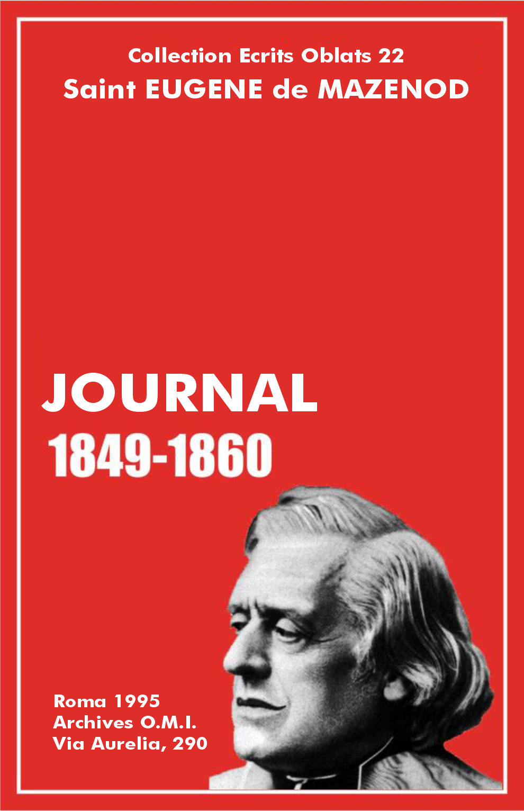

Éscrits Oblats: - 01 - 02 - 03 - 04 - 05 - 06 - 07 - 08 - 09 - 10 - 11 - 12 - 13 - 14 - 15 - 16 - 17 - 18 - 19 - 20 - 21 - 22

Vol.: XXII - Journal 1849-1860
Le 6 janvier [1]
Lettre du p. Dassy. Il renonce à l'espoir de faire quelque chose du p. Michelier [2] qui ne veut pas se mettre à composer.
Lettre au p. Dassy. Recommandation d'être patient à l'égard du p. Michelier qui, à son dire, ne veut pas se mettre à composer. Recommandation d'avoir égard à la faiblesse des frères convers.
.Vol.: XXII - Journal 1849-1860
Le 11 janvier [3]
Arrivée du cardinal Giraud [4] se rendant à Gaète. Ce prélat me propose d'aller avec lui; je n'en vois ni la nécessité ni la convenance.
Vol.: XXII - Journal 1849-1860
Le 13 janvier [5]
Décidément je laisse partir le cardinal sans me joindre à lui. Le cardinal voit tout couleur de rose; il part dans l'intention de presser le pape de se rendre aux vœux de la nation et de l'épiscopat; il se persuade (et il paraît que Louis-Napoléon a abondé dans ce sens) que la présence du pape en France faciliterait de bonnes élections pour la nouvelle assemblée nationale. Cela peut être, mais si, d'après l'attitude que nous voyons prendre à l'assemblée, il fallait que le président fît un coup d’État pour la défendre, et qu'il en résultât un choc, ne serait-il pas très fâcheux d'avoir amené le pape pour être témoin de ce désordre? Je ne veux pas en prendre ma part de responsabilité, et je me tiens prudemment à l'écart. Je fais plus: dans la lettre que j'écris aujourd'hui au Saint-Père, je lui exprime assez clairement ma pensée pour qu'il la saisisse s'il lit ma lettre avec attention. Le pape comprendra que je ne juge pas notre situation comme assez rassurante pour qu'il se risque à venir trop tôt, s'il a toujours l'intention de nous visiter. Voici cette lettre:
"Marseille, 13 janvier 1849.
Très Saint-Père,
L'accueil si bienveillant que votre sainteté daigne accorder à ce que j'ose lui écrire, est mon excuse pour la liberté que je prends de déposer de nouveau à ses pieds l'hommage de mes sentiments de dévouement inaltérable et de respect profond.
Je ne saurais laisser partir pour Gaète le cardinal archevêque de Cambrai sans au moins témoigner au Saint-Père ma vive reconnaissance pour la haute faveur que j'en ai reçue quand, le mois dernier, il m'a honoré avec tant de bonté d'une réponse d'un si haut prix pour moi.
Mon cœur devance ce prélat dans son heureux pèlerinage, je lui envie le bonheur de se trouver dans peu de jours auprès de Pie IX, et je regrette d'être, malgré moi, retenu encore sur notre rivage. Mais, si le souverain pontife n'y aborde pas, lorsque notre situation politique sera mieux dessinée, j'aurai à mon tour la consolation d'aller lui porter les vœux ardents de la nation française, et de lui porter en particulier ceux de mes ouailles ainsi que les témoignages de la tendre piété avec laquelle, prosterné à vos pieds, j'implore pour elles et pour moi votre bénédiction apostolique et suis, de votre sainteté, très Saint-Père, le très humble et très dévoué fils,
A Marseille, le 13 janvier 1849.
+C.J. Eugène, évêque de Marseille. [6]
Vol.: XXII - Journal 1849-1860
Le 14 janvier [7]
Lettre du p. Léonard. Il est établi avec le p. Bernard à Montréal [8]. Ils sont pauvrement et ils s'en réjouissent. Leur chapelle est en bois.
Vol.: XXII - Journal 1849-1860
Le 23 janvier [9]
Lettre au p. Santoni par le départ pour le noviciat de Sumien qui se soumet à cette épreuve pour rentrer dans la congrégation [10].
Lettre du p. Dorey, satisfaisante des bons renseignements qu'il me donne de son noviciat [11].
Vol.: XXII - Journal 1849-1860
Le 10 février [12]
Lui aussi [le cardinal Dupont] [13] aurait voulu que j'allasse avec lui à Gaète, mais je ne suis pas d'avis d'accompagner les cardinaux quand ils vont auprès du pape, surtout quand il n'y a pas raison de le faire. Le pape sait mon sentiment puisque d'après la lettre du père abbé de la Trappe, il tenait à le connaître. Je n'aurais rien de plus à lui dire. Quand à ce qui est de la consolation de lui rendre mes hommages, cela peut être renvoyé sans inconvénient.
Je prie le cardinal Dupont de porter une lettre pour le cardinal Antonelli [14]. J'écris à ce cardinal pour lui demander son sentiment au sujet de la quête que l'on fait pour le pape. Je lui envoie copie de ma lettre à mgr l'archevêque de Paris à ce sujet.
Vol.: XXII - Journal 1849-1860
Le 24 février [15]
[Service demandé par l'Assemblée nationale] [16], demandé, c'est ainsi que je l'ai expliqué dans mes lettres d'invitation aux autorités et dans ma circulaire aux curés, car on a commencé par faire une loi qui le prescrit et il m'a fallu rectifier dans le sens convenable l'arrêté du préfet qui ordonnait à son tour le service religieux, etc. Ce sont des protestations pour maintenir les principes.
.Vol.: XXII - Journal 1849-1860
Le 10 mars [17]
Désolante nouvelle de la mort du p. Michel [18]. Il venait de terminer la mission de Saint-Bonnet où il avait donné des preuves d'un grand zèle et d'une grande générosité. Le p. Lavigne qui avait fait cette mission avec lui, m'écrivait qu'il s'était conduit en saint. Je crains bien que le p. Lavigne n'ait pas su modérer ce zèle ni exiger assez qu'il prît plus de soin de sa personne. Je crains fort que ce que le p. Lavigne appelle une coqueluche ne fut une toux d'irritation et peut-être un commencement de fluxion de poitrine que le pauvre défunt n'a pas voulu ménager. Dieu l'aura récompensé, mais la mort de ce bon sujet est une grande perte pour la congrégation.
Vol.: XXII - Journal 1849-1860
Le 23 mars [19]
Départ de nos chers pères Marchal, Leydier et Lebescou [20] pour les missions de Ceylan. Leur dévouement est digne de leur belle vocation. Ils partent la joie dans l'âme, heureux d'avoir été choisis.
Vol.: XXII - Journal 1849-1860
Le 29 mars [21]
Le cardinal Giraud [22] me disait que le pape était tout à fait décidé à venir à Marseille quand les troupes françaises descendront à Civitavecchia. Le pape ne dit jamais qu'il viendra en France, mais à Marseille. Il s'occupe en ce moment de fixer les points qu'il veut qu'un concile national de France traite dans la réunion qu'il lui indiquera sous peu.
Vol.: XXII - Journal 1849-1860
Le 2 avril [23]
Le p. Viala ne me dit pas toutes les injures que ce pauvre évêque [24] a vomies contre moi qui, certes, n'ai d'autres torts que de lui avoir rappelé ses engagements et d'avoir été beaucoup trop poli dans le petit nombre de lettres que je lui ai écrites. Mais il est bon d'être humilié, si toutefois on peut l'être par de pareils outrages. Du reste, je me console par la pensée que je ne me les suis attirés que pour avoir voulu propager la connaissance de Jésus-Christ dans un pays où tant de prêtres ne vont que pour gagner de l'argent.
Le p. Bellanger, qui m'a écrit de son côté, avait déjà commencé à faire du bien aux colons; il a régularisé une dizaine d'unions, instruit, catéchisé.
Vol.: XXII - Journal 1849-1860
Le 9 avril [25]
Voilà encore un carême passé bien rapidement. Grâces à Dieu, pas la moindre incommodité ne m'a empêché d'observer fidèlement l'abstinence et le jeûne; toute ma maison s'est bien trouvée aussi de l'observance de ces lois de l’Église. Comment se persuader qu'il n'en serait pas de même dans les autres familles chrétiennes?
Vol.: XXII - Journal 1849-1860
Le 5 juillet [26]
Si j'avais eu la faiblesse de faire la procession [27] dans l'église le vendredi comme le portait la lettre du maire, ce beau triomphe n'eut pas eu lieu. Que le bon Dieu est bon d'inspirer quand il le faut la lumière et la force. Marchons toujours dans cette voie.
.Vol.: XXII - Journal 1849-1860
Le 5 juillet [28]
J'avais écrit au général Oudinot [29] lors de son passage à Marseille pour lui offrir de faire accompagner son expédition d'au moins deux prêtres qui servissent d'aumôniers aux troupes. Le général vint me répondre verbalement qu'il ne croyait pas pouvoir prendre sur lui d'accepter mon offre. Je lui dis alors que j'écrirais au gouvernement, ce que je fis le jour même. M. de Falloux [30] me répondit pour louer mon zèle, mais ma lettre ayant été lue au président de la République en conseil des ministres, on s'arrêta à la pensée d'écrire aux agents français en Italie pour qu'ils appelassent à ce service les prêtres français qui se trouvaient sur les lieux. Je dus me reposer sur ces résolutions. J'avais fait ce que le bon Dieu m'avait inspiré, et je devais me féliciter d'avoir été du moins l'occasion de l'envoi de prêtres français auprès de nos bons soldats.
Voilà qu'aujourd'hui je reçois une lettre de m. de Falloux qui me propose de venir au projet que je lui avais primitivement soumis et d'envoyer quelques-uns de nos prêtres à l'armée, assurant que sur ma recommandation le général Oudinot les accueillera bien. J'étais à réfléchir sur le parti que j'avais à prendre, lorsque le provincial des Jésuites est venu me faire lire une lettre que le p. Ravignan lui écrit pour lui faire connaître les bonnes dispositions du ministre auquel il a parlé et qu'il sait devoir m'écrire à ce sujet. Le provincial met six pères de la Compagnie à mes ordres. Je ne crois pas d'abord devoir envoyer un si grand nombre de prêtres, ignorant si, quand le ministre aura appris la capitulation de Rome, il ne changera pas d'avis; de plus, il ne me paraît pas convenable de choisir uniquement des Jésuites pour remplir ce ministère de charité dont le ministre me laisse la direction. Deux prêtres suffisent pour le moment. Arrivés sur les lieux, ils verront de quoi il tourne et, s'ils sont bien reçus, alors je pourrai leur adjoindre deux Jésuites ou quatre s'il le faut. La morale que je retire de ceci, c'est que les pères Jésuites se montrent toujours prêts en première ligne lorsqu'il y a quelque bien à faire. Que les nôtres le retiennent bien! Sans doute ils en feraient autant, mais qu'ils soient encouragés par cet exemple des anciens à ne jamais dire non, ni c'est assez.
Vol.: XXII - Journal 1849-1860
Le 25 juillet [31]
Arrivée du p. Ventura [32] à Marseille. M. Gros, négociant auquel il a été recommandé, est venu de sa part me demander une audience. J'ai pensé qu'il valait mieux la lui refuser que de m'exposer à lui dire des choses trop désagréables, ce que je n'aurais pu m'empêcher de faire. Il m'eût d'ailleurs été impossible de l'autoriser à dire la messe dans mon diocèse, chargé, comme est le pauvre homme trop célèbre, de censure et d'excommunication [33]. Il est loin de se croire obligé de réparer les scandales qu'il a donnés à l’Église. Il se dit persécuté par les réactionnaires.
Vol.: XXII - Journal 1849-1860
Fin juillet [34]
[Lettre de l'évêque de Nîmes au sujet du p. Ventura.] [35] Ma réponse ne s'est pas fait attendre; je lui ai dit ce que j'en pensais.
[Lettre du p. d'Alzon.] [36] Le p. Ventura lui demande un asile chez lui pour se soustraire aux persécutions des réactionnaires. M. d'Alzon me consulte sur la conduite qu'il a à tenir. Il me demande s'il n'est pas à espérer que les sages conseils d'un ami ne réveillent pas dans l'âme de cet homme les sentiments de foi, etc. Sa lettre n'annoncerait pas de semblables dispositions. On m'a dit que le p. Gavazzi [37] avait aussi débarqué à Marseille, mais il ne s'est pas fait connaître à moi. Il aurait déblatéré contre le pape pendant toute la traversée.
Vol.: XXII - Journal 1849-1860
Le 1er août [38]
Fin de ma 67e année. Entrée dans ma 68e. Anniversaire de ma naissance. C'est ainsi que les années s'accumulent sans qu'on s'en aperçoive. On avance vers le tombeau un an après l'autre. On peut pourtant mesurer la distance le jour où l'attention est fixée par la célébration de l'anniversaire de son entrée dans le monde. Qu'importe de n'avoir point d'infirmité et de se porter comme si l'on n'avait que trente ans. On est forcé de compter le jour qui rappelle celui de la naissance.
Vol.: XXII - Journal 1849-1860
Le 2 août [39]
Deux août, anniversaire de mon baptême. Messe aux Capucines. Cette messe est de fondation à pareil jour. Je ne saurais réclamer un plus puissant secours que les prières de ces saintes filles pour remercier Dieu d'un bienfait comme celui de ma régénération.
Vol.: XXII - Journal 1849-1860
Le 22 août [40]
Je suis arrivé à Dijon à la pointe du jour. J'ai attendu à la porte de la cathédrale qu'on l'ouvrît pour y dire la sainte messe, après laquelle je suis monté chez monseigneur l'évêque [41] qui avait été prévenu de mon passage et qui me fit inviter chez lui pour déjeuner. Je repartis immédiatement après pour Nancy [42].
Vol.: XXII - Journal 1849-1860
Le 18 septembre [43]
Mon devoir me rappelait auprès de mon troupeau [44]. Aussi, je n'hésitai pas à prendre ma résolution. Un retard me fit manquer la voiture qui partait de Chaumont pour Dijon. Je m'étais pourtant rendu à Chaumont en poste. Il me fallait prendre un cabriolet de poste pour courir après cette voiture que je trouvai à Langres, à neuf heures du soir, sur le point de partir; mais il n'y avait point de place pour moi. Me voilà réduit à coucher à Langres, au lieu de voler, comme je l'aurais voulu, vers ma malheureuse Marseille, après laquelle je soupirais.
Patience! mais patience forcée, jusqu'au lendemain six heures du matin, pour le passage de la diligence de Nancy! A six heures, nouvelle déception! Je me résignai à attendre à Langres le départ du soir, pour lequel je fus aussitôt m'assurer nos places. Mais quelle éternelle journée fut pour moi celle passée à Langres! Je ne connaissais personne dans cette ville. Monseigneur était renfermé dans le séminaire avec le clergé, en retraite pastorale. Je n'osai le déranger de ses occupations que vers midi. Que devenir après que j'eus dit la messe chez les Frères des Ecoles chrétiennes? Je passai une partie de la matinée à l'église, et j'y passai encore plusieurs heures après-midi, après que j'eus vu mgr Parisis, avec lequel je restai trois quarts d'heure qui furent bien employés à parler des grands intérêts de l’Église confiés à ce prélat par la position que lui a donnée la confiance de ses concitoyens [45]. J'insistai pour lui dire qu'il ne devait pas se regarder simplement comme le député du Morbihan, mais comme le représentant de tout le clergé de France, qui comptait sur ses lumières et son caractère pour défendre les intérêts de l’Église dans l'Assemblée où il avait su prendre une si belle attitude. Je fus très satisfait de sa conversation, et je le quittai pour le laisser vaquer aux occupations bien connues d'un évêque pendant une retraite ecclésiastique. Il m'invita à dîner le soir à sept heures. Il chargea messieurs ses grands vicaires de me tenir compagnie et de me faire les honneurs de la ville.
Je me refusai absolument à les déranger, et je les congédiai de la porte du séminaire, où je les forçai de rentrer, quelque instance qu'ils pussent faire. C'est alors que je me mis encore à arpenter la ville, et comme il pleuvait et faisait froid, je finis par me réfugier dans l'église où je m'entretins longtemps avec notre Seigneur de mes pauvres diocésains décimés par le choléra. Je ne m'en doutais pas d'abord, mais je reconnus plus tard que j'étais l'objet d'une grande surveillance, et que j'avais donné quelques mauvais moments à l'appariteur, gardien de cette église déserte. Cet homme m'avait déjà vu parcourir l'église le matin et l'examiner avec soin et assez longuement. Me retrouvant encore l'après-midi dans ce saint lieu, et cette fois m'y revoyant en quelque sorte à poste fixe, assez près de l'autel où repose le très saint sacrement, mon valet de chambre, qu'il prit sans doute pour un complice, assis derrière moi; cet homme, dis-je, ne s'expliquant pas une dévotion si étrangement prolongée, crut sans doute que nous étions d'habiles filous qui n'étions là que pour faire un mauvais coup. Je le voyais tourner, rôder autour de nous, aller de l'avant et de l'arrière, ne nous perdant pas un instant de vue. Il y avait là de quoi me distraire, aussi finis-je par prendre le parti de me retirer, ne fût-ce que pour mettre en paix l'âme de cet honnête gardien, qui dut être fort soulagé en nous voyant partir.
Enfin, l'heure du dîner approchant, je fus à l'évêché, où monseigneur de Langres ne tarda pas de se rendre de son côté, et je passai près de deux heures avec ce prélat, qui me donna des détails fort intéressants sur ses rapports avec les divers membres de l'Assemblée. Il leur inspire une grande confiance et ils ont tous pour lui une grande considération.
Vol.: XXII - Journal 1849-1860
Le 22 septembre [46]
Enfin, me voici arrivé dans ma chère Marseille! Je ne saurais exprimer la satisfaction que j'ai éprouvée en me retrouvant dans le sein de ma famille dans un moment comme celui-ci. J'avais tant souffert d'en être éloigné. Le voyage qui m'y ramenait m'avait paru si long! C'était à en être malade. On avait eu beau me dire que j'avais des précautions à prendre, en venant d'un pays où l'air est très pur, pour me plonger dans une atmosphère pestilentielle. Je n'y faisais pas seulement attention. Un dérangement extraordinaire qui me prit dans la route ne m'arrêta pas davantage quoiqu'on me dit que c'était un [signe] avant-coureur du choléra. J'avais un devoir à remplir, cela répondait à tout. Je descendis à la gare dans mon costume de curé. Je ne sais si c'est par un effet de la préoccupation mais je me crus dans un désert; je ne rencontrai que deux ou trois gamins dont un me reconnut tout noir vêtu que j'étais. Je hâtai le pas et descendis le grand escalier avec rapidité. J'entrai aussitôt au petit séminaire. C'est là où mon cœur se dilata, en me trouvant entouré de tous les prêtres de la maison. Ce ne sont pas des mots; j'éprouvai réellement une joie extraordinaire, je la compare à celle que ressent un exilé quand il rentre dans sa patrie. Il était trois heures et je n'avais encore rien pris de la journée à cause du jeûne dont, par parenthèse, mes diocésains avaient été dispensés par mes grands vicaires pendant mon absence. Monsieur l'économe me fit servir un modeste dîner, tel, du reste, que je lui avais demandé, composé d'une omelette et de deux oeufs au plat, délicieux repas qui me restaura, étant pris surtout en présence de mes enfants qui se réjouissaient d'une manière touchante de mon retour après lequel ils avaient soupiré, certainement pourtant moins que moi. Dans l'intervalle, on avait fait avertir mes grands vicaires qui arrivent aussitôt et que j'embrasse avec bonheur. Je repris mon costume d'évêque et me rendis à l'évêché où je commençai aussitôt à m'occuper des affaires du diocèse avant d'être dérangé par ceux que leur empressement amènerait auprès de moi pour me complimenter sur mon retour. Le jour de mon arrivée, il y eut encore une soixantaine de décès et le lendemain presque autant.
Vol.: XXII - Journal 1849-1860
Le 23 septembre [47]
Ma première pensée fut d'aller rendre mes devoirs à notre Bonne Mère dans son sanctuaire de la Garde. J'y suis monté aujourd'hui dimanche pour y célébrer les saints mystères et ratifier aux pieds de Marie l'offre que j'avais faite de ma vie au Seigneur pour le rachat de la maladie qui décimait mon peuple, dès que j'eus appris que le choléra sévissait mortellement à Marseille. La sainte montagne était couverte de bons fidèles qui se rendaient au sanctuaire en même temps que moi. La chapelle se trouva pleine lorsque j'y arrivai. Avant de commencer la messe je crus devoir adresser quelques paroles d'édification à l'assemblée qui, si j'en juge par les larmes que je vis répandre, entra parfaitement dans les sentiments que j'exprimais de l'abondance de mon cœur.
.Vol.: XXII - Journal 1849-1860
Le 24 septembre [48]
Les lettres que j'ai reçues de l'Orégon m'obligent de m'occuper sérieusement d'adjoindre à cette mission les frères que nos pères réclament avec tant d'instance. Je vais profiter d'un bâtiment qui fera voile prochainement pour San Francisco, en Californie, pour y embarquer deux frères [49] qui puissent les aider dans l'exploitation des terres et bois qu'on leur a adjugés. Mais comme il faut aussi au moins un prêtre, soit pour accompagner les frères soit pour augmenter le nombre de nos missionnaires dans cette contrée abandonnée, j'ai choisi parmi tous nos oblats qui brûlent de se consacrer aux missions les plus pénibles, le frère D'Herbomez qu je ferai diacre samedi pour le faire prêtre le dimanche 14, anniversaire de mon sacre. Ce frère, loin d'être effrayé du tableau que je lui ai fait de la vie de nos pères en Orégon qui n'ont pas de quoi se vêtir ni de quoi manger, a bondi de joie d'avoir été choisi; je savais qu'il faisait depuis longtemps, pour attirer sur lui cette grâce, des prières et des mortifications. Ces beaux sentiments ont rempli mon cœur de joie, mais de quelle amertume n'a-t-il pas été bientôt abreuvé?
[Début octobre]: Hier encore, en allant visiter notre bon p. Mounier, je le fis sourire en lui annonçant la destination du f. D'Herbomez. Malade depuis quelques temps d'une fièvre typhoïde, il nous tenait dans une grande inquiétude; mais ce matin il avait le visage serein, l'esprit tout à ce qu'on lui disait; il me disait qu'il ne se sentait de mal nulle part. Je sortis de sa chambre consolé de le voir si bien et je comptais sur sa prochaine guérison, lorsque tout à coup, sur les quatre heures, un affreux redoublement le saisit et le précipita dans un état voisin de l'agonie, qui suivit immédiatement. On accourut le soir pour m'annoncer sa fin prochaine. J'accours auprès de lui et le trouve à l'agonie, entouré de tous nos oblats et de tous nos pères [50] qui se joignirent à moi dans les prières que je continuai jusqu'au moment de sa bienheureuse mort qui eut lieu sur les huit heures aujourd'hui.
La congrégation fait une bien grande perte. Indépendamment des vertus religieuses qu'il possédait à un degré très élevé, il avait déjà acquis l'expérience de la direction des Oblats qui profitaient visiblement de ses bons conseils et de ses exemples. Si, à vingt-sept ans, il s'était acquis l'estime et la confiance de toute notre jeunesse, quel avenir ne pouvions-nous pas nous promettre de lui? Le bon Dieu en a disposé autrement; il faut toujours bénir son saint Nom, d'autant plus que nous avons fait tout ce que nous avons pu pour ne pas lui céder ce cher père qui nous était si utile ici-bas. J'ai dit plusieurs messes à cet effet et toutes nos communautés plus ferventes de religieux ont fait d'ardentes prières à Dieu dans la même intention. Quand le Seigneur résiste ainsi à la prière, il faut reconnaître que sa sainte volonté est prononcée et c'est toujours pour le bien de ses élus.
Mais qu'il m'en coûte de faire ce sacrifice! Aussi, aujourd'hui, j'ai fait l'ordination au diaconat du frère D'Herbomez dans la tristesse de mon âme. J'ai quitté l'autel de l'ordination pour passer au séminaire pour assister à la messe de requiem qui a été chantée, le corps présent de notre bon p. Mounier. Je ne pouvais m'empêcher, en le voyant étendu sur son modeste catafalque, de repasser dans mon esprit les vertus dont son âme était ornée, la bonté de son caractère, cette douceur, cette humilité, cette déférence habituelle pour ses supérieurs, cette profonde vénération pour le caractère sacré dont son supérieur général était revêtu, ce zèle pour la sanctification et la perfection des frères dont il était chargé; c'était autant de titres pour sa glorification, aussi avais-je la confiance qu'il était déjà dans le ciel, tandis que nous priions pour lui sur la terre. J'ai fait l'absoute. Je suis encore revenu sur le soir pour psalmodier l'office des morts avec la communauté. Le chapitre de la cathédrale est venu ensuite le prendre pour le présenter à l’Église. Je me suis joint au cortège. J'ai assisté aux vêpres qui ont été chantées à la cathédrale. J'ai fait encore l'absoute et le chapitre et tous nos oblats ont accompagné son saint corps au cimetière.
.Vol.: XXII - Journal 1849-1860
Le 14 octobre [51]
Avant de me rendre à l'office de la cathédrale, j'ai ordonné prêtre dans ma chapelle le p. D'Herbomez. J'avais appelé tous les oblats présents à Marseille pour assister à cette touchante ordination, car je ne la faisais que pour former un apôtre destiné à évangéliser les tribus sauvages de l'Orégon. Plus d'un parmi nos oblats ont envié le sort de notre nouveau prêtre, car j'en connais plusieurs qui ne seraient pas plus effrayés que lui de toutes les privations, de tous les sacrifices qu'il faut faire pour aspirer à cette pénible mission.
Vol.: XXII - Journal 1849-1860
Le 21 octobre [52]
Je ne cite plus ma correspondance, elle est trop multipliée et vraiment accablante. Comment tenir tête, seul comme on me laisse, à toutes nos maisons de France, à celles d'Angleterre et aux missions du Canada, du reste de l'Amérique, de l'Algérie et de Ceylan. Voilà pour les nôtres. Et puis les évêques, Rome, Gaète et à présent Naples [53] et le menu détail de mon diocèse!
Vol.: XXII - Journal 1849-1860
Le 26 octobre [54]
Parmi les nombreuses lettres qui m'arrivent de partout, j'en ai reçu une aujourd'hui du p. Laverlochère, datée de Moose Factory. Elle contient quelques détails intéressants sur ses pénibles missions sur les bords de la mer glaciale, à la Baie d'Hudson. Je recueille avec bonheur l'éloge qu'il me fait du petit p. Arnaud qu'on a élevé au sacerdoce au Canada. Voici ce que m'en dit le p. Laverlochère: "Monseigneur de Bytown me donnera pour compagnon l'aimable et vertueux petit p. Arnaud. Il me serait impossible de vous dire tout ce que ce jeune enfant de Marie Immaculée possède de bonnes qualités. La beauté de son âme et la bonté de son cœur sont tellement empreintes sur son angélique figure que tous ceux qui le voient en sont frappés au premier aspect. Les protestants comme les catholiques m'ont fait plus d'une fois cette remarque. Il n'a qu'un défaut, me dit-on, c'est qu'il est trop jeune. Ce défaut, leur dis-je, il s'en corrige tous les jours. Par le fait, sa figure angélique le représente tellement jeune que j'ai eu dans plusieurs circonstances de la peine à persuader aux officiers de la Compagnie de la Baie d'Hudson qu'il était prêtre comme moi. Une âme si candide et si pure ne soupçonne pas même le mal affreux qui règne dans le monde. Aussi lui manque-t-il de joindre la prudence du serpent à la simplicité de la colombe, vertu qu'il possède au suprême degré. Je bénis chaque jour le Seigneur d'avoir un tel compagnon. Sans me dire un mot, il me fait souvent rougir de ma lâcheté, je vous dois cet aveu, mon très révérend père."
Comment trouvez-vous cet aveu dans la bouche de cet héroïque missionnaire qui fait des prodiges de dévouement avec tant de succès dans ces missions qu'il a fondées, après avoir perfectionné toutes les autres qu'il visite tous les ans? C'est que le bon p. Laverlochère est aussi humble que puissant en œuvres.
Vol.: XXII - Journal 1849-1860
Le 4 novembre [55]
Mgr l'évêque de Dijon m'avait écrit pour me demander des informations sur l'association des adorateurs du saint sacrement que j'ai approuvée le 30 juin 1848. Je lui ai répondu à ce sujet que j'avais en effet autorisé cette association d'adorateurs du saint sacrement, parce que je n'avais rien vu que d'édifiant dans cette pensée que les propagateurs de cette dévotion sont des personnes très pieuses qui attachent avec raison un très grand prix au succès de leur œuvre; que j'avais d'abord craint que cette nouvelle association ne portât tort à l'ancienne qui est en vigueur depuis longtemps dans mon diocèse et qui se rattache à l'institut de nos Religieuses du Saint Sacrement dont la maison-mère est à Marseille [56]; mais que l'une n'avait pas nui à l'autre et que notre divin Sauveur n'en a été que plus honoré dans le sacrement de son amour.
Vol.: XXII - Journal 1849-1860
Le 10 novembre [57]
Lettre de l'évêque de Bytown, du p. Honorat et du p. Telmon. Ce qui se passe en Canada est inoui. Voilà le p. Telmon qui prend sur lui la mission du Texas, s'appuyant sur les facultés que je lui avais données, quand il était à Pittsburg. Il part et il emmène avec lui des sujets, à son choix, entre autres le frère Gelot [58], ce même frère qui avait fait ses vœux sans être admis par le conseil et au sujet duquel j'avais défendu expressément à l'évêque de Bytown de le faire ordonner sans mon approbation. Et l'évêque de Bytown m'écrit qu'il a appris par le journal qu'on l'a ordonné sous diacre. C'est une monstruosité qui n'a pas de nom. Le p. Telmon avait certainement reçu la lettre par laquelle il lui était très explicitement signifié qu'il était rentré de droit sous la juridiction du provincial du Canada, et il n'en a pas tenu compte, apparemment parce qu'il se trouvait trop engagé avec l'évêque du Texas [59] qui l'attendait à Cincinnati ou ailleurs. Mais ce qui est plus fort, c'est qu'en écrivant il ne tâche pas de légitimer sa démarche en me demandant une autorisation postérieure. D'autre part, l'évêque de Bytown, s'estimait si heureux d'être débarrassé du seul homme qui lui fît ombrage, qu'il n'a fait aucune observation et, qui pis est, il a consenti de pactiser avec lui en lui cédant ce fère Gelot, en échange du p. [60] qui lui convenait pour ses établissements de Bytown. Je ne sais en vérité qui est le plus coupable: de l'évêque ou du p. Telmon? Je m'arrête! Il faudrait écrire des pages sur tout ce qui se passe dans ces contrées lointaines. A les entendre pourtant, je m'inquiète à tort. Ils sont tous parfaitement à leur devoir.
Je me vois forcé, à grand regret, de lui [61] refuser les missionnaires qu'il me demande itérativement pour sa mission de Bengala. Je voudrais pouvoir en fournir pour toutes les missions du monde, mais nous ne pouvons pas suffire à celles dont nous sommes déjà chargées.
Vol.: XXII - Journal 1849-1860
Le 19 novembre [62]
Je rencontre cette maxime dans la vie du p. Antoine Le Quieu [63], fondateur des Religieuses du Saint Sacrement. Elle expliquera la répugnance que j'éprouve à accorder certaines dispenses: "J'ai toujours tâché, disait le saint religieux, que la dévotion marchât la première. Je ne crois pas que l'on doive beaucoup dispenser les religieux des exercices communs de dévotion, car Dieu ne bénit guère de telles dispenses."
Vraiment cette invitation [64] venait mal à propos. J'avais passé onze heures de suite à mon bureau pour écrire à tous nos pères de l'Orégon et rédiger les instructions soit pour eux soit pour le p. D'Herbomez qui va les rejoindre avec deux frères convers en passant par la Californie. Je ne me sentais pas disposé à consentir d'aller me reposer sur la place publique. J'ai parlé du p. D'Herbomez et des frères convers Surel et Janin qui vont faire voile aujourd'hui pour l'interminable voyage de l'Orégon en passant par le cap Horn. Ah! Que ces braves enfants sont admirables! Ils partent pour cette mission si peu attrayante humainement parlant avec une sainte joie et un zèle étonnant. Tout le monde en est très édifié et les passagers au nombre de quatre-vingt ont témoigné de la plus grande joie de les avoir, surtout le père, pour compagnons de voyage. J'espère qu'il sera utile à leurs âmes pendant cette longue traversée qui ne dure pas moins de six ou sept mois et peut-être huit.
Vol.: XXII - Journal 1849-1860
Le 29 novembre [65]
Je ne marque plus les lettres que j'écris, et celles que je reçois, dans ce cahier, mais je dois dire que depuis quelques temps ma correspondance a décuplé et que trop souvent elle est aussi fatigante que désagréable. On en trouvera quelques traces dans le registre des lettres de la congrégation [66]. Si nous avons un grand nombre de bons excellents sujets, il faut avouer que nous avons aussi trois ou quatre mauvaises têtes qui me font beaucoup souffrir. Je suis persuadé que chez les Jésuites on les congédierait, quel que soit leur talent, car ceux dont je parle ont tous du talent, mais ils manquent de vertus, du moins de ces véritables et solides vertus qui font le religieux. Nous les gardons par pitié pour leurs âmes et à cause des services qu'ils rendent dans le ministère extérieur qui souffrirait de leur absence, mais c'est une dure nécessité, car je ne vois pas qu'ils se corrigent; en avançant en âge, ils finiront par devenir insupportables.
Vol.: XXII - Journal 1849-1860
Le 30 novembre [67]
Départ pour l'Algérie des pères Martin et Grenier [68]. Ils vont prendre possession des postes qui leur sont indiqués par mgr l'évêque dans la province de Constantine, c'est aux environs de Philippeville dans les villages de Stora, Valée, Danrémont, Saint-Charles et Saint-Antoine. Le p. Tempier les accompagne pour régler toutes les affaires dans ce pays-là. Il s'agira de savoir si nous pouvons tenir à Blida qui est véritablement le point qui nous convient, peu distant d'Alger et à portée de l'Atlas par où il faudra dans la suite pénétrer pour travailler à la conversion des Arabes. Il faudra alors décider si nous acceptons les offres qui nous sont faites par m. de Baudicour [69] qui veut nous vendre sa propriété.
Vol.: XXII - Journal 1849-1860
Le 20 décembre [70]
[Service pour les morts du choléra.] On ne saurait être plus content que je ne suis de toutes nos autorités. L'autorité militaire avait convoqué des représentants de toutes les armes, ce qui formait un corps d'officiers très considérable.
Vol.: XXII - Journal 1849-1860
Le 21 décembre [71]
Anniversaire 38e de mon ordination sacerdotale. J'ai été célébrer cette fête comme de coutume dans la chapelle intérieure du monastère de nos saintes Capucines où je recueille toujours les témoignages les plus touchants de l'affection filiale de ces saintes filles. J'ai passé le reste de la journée au grand séminaire avec les retraitants qui se disposent à l'ordination de demain. Après la prière du soir, avant de les quitter, je leur ai communiqué mes pensées conformes sans doute à ce que l'Esprit Saint leur aura inspiré dans ces saints jours.
Vol.: XXII - Journal 1849-1860
Le 23 décembre [72]
Le p. Tempier est revenu de son voyage en Algérie. Jamais course ne fut plus nécessaire. Il est arrivé à temps pour démasquer le p. Bellanger [73] qui trahissait indignement la congrégation en calomniant les intentions de ses supérieurs auprès de l'évêque. Après cette découverte, mgr Pavy a demandé lui-même au p. Tempier de laisser quelques mois encore le p. Bellanger à Blida par ménagement pour lui qui s'était laissé tromper. Toujours de nouvelles tribulations. Il faut que Judas se mêle de tout pour tout gâter.
Vol.: XXII - Journal 1849-1860
Le 26 décembre [74]
[Visite de mgr Timon [75], évêque de Buffalo.] Je ne me refuserai pas à ses instances, tant est grande la confiance que ce prélat m'inspire.
Vol.: XXII - Journal 1849-1860
Le 20 janvier [76]
Je suis allé visiter un de mes jeunes prêtres dont j'ai eu à regretter la perte aujourd'hui même [77]. Il n'y a que deux ans que je l'ai ordonné: c'était un excellent sujet.
J'ai visité aussi un autre prêtre, m. Pasquier [78] qui s'est éteint dans les plus grandes douleurs, mais avec de grands sentiments de résignation. Ma visite lui a fait un plaisir extrême. Il en exprimait le sentiment par des paroles touchantes. Ce bon prêtre, quand je me fus retiré, me fit rappeler pour me demander pardon s'il m'avait donné quelque chagrin ou quelque sujet de mécontentement. Je pus lui répondre avec vérité qu'il ne m'avait jamais donné que des sujets d'édification et que je l'avais toujours considéré comme un excellent prêtre qui avait toute mon estime.
Vol.: XXII - Journal 1849-1860
Le 3 février [79]
Le cardinal [Dupont] [80] m'a dit penser comme moi au sujet de nos conciles provinciaux [81]. Nous nous sommes quittés en nous embrassant de nouveau et en me rappelant -ce sont ses propres termes- tout ce qu'il m'est, et se mettant entièrement à mon service. Ce sont des offres dont on est reconnaissant, mais dont on n'abuse pas.
Vol.: XXII - Journal 1849-1860
Le 7 février [82]
J'ai toujours pensé qu'un évêque doit encourager tout le bien qui se fait dans son diocèse, payant de sa personne en toute occasion. Son exemple est un puissant motif qui porte à l'imitation toutes âmes de bonne volonté. C'est ainsi qu'ayant établi l'exposition du très saint sacrement dans toutes les églises le jeudi, le dimanche, le lundi et le mardi gras, j'ai regardé comme un devoir d'aller visiter, chacun de ces jours, plusieurs des églises où notre Seigneur est exposé à l'adoration des fidèles et que je me prête volontiers à présider toutes les réunions pieuses où ma présence est [désirée].
Aujourd'hui a donc été une journée pleine dans l'ordre spirituel et, loin de m'en plaindre, j'en bénis le bon Dieu. Il était dix heures quand nous nous sommes retirés. J'ai la consolation de penser que c'est une journée bien employée pour un évêque et je remercie le Seigneur de me procurer ce moyen de donner gloire à son saint Nom, édification à mes ouailles et profit à mon âme.
Vol.: XXII - Journal 1849-1860
Le 22 février [83]
Mission d'Algérie, que tu nous coûtes cher! A quelle épreuve le bon Dieu vient-il de nous mettre! Hélas! nous étions déjà bien accablés d'avoir été obligés d'expulser ce misérable Bellanger [84] dont l'indigne conduite va être connue de toute l'Algérie! Voilà que, par le courrier de ce soir, nous apprenons l'affreux malheur qui vient de fondre encore sur nous. Ce bon et excellent p. Eymère [85], que j'avais envoyé en Algérie pour remplacer le Judas qui avait trahi la congrégation et l’Église, avant même d'arriver à sa destination, par une imprudence déplorable, a trouvé la récompense de son dévouement et de sa bonne volonté. Les chevaux de la diligence qui le portait à Blida ayant pris le mords aux dents, ce bon père a eu la malheureuse pensée de sauter à bas de la diligence et en tombant il s'est à peu près tué. Resté sans connaissance sur le grand chemin, un homme est allé à toute bride porter la nouvelle de ce funeste accident au p. Sabon [86] qui, accouru en toute hâte, n'a pu que donner l'absolution et l'extrême onction à son malheureux confrère qui avait perdu toute connaissance. Il le fait porter jusqu'à Blida où les secours de l'art ne lui ont point manqué, mais l'état du pauvre père était désespéré au moment du départ du courrier. C'est à Beni-Méred que la chute a eu lieu. Serait-ce une victime d'expiation que le Seigneur a demandée pour effacer, en union des mérites du Rédempteur, les sacrilèges de l'indigne Bellanger qui desservait cette paroisse au temps de son hypocrisie et de ses fourberies? Quoiqu'il en soit, nous perdons un charmant sujet, plein de jeunesse, de zèle et de santé, qui nous promettait un long et fructueux ministère. Je suis accablé du coup et je supplie le Seigneur de m'accorder la grâce de supporter cette perte si sensible à mon cœur avec la résignation que nous devons avoir pour tout ce qu'il lui plaît d'ordonner.
Ordination dans ma chapelle du frère Richard Moloney [87]. Je l'ai fait sous-diacre pour l'ordonner diacre à Sitientes [88] et prêtre la 2e fête de Pâques [89]. C'est un des trois destinés à la mission de Buffalo [90]. Je puis bien dire que je l'ai enfanté dans la douleur, car la pensée du bon p. Eymère m'a constamment préoccupé pendant toute la cérémonie. Que Dieu soit béni de tout! Il connaît nos besoins. C'est lui qui nous appelle aux diverses missions que nous entreprenons pour sa gloire. Il y pourvoira. Que sa volonté soit faite.
.Vol.: XXII - Journal 1849-1860
Le 24 février [91]
Ainsi a eu lieu cette bigarrure [92]. On a chanté la messe avec les ornements violets, nous avons pris les vêtements noirs pour faire l'absoute, nous nous sommes ensuite revêtus des ornements blancs pour chanter le Te Deum.
Vol.: XXII - Journal 1849-1860
Le 2 mars [93]
A force de vouloir se faire romains comme si nous ne l'étions pas, nos jeunes évêques tombent dans la puérilité. Ils ne savent pas comme moi combien on se moque d'eux à Rome. Dernièrement encore, le doyen du sacré collège disait à quelqu'un à l'occasion des cierges qui ont plus ou moins de cire, qu'a-t-on besoin de demander cela? A la congrégation même des Rites, ils étaient ennuyés des questions qu'on ne cessait de leur faire. Ils répondaient pourtant tout en reconnaissant qu'on aurait dû se dispenser de provoquer des réponses contraires aux usages reçus en France. Moi-même j'ai entendu le cardinal Della Somaglia [94], alors doyen du sacré Collège, s'édifier beaucoup de la piété des fidèles de France qui approchaient de la sainte table en si grand nombre à la messe de minuit. A Rome, c'est pourtant défendu. Eh bien! j'ai en ce moment un série de questions faites par l'évêque de la Rochelle [95] à la congrégation des Rites. C'est à ne pas croire.
Je n'entends pas les choses comme cela! Certes, j'ai toujours passé pour ultramontain et si je ne veux pas des prétendues libertés gallicanes de 1682 et autres, je tiens à celle que nous donne l'usage constant de nos églises dont tous nos prédécesseurs ont joui à la vue et au su des souverains pontifes qui n'avaient jamais songé à réclamer. Et c'est avec une véritable douleur que je vois tous nos jeunes évêques, se remorquant les uns après les autres à la suite de quelques hommes exagérés comme dom Guéranger [96], etc., sacrifier un à un tous nos privilèges, tous nos usages les plus anciens et les plus vénérés. Notre Église telle qu'elle était avant cet entraînement n'était-elle pas chérie et respectée par tout les papes et le sacré Collège formant le clergé romain? Je suis à même de répondre, moi qui me suis trouvé dans de si intimes rapports avec tous les papes depuis Pie VII jusqu'à Grégoire XVI inclusivement, et avec tous les cardinaux de cette époque [97], qu'ils étaient tous dans l'admiration de nos églises. Et quels papes que Léon XII et Pie VIII qui avaient pour moi tant de bonté, Grégoire XVI avec lequel j'ai été précisément dans le cas de m'entretenir de nos usages tels que le privilège qu'ont nos évêques de dispenser de l'abstinence quadragésimale. Quels cardinaux que les cardinaux Mattei, dont j'étais en quelques sorte l'enfant gâté, Della Somaglia, qui m'a toujours montré tant d'affection, Pacca, qui me regardait comme son fils pour ne pas dire son ami, ses lettres en font foi, Castiglioni devenu pape sous le nom de Pie VIII, Litta, Brancadoro, De Gregorio, Gabrielli, Ruffo, archevêque de Naples, Mario, Pedicini, Pallotta, Lambruschini, Ostini, Polidori, Orioli, Sola, Morozzo, Oppizoni, Odescalchi, mon consécrateur, Falconieri et Frezza, mes deux autres consécrateurs, Mezzofanti, Mellini, Acton! Je pourrais ajouter Bernetti avec lequel j'ai eu des rapports très intimes, Caprano, Frosini, toujours si poli pour moi, Zurla, Falzacappa, Tadini, Monico, Castracane et plusieurs autres. Je soutiens que jamais les papes n'auraient eu la pensée de troubler les évêques de France dans la possession des usages de leurs églises si ceux-ci, par un zèle excessif, n'étaient venus provoquer l'approbation des changements qu'ils ont eu l'idée de faire. Il est certain qu'alors que nous faisons nous-mêmes bon marché de toutes nos traditions et que nous en offrons l'abandon, Rome ne peut pas faire autrement que de les accepter et que les employés des congrégations exprimeront des paroles élogieuses qu'on serait bien simple de prendre à la lettre. Je ne puis croire que ce soit le pape, qui fait le plus de concessions de toute autre valeur et importance, qui aurait été tenté d'exiger le sacrifice de celles que ses prédécesseurs en remontant jusque dans la nuit des siècles nous avaient faites directement ou indirectement. Je gémirai toute ma vie de la conduite de mes jeunes collègues que je n'imiterai jamais, dussé-je rester seul debout au milieu de tous ces décombres.
Il est bon de remarquer ce qui est dit au commencement de la réponse [98] signée par le cardinal Bianchi, en l'absence du cardinal Lambruschini, et contresignée par mgr Fatati, secrétaire [99]:
"Presque tous ces doutes proposés ont été résolus par les décrets déjà publiés ou ont obtenu force de loi par une coutume louable; c'est pour cela que la solution que nous vous en donnons peut être mise en pratique immédiatement sans attendre la réunion ordinaire de la congrégation des Rites, la plupart de ses membres étant encore absents." Donc la coutume, l'usage louable a force de loi: "Laudabilis communis consuetudo vim legis habet." Je maintiens donc tous les usages de mon Église et n'ai qu'un regret, c'est qu'on ait perdu la tradition de ceux qu'on aurait dû conserver le plus précieusement.
Vol.: XXII - Journal 1849-1860
Le 2 mars [100]
L'évêque de Chartres [101] m'a écrit comme aux autres évêques, sans doute, pour m'exciter à adhérer à son opposition contre la nouvelle loi sur l'enseignement [102]. Je suis loin de me prêter à cette extravagance. Rien n'est pire, à mon avis, que le statu quo. Je me suis prononcé en ce sens en signant la lettre des cardinaux et évêques qui adhéraient au projet de loi tout en reconnaissant qu'il n'est pas tout ce que nous voudrions.
Vol.: XXII - Journal 1849-1860
Le 5 mars [103]
Le p. Sumien a fait sa profession entre mes mains dans la chapelle de l'évêché en présence de tous les diacres et sous-diacres oblats et de leur directeur. La cérémonie a été fort touchante à cause des souvenirs qu'elle rappelait. Du numéro 10 qu'il avait, il a le 274 aujourd'hui [104]. C'est la seule pénitence qui ait été infligée à sa faute.
Vol.: XXII - Journal 1849-1860
Le 15 mars [105]
Nous avons à déplorer encore un vol sacrilège. Cette nuit les voleurs se sont introduits dans l'église des Crottes [106] par la fenêtre qui est derrière le chœur. Ils ont enfoncé le tabernacle et se sont contentés d'enlever le saint ciboire et le cercle qui entoure l'hostie qui doit être placée dans l'ostensoir. Ils ont déposé toutes les saintes espèces sur l'autel, où ils les ont recouvertes du corporal qui était dans le tabernacle. La profanation n'en est pas moins déplorable, et j'ai voulu qu'il en fût fait une réparation solennelle. Dimanche, après la grand-messe, on exposera dans un calice l'adorable sacrement qui a été profané à la vénération des fidèles, pendant tout le jour, et on lira une amende honorable du haut de la chaire, puis on fera une procession expiatoire tout autour de l'église.
Vol.: XXII - Journal 1849-1860
Le 23 mars [107]
J'ai écrit au conseil central de la Propagation de la foi pour le remercier de l'allocation de 40 000 francs faite pour nos missions. Je me suis plaint de ce qu'on ne cite jamais dans les Annales le départ de nos Oblats pour les diverses missions auxquelles ils se consacrent, ce qui a lieu d'étonner dans les pays qui nous fournissent des sujets et doit nuire aux vocations. Je leur ai envoyé la liste d'un certain nombre de ceux qui sont partis tout récemment [108].
Vol.: XXII - Journal 1849-1860
Le 24 mars [109]
Aujourd'hui, pendant l'office, le bon Dieu m'a inspiré de ne pas laisser à d'autres le soin de réparer l'outrage fait à notre Seigneur. Je me suis donc transporté aux Crottes vers l'heure des vêpres, en grand costume, accompagné du chanoine Carbonnel et de deux ecclésiastiques. Personne ne s'attendait à mon arrivée, et je suis entré dans l'église où le saint sacrement était exposé; je me suis prosterné en sa présence, pour l'adorer, avec une émotion qu'il n'appartient qu'à Dieu de donner. Mon intention était, si j'étais arrivé pendant qu'on chantait les vêpres, de le faire cesser pour monter en chaire sur-le-champ; mais le curé, m'ayant proposé de chanter les vêpres du saint sacrement, j'ai pensé que cet hommage était très convenable dans la circonstance, et j'ai assisté à cet office debout, bien entendu, ainsi que mes assistants.
J'ai la confiance que le sentiment que l'Esprit Saint m'avait inspiré de venir moi-même donner à cette population l'exemple de ce que nous devons à notre divin Sauveur, en tout temps, mais surtout quand il est outragé dans le sacrement de son amour, a été agréable à Dieu. Je puis dire qu'il y avait longtemps que je n'avais éprouvé une plus douce émotion que celle que Dieu m'a donnée pendant tout cet office et la cérémonie qui a suivi. Mon cœur était plein de je ne sais quelle tendresse, quel amour, quel désir de réparation, quelle reconnaissance pour le bienfait de la divine présence de Jésus-Christ qu'il me semblait voir et toucher, qu'il m'eût été impossible d'arrêter les larmes qui coulaient de mes yeux délicieusement. A l'oraison qui précède la bénédiction, elles ont étouffé ma voix. quelles paroles! Deus, qui nobis, etc., tribue quaesumus; ita nos Corporis et Sanguinis tui sacra mysteria venerari, proférées devant ce même corps et ce même sang indignement outragés par des hommes rachetés par ce précieux sang!
Les vêpres étant achevées, je montai en chaire et, dans une allocution en langue provençale, telle que la circonstance devait l'inspirer, je relevai l'énormité du crime que nous déplorions avec larmes et suggérai à l'assemblée très émue les sentiments qui devaient l'animer pour réparer, autant qu'il était en nous, un attentat si exécrable. En descendant de la chaire, je vins de nouveau me placer au pied de l'autel pendant que l'on chantait le psaume Miserere. Je dis l'oraison Deus qui culpa offenderis, etc., je portai ensuite le très saint sacrement renfermé dans le ciboire en grande cérémonie tout autour de l'église, dans l'intérieur des nefs. Je terminai par la bénédiction du très saint sacrement.
Vol.: XXII - Journal 1849-1860
Le 27 mars [110]
Je reçois une lettre de la Propagande qui me met en grande considération. Mgr Barnabo [111] me propose de nous donner un nouveau vicariat apostolique qui va être établi dans le district oriental du cap de Bonne-Espérance qu'on appelle la Terre de Natal. C'est encore une possession anglaise.
Vol.: XXII - Journal 1849-1860
Le 28 mars [112]
Voilà une grande affaire entamée qui exige réflexion et lumière d'En-haut. En l'état, il serait impossible de répondre à cette invitation. Elle vient pourtant de Dieu. Personne de nous n'y songeait et c'est par la voie dont se sert l’Église qu'elle nous parvient. Il faut donc bien se mettre en la présence de Dieu avant de répondre. Il y va du salut des âmes, c'est d'ailleurs un appel à l'accomplissement du premier devoir de notre institut et cet appel vient incontestablement de Dieu. Eh bien! j'entrevois le moyen d'y répondre. Nous avons reconnu que le ministère qu'on a départi à nos missionnaires en Algérie n'est pas celui que nous devons remplir. L'évêque [113] a une manière de voir peu conforme à notre esprit. Il s'était engagé à leur donner à Blida une position telle qu'il la faut à des hommes essentiellement de communauté. Il est revenu de cette décision et il a réduit nos pères à n'être que de simples curés de petits villages où il n'y a presque point de bien à faire. Je laisse de côté ses procédés qui ne doivent pas être considérés quand il s'agit du service de Dieu. En somme, nos pères ne sont pas à leur place en Algérie et puisqu'une autre carrière s'ouvre devant nous, en quittant ce poste nous pouvons l'entreprendre, c'est donc le cas de préférer une mission qui nous est offerte par l'organe du chef de l’Église et qui est, d'ailleurs, éminemment conforme à l'esprit de notre institut et à la fin que se propose notre congrégation.
Voilà les pensées que le bon Dieu m'inspire et qui m'ont préoccupé aujourd'hui dans la visite des églises que nous avons faite à l'occasion du Jeudi-Saint. J'ai bien prié le bon Dieu pour qu'il nous fasse la grâce de connaître sa volonté et de nous y conformer.
La lettre de mgr Barnabò était accompagnée de l'extrait de Mémoire dont elle fait mention. Ce Mémoire, écrit par quelqu'un qui n'est pas Italien, si j'en juge par le style, n'en est pas moins digne de la plus grande considération [114]. Je croirais manquer à l'appel de Dieu si, après que la sacrée Congrégation, ne s'arrêtant pas au conseil d'appeler à cette mission les Jésuites ou les Libermannais, nous propose de nous en charger, je refusais l'offre qui nous en est faite. Le tout est de trouver celui que je pourrais présenter pour être vicaire apostolique de cette belle mission; mon choix n'est pas douteux. C'est le p. Bellon [115]. Ce missionnaire a tout pour lui: vertu éminente, sagesse, science, facilité extrême pour les langues. Il n'y a que la santé qui est un peu chanceuse.
Vol.: XXII - Journal 1849-1860
Le 1er avril [116]
J'ai répondu à mgr Barnabò [117]. J'accepte la mission qui nous est offerte. Comment refuser ce qui vient par la voie légitime du pontife romain, représenté par la Propagande pour la propagation de la foi dans le monde? Je fais plus! Je lui désigne celui qui pourra être choisi pour être le chef de cette mission et c'est avec la plus entière confiance [118]. Recommandons cette affaire à Dieu, elle est majeure dans l'ordre spirituel.
Vol.: XXII - Journal 1849-1860
Le 5 avril [119]
Il faut reconnaître que la foi que nous recevons dans le saint baptême est un don de Dieu qui a une vertu naturellement inexplicable. Combien de fois en ai-je fait l'observation! C'est au point que je crois que la foi ne se perd jamais, mais qu'elle reste seulement quelquefois comme étouffée dans l'abîme de corruption que l'homme pécheur creuse dans le fond de son cœur. L'habitude de la comprimer peut l'empêcher de produire ses effets, et peut, par le fait, neutraliser sa vertu jusqu'à la mort. Dans ce moment suprême, l'orgueil, la haine de Dieu inspirée par la révolte où on a vécu, plus encore que d'autres passions, peuvent aveugler l'homme jusqu'à le faire persévérer dans son impiété pratique; mais le plus souvent il n'en est pas ainsi, et l'on est tout surpris de rencontrer des hommes que l'on croyait sans foi, comme ils étaient sans moeurs, des hommes qui pendant leur vie ne donnaient aucun signe de religion, quelques-uns même, et j'en ai connu, qui professaient les principes les plus irréligieux, vous avouer aux approches de la mort qu'ils avaient toujours conservé dans le fond de leur cœur les principes de foi qu'ils reçurent dans leur plus tendre enfance sur les genoux de leur mère.
A tous les exemples que je pourrais citer, entre autres, de ce médecin de Pélissance qui avait prêché l'athéisme sur les bancs et qui, dans sa dernière maladie, avant de recevoir les sacrements, voulut que l'on fît entrer le plus de monde possible dans sa chambre pour déclarer à haute voix que, lors même qu'il professait de si abominables doctrines, il n'avait jamais pu éteindre la foi dans son âme, et qu'il ne faisait tant de bruit que pour se raidir contre la vérité et l'étouffer en lui; à cet exemple je puis ajouter le trait dont je viens d'être le témoin.
Monsieur X, avocat célèbre, qui vient de remplir les fonctions les plus élevées de notre magistrature municipale, est tombé malade depuis une semaine. Cet homme, estimé d'ailleurs, quoique républicain de la veille, passait pour n'avoir pas plus de religion qu'il n'avait malheureusement de moeurs. Averti du danger où il se trouvait, j'engageai deux fois le curé de Saint-Laurent, qui avait eu quelques rapports avec lui, de tâcher de le décider à se bien préparer à la mort, que l'on disait fort à craindre. Le bon curé ne put pénétrer chez le malade et remit le soin de cette affaire au curé de la paroisse de Saint-Joseph. Celui-ci ne fut pas plus heureux que son confrère.
Cependant le mal s'aggravait, je l'ai su hier soir par la voix publique, et notamment par un bon laïque qui me fit comprendre que le danger était pressant, et qu'il n'y avait plus que moi qui pût tenter de renverser la barrière qui empêchait le prêtre d'arriver jusqu'au malade. Mon devoir ne me permit pas d'hésiter, et je me rendis à la maison de m. X, bien décidé à forcer la porte. J'entre, en effet, en homme déterminé et, sans m'asseoir dans le salon, je demande à voir le malade. Je m'attendais à des difficultés de la part de ceux qui l'entourent; mais, à mon grand étonnement, je n'eus pas seulement à insister. Le malade, prévenu, me fit dire qu'il me verrait volontiers. J'entre dans sa chambre, je m'approche de son lit. Quelle est ma surprise et mon émotion quand ce cher malade tend les bras vers moi et, en me remerciant de ma bonne visite, me saisit la main pour la baiser. Je l'embrassai avec effusion de cœur qui me fit venir les larmes aux yeux. Je m'assis et il me dit: "Je suis très malade; il ne faut rien moins que mon tempérament pour résister au traitement que j'ai subi."
Je profitai de cette ouverture pour l'amener à des pensées surnaturelles. Bien loin de les repoussser, il entra si admirablement dans le sens de mes paroles que j'en pleurai de joie, moi qui m'attendais à devoir combattre ses répugnances ou ses préjugés. "J'ai toujours conservé les principes que ma mère m'a donnés, dans mon cœur; cela ne s'efface jamais." Et il me rappela qu'il avait servi la messe à m. Bonnefoy [120], curé de Saint-Théodore, dans sa jeunesse.
Voilà la preuve de ce que je disais. Qui se serait jamais douté que la foi se fût conservée si intacte au milieu des désordres et de la dissipation d'une vie si agitée? Je profitai de ces bonnes dispositions pour aller plus avant, et je lui dis qu'il fallait rendre méritoires ses souffrances et se réconcilier avec le bon Dieu. Croirait-on qu'il repoussa cette proposition, ou qu'il en renvoya seulement l'exécution, comme tant d'autres, pour quand il serait mieux? Non. Il me répondit: "J'ai beaucoup fait de péchés." Ma réponse dut l'encourager et sans autre forme de procès, je lui demandai en qui il aurait le plus de confiance? "Ce serait au bon Gay [121], me dit-il, c'est mon ami." Eh bien! je l'avertirai et il viendra vous voir.
Voilà le résultat de ma visite pastorale qui remplit mon âme de joie et de consolation. Je sortis, pour ne pas trop fatiguer le malade; je l'embrassai encore une fois et je bénis Dieu de ses infinies miséricordes. J'entrai dans la chambre du frère, qui n'échappera pas à la maladie qui le mine et, en lui racontant ce qui venait de se passer, je lui portai aussi une antienne salutaire, qu'il ne repoussa pas absolument et qui, j'en ai la confiance, portera ses fruits. Je voulais aller chercher tout de suite m. Gay, mais on tint dans la maison à attendre demain matin. Je cédai quoiqu'avec peine et je vins l'avertir en rentrant chez moi pour qu'il ne manquât pas de se rendre de bonne heure au rendez-vous convenu.
Vol.: XXII - Journal 1849-1860
Le 16 avril [122]
Convention avec mgr Timon [123], évêque de Buffalo. Mgr de Buffalo m'ayant demandé trois de nos missionnaires pour le service de son diocèse, j'y ai consenti volontiers à cause du bien que notre congrégation pourra faire dans ce pays-là. Mgr Timon a mis par écrit ses intentions dont le manuscrit reste dans nos archives; en voici la copie:
"Marseille, le 7 janvier 1850.
J'ai prié mgr l'évêque de Marseille d'envoyer des prêtres de sa congrégation, les Oblats de Marie Immaculée, dans mon diocèse. Je lui ai proposé ce qui suit et il a eu la charité d'accepter.
Dans une maison louée, j'ai commencé un collège seulement comme externat. Ces messieurs prendront l'établissement et s'en chargeront entièrement et absolument. Je leur laisserai tout droit de changer sa forme en pensionnat ou en pensionnat mélangé. Les profits seront entièrement à eux. Les améliorations qu'ils feront, les terrains qu'ils acquerront, les maisons qu'ils bâtiront par ces profits seront à eux en toute propriété. S'ils en ont besoin, je leur donnerai ad tempus deux séminaristes pour enseigner les classes primaires en anglais.
Je tâcherai de leur procurer un terrain pour une église française, aussitôt qu'il en sera possible et, si je puis, je ferai bâtir une église en bois, comme l'église de Sainte-Marie du lac que j'ai fait bâtir pour les Irlandais. Je leur donnerai pleine possession autant qu'on doit faire pour une église de Dieu qui ne doit jamais être vendue. Et de fait, j'accorderai les droits d'église paroissiale à cette église; dans la suite elle sera paroisse ou avec limites locales ou morales, c'est-à-dire pour la langue. Et en général, je tiens à cœur qu'ils aient le droit absolu de vivre selon leurs règles et de suivre leurs usages. Leur église aura même règle quant au culte extérieur et même chant que les autres églises paroissiales. Monseigneur aura la bonté d'envoyer trois prêtres dont un parle bien anglais, ou plutôt aura cette langue pour langue natale.
Jean, évêque de Buffalo."
.Vol.: XXII - Journal 1849-1860
Le 16 avril [124]
Ecce Agnus Dei j'ai dit en élevant la sainte hostie, ecce qui tollit peccata mundi. Voilà l'Agneau de Dieu, voilà celui qui a pris sur lui les iniquités des hommes pour les expier, celui qui ôte les péchés du monde. Je ne le montre pas seulement à vos yeux, pour que, perçant par la foi le voile qui le cache à vos regards, vous lui rendiez les hommages de profonde adoration qui sont dus à sa souveraine majesté; mais, afin que, dociles à sa douce invitation, vous vous approchiez de lui pour le recevoir; car, mes bien-aimés, ce ne fut point assez pour l'amour si incompréhensible du divin Sauveur de descendre du ciel dans le sein de la vierge Marie, de naître dans une étable, de passer trente ans de sa vie dans l'obscurité de l'atelier de Joseph, d'annoncer la vérité et d'enseigner sa sublime doctrine, pendant trois ans, au milieu des contradictions et de la persécution des hommes, de se livrer enfin à la haine et à la rage des méchants, pour verser jusqu'à la dernière goutte de son sang sur le Calvaire, non! Ayant aimé les siens, il les aima jusqu'à la fin et il les aima surtout à la fin, c'est-à-dire que, la veille de sa mort, ayant pris du pain, il le bénit, et de cette voix puissante, de cette parole qui créa de rien l'univers, il changea la substance du pain en la substance de son propre corps et la substance du vin en son sang pour les donner en nourriture à ses disciples. Parole puissante qui retentira jusqu'à la fin des siècles, car il a donné à ses apôtres et à leurs successeurs le pouvoir de faire ce qu'il a fait jusqu'à la consommation des siècles, en faveur des siens. "Hoc est corpus meum... Haec quotiescumque feceritis, in mei memoriam facietis."
Venez donc, mes bien-aimés, le Seigneur vous y invite: "Quiconque mange de ce pain aura la vie éternelle; qui mange ma chair et boit mon sang demeure en moi et moi en lui. Qui mange de ce pain vivra éternellement. Qui me mange vivra éternellement." (Jean VI, 52-55, 57-59).
Mais comment franchir la distance immense qui nous sépare du Fils de Dieu? C'est lui-même qui nous l'apprend, car il nous fait un commandement exprès avec menace: "Si vous ne mangez ma chair et ne buvez mon sang, vous n'aurez point la vie en vous." Ah! Seigneur, comment oser vous obéir? N'est-ce pas nous qui vous avons tant offensé? Nous ne sommes pas dignes que vous entriez dans notre demeure; dites seulement une parole et notre âme sera guérie! Mes bien-aimés, ne craignez pas; cette parole a été prononcée lorsque, repentants de vos péchés, vous les avez accusés dans le tribunal de la pénitence, et que vous avez entendu Jésus-Christ vous dire par la bouche de son ministre: "Je t'absous, va en paix et ne pèche plus." Aujourd'hui réconciliés avec Dieu, il n'y a plus d'obstacle qui s'oppose à ce que vous vous approchiez de lui, à ce que vous obéissiez à son invitation et le receviez en nourriture de vos âmes. Venez donc encore une fois, venez."
Seigneur, encouragés par votre parole, par cette douce invitation qui pénètre nos cœurs de la plus vive reconnaissance, souffrez qu'avant de vous recevoir, nous renouvelions à vos pieds l'expression de notre repentir pour tous les péchés que nous avons eu le malheur de commettre (il y avait à cette communion des convertis de la veille), et la résolution où nous sommes de ne jamais plus vous offenser. Nous croyons, ô notre Dieu, toutes les vérités que vous avez enseignées à votre Église; nous espérons en toutes vos promesses; nous vous aimons de tout notre cœur et nous voudrions vous aimer encore davantage, tant vous êtes aimable et digne de tout notre amour. Nos cœurs touchés soupirent après vous; venez donc, Seigneur Jésus! Venez, ne tardez pas davantage, "Veni, noli tardare."
Vol.: XXII - Journal 1849-1860
Le 21 mai [125]
Pourrai-je respirer? Jusqu'à mon départ fixé pour le 27 [126], je suis pris tous les jours et pour plusieurs choses à faire chaque jour. On ne m'en laisse pas un de libre pour aller dire la messe à N.-D. de la Garde avant de partir: Visite au Sacré-Coeur, confirmation d'adultes dans ma chapelle, confirmation générale à la cathédrale, à Saint-Joseph et à Saint-Victor, confirmation au Choléra [127] et au Pénitencier, ordination générale, messe à l'association du très saint sacrement, etc. Voilà ma préparation pour mon grand voyage. C'est tout au plus si on me laisse le temps de faire ma malle.
Vol.: XXII - Journal 1849-1860
Le 9 mai [128]
J'ai trouvé à la porte de l'hôtel de ville tous les serviteurs de la mairie en grande tenue. les gardes municipaux, formant la haie, étaient rangés de droite et de gauche. Les valets de l'hôtel de ville marchaient en ordre devant moi; sur le premier palier se trouvaient les employés de la mairie; au haut de l'escalier j'ai été reçu par m. le maire [129] accompagné d'un de mm. les adjoints, l'un et l'autre en écharpe municipale. Nous nous sommes rendus dans le cabinet particulier de m. le maire où un fauteuil m'était préparé ainsi que des chaises pour mm. les grands vicaires et secrétaire général. Après une pause de quelques minutes, m. le maire m'a proposé de passer dans la salle du conseil, ou mm. les conseillers étaient réunis. On s'est levé à mon arrivée et, après les saluts, je me suis placé avec ma suite sur les fauteuils disposés en face du bureau de m. le maire. MM. les conseillers faisaient le cercle; tout le monde étant assis, j'ai pris la parole et j'ai lu posément mon discours [130].
Mon discours terminé, j'ai fait lecture de la traduction du bref que j'ai remis ensuite à m. le maire, ainsi que la copie du bref latin, ces deux pièces dûment légalisées. M. le maire m'a adressé la parole et a dit les choses les plus convenables dans un discours très bien écrit. Je l'ai remercié en peu de mots de ce qu'il avait dit de trop aimable à mon sujet et j'ai levé la séance en saluant l'assemblée qui m'a accompagné en corps, m. le maire et ses adjoints en tête, jusqu'au palier de l'escalier, où j'ai trouvé les valets de ville en livrée qui m'ont précédé jusqu'à ma voiture, passant, comme je l'avais fait en entrant, au milieu de la double haie des gardes municipaux.
Vol.: XXII - Journal 1849-1860
Le 1er août [131]
J'entre aujourd'hui dans ma 70e année. Que de grâces et quelles grâces depuis le jour de ma naissance, 1er août 1782!
J'ai accompagné l'évêque de Samarie [132] dans plusieurs de nos communautés pour qu'il les bénît avant son prochain départ pour son vicariat apostolique de la Terre de Natal.
Vol.: XXII - Journal 1849-1860
Le 2 août:
Anniversaire de mon baptême. J'appelai hier tous mes oblats pour assister à ma messe et y communier à mon intention. Aujourd'hui je suis allé, comme de coutume, célébrer les saints mystères dans la chapelle intérieure des Capucines. J'y ai conduit mgr de Samarie qui y a dit la messe après moi et nos oblats sont venus gagner le pardon [133] et ont communié à ma messe de l'église avec les autres fidèles.
Vol.: XXII - Journal 1849-1860
Le 3 août:
Messe à l'association de l'adoration du saint sacrement; la réunion était des plus imposantes, l'exposition magnifique. J'ai donné la communion à plus de 700 personnes.
Vol.: XXII - Journal 1849-1860
Le 4 août [134]
Assemblée des curés de la ville pour entendre la lecture de la lettre rédigée par la commission qu'ils avaient nommée dans l'assemblée de l'autre jour [135]. Cette lettre exprime de très bons sentiments. Je n'ai pu contenir mon émotion en entendant la lecture. Je leur en ai témoigné ma satisfaction en les embrassant. Je la ferai passer au pape quand elle aura été mise au net et signée par tous les curés absents.
Vol.: XXII - Journal 1849-1860
Le 6 août [136]
Installation des religieuses Minimes dans leur nouveau monastère. Elles sont arrivées processionnellement, portant leurs saintes reliques, accompagnées d'un nombreux clergé et d'une foule immense.
Vol.: XXII - Journal 1849-1860
Le 10 août:
Lettre du p. Ricard [137] en date du 27 avril. Quelles misères dans ce pays! Les Jésuites ont été obligés de quitter leurs missions des Têtes Plates menacés par les sauvages que poussent les insinuations perfides des ennemis de la religion catholique. D'autre part, le plus grand nombre des prêtres amenés par l'archevêque [138] quittent leurs postes qu'ils trouvent trop durs à occuper et ces bons évêques [139] ne comprennent pas que ce genre de ministère est trop pénible pour être rempli par d'autres que par des religieux que le seul zèle inspire.
Vol.: XXII - Journal 1849-1860
Le 12 août:
Messe aux Clairistes. C'est de fondation pour la consolation de cette bonne communauté et mon édification.
Distribution des prix au petit séminaire. Cette année je les ai régalés d'un discours.
Lettre de mgr l'évêque de Dijon [140]. Il me fait savoir qu'il a écrit à mgr l'évêque de X dans le sens convenu à Rome. Je crois cet évêque bien éloigné de suivre les conseils que le pape avait approuvé que nous lui donnassions.
Vol.: XXII - Journal 1849-1860
Le 15 août [141]
J'ai signé aujourd'hui le 15 août le traité avec mgr de Fréjus [142] en triple original pour les conditions de notre introduction dans son grand séminaire, dont il charge la congrégation à perpétuité.
.Vol.: XXII - Journal 1849-1860
Le 20 août [143]
Lettre de notre Saint-Père le pape par laquelle il me charge de remettre ses réponses au maire de Marseille et au conseil municipal [144].
Vol.: XXII - Journal 1849-1860
Le 24 août:
Ordination dans ma chapelle. Le soir, assistance aux Jésuites à l'occasion de la fête du très saint Coeur de Marie. Réunion des messieurs pour leur consécration à la sainte Vierge.
Vol.: XXII - Journal 1849-1860
Le 26 août [145]
[Installation du p. Vincens [146] au Calvaire.] Il dirigera nos jeunes prêtres dans les études que j'ai réglé qu'ils feraient pour se rendre propres aux divers ministères de leur vocation, surtout la prédication.
Vol.: XXII - Journal 1849-1860
Le 10 septembre [147]
Passage de mgr Odin [148], évêque de Galveston, dans le Texas; je l'ai traité aussi bien que possible. Hier j'avais reçu mgr Grant [149], nouvel évêque de Southwark, c'est-à-dire de la partie de Londres qui est à droite de la Tamise et où se trouve la belle église de Saint-Georges. Je l'avais connu chez le cardinal Acton [150], lorsque je bénis dans son palais le mariage de ma nièce de Damas et je l'avais vu dernièrement à Rome, supérieur du séminaire anglais.
Vol.: XXII - Journal 1849-1860
Le 11 septembre [151]
Reçu une lettre de mgr d'Orléans [152]. Elle m'a semblé bien pâle après le brulôt qu'avait lancé contre lui m. Combalot [153]. Cette circulaire sera jugée plutôt comme une défaite que comme un acte de générosité. Il fallait mépriser par le silence cette indigne attaque du fougueux Combalot ou lui répondre autrement, du moins tel est mon avis.
Vol.: XXII - Journal 1849-1860
Le 12 septembre [154]
Messe au second monastère de la Visitation pur y faire la visite canonique.
Vol.: XXII - Journal 1849-1860
Le 13 septembre:
Messe, confirmation et professions religieuses chez les religieuses des Saints Noms de Jésus et de Marie [155]. Je vais coucher à Aubagne pour assister le lendemain à une grande cérémonie. J'y ai été invité par les membres de la société agricole du département qui doivent juger demain de tout ce qui est soumis à leur examen en matière d'agriculture, etc.
Vol.: XXII - Journal 1849-1860
Le 14 septembre:
Messe à neuf heures devant l'immense réunion attirée à Aubagne de tout le département. Il m'a fallu faire un discours analogue à la circonstance avant la bénédiction des médailles qui doivent être décernées à ceux qui ont été jugés par le conseil dignes de récompense. La Gazette du Midi du 15 donne les détails de cette fête et reproduit les discours qui ont été prononcés d'abord par moi à l'église, puis par le marquis de Barthélemy [156], président du conseil, par m. le préfet [157]. Le maire d'Aubagne parla à son tour brièvement. Après cette longue séance, je me retirai à l'église avec les prêtres de ma suite pour y remplir notre devoir dominical. A 6 heures, nous nous rendîmes au banquet, où tout se passa, malgré le grand nombre de convives, très convenablement; nous étions près de 200. On poussa la politesse jusqu'à porter un toast à ma santé. Après le repas, on tira sur l'aire publique un beau feu d'artifice. La fête se termina aussi pour nous qui rentrâmes au presbytère pour y prendre notre repos de la nuit.
Vol.: XXII - Journal 1849-1860
Le 15 septembre:
Après la messe matinale que je dis moi-même, nous repartîmes pour Marseille où m'attendaient de nombreuses audiences qu'il me fallut donner jusqu'au soir. Je confirmai un malade dans ma chapelle.
Vol.: XXII - Journal 1849-1860
Le 17 septembre
Les pères Jésuites me présentent un des leurs qu'il s'agit de faire sous-diacre, diacre et prêtre dans la semaine. Je ne sais pas me refuser à ce genre de service.
Vol.: XXII - Journal 1849-1860
Le 18 septembre
Confirmation du jeune Hodgkinson. J'espère que cet enfant marchera sur les traces de son frère aîné demeuré fidèle. Ces enfants ont su depuis leur plus bas âge garder le secret de leur baptême à l'égard de leur père protestant fanatique. C'est leur bonne mère qui les maintient ainsi à l'abri de l'erreur et les conserve dans la piété.
Vol.: XXII - Journal 1849-1860
Le 20 septembre:
Ordination à la cathédrale.
Vol.: XXII - Journal 1849-1860
Le 21 septembre:
Ouverture de la retraite pastorale au petit séminaire.
Vol.: XXII - Journal 1849-1860
Le 4 janvier [158]
Aujourd'hui on a retrouvé le corps de mon très vénérable prédécesseur, Jean Baptiste Gault [159], là où mon autre prédécesseur, mgr de Belsunce [160], l'avait placé en 1724.
J'avoue que j'ai été singulièrement ému à la vue des précieux restes de ce saint évêque, que Dieu avait glorifié à l'époque de son décès par un si grand nombre de miracles. J'ai baisé respectueusement ce chef sacré. J'aviserai à ce qu'il me faudra faire pour honorer convenablement ces reliques. Je les ai placées en attendant dans ma chapelle où leur présence excite ma dévotion et me porte à invoquer le saint prélat en toute confiance, persuadé qu'il est un de mes intercesseurs dans le ciel.
Vol.: XXII - Journal 1849-1860
Le 13 janvier [161]
Confirmation dans ma chapelle de deux militaires sur le point de partir pour la Crimée [162].
Il serait curieux de faire le relevé des confirmations [particulières] que je suis dans le cas de faire dans le courant de l'année (indépendamment des confirmations générales), soit dans ma chapelle, soit aux hôpitaux, soit chez les divers malades auprès desquels je suis continuellement appelé. Il y aurait de quoi bénir Dieu de la pensée qu'il m'a inspirée de remplir assidûment ce devoir, au grand avantage de tant d'âmes. J'avoue pour mon compte que ce ministère vraiment pastoral remplit mon âme d'une sainte joie et me procure une consolation, vraie récompense de l'accomplissement de ce devoir. C'est surtout quand je suis appelé auprès des pauvres, comme cela est encore arrivé aujourd'hui. Rien n'est touchant comme la reconnaissance qui se peint sur les traits de tous ceux qui accourent chez le malade pour assister à la visite de l'évêque. Il faut souvent monter jusques sous les toîts par des escaliers impraticables. Eh bien! ces escaliers presque toujours obscurs sont éclairés par un grand nombre de lampes qu'on place à peu de distance les unes des autres sur les marches de ces espèces d'échelles auxquelles il faut quelquefois se hisser en quelque sorte en se cramponnant à la corde qui sert de rampe. Mais arrivé auprès du malade, quel sentiment n'éprouve pas le pasteur qui vient chercher l'ouaille souffrante pour lui prodiguer les secours de la religion, lui adresser des paroles d'encouragement, de résignation, etc. L'aumône, qui suit ordinairement la prière que je fais à haute voix au nom du malade qui s'y unit intérieurement, est acceptée avec émotion. C'est un jour consolant pour la famille affligée et de bonheur pour le pasteur qui la visite.
Vol.: XXII - Journal 1849-1860
Le 20 janvier [163]
[Messe à l’œuvre des Orphelines du choléra.] J'y ai trouvé la réunion accoutumée d'un grand nombre de dames patronnesses de l’œuvre dont cette fête clôturait la retraite régulièrement suivie malgré le mauvais temps qui a régné pendant toute la semaine.
Vol.: XXII - Journal 1849-1860
Le 21 janvier [164]
MM. Bayle et Magnan [165] sont venus m'apprendre qu'ils avaient eu le bonheur de retrouver une grande portion de la croix de saint André, conservée depuis les siècles les plus reculés dans l'église souterraine de Saint-Victor. Ce bois précieux présente tous les caractères d'authenticité désirables; les preuves en sont rapportées dans le procès-verbal que ces messieurs ont dressé et signé. C'est dans une maison de campagne du territoire d'Aubagne que cette relique a été retrouvée. Elle y avait été laissée avec beaucoup d'autres par le curé constitutionnel de Saint-Victor qui les avait soustraites à la profanation des révolutionnaires de ce temps, lesquels s'étaient emparés des reliquaires, se souciant peu des reliques. Le prêtre les avait emportées en se retirant dans cette campagne d'Aubagne où il est mort. C'est là qu'était le saint bois de la croix de saint André enfoui dans la poussière d'où mm. Bayle et Magnan viennent de la retirer. Je donnerai suite à cette découverte.
Vol.: XXII - Journal 1849-1860
Le 23 janvier [166]
[Messe aux Filles de Marie.] Je vais de fondation célébrer la sainte messe dans la chapelle de cette congrégation. Le saint sacrement y est exposé toute la journée en réparation des péchés qui se font en carnaval. La chapelle était remplie de ces bonnes filles, toutes ont communié. L'adoration est parfaitement suivie jusqu'au soir où a lieu le salut.
Vol.: XXII - Journal 1849-1860
Le 27 janvier [167]
Dimanche de la Sexagésime, autre messe de fondation dans la chapelle du catéchisme de persévérance dirigé par m. Coulin [168]. Le très saint sacrement est exposé dès le matin. On y célèbre la fête du saint Nom de Jésus en clôturant la retraite de huit jours qui l'a précédée. Cette retraite est toujours bien suivie et la fête ne saurait être plus solennelle. Cette fois j'ai été saisi en entrant dans la chapelle d'une émotion indicible en voyant notre Seigneur magnifiquement exposé et tant de saintes âmes l'entourant de leurs adorations et de leurs hommages. Ce sont de ces moments délicieux que Dieu nous ménage de temps en temps pour nous encourager dans son service et nous faire éprouver comme un avant-goût du paradis. Je n'ai pu dissimuler cette émotion qui m'a fourni le sujet de la petite allocution que j'ai la coutume d'adresser à ces ferventes associées.
Vol.: XXII - Journal 1849-1860
Le 3 février [169]
Visite à la chapelle des militaires. J'ai éprouvé une grande consolation en voyant cette chapelle se remplir de jeunes militaires des divers corps de la garnison, se rangeant en silence et avec ordre sur les bancs qui leur étaient destinés et attendre avec recueillement que les vêpres à leur usage eussent commencé. Rien n'était beau comme le chant de toutes ces voix mâles qui s'unissaient aux nôtres pour rendre gloire à Dieu. M. Magnan, leur aumônier, a fait une instruction sur les vertus de saint Maurice dont j'avais été invité à bénir la statue. J'ai terminé la séance par une allocution amenée par la circonstance et qui a été écoutée avec une grande attention. La prière du soir faite, les militaires sont rentrés dans les salles où ils se réunissent pour apprendre à lire, à écrire et à calculer. Ils sont très nombreux dans ces réunions, on en compte plusieurs centaines. Ce soir, il y a, de plus, l'attrait d'une loterie préparée par les messieurs qui aident l'abbé Magnan dans les soins qui sont donnés à ces soldats. Quelle heureuse pensée! C'est autant de militaires soustraits aux dangers de la débauche dans une ville où tant d'occasions de mal faire se rencontrent à chaque pas.
.Vol.: XXII - Journal 1849-1860
Le 6 février [170]
Oh! que je m'estime heureux d'avoir enfin exécuté la pensée qui me préoccupait chaque année à pareil jour. Ce n'était pas assez pour les mondains dissipés de se livrer aux folies du carnaval; de temps immémorial on profance encore à Marseille le premier jour de carême. C'était autrefois à Arenc que se portait la population, soi-disant pour enterrer le carnaval; aujourd'hui la foule se presse sur le Prado, où tous les équipages de la ville se rendent pour jouir du spectacle et montrer leur luxe aux innombrables promeneurs. Ce rendez-vous serait déjà très déplacé, mais il donne, de plus, occasion à la protestation que le monde semble faire tout à la fois et contre la loi de la pénitence annoncée solennellement dès le matin de ce jour, et contre celle du jeûne et de l'abstience, car, à l'occasion de cette immense réunion, joyeuse et dissipée, les cafés, les restaurants et les bouchons [171] se remplissent de gens qui vont boire et manger toutes sortes d'aliments comme si l'on n'était pas en carême.
Ce grand désordre avait inspiré le désir de réparer le scandale en faisant une procession générale à Notre-Dame de la Garde. Ce moyen présenta bientôt des inconvénients qui y firent renoncer. On prescrivit alors un cours d'exercices dans toutes les paroisses, et ils se prolongeaient jusqu'au jour des Cendres. La multiplicité de ces exercices et l'ennui peut-être des prédications, qu'il était même difficile d'organiser, réduisirent à peu de chose les réunions ainsi disséminées dans les diverses paroisses. J'essayai alors d'exercer le zèle d'une autre façon; je réglai qu'il y aurait le mercredi des Cendres une grande assemblée de fidèles dans deux églises, celle de Saint-Martin et celle de la Trinité, où aurait lieu un exercice religieux suivi du sermon et de la bénédiction du très saint sacrement. Ces exercices furent suivis les premières années; insensiblement ce fut avec peine que les églises désignées se remplirent, tandis que la foule continuait à se rendre au Prado. C'était un crève-coeur pour moi lorsque j'étais obligé de traverser cette foule en allant à l'église où j'avais convoqué mes diocésains. Evidemment le démon l'emportait, et la réparation était insuffisante pour un si grand désordre. C'est ce qui m'a fait prendre la résolution d'exécuter cette année ce que je méditais depuis quelque temps. J'ai ordonné que l'exposition du saint sacrement, qui a lieu les derniers jours du carnaval, fût continuée dans toutes les églises le mercredi des cendres. Par ce moyen la réparation est surabondante, et tous les fidèles de bonne volonté répandus dans toute la ville ont la facilité d'y concourir. C'est ce qui a lieu cette année, à ma grande consolation et édification. Le saint sacrement exposé du matin au soir a été constamment adoré partout. L'affluence des fidèles a rempli toutes les églises à l'exercice du soir. Un grand nombre de personnes ont été détournées par là de prendre part à l'indigne dissipation de la promenade du Prado et ont suivi l'exhortation que je leur en avais faite dans le mandement de cette année. J'ai continué de mon côté les adorations solennelles, et j'ai assisté à la procession à la cathédrale, qui était remplie de monde.
Vol.: XXII - Journal 1849-1860
Le 10 février [172]
Il serait difficile de rendre le spectacle religieux qu'a offert la ville aujourd'hui à l'occasion de la translation des reliques du bienheureux Jean-Baptiste Gault. Je n'avais jamais vu une telle affluence; de la rue de l'évêché, du palais épiscopal jusqu'à Saint-Martin, en passant par le port, la Canebière et le Cours, la foule était compacte à ne point laisser de place à la procession pour passer. L'attitude de cette immense population, que j'évaluerai volontiers à cent cinquante mille âmes, était partout respectueuse et silencieuse. De temps en temps on s'approchait de la caisse recouverte en damas violet qui contenait les restes du grand serviteur de Dieu, pour la baiser ou la faire toucher aux enfants; quelle admirable foi dans ce bon peuple!
Cette fête a été favorisée par le plus beau temps du monde. Le peuple ayant appris que je portais au doigt l'anneau du Serviteur de Dieu, se rua pour ainsi dire sur moi pour le baiser avec le plus vif sentiment de dévotion. J'eus toutes les peines du monde à battre insensiblement en retraite jusqu'à la porte de la sacristie d'où je pris congé de ces bons fidèles.
La chapelle de Sainte-Marthe ne désemplit pas. Quoique j'aie eu soin d'éviter qu'on rende le moindre honneur qui ressemble à un culte aux restes du Serviteur de Dieu, le peuple ne s'y porte pas moins en foule pour faire brûler des cierges; les malades s'y transportent dans l'espoir d'obtenir leur guérison. Une fille paralytique a cru être guérie. Une religieuse de Saint-Charles, qui avait totalement perdu la voix depuis deux ans, se présenta chez moi en toute confiance, s'agenouilla devant la caisse qui renfermait les ossements et pria quelque temps; je lui fis baiser le larynx du saint. A l'instant la religieuse se lève et, chose qui ne lui était pas arrivée depuis deux ans, elle articule parfaitement les sons pour se faire entendre. Elle est dans le ravissement. Je me contente de dire que cette faculté momentanée est sans doute due à son émotion. Il n'en est point ainsi, la religieuse rentre chez elle et, à la grande surprise de toutes les sœurs et de toutes les pensionnaires, elle parle à toutes sans difficulté. Les cris de joie, les pleurs d'attendrissement font place à la surprise et notre religieuse peut reprendre les occupations de la classe qu'elle avait dû céder, faute de pouvoir parler, à une autre soeur appelée à la remplacer.
Vol.: XXII - Journal 1849-1860
Le 18 février [173]
Confirmation dans ma chapelle comme tous les lundis. Je suis allé après-dîner administrer le sacrement de confirmation dans les prisons cellulaires où un de nos missionnaires avait préparé quatre Américains pour le recevoir.
Vol.: XXII - Journal 1849-1860
Le 24 février [174]
Quel beau cadeau vient de me faire m. Figuière, chanoine doyen du chapitre d'Aix. Il m'envoie la croix pectorale de mon saint prédécesseur, Jean-Baptiste Gault, qu'il tient de mgr de Bausset [175], mort archevêque d'Aix, qui, comme l'on sait, était de la famille de Pierre de Bausset, prévôt du chapitre de Marseille à l'époque de la bienheureuse mort de notre saint, celui-là même qui recueillit le dernier soupir du saint dont il possédait la confiance, et qui hérita sans doute de sa croix pectorale comme il avait hérité de l'anneau que mgr de Bausset m'avait remis de son vivant.
J'estime cette précieuse croix, que m. Figuière vient de me donner dans la même boîte qui la renfermait du temps que le saint la possédait, plus qu'un trésor; je la conserverai comme une véritable relique; je la porterai à certains jours plus solennels pour réchauffer mon cœur par son attouchement, elle qui a touché de si près le cœur de mon bienheureux prédécesseur. Quelles ferventes aspirations vers Dieu ont été inspirées par sa vue à notre saint! à lui qui profitait, comme nous le lisons dans sa vie, des moindres circonstances pour s'enflammer de l'amour divin: une parole du saint office suffisait pour le faire entrer en extase!
Vol.: XXII - Journal 1849-1860
Le 1er mars [176]
Au sortir de la messe célébrée à Saint-Théodore pour l'ouverture de l'octave de la réparation du sacrilège [177], confirmation de deux malades sur leur lit de mort.
Vol.: XXII - Journal 1849-1860
Le 6 mars [178]
Je viens de passer quelques jours de retraite à Montolivet [179]. C'est un vrai repos que d'habiter dans une si sainte maison au milieu d'une fervente communauté dont j'étais heureux de suivre les exercices. J'ai voulu prendre ces quelques jours de récollection pour me préparer à la célébration de notre fête de la résurrection de saint Lazare et de l'ordination que je ferai le lendemain au petit séminaire.
Vol.: XXII - Journal 1849-1860
Le 8 mars [180]
Ordination au petit séminaire de trois prêtres et d'un sous-diacre. Confirmation d'une orpheline du choléra entre l'ordination et le dîner et, après le dîner, visite au fort Saint-Nicolas où un prêtre polonais avait préparé six soldats de sa nation, prisonniers de guerre ou transfuges de l'armée de Crimée, pour recevoir le sacrement de confirmation que je leur ai administré avec bonheur en la présence de quelques Tartares, leurs compagnons d'infortune, les uns schismatiques, les autres infidèles, et d'un assez grand nombre de soldats français prisonniers, auxquels j'ai adressé la parole ne pouvant me faire comprendre de ces pauvres étrangers que je leur ai montrés comme de véritables frères, appartenant par notre commune foi à la grande famille catholique répandue sur toute la terre.
Vol.: XXII - Journal 1849-1860
Le 9 mars [181]
Selon la coutume que j'ai établie, je suis allé dire la sainte messe dans la chapelle des Pénitents bleus qui célébraient aujourd'hui leur fête patronale. C'est une récompense que j'accorde aux confrères qui se préparent à leur fête par une retraite spirituelle où il se fait toujours un grand bien. Chaque année amène quelque nouvelle conversion. J'ai toujours soin d'encourager ces braves gens dans mon allocution avant la messe.
Clôture des saints exercices de l'octave expiatoire à Saint-Théodore. C'est le 27e anniversaire et l'affluence des fidèles est toujours la même à cette sainte octave. J'ai porté selon l'usage le saint sacrement à la procession, chanté le Te Deum et donné la bénédiction.
Le lendemain, réunion chez moi des directeurs du Rosaire-Vivant. Je leur ai fait connaître les progrès de l’œuvre si importante de la Sainte-Famille [182] en faveur des vocations ecclésiastiques. Le petit séminaire n'offre en ce moment que deux élèves portant la soutane.
.Vol.: XXII - Journal 1849-1860
[Le 10 mars] [183]
Il paraît qu'on ne perd pas l'habitude de venir le lundi recevoir le sacrement de confirmation. J'ai compté ce matin vingt et un confirmands.
Vol.: XXII - Journal 1849-1860
Le 16 mars [184]
Ce matin, avant sept heures, pendant que je célébrais la sainte messe dans ma chapelle, on a porté une dépêche télégraphique m'annonçant de la part du ministre des Cultes la naissance d'un fils à l'empereur [185]. Il était né à trois heures et dès cinq heures on le faisait savoir à toute la France. J'ai cru devoir féliciter l'empereur par la lettre suivante:
"Sire, daignez permettre à un évêque dont le dévouement est connu de votre majesté, de venir mêler sa voix à toutes celles qui offrent des félicitations à l'empereur et à l'impératrice [186] sur la naissance d'un prince impérial [187]. En recevant cette grande nouvelle, je me suis associé de tout mon cœur à la joie de vos majestés impériales. Mon premier mouvement a été de bénir Dieu. J'avais souvent demandé cet avènement comme une nouvelle manifestation de ses desseins et une confirmation du choix qu'il a fait de vous, sire, pour fonder l'avenir.
Demain matin, j'irai à N.-D. de la Garde célébrer la sainte messe en action de grâces de la récompense accordée à votre foi chrétienne, raison première des faveurs du ciel et condition nécessaire de la gloire de votre règne.
J'oserai ensuite vous faire parvenir du sanctuaire de la très sainte Vierge un pieux objet solennellement béni aux pieds de son image pour le prince impérial.
Mon clergé, qui s'est uni à mes vœux, ne fera pas défaut à l'action de grâces que dans quelques jours il solennisera de grand cœur avec moi dans des fêtes publiques.
Je suis, avec un profond respect, etc."
Vol.: XXII - Journal 1849-1860
Le 17 mars [188]
Messe à N.-D. de la Garde après avoir confirmé, selon l'usage, dans ma chapelle.
Vol.: XXII - Journal 1849-1860
Le 21 mars [189]
Mon désir a toujours été que le saint sacrement soit environné de fidèles adorateurs toute la nuit du Jeudi au Vendredi Saint. Cela se pratique ainsi avec édification dans plusieurs églises, mais je me suis aperçu que, sous divers prétextes, et entre autres celui des fatigues de la semaine sainte, on ne se met pas en devoir, dans toutes les paroisses, de seconder mes vues. Notamment, j'ai appris que cette année on ne se proposait pas de rendre ce devoir à l'église de la Major; j'y ai pourvu tout de suite en faisant savoir à m. le curé, qui avait été induit en erreur, que je me proposais moi-même d'aller faire cette adoration nocturne dans son église. MM. les vicaires, qui s'étaient trop facilement résignés à passer la nuit dans leur lit, ont dû changer de projet en apprenant ma résolution. On n'a pu avertir qu'un très petit nombre de personnes, rien n'ayant été organisé pour que les adorateurs se succédassent. N'importe, je me suis rendu vers les dix heures à l'église, et j'y ai trouvé réunies une quarantaine de personnes dans la chapelle où le saint sacrement est exposé. Oh! la belle nuit que celle que nous avons passée ainsi près de ce bon Maître, de cet adorable Sauveur! A minuit, j'ai renvoyé le curé, qui devait prêcher la passion à cinq heures et demie du matin, et les vicaires, dont je n'avais nul besoin, et je suis resté seul prêtre au milieu de cette petite famille de fervents fidèles. Je leur adressais quelques paroles d'édification de temps en temps et je leur lisais à plusieurs reprises les belles méditations de Grenade [190]. Nous intercalions le chant des cantiques, et nous avons encore fait les stations de la Via Crucis, comme je leur dis, sous les yeux même du Sauveur, qui avait fait le premier ce douloureux chemin, pensée qui n'a pas peu contribué à nous faire faire cet exercice avec dévotion et amour. Plusieurs fois j'ai invité les assistants à se retirer, n'ayant pas sans doute prévu devoir passer toute la nuit auprès du Seigneur; on ne l'a pas voulu. Je me suis retiré le matin à cinq heures, au moment de l'ouverture de l'église, bien édifié et très consolé.
Vol.: XXII - Journal 1849-1860
Le 23 mars [191]
Le saint jour de Pâques! Quel jour pour celui qui a tant soit peu de religion! Le cœur s'épanouit au sortir du mystère douloureux dont on s'est entretenu pendant les derniers jours de la semaine sainte et qui avaient bien leurs charmes; on ne peut contenir sa joie en célébrant la fête de Pâques, surtout quand on le fait avec la pompe que grâces à Dieu nous y mettons! L'église était trop petite pour contenir l'affluence des fidèles; l'ordre a été parfait. J'ai donné comme de coutume la bénédiction papale à l'issue de la grand-messe pontificale.
A trois heures a eu lieu le Te Deum ordonné à l'occasion de la naissance du prince impérial. J'ai jugé à propos de lire du trône le mandement que j'ai pubié à ce sujet [192]. Mgr Lacarrière [193], ancien évêque de la Guadeloupe, a été bien aise d'y assister. Je l'ai fait placer honorablement dans le sanctuaire, en face de mon trône; toutes les autorités avaient été convoquées et se trouvaient présentes. Après le Te Deum, on a chanté un motet et j'ai donné la bénédiction du très saint sacrement.
Au sortir des autorités et de la troupe, l'église s'est remplie de nouveau et l'on a commencé les vêpres solennelles auxquelles j'ai officié; on a prêché, et j'ai donné encore une fois la bénédiction du très saint sacrement. Encore un coup, ce sont là de belles journées, c'est un paradis anticipé. Il faudrait ne faire autre chose dans la vie, mais ce monde alors ne serait plus une terre d'exil!
Vol.: XXII - Journal 1849-1860
[Fin mars] [194]
[Lettre de l'empereur.]
"Monsieur l'évêque, nous acceptons avec une vive satisfaction l'impératrice et moi la médaille que vous avez bien voulu faire graver et bénir vous-même dans le sanctuaire de N.-D. de la Garde, à l'occasion de la naissance de notre fils. Cette consécration spéciale et solennelle pour placer le berceau du prince impérial sous une protection divine, ces prières pour appeler sur lui dans l'avenir tous les bienfaits du ciel sont le témoignage le plus précieux pour nous de votre sympathie particulière. Nous en sommes profondément touchés et nous vous en offrons l'expression de notre gratitude sincère. Sur ce, monsieur l'évêque, je prie Dieu qu'il vous ait en sa sainte et digne garde."
Vol.: XXII - Journal 1849-1860
Le 30 mai [195]
Notre grand jour de la fête du Sacré-Coeur a été, cette année, contrarié par une pluie battante qui s'est préparée dès la veille et qui ne laissait point d'espoir de la voir cesser.
L'office pontifical a eu lieu malgré cela; mais la pluie continuant avec force tout l'après-dîner, on mettait en doute si la procession serait possible. Sans doute un grand nombre de bonnes âmes ont prié pour que le triomphe que nous voulions donner à notre divin Sauveur ne fût pas neutralisé par ce contre-temps. Comme pasteur je devais, de mon côté, ne pas oublier de supplier le divin Maître de déployer sa toute puissance dans cette circonstance. Au memento de la messe, j'ai été inspiré de le prier avec confiance et de promettre d'offrir le jour suivant le saint sacrifice en action de grâces du bienfait que j'attendais de sa miséricorde. C'est cette confiance qui m'a soutenu et qui m'a porté à décider, dans l'incertitude où tout le monde se trouvait, que la procession aurait lieu si la pluie venait à cesser. La pluie, en effet, a cessé sur les trois heures; mais le temps était toujours bien menaçant, et l'horizon chargé de nuages de toutes parts; n'importe, comptant sur la protection de Dieu, j'ai persisté dans ma détermination. La procession a eu lieu, et les nuages suspendus sur nos têtes ont respecté le cortège du Maître qui commande aux éléments. Je ne cessais d'en remercier notre Seigneur dans tout le cours de la procession en invoquant sans cesse sa toute puissance pour l'honneur de son saint nom, l'édification et la conservation des innombrables fidèles qui concouraient à le glorifier. Impossible de décrire la beauté de cette réunion groupée dans toute l'étendue du Cours, d'où la procession devait être congédiée après l'amende honorable que j'ai prononcée à très haute voix, et la bénédiction que j'ai donnée à plus de cent mille âmes réunies dans ce vaste Cours et dans les rues adjacentes. Comment ne pas reconnaître la puissance de notre Seigneur Jésus-Christ dans cette circonstance? La pluie n'a cessé que pour donner le temps à la procession triomphale d'avoir lieu. Pas une goutte d'eau pendant tout le parcours, qui n'a pas duré moins de quatre heures. Quand notre Seigneur est rentré dans son temple et que chacun après retournait chez soi, la pluie a repris de plus belle, et l'averse a été telle que la procession aurait dû immanquablement se disperser si elle était tombée une demi-heure plus tôt.
Vol.: XXII - Journal 1849-1860
[Début juin] [196]
[Voyage à Aix.] J'allais à la Mission pour y assister à l'exercice de l'octave du Sacré-Coeur. On m'y apporte une dépêche télégraphique annonçant que l'empereur vient coucher à Marseille. Il me faut donc remonter en voiture au lieu d'aller me coucher; le préfet me l'avait écrit, mes grands vicaires m'en transmettaient l'annonce. Je pars à 11 heures, j'arrive à Marseille après trois heures. Tout le monde était couché à l'évêché; il y avait eu contre ordre; l'empereur ne venait pas, devant coucher à Arles et repartir le lendemain pour Paris.
Je vais dans la matinée à la préfecture. Là je trouve m. Feuillet de Conches, maître des cérémonies de l'empereur, chargé de la réception du légat [197] et à mon grand étonnement j'apprends que son éminence viendra loger chez moi avec les trois prélats qui l'accompagnent. J'apprends en même temps que le nonce apostolique à Paris [198] vient d'arriver pour la même réception. Je passe chez le nonce qui se disposait à venir chez moi et je cours à l'évêché pour donner des ordres convenables. Il ne s'agit rien moins que d'improviser un mobilier en entier. Voilà trente ouvriers à l’œuvre, car tout est à faire et nous n'avons guère que 24 heures pour un travail qui exigerait quinze jours. Si le légat était arrivé au jour indiqué, il n'y aurait pas eu moyen de le recevoir, mais heureusement que je reçois à l'instant de m. l'ambassadeur de France à Rome l'annonce que le légat ne partira de Rome que le jeudi 5 juin. Dès lors il ne peut arriver que le 6, vendredi, et j'espère assez tard pour nous donner quelques heures de plus.
En attendant, tout est disposé pour lui faire une réception solennelle. On m'a envoyé de Paris le cérémonial à suivre; tout est prévu pour l'extérieur, mais pour l'église c'est le nonce qui a reçu ses instructions de Rome qu'il m'a communiquées. Elles sont textuellement conformes à ce qui est prescrit par le pontifical. Je suis disposé à m'y conformer, mais comme je tiens à ce que l'on sache que c'est la personne du Souverain Pontife, chef de l’Église, que je prétends honorer, j'adresserai une petite allocution à la porte de l'église au légat a latere que je considère comme la personne du pape.
Vol.: XXII - Journal 1849-1860
Le 8 juin [199]
J'ai eu la consolation d'ordonner sept prêtres Oblats de Marie [200]. Hélas! je n'ai ordonné que trois prêtres, mes diocésains.
.Vol.: XXII - Journal 1849-1860
Le 14 juin [201]
[Cérémonie du baptême du prince impérial.] Je ne remarquerai qu'une chose, c'est qu'on avait sacrifié à la beauté du spectacle la convenance dans le placement des évêques; au lieu d'entourer dans le sanctuaire le cardinal légat comme cela aurait dû être, on nous avait placés en amphithéâtre au fond de l'église, formant ainsi le tableau de l'ensemble dessiné par m. Viollet-le-Duc [202] Le privilège d'être dans le sanctuaire a été réservé aux cardinaux.
Je remarquai que m. le maître des cérémonies a fait une erreur sur laquelle il m'est impossible de ne pas protester en ma qualité de doyen des évêques présents. Il a jugé à propos de placer parmi les archevêques mgr l'évêque d'Amiens, qui n'est encore que nommé à l'archevêché d'Auch [203]. Quand ce prélat vint s'asseoir avant moi, après le plus jeune des archevêques, il me dit modestement qu'on l'avait placé là, faisant en quelque sorte des excuses de ce passe-droit. Je lui répondis qu'il était bien placé partout, mais que cette place n'était due qu'aux archevêques élus, c'est-à-dire déjà préconisés et non aux archevêques simplement nommés, ceux-ci ne devant être considérés que comme évêques des sièges dont ils n'étaient pas encore déchargés. Je m'en tins là, et tâchai d'être aimable pour mon vénérable voisin de droite. Pendant l'attente de la cérémonie, l'évêque d'Ajaccio [204], qui venait immédiatement après moi dans l'ordre des préséances, fut plus exigeant à l'égard de notre collègue, qu'on avait placé avant lui; il prit sa place, sans égard pour le billet qui lui en assignait une autre. Comme mgr de Salinis, en s'excusant, me dit qu'on avait prétendu que l'usage était de faire ainsi, plusieurs évêques à qui j'en ai parlé ont pensé que je devais faire une protestation en forme, afin qu'on ne prétextât pas à l'avenir d'un prétendu usage appuyé sur le précédent qui a eu lieu dans cette circonstance. C'est ce que je me propose de faire par écrit.
Vol.: XXII - Journal 1849-1860
Le [21] juin [205]
[Pèlerinage à N.-D. de Chartres.] Nous étions attendus par l'évêque [206] qui nous avait invités à faire cette course. Son grand vicaire était à la gare avec une voiture pour nous conduire à l'évêché; après les premiers compliments, nous fîmes une première station toute de dévotion auprès de la très sainte Vierge, nous réservant de retourner après-dîner pour admirer les belles proportions de ce magnifique édifice. Un premier coup d'oeil nous charma tous en même temps.
En rentrant dans les appartements de l'évêque, nous trouvâmes le chapitre et le vénérable ancien évêque [207] réunis. Ce saint prélat est tout à fait aveugle. Quand je me nommai à lui, il me témoigna la plus grande amitié. Les souvenirs le ramenaient à l'époque déjà bien éloignée de mon ordination à laquelle il avait assisté; il y avait bien quarante-cinq ans.
Après le dîner, nous passâmes le reste du jour à parcourir l'église et à l'admirer dans tous les détails.
.Vol.: XXII - Journal 1849-1860
Le 24 juin [208]
[Pèlerinage à Saint-Denys.] Je n'avais pas vu cette belle et jolie église depuis qu'elle a été restaurée. C'est magnifique et gracieux en même temps; j'ai employé plus de temps pour l'admirer que je n'avais supposé, ce qui m'a empêché de pousser jusqu'à Saint-Ouen où je m'étais proposé d'aller voir mon ancien condisciple, m. Benzelin, ancien curé de l'Assomption. Il m'a fallu retourner à Paris.
En rentrant chez moi, j'ai trouvé la lettre du ministre d’État qui m'annonce que, par décret de ce jour, l'empereur m'a élevé à la dignité de sénateur. Je lui en dois d'autant plus de reconnaissance que je n'ai rien fait pour attirer son attention. Je comptais même partir sans lui demander une audience particulière. Ma position dans l’Église et dans l’État a été appréciée par lui en dehors de tout titre personnel, que seule la prévention trop favorable de mes amis peut reconnaître en moi.
Vol.: XXII - Journal 1849-1860
Le 25 juin [209]
Ma nomination est déjà dans le Moniteur. J'ai dû remercier l'empereur de la faveur réputée insigne qu'il m'a accordée. Je l'ai fait en ces termes, en lui demandant une audience particulière, s'il peut me l'accorder avant son prochain départ pour les eaux de Plombières:
"Sire,
J'ai hâte d'offrir à votre majesté l'hommage de ma profonde reconnaissance pour l'insigne honneur qu'elle a daigné m'accorder en m'élevant à la dignité de sénateur. Je serais heureux d'obtenir la faveur d'une audience particulière pour exprimer de vive voix devant votre majesté les sentiments dont je suis pénétré. Je crains toutefois que cette demande ne soit indiscrète, au moment de votre départ.
Dans la nouvelle position que vient de me faire une bienveillance souveraine, j'aurai toujours à cœur de concourir autant qu'il est en moi à l'honneur de votre règne, au bien de votre service et à l’œuvre de conservation et d'affermissement dont le sénat est appelé à entourer le trône que votre sagesse et votre courage ont si heureusement relevé.
Je suis, avec le dévouement le plus sincère et le plus profond respect, sire, de votre majesté, le très humble et très obéissant serviteur."
Me voilà lancé, il me semble par la volonté de Dieu, dans une carrière à laquelle je ne visais certainement pas. Je ne montrai à Saint-Cloud aucun empressement à me faire remarquer; au contraire, je me tins à l'écart. Aussi, dans les bruits ridicules qui couraient le soir du dîner chez le nonce, chacun faisait sa nomination selon sa fantaisie; personne ne songeait à moi. Cependant c'est à moi que l'empereur pensait, déterminé à ce choix par des titres tels que mon âge, mon ancienneté dans l'épiscopat, dont je suis le doyen, mon nom peut-être, et ma qualité d'évêque de la plus importante ville de France...
Vol.: XXII - Journal 1849-1860
Le 26 et le 27 juin [210]
Je suis allé chez m. d'Hautpoul [211] dans l'intention de lui demander d'être présenté au plus tôt. Le général m'a prévenu en me proposant de me présenter dans la séance qui devait avoir lieu demain. C'est ce qui a été fait sans autre formalité. Je suis donc arrivé dans le cabinet du président du sénat. M. Troplong [212] a dû notifier ma nomination; trois sénateurs ont été députés pour examiner si ma nomination était constitutionnelle, c'est-à-dire si j'étais français, âgé de trente ans, etc. On ne m'a rien demandé de tout cela. Ces messieurs ont fait leur rapport, sont rentrés au sénat pour en faire vraisemblablement la lecture. M. le président a député les deux cardinaux qui étaient présents [213] pour venir me chercher et me servir, selon l'usage, de parrains; le troisième cardinal [214] est arrivé sur ces entrefaites, et s'est joint aux deux autres. M. le grand référendaire, qui marchait devant nous, nous a introduits. Tous debout, en face de m. le président, nous avons écouté la lecture du décret qui me nommait sénateur, et m. le secrétaire a lu la formule du serment que j'ai prêté en levant la main, les cardinaux m'ayant prévenu que c'était ainsi qu'il fallait faire. On m'a ensuite désigné la place que je devais occuper. J'ai trouvé mon nom inscrit, et dans le tiroir la boîte renfermant les billets blancs et bleus, avec mon mom; ils doivent servir pour exprimer le vote. Plusieurs sénateurs sont venus me faire leurs compliments, les ministres, etc.
Vol.: XXII - Journal 1849-1860
Le 30 juin [215]
[Lettre du chapitre de Marseille.] On y reconnaît l'expression des sentiments vraiment filials qui les animent à mon égard, auxquels mes chanoines m'ont accoutumé, mais auxquels je suis toujours plus sensible et reconnaissant.
Vol.: XXII - Journal 1849-1860
[Début juillet] [216]
Nous [217] nous sommes rendus dans le cabinet du président et ayant reconnu la constitutionalité de la nomination, deux parrains ont été choisis par m. le président et les nouveaux sénateurs sont rentrés avec eux et le grand référendaire pour prêter leur serment.
Je me suis absenté de la séance du lendemain pour mettre en train nos affaires au ministère des Cultes. J'ai trouvé à ce ministère tout le monde bien disposé, j'espère que nos affaires [218] marcheront.
Vol.: XXII - Journal 1849-1860
Le 13 juillet [219]
[Voyage à Cléry]. L'église de Cléry est un très bel édifice gothique construit par le roi Louis XI [220] qui l'avait choisi pour le lieu de sa sépulture. Les cendres de ce prince furent profanées par les hérétiques qui les jetèrent au vent, mais on voit encore sur le lieu où elles avaient été déposées une belle statue du roi priant à genoux la sainte Vierge dont l'image était placée en avant du monument. Ce pèlerinage célèbre autrefois est entièrement tombé. Monseigneur d'Orléans [221] espère que nos pères le relèveront.
Vol.: XXII - Journal 1849-1860
Le 18 juillet [222]
Tel a été le terme de mon voyage. Je suis arrivé, grâce à Dieu, plein de santé et sans être fatigué. Mais comment me dissimuler le travail qui m'attend. Il y aurait de quoi me décourager. Il a fallu s'y mettre dès le jour de mon arrivée. Dieu aidant, nous viendrons à bout de tout.
Vol.: XXII - Journal 1849-1860
Le 28 juillet [223]
J'ai voulu donner un témoignage public de ma reconnaissance pour le défunt ministre des Cultes [224]. On ne pouvait être mieux disposé qu'il l'était pour mon diocèse. Ce n'est pas tout selon moi de se montrer ami des gens tant qu'ils sont au pouvoir et ne plus faire cas d'eux quand ils ne peuvent plus vous servir. J'ai donc ordonné un service solennel pour le repos de l'âme de m. Fortoul. J'ai assisté à ce service et j'ai fait l'absoute. J'avais invité la faculté des sciences, l'inspecteur de l'académie, le proviseur du lycée et l'école de médecine. Tout s'est passé très convenablement. Les parents du ministre, également invités, sont venus me remercier.
.Vol.: XXII - Journal 1849-1860
Le 1er août [225]
Reconnaissance envers Dieu pour le bienfait de la création, actions de grâces pour la conservation, mais grande confusion pour l'emploi trop imparfait du temps accordé pour remplir les desseins de Dieu en me créant.
Vol.: XXII - Journal 1849-1860
Le 2 août [226]
[Arrivée du maréchal Pélissier [227], vainqueur de Sébastopol.] Je n'ai pas manqué de lui faire observer qu'il devait à Dieu et les inspirations de son génie militaire et le succès éclatant de ses entreprises, la victoire en un mot qui lui valait tant de gloire. Il a très bien répondu à ces pensées religieuses et il m'a dit naïvement: "Je n'avais pas sans doute la pureté de Jeanne d'Arc, mais j'avais comme elle foi à la victoire."
Vol.: XXII - Journal 1849-1860
Le 12 août [228]
C'est aujourd'hui qu'a lieu la clôture de notre chapitre général [229]. Les procès-verbaux des diverses séances rendront un compte exact de tout ce qui s'y est passé. Je dirai seulement qu'il est impossible de voir une assemblée plus imposante pour une congrégation religieuse. Elle était composée de vingt-un membres dont trois évêques [230] et un quatrième élu, sur le point d'être consacré [231]. Tout, dans les longues séances qui ont eu lieu pendant sept jours, s'est passé avec une gravité et un ensemble remarquables. Un seul esprit animait tous les membres; les discussions les plus convenables pour le fond et les plus charitables dans les formes, amenaient toujours une décision unanime à la satisfaction générale. On peut bien appliquer à cette réunion le cor unum et anima una des premiers disciples de l’Évangile.
C'était aussi un spectacle touchant de voir avec quelle joie, quelle cordialité dans les intervalles des séances, tous ces membres dispersés dans les différentes parties du monde, se trouvaient réunis et se témoignaient mutuellement les sentiments d'une fraternelle affection. Ç'a été pour moi le sujet de la plus douce consolation, d'autant plus qu'ils prenaient tous à tâche d'exprimer à leur vieux père tout ce que les cœurs les plus affectueux peuvent exprimer d'amour et de respect en retour de ce qu'ils savent bien que j'éprouve pour eux.
Vol.: XXII - Journal 1849-1860
Le 17 août [232]
Ma conscience me faisant un devoir de faire tous mes efforts pour établir dans tout mon diocèse la communauté des curés avec leurs vicaires, j'ai profité de la vacance de la cure de Saint-Théodore, et de la retraite du curé de Saint-Charles, pour continuer l'exécution de mon projet. Il a fallu pour former ces deux communautés, et celle de la paroisse de Saint-Martin, faire un remaniement général. Il importait de bien former ces communautés et pour cela il y avait un choix à faire.
Vol.: XXII - Journal 1849-1860
Le 8 septembre [233]
[A N.-D. de l'Osier, les quelques paroles de l'évêque de Grenoble] [234] donnèrent le regret qu'il ne put pas développer sa pensée. Il en dit assez pour faire comprendre que l'église actuelle était insuffisante au concours toujours croissant des fidèles et qu'il fallait sérieusement s'occuper d'en construire une plus grande. Le célèbre m. Sauzet [235] a été présent à toute la cérémonie et m'a dit que jamais spectacle ne l'avait plus profondément impressionné. Le sous-préfet, le président du tribunal, le procureur impérial, tout protestant qu'il est, et le maire de Vinay étaient aussi présents. S'il avait fait beau temps, il est à croire qu'un grand nombre de curieux se seraient mêlés à la foule, tandis qu'avec la pluie nous n'avons eu que des âmes inspirées par la dévotion. C'est la pensée qui m'a consolé de la contrariété qu'on a dû naturellement éprouver en voyant la pluie ne pas cesser de tomber tout le jour.
Vol.: XXII - Journal 1849-1860
Le [10] septembre [236]
[Visite à mgr Bruillard [237].] Je fus ému en le voyant, de la ressemblance avec mon bien-aimé et aussi vénérable oncle que nous avions eu le bonheur de conserver à peu près jusqu'à ce bel âge [238]. Le bon vieillard a été singulièrement touché de mon attention, il ne put s'empêcher de m'embrasser les mains, ce que je fis aussi de mon côté; ce n'était pas assez pour lui de l'accolade fraternelle, son cœur et sa piété lui inspirèrent ce sentiment de vénération que je partageais de toute mon âme. Mgr de Bruillard est parfaitement conservé, l'âge ne l'a point courbé, il est tel que je l'ai toujours connu. Sa présence d'esprit, sa mémoire, sa politesse sont admirables. En le quittant, il voulut encore me baiser la main, ce que je ne manquai pas de faire avec plus de raison encore.
Vol.: XXII - Journal 1849-1860
Le 1er octobre [239]
Je pense qu'on fera le récit de ce qui s'est passé dans ce mémorale synode [240], qui laissera des traces ineffaçables dans le cœur de tous ceux qui ont eu le bonheur d'y assister. C'est ce qui me détourne d'en consigner ici la description. Je me contenterai de dire qu'il est impossible de voir une réunion aussi considérable de prêtres appelés, sinon à délibérer, du moins à concourir par leurs libres observations à la confection des statuts synodaux, s'acquitter de leur mandat avec plus de convenance, de sagesse et de modération. On n'a pas entendu une parole répréhensible, il ne s'est pas manifesté une pensée tant soit peu contraire au respect et à la confiance dus à l'autorité. C'était une véritable réunion de famille. La joie la plus franche régnait pendant les récréations, les moments libres et les repas. La piété se montrait à tous les exercices religieux, à l'office récité en chœur, à l'adoration et surtout à la messe célébrée par moi, à laquelle tout le clergé communiait.
Vol.: XXII - Journal 1849-1860
Le [3] octobre [241]
Je viens de confirmer quatre malades à l'hôpital. Il y a deux jours que nous sommes sortis du synode; eb bien! les prêtres que j'y ai rencontrés sont encore sous l'impression de notre touchante et ravissante séance de clôture. Ils ne se lassaient pas de rappeler le bonheur que ce saisissement leur a fait éprouver. Ah! c'est que c'était vraiment merveilleux!
Vol.: XXII - Journal 1849-1860
Le [4] octobre:
Messe aux Capucines à l'occasion de la fête de saint François d'Assise. C'est un tribut que je tâche de payer chaque année à ce grand saint et un témoignage d'intérêt que je suis bien aise de donner à cette édifiante communauté.
Vol.: XXII - Journal 1849-1860
Le [7] octobre
Confirmation d'un grand nombre de détenus dans l'établissement du chanoine Fissiaux [242]. C'est toujours avec une nouvelle édification que je vais remplir ce ministère dans cette maison. Presque tous ces pauvres jeunes gens s'approchent de la sainte table et le père capucin qui les a préparés nous disait qu'il n'avait jamais eu dans aucun collège ou pensionnat les consolations que lui ont procurées ces jeunes détenus.
Vol.: XXII - Journal 1849-1860
Le [8] octobre
Confirmation dans la communauté des Sœurs de la Retraite chrétienne [243]. Je n'ai pas manqué, comme de coutume, de leur montrer dans mon allocution qu'il faut servir Dieu par amour et que, n'y eût-il pas d'enfer, il faudrait ne pas l'offenser. Il ne faut pas aller à Dieu que par crainte. Je n'oublie jamais de leur prêcher l'amour filial pour Dieu et la confiance en sa miséricorde.
Vol.: XXII - Journal 1849-1860
Le [9] octobre:
Visite pastorale à Saint-Barnabé. J'y ai vu le vénérable chanoine Audric [244], cloué dans son lit d'où il n'y a pas apparence qu'il se relève. J'ai été attendri à la vue de ce vétéran du sacerdoce qui a toujours donné l'exemple de toutes les vertus, parvenu à la fin de sa longue carrière plein de mérite devant Dieu et devant l’Église pour le service de laquelle il a formé plus de 40 prêtres, élevés à son école et à ses frais. Ce sont quatre-vingt-dix années bien employées qui lui vaudront une large récompense.
Vol.: XXII - Journal 1849-1860
Le [10] octobre:
Messe anniversaire de la mort de mon père [245]. Les années ont beau passer, le souvenir de ceux que l'on aime ne s'efface jamais. C'est surtout à l'autel en présence de Celui qui règne au plus haut des cieux, entouré de ses élus au nombre desquels j'ai la confiance que se trouvent les miens, qu'on éprouve le bonheur de se mettre en communion avec eux.
Vol.: XXII - Journal 1849-1860
Le 13 octobre [246]
Messe à Saint-Cannat pour l'octave du saint Rosaire. Les fidèles avertis se sont rendus en foule à ma messe, l'église était pleine. J'ai donné la communion pendant une heure et vingt minutes. J'ai remarqué qu'il s'est présenté à la sainte table un plus grand nombre que de coutume.
Vol.: XXII - Journal 1849-1860
Le 14 octobre
Anniversaire de mon sacre. Voilà donc un quart de siècle que je suis évêque! Hélas! avec quelle confusion j'ai dû témoigner à Dieu ma reconnaissance et mes actions de grâces pour l'insigne faveur de mon élévation à l'épiscopat! Quel bien n'aurai-je pas dû faire dans un si grand nombre d'années? A quel degré de vertu n'aurai-je pas dû arriver? Que me reste-t-il à vivre pour réparer toutes les omissions que je me reproche et expier tant d'imperfections et de misères? Dieu seul le sait. J'ai recours à sa miséricorde et j'attends de sa bonté tous les secours qui me sont nécessaires pour m'acquitter le moins mal possible de tous les devoirs qu'il m'a imposés.
La réunion à l'église a été complète et touchante. Tous les chanoines et tous les curés s'y étaient rendus comme de coutume pour fêter ce grand jour avec moi.
Vol.: XXII - Journal 1849-1860
Le 15 octobre
Messe aux Carmélites pour la fête de sainte Thérèse, quoiqu'on célèbre aujourd'hui dans mon diocèse celle de notre évêque saint Cannat. J'avoue que c'est un sacrifice que je fais à la considération d'une communauté religieuse que je contristerais si je ne lui donnais pas cette preuve de bienveillance.
Au sortir des Carmélites, confirmation à la prison cellulaire [247]. Le zélé aumônier n'aime pas à laisser partir ses prisonniers sans les avoir fait confirmer. Il les prépare comme il faut et il serait bien à craindre, si l'on ne profitait pas de la circonstance, qu'ils ne le fussent jamais. Je me prête avec bonheur à cette juste combinaison et je me transporte volontiers à la prison quand l'aumônier m'y appelle.
.Vol.: XXII - Journal 1849-1860
Le 17 octobre
Je suis venu passer quelques jours à la campagne pour mettre la dernière main aux Statuts diocésains après avoir compulsé les peu nombreuses observations présentées au synode par les diverses congrégations.
Vol.: XXII - Journal 1849-1860
Le 18 octobre
Lettre d'approbation et d'encouragement à m. Louis Guiol, chanoine honoraire et recteur de Saint-Charles, pour l'impression des conférences prêchées à la Trinité.
Vol.: XXII - Journal 1849-1860
Le 19 octobre [248]
Nouvelle de la mort de m. le chanoine Audric, décédé hier à Saint-Barnabé. Dieu couronne ainsi la longue et précieuse vie sacerdotale de ce vénérable prêtre. Le diocèse de Marseille doit à ses soins paternels un grand nombre de prêtres qui vraisemblablement sans lui n'auraient pu arriver au grand séminaire auquel le bon m. Audric les préparait par des études préliminaires dans son propre presbytère.
Vol.: XXII - Journal 1849-1860
Le 20 octobre [249]
Lettre de mgr l'évêque de Chartres [250], lui conseillant de ne pas réveiller la discussion qui avait eu lieu entre les évêques à l'occasion de la brochure peu chrétienne: "L'Univers jugé par lui-même". Il faut éviter de soulever dans l'épiscopat la dissension que les ennemis de l’Église ont voulu provoquer et dont ils se sont réjouis.
Vol.: XXII - Journal 1849-1860
Le 22 octobre [251]
Confirmation d'un grand nombre de filles du Refuge. Profession de deux religieuses.
MM. Vaudoyer et Viollet-le-Duc [252] sont venus soumettre à mon approbation le plan du palais épiscopal qu'ils se proposent de construire. Je n'ai eu que quelques observations de détails à leur faire. Ce sera très convenable pour celui qui en jouira. A mon âge on ne peut s'occuper de ces choses-là que dans l'intérêt d'un successeur.
Vol.: XXII - Journal 1849-1860
Le 26 octobre
J'ai consacré aujourd'hui très solennellement l'autel paroissial de Saint-Martin sous l'invocation du Sacré-Coeur de Jésus.
Vol.: XXII - Journal 1849-1860
Le 26 octobre [253]
[Passage de la reine Christine d'Espagne [254].] Mais les temps sont bien changés. On sait que la reine alla à Rome pour se faire relever par le pape de toutes les excommunications qu'elle avait encourues, qu'elle a fini par ne plus prendre part à la direction des affaires en Espagne et qu'elle a été chassée de ce royaume. Et voilà qu'aujourd'hui, dernier dimanche d'octobre, au moment où je me disposais de me rendre au chœur pour l'office de la cathédrale, on vient me dire que la reine est dans l'église confondue dans la foule, se disposant à assister à la grand-messe; aussitôt j'ai donné l'ordre de lui porter un des prie-Dieu dont se servent mes assistants aux trônes et comme on reconnut que la reine était accompagnée d'une de ses filles et d'une dame d'honneur, je leur fis porter deux autres de ces prie-Dieu pour les dispenser de se mettre à genoux par terre. La reine me fit remercier. Je m'estimais heureux d'avoir pu lui faire cette petite politesse en compensation de la sévérité qui m'avait été commandée par mon devoir lors de son premier passage [255]. Je comptais m'en tenir là, mes grands vicaires me conseillèrent de faire verser la mesure et d'aller lui faire une visite à l'hôtel des Empereurs où elle était logée.
J'hésitais un instant, mais considérant qu'elle était malheureuse et proscrite, il me sembla généreux de lui faire cette politesse et nous allâmes en effet nous présenter à la porte de l'hôtel, persuadés que nous en serions quitte en déposant une carte. A mon grand étonnement, nous fûmes reçus; nous trouvâmes la reine en compagnie de sa fille, de son mari le duc de Riamero et d'une duchesse dont je n'ai pas retenu le nom. La reine est venue au-devant de moi et m'a saisi la main pour la baiser ainsi que les autres. Je n'ai pas été étonné de cet acte religieux, le roi Don Carlos et la reine, son épouse, n'y manquaient jamais quand j'avais l'honneur de les voir lors de leur passage à Marseille [256]. Je leur fis à cette époque un autre accueil qu'à la reine Christine. Je les traitai en roi, soit à l'église, lorsqu'ils vinrent entendre la messe à la cathédrale, soit quand ils daignèrent dîner chez moi, soit quand je les visitais dans le misérable hôtel place Noailles où on les avait logés. J'en reviens à la reine Christine. Ma visite a paru lui faire le plus grand plaisir; elle s'est entretenue très cordialement avec nous. J'ai eu occasion de lui parler du vénérable cardinal archevêque de Tolède et de la fermeté que la reine sa fille vient de déployer dans le revirement de la politique en Espagne. La reine l'a recommandée à mes prières qu'elle a sollicitées également pour elle. A mon départ elle a voulu encore me baiser la main.
Vol.: XXII - Journal 1849-1860
Le 2 novembre [257]
Passage de m. Pététot [258], supérieur des Oratoriens, se rendant à Rome où il va prêcher l'Avent à Saint-Louis des Français. Je lui ai offert l'hospitalité ainsi qu'à son compagnon de voyage. Il a montré le plus vif intérêt pour tout ce que je lui ai dit sur notre saint évêque J.-B. Gault et a manifesté sa profonde vénération pour les objets que j'ai le bonheur de posséder. Il a été deux fois visiter son tombeau et a dit la messe à l'autel de la chapelle où reposent ses cendres, baisé respectueusement et sa croix et son anneau et il se chargea volontiers de faire rédiger la vie du saint par quelqu'un des siens [259].
Vol.: XXII - Journal 1849-1860
Le 3 novembre
Voyage à Aix. Pèlerinage au cimetière où je suis allé offrir le saint sacrifice dans la chapelle que j'ai fait ériger. On se trouve là en famille.
Vol.: XXII - Journal 1849-1860
Le 4 novembre
Passage de m. l'abbé Dequevauviller, chancelier du patriarcat de Jérusalem. J'ai eu avec lui deux conférences de plusieurs heures. J'ai recueilli des informations très utiles pour l'enquête que j'ai été invité à faire par son éminence le cardinal préfet de la congrégation de la Propagande. J'ai envoyé mon enquête au cardinal Barnabò [260].
Passage de m. Guillemin [261], préfet apostolique du district de Canton. Quelles confidences j'ai reçues sur sa mission et sur le schisme de Goa! Ce sont les prêtres des Missions Étrangères qui sont maintenant chargés de cette mission. J'ai conseillé au préfet apostolique de se ménager une audience de l'empereur pour exposer avec simplicité, mais fortement, dans quel état d'abandon on laisse ces pauvres missionnaires français, ne trouvant aucun appui dans les représentants de la France qui les laissent égorger sans faire la moindre réclamation.
Passage de mgr Bataillon [262] se rendant à Rome. Il est plus satisfait de sa mission que le pauvre m. Guillemin.
Vol.: XXII - Journal 1849-1860
Le 6 novembre
Passage de mgr de Bayonne [263] se rendant à Rome. Ce prélat pense comme moi sur bien des choses. Il ne croit pas plus que moi à la prétendue impossibilité de faire maigre les jours d'abstinence. Il sait opposer à ces faibles chrétiens son propre exemple. Il fait comme nous, maigre tout le carême et n'accorde la dispense que pour trois jours de la semaine pendant ce temps temps.
Vol.: XXII - Journal 1849-1860
Le 6 novembre [264]
Passage du délégué apostolique pour la nouvelle Grenade, mgr Ledochowski [265]. Il n'a pas voulu passer à Marseille sans me voir. Il s'est rappelé, à ce qu'il m'a dit, les bontés que j'avais eues pour lui lorsqu'il vint à son retour du Portugal.
Vol.: XXII - Journal 1849-1860
Le 10 novembre [266]
Bénédiction de la chapelle et de la nouvelle maison des Dames de Saint-Thomas de Villeneuve. Ces Dames m'ont cédé leur ancienne maison pour le prix de 110.000 francs. C'est là que j'ai placé l'établissement diocésain de la Sainte-Famille où nous élevons les enfants qui se destinent à l'état ecclésiastique. Cette maison avait primitivement appartenu à mon grand-oncle, l'abbé de Mazenod [267], qui avait été vicaire général de mgr de Belsunce, ensuite de mgr de Belloy et dans l'intervalle de la vacance du siège, vicaire général capitulaire du chapitre de Marseille.
Vol.: XXII - Journal 1849-1860
Le 16 novembre [268]
La solennité de saint Charles ayant été renvoyée à ce dimanche, je suis allé dire la messe à Saint-Charles, à laquelle messe un grand nombre de fidèles des deux sexes ont communié. Au sortir de Saint-Charles, je me suis rendu à Saint-Martin où l'on célébrait la fête patronale.
Vol.: XXII - Journal 1849-1860
Le 17 novembre
Lundi, jour de confirmation. Un monsieur de 74 ans, un professeur de 50 ans, deux jeunes hommes de 25 ans, un nègre à peu près de cet âge et trois autres personnes. Ils m'ont tous témoigné beaucoup de satisfaction de la grâce qu'ils venaient de recevoir et je me suis estimé heureux de la leur avoir procurée.
Vol.: XXII - Journal 1849-1860
Le 23 novembre
Messe à Saint-Charles pour clôturer la retraite que le curé vient de donner aux messieurs des conférences de Saint-Vincent de Paul. Cette retraite a été parfaitement suivie et a produit les plus grands fruits. On pouvait compter bien des conversions.
Lettre au cardinal Barnabò pour demander au Saint-Père la faculté de consacrer les saintes huiles et du saint chrême dont la provision est épuisée.
Assemblée de la commission de N.-D. de la Garde pour le compte rendu de la situation de la loterie en faveur du sanctuaire [269]. Il a été émis 700.000 billets, 250.000 sont payés, 100.000 sont entre les mains des dépositaires, 200.000 ont été renvoyés. On demandera au gouvernement une prorogation et l'autorisation de faire connaître la loterie par les journaux.
Passage de l'évêque de Séez [270] se rendant à Rome, reçu à l'évêché. Passage précipité du cardinal Morlot, archevêque de Tours, allant à Rome.
Vol.: XXII - Journal 1849-1860
Le 5 décembre [271]
Je suis allé patauger toute l'après-midi sur les hauteurs entre la Belle-de-Mai, le Canet et les Crottes pour déterminer la circonscription de la paroisse que je me propose d'ériger sous l'invocation de saint Mauront. Cette paroisse aura de l'avenir et se peuplera beaucoup quand le nouveau port sera en exercice.
Vol.: XXII - Journal 1849-1860
Le 7 décembre [272]
Installation dans sa nouvelle chapelle du Tiers-Ordre de Saint-Dominique. Les membres n'en sont pas nombreux, mais ils sont bien choisis. Ce sont des jeunes gens vraiment édifiants appartenant à la classe élevée de la société. Ils ont tous communié à la messe que j'ai célébrée.
Ma tâche de la journée n'était pas terminée. Il m'a fallu me rendre à la campagne de m. Armand, à Sainte-Marthe. Cet honnête négociant a fait élever dans sa propriété un superbe monument en l'honneur de l'Immaculée Conception. C'est une tour, d'un excellent goût, très élevée, au sommet est placée une statue en pierre de la très sainte Vierge. On aperçoit cette tour de tout le territoire de Marseille; on peut ainsi invoquer de loin la bienheureuse Vierge qui domine toutes nos campagnes et la mer.
Vol.: XXII - Journal 1849-1860
Le 15 décembre [273]
Aujourd'hui lundi, messe dans ma chapelle: huit personnes attendaient de moi le sacrement de confirmation. Départ pour Saint-Marcel où je suis allé installer les Sœurs de Saint-Vincent de Paul pour les écoles et la visite des pauvres. M. Bayle a prêché et j'ai donné le salut. Rentré en ville, je me suis arrêté à Saint-Vincent de Paul où je devais présider l'assemblée du Rosaire-Vivant, y donner la bénédiction et recevoir de l'association les personnes qui s'y étaient préparées. Je suis revenu chez moi à pied pour gagner mon souper qui m'attendait. C'est le service qu'il me faut faire. Sorti de l'évêché à 8 heures, après y avoir déjà rempli les devoirs de mon ministère, j'y suis rentré à 9 heures du soir. Je ne sais quand il me sera permis d'enrayer.
Vol.: XXII - Journal 1849-1860
Le 16 décembre [274]
Ce ne sera pas aujourd'hui où il me faut aller recevoir les vœux des Frères de N.-D. de Bon Secours [275] et donner l'habit à cinq d'entre eux. Ces Frères sont des hommes de bonne volonté que j'ai établis pour soigner et veiller les malades. J'ai saisi avec empressement ceux qui se sont présentés et que j'ai pu réunir en communauté; nous leur avons donné une règle qu'ils observent fidèlement et qui les dispose à s'élever jusqu'à se consacrer à Dieu par les vœux de religion, d'abord d'un an, puis de cinq et enfin perpétuels.
Ce sont ces Frères que je me propose de charger de l'hospice des convalescents que je suis en voie de fonder. Je leur ai fait connaître mes intentions à cet égard et ils y ont adhéré de bon cœur. A cet effet, j'ai acheté l'ancienne maison des Dames du Saint-Sacrement où les Frères habiteront comme dans leur maison-mère. Ils soigneront les convalescents que j'y placerai, sans cesser de rendre service aux pauvres malades qu'ils continueront de veiller.
Pour faire l'acquisition de cette maison, qui coûtera cent mille francs, j'ai vendu les deux campagnes que je possède à Aix, dans le quartier de Banon. J'ai pensé qu'il valait mieux commencer de mon vivant ce que j'avais voulu faire après ma mort.
Vol.: XXII - Journal 1849-1860
Le 18 décembre [276]
Pèlerinage à Aix pour quelques heures. C'est pour célébrer la sainte messe sur la tombe de ma bonne mère le jour anniversaire de sa mort [277]. C'est une indicible consolation pour mon cœur d'aller déposer sur cette tombe les sentiments d'amour, de respect, de regret, d'amère douleur que rien n'a pu affaiblir en moi. Cette fois, mgr d'Olympia [278] a voulu mêler ses prières aux miennes, il a offert le saint sacrifice sur cet autel que j'ai consacré pour le soulagement des âmes de mes défunts. Je suis allé et revenu par le chemin de fer. Je ne pouvais manquer à la promesse que j'avais faite de bénir le 19 la première pierre de la nouvelle chapelle des Dames de la Compassion. J'y étais attendu pour dire la messe dans l'ancienne et y baptiser deux protestantes converties dans la maison des Servantes que j'ai confiée à ces dames.
Vol.: XXII - Journal 1849-1860
Le 20 décembre [279]
Ordination à la Major de trois prêtres, cinq diacres et plusieurs minorés.
Vol.: XXII - Journal 1849-1860
Le 21 décembre [280]
Messe chez les Capucines, en souvenir de mon ordination. Je tiens à ce qu'elles s'unissent avec ferveur à mes faibles prières pour m'aider à remercier le Seigneur de m'avoir, malgré mon indignité, élevé au sacerdoce.
Vol.: XXII - Journal 1849-1860
Le 22 décembre [281]
Je suis allé à Saint-Martin pour chanter le Te Deum que j'avais indiqué sur la demande du consul général de Naples en action de grâces de la préservation providentielle du roi Ferdinand II, menacé de mort par un assassin. C'est le roi lui-même qui avait ordonné au consul de faire cette démarche. Je m'y suis prêté très volontiers sans consulter personne. Le consul a fait les invitations aux autorités qui se sont rendues très exactement à la cathédrale sans doute avec l'autorisation du gouvernement impérial. Le consul a été extrêmement reconnaissant de mon empressement à entrer dans les vues pieuses de son souverain. J'ai cru être en position de faire quelque chose de plus; j'ai voulu écrire au roi à cette occasion, voici en quels termes:
"Sire, nous sortons de la cathédrale, où je viens, à la tête de mon chapitre, de déposer au pied des autels le tribut solennel de nos vives actions de grâces pour la protection divine qui a préservé les jours précieux de votre majesté contre un fer parricide.
Daignez permettre, sire, qu'après avoir rempli cet acte de piété cher à son cœur, l'évêque de Marseille vienne encore déposer au pied de votre trône l'hommage des sentiments dont il est personnellement pénétré. S'il a la douleur de voir par quel attentat se révèlent les projets des méchants, il lui est consolant aussi d'être témoin de la sincérité avec laquelle on s'associe ici à vos fidèles sujets, empressés avec tant d'éclat et d'une manière si touchante à bénir le Seigneur d'avoir conservé un père à son peuple, un prince dévoué aux grands intérêts de l'ordre en Europe, un ferme soutien de l’Église.
Il existe trop de rapports entre Marseille et les États de votre majesté, un trop grand nombre de vos sujets habitent dans nos murs et sont continuellement reçus dans notre port, on sait trop ici le bien que vous vous efforcez de faire, pour qu'on méconnaisse vos droits à l'admiration et à l'amour des honnêtes gens de tous les pays.
Je suis d'autant plus heureux de ce qu'au milieu des complications du moment on rend encore à votre majesté cette éclatante justice qu'un souvenir de reconnaissance héréditaire dans ma famille m'attache particulièrement depuis mon enfance à votre auguste maison qui répandit ses bienfaits sur moi et sur les miens pendant notre longue émigration à Naples et à Palerme. Aussi ai-je souvent la pensée que j'acquitte une dette de reconnaissance en cherchant à procurer à vos sujets qui sont à Marseille tous les secours de la religion. Un grand nombre en profite dans une église spéciale pour les Italiens. Ils y viennent entendre des instructions dans leur langue et recevoir les sacrements que leur administrent des prêtres exclusivement chargés de ce ministère que j'exerce quelquefois moi-même en montrant toujours aux assistants combien je tiens de cœur à leur pays et à leur souverain bien-aimé. Je suis, etc." [282]
Vol.: XXII - Journal 1849-1860
Le 24 décembre [283]
Agréable surprise! Mgr Taché, notre évêque de Saint-Boniface [284], est venu me trouver à Montolivet où j'étais allé pour faire un petit travail. Je l'ai présenté à la communauté qui lui a témoigné une grande joie de le voir. Il n'était connu d'aucun de nos scolastiques. Après le dîner, il a jeté ses filets en présence de mgr Semeria qui en avait déjà fait autant. Ce genre de recrutement a excité la joie de toute cette jeunesse. On avait à choisir entre le froid de 50 degrés et les ardeurs de l'équateur. Il y en avait pour tous les goûts, d'autant plus que d'un côté comme de l'autre il y avait des âmes à sauver, des sacrifices à offrir à Dieu et du zèle à exercer.
Vol.: XXII - Journal 1849-1860
Le 25 décembre [285]
Bel office de la nuit de Noël! J'ai officié pontificalement selon la coutume. L'église de Saint-Martin était comble.
L'office du jour, auquel j'ai aussi officié pontificalement, a été superbe. Nos deux évêques de Saint-Boniface et d'Olympia assistaient à l'office, placés dans le sanctuaire, en habits de chœur en face du trône. C'était vraiment un spectacle touchant pour des cœurs chrétiens de voir réunis au pied des saints autels, en ce beau jour, deux évêques venant des extrémités de la terre, unir leurs prières à celles du pontife qui les avait sacrés, offrir à Dieu en leurs personnes l'hommage de nations si différentes et si éloignées au milieu de la société si pieuse de Marseille!
Mais pour moi, en particulier, quelles actions de grâces n'avais-je pas à rendre au Seigneur en considérant le tableau que j'avais sous les yeux? En face de moi, deux évêques missionnaires consacrés par moi pour aller évangéliser les infidèles du nord le plus reculé et du midi le plus brûlant; ces deux évêques, membres de notre congrégation, assistés par deux Oblats, aussi ordonnés par moi [286], et moi assisté au trône pontifical par deux autres Oblats dont un aussi avait été ordonné prêtre par moi [287]. Y avait-il de quoi être ému en considérant cette paternité en tel jour et en tel lieu? Quel aliment pour élever mon âme à Dieu pendant le Gloria et le Credo où cette portion de la famille se trouvait ainsi face à face en cette sorte d'assise religieuse! Quelle confusion, tout en témoignant à Dieu mes actions de grâces, de me reconnaître si au-dessous des vertus qu'exigeait de moi la grande mission que la bonté de Dieu m'a donnée dans son Église! Oh! combien ces considérations font du bien pendant un tel office pontifical! Rapprocher sa petitesse de la grandeur de Dieu, ses misères de la sainteté souveraine dans l'action même la plus sublime, au moment du sacrifice solennel offert avec une si grande pompe par un pontife qui se reconnaît si petit, si pauvre, si misérable devant ce grand Dieu qu'il représente! Mais la joie et la confiance surabondent, et le cœur n'en est pas moins plein de bonheur; c'est un paradis anticipé, on ne peut être plus heureux qu'au ciel!
Vol.: XXII - Journal 1849-1860
Le [14] janvier [288]
On peut s'imaginer quelles étaient les pensées qui me préoccupaient pendant le convoi. Ça été une longue méditation sur la mort. C'est le sixième archevêque d'Aix que je vois passer; mgr Darcimoles [289] avait vingt ans de moins que moi. Lorsqu'il vint prendre, il y a dix ans, possession de son siège, je me dis: voilà celui qui m'enterrera. Dieu en a disposé autrement. Je ne me suis pas moins dit que la cérémonie que je présidais n'était que la répétition de celle qui aurait lieu pour moi quand il plaira au Seigneur de trancher le fil de ma vie. Je n'en priais qu'avec plus de ferveur, ce me semble, pour le bon prélat à qui je rendais les derniers devoirs. J'ai dit pendant la marche un rosaire pour lui, en attendant d'offrir une troisième fois le saint sacrifice pour le repos de son âme. Mgr Darcimoles était un évêque vraiment édifiant. Il avait conservé les habitudes du séminaire pour sa retraite annuelle et ses exercices de piété. Il a eu beaucoup à souffrir à Aix et ses derniers chagrins ont de beaucoup accéléré sa mort. Mes paroles tendaient à adoucir sa peine, mais il était trop affecté pour profiter de mes avis.
Vol.: XXII - Journal 1849-1860
Le [13] février [290]
J'avais pris ce grand vicaire [291] pour un religieux italien dont ils ont pris le costume à Moulins: point de rabat, manteau à l'italienne, ceinture applatie, etc. Le nonce ne m'a pas dissimulé que ce qui se passait à Moulins le plaçait dans une position fort pénible et difficile, qu'il voudrait soutenir l'autorité, mais qu'il serait bon de donner à cette autorité quelques avis salutaires pour l'arrêter dans la voie d'exagération qu'elle suit depuis trop longtemps. Le nonce en convient et il m'a ajouté qu'il voudrait bien aussi voir finir la question de la liturgie.
Vol.: XXII - Journal 1849-1860
Le [16] février [292]
L'ouverture de la sesion législative a eu lieu aux Tuileries. Les sénateurs et les membres du corps législatif se sont rendus dans le grand salon de la paix, à l'heure indiquée. L'impératrice a paru la première: quelques voix se sont élevées pour la saluer; elles ont été plus nombreuses pour saluer l'empereur. S'étant assis découvert, il a invité tout le monde à s'asseoir. C'est alors qu'il a lu posément et sans inflexion le discours d'ouverture qui a été applaudi. Le commencement m'avait beaucoup plu, parce qu'il rend hommage à Dieu par ces paroles: "L'année dernière, mon discours se terminait par une invocation à la protection divine. Je lui demandais de guider nos efforts dans le sens le plus conforme aux intérêts de l'humanité et de la civilisation: cette prière semble avoir été entendue."
Aujourd'hui, le passage sur Naples m'a fait de la peine et l'hommage rendu à Thiers [293] dans la dernière phrase m'a paru déplacé. L'ensemble du discours est bien et satisfaisant.
En sortant du château, je suis allé faire une visite au ministre d’État qui m'a fort bien reçu; parmi beaucoup de choses qu'il m'a dites, il a lâché celle-ci: que l'empereur s'était d'abord livré avec confiance à l’Église, mais qu'on en avait abusé, ce qui expliquait le point d'arrêt que j'avais pu remarquer. Je lui ai répondu que je ne m'expliquai pas ce mécontentement, qu'il me semblait qu'à quelque exception près tout marchait dans l'ordre. C'est le trouble du diocèse de Moulins qui les préoccupe et la lutte entre les journaux. Ce propos, rapproché du mauvais compliment que fit l'impératrice aux évêques qui étaient venus assister à la cérémonie funèbre de l'archevêque [294], prouve qu'ils sont grandement contrariés du désaccord qui règne entre les évêques.
Vol.: XXII - Journal 1849-1860
Avril [295]
M. Troplong a profité des vacances de Pâques [296] pour venir prendre le bon air de la mer avec mme Troplong. J'estime beaucoup ce grand magistrat et j'ai été heureux de lui donner dans ma ville épiscopale des témoignages de mon affection en retour de la politesse qu'il a eue pour moi, ainsi que sa femme. Je les ai, comme on dit, pilotés dans notre ville. Je les ai conduits chaque jour pour voir quelque chose, au Prado, au château Borelli, au chantier de la cathédrale, à ma campagne, aux hauts fourneaux de Saint-Louis. Je les ai invités à dîner, ce qu'ils ont accepté par amitié, car m. Troplong, faisant ce petit voyage pour raison de santé, a pu s'excuser auprès de ceux qui l'avaient invité. Il a préféré venir chez moi, le mercredi, pour être assuré, me dit mme Troplong, de faire maigre, car, à Lyon, on lui avait servi un brochet, piqué de lard. Dans nos pérégrinations, je me suis confirmé dans l'opinion que j'avais déjà eu occasion de me former à Paris de l'esprit religieux de ce respectable m. Troplong. Il a prié avec dévotion à N.-D. de la Garde; à la campagne, quand je lui ai montré une statue de la Vierge Immaculée, il a fait le signe de la croix et une prière. Avant de se mettre à table, il fit le signe de la croix devant tout le monde. J'ai été très heureux de voir de près ces deux époux pleins d'attentions l'un pour l'autre et donnant l'exemple d'une affection conjugale qui me charmait et m'allait au cœur. J'avoue qu'indépendamment de la considération que mérite cet homme vraiment célèbre par ses ouvrages et respectable par son mérite, j'éprouve pour lui une sympathie extraordinaire qui me le fait non seulement estimer, mais vraiment aimer.
Voici la lettre que je me suis senti pressé de lui écrire tant j'avais été satisfait de lui dans le court séjour à Marseille:
"Monsieur le président, il manquerait quelque chose à la satisfaction que m'a fait éprouver le trop court séjour de votre excellence et de mme Troplong à Marseille, si je ne venais vous le dire. Il me semble que je ne vous ai pas assez témoigné de vive voix le bonheur dont j'ai joui pendant le peu de jours que j'ai eu l'avantage de passer avec vous. Laissez-moi épancher mon cœur: il est ainsi fait. Quand il est vivement ému, il faut qu'il se répande. Je connaissais m. Troplong comme un grand magistrat. Je le voyais au sénat présidant avec intelligence et sagesse. J'applaudissais à la confiance qu'a mise en lui le souverain. J'étais reconnaissant et touché de l'accueil qu'il a bien voulu me faire, mais je ne l'avais pas vu dans son intérieur comme il m'a été donné de le voir à Marseille, et je me suis expliqué alors cette sympathie qui m'attachait déjà à lui avant même d'avoir pu l'apprécier sous tous les rapports.
Je prie votre excellence d'excuser cet abandon, mais je suis encore sous le charme de cette simplicité, de cet esprit religieux, de cette bonté de caractère qui relèvent si fort les autres qualités que tout le monde admire en vous.
Je jouissais en remarquant les soins mutuels, les attentions délicates de deux époux que je me plaisais de citer pour modèles des vertus domestiques, et je m'estimais heureux d'en être le témoin, en remerciant Dieu de les rencontrer dans un siècle comme le nôtre, où la réunion de ces qualités est devenue bien rare. Vous le dirai-je? Dussiez-vous en sourire! La nuit qui a suivi le jour de votre départ, j'ai cru en rêve être encore avec vous; je vous accompagnais pour vous montrer des merveilles qui n'existent pas à Marseille, et que je croyais voir. C'est vous dire l'impression qu'ont faite sur mon cœur les doux moments que j'ai passés avec vous.
Agréez, monsieur le président, cette confidence des impressions de mon âme comme l'hommage spontané de mes sentiments pour votre excellence et pour mme Troplong, à laquelle je vous prie de présenter mes respects.
Permettez-moi de terminer cette lettre, toute d'expansion, autrement que par la formule accoutumée, mais par l'expression dictée par mon cœur, de me déclarer votre ami tout dévoué.
Vol.: XXII - Journal 1849-1860
Le 11 mai [297]
Aujourd'hui lundi, après avoir administré le sacrement de confirmation dans ma chapelle, je suis venu à l'Estaque en visite pastorale [298]. toute la population de cette nouvelle paroisse s'était réunie dans l'église, j'en ai profité pour leur donner des conseils salutaires. Tout le monde s'étonne que ma voix ne me fasse pas défaut depuis tant de jours que je la ménage si peu. Je dois en remercier le Seigneur et user pour sa gloire du don qu'il daigne me faire d'une si forte santé dans un âge si avancé. J'espère continuer tous les jours suivants sur le même ton selon le besoin. Ce qui est certain, c'est qu'après une instruction qui dure ordinairement plus d'une heure à la suite de la messe et de la communion administrée à toute la population qui remplit l'église, ayant parlé quelquefois avec assez de véhémence et toujours de façon à me faire entendre de l'autel d'où je parle, au fond de l'église, je ne suis pas fatigué du tout.
Vol.: XXII - Journal 1849-1860
Le 19 juin [299]
Rien ne sera jamais comparable à la beauté de la procession générale. C'est avec bonheur que je vois croître chaque année la dévotion de mon peuple envers notre Seigneur que nous voulons glorifier de toutes nos forces. J'avais réglé que désormais toutes les congrégations d'hommes et de femmes de la ville assisteraient à cette procession votive qui doit être l'expression de notre reconnaissance et de notre amour envers Jésus-Christ. Cette pensée a été comprise et le concours ne pouvait être ni plus grand ni plus édifiant. Il a fallu deux grandes heures pour le défilé. Aussi la croix arrivait-elle sur le Cours que le saint sacrement n'était pas encore sorti de l'église. Les rues par où devait passer la procession étaient magnifiquement parées. Indépendamment des tapisseries qui pendaient des balcons et des fenêtres, on ne saurait rendre l'effet que produisaient les innombrables pavillons qui, suspendus en travers dans toutes les rues, ombrageaient le parcours à suivre. Des rangées de chaises à triple rang étaient occupées par tous ceux que la piété, on doit dire, plus que la curiosité, avait attirés au passage de la procession, un grand nombre de beaux reposoirs donnaient aux rues un aspect d'église continue dont le sol était jonché de fleurs. Il faut le dire, tout était ravissant en ce jour. Ça été un des plus beaux de ma vie. J'étais heureux de voir notre Seigneur glorifié par notre immense population. Le scandale que j'avais eu à déplorer dimanche passé m'avait inspiré de prendre mes précautions pour qu'il ne se renouvelât plus. Je fis parvenir mes plaintes à ceux qui devaient suivre le dais et promesse formelle m'a été faite de se conduire comme la religion et les convenances l'exigent et l'on a tenu parole. J'aurais placé sans cela un chœur nombreux entre le dais et les profanateurs.
Vol.: XXII - Journal 1849-1860
Le vendredi 24 juillet [300]
Visite à l'excellent docteur Yore, vicaire général [301], ami de mgr O'Connor, qui a si bien secondé les désirs de ce saint évêque et à qui nous devons notre établissement de Dublin.
Vol.: XXII - Journal 1849-1860
Le mercredi 29 juillet [302]
était le jour destiné pour la bénédiction et l'ouverture solennelle de l'église de nos pères [à Leeds]. Par extraordinaire, le temps fut magnifique. Tout le pays voulut faire fête. Les ateliers des maisons catholiques furent fermés, comme on pouvait s'y attendre; mais les ouvriers des ateliers des maisons protestantes voulurent aussi avoir congé, et il leur fut accordé, de sorte que toute la population était en émoi, et les rues pleines de monde. C'est au point qu'au moment où il fallut me rendre à l'église pour me disposer à la cérémonie, les chevaux de la voiture de m. Holdforth, qui me menaient, ne purent pas percer cette foule compacte; tous les bras vinrent alors à mon aide, et c'est par leur secours que la voiture monta jusqu'au plateau où se trouve l'église. Qui se serait douté que nous étions dans une ville habitée par deux cent mille protestants? Nous ne craignîmes pas de prendre les ornements pontificaux dans la maison de l'école pour nous rendre de là processionnellement à l'église. Jamais on n'avait rien vu de pareil dans cette ville.
L'évêque officiant, précédé de cent prêtres en surplis, marchait sous un dais à six bâtons, entouré des officiers de l'autel. Immédiatement derrière le dais suivaient l'évêque diocésain et l'évêque de Henfort [303], assistés de leurs chanoines. Ce magnifique cortège a dû traverser la foule immense qui remplissait la place. Le silence et l'attitude respectueuse de tout ce peuple indiquaient l'impression qu'il éprouvait à la vue de cette imposante magnificence. L'église se trouvait pleine, et l'attitude de tous les assistants était telle qu'il eût été impossible de distinguer les protestants des catholiques. La grand-messe fut chantée en musique. A l'évangile, m. le cardinal Wiseman [304] prononça un discours très admiré. Le discours du soir aux vêpres pontificales, prêché par le docteur Manning [305], charma aussi tout le monde.
La scène la plus touchante eut lieu après l'office divin quand, revêtu seulement du rochet et de la mozette, je me mis en devoir de descendre vers la maison des missionnaires. A peine eus-je passé sur le plateau qui domine le quartier, que des cris de joie, des hourras retentirent de toutes parts du milieu de cette immense multitude, et ces vivats redoublèrent quand, par un mouvement naturel de la reconnaissance que m'inspirait cette espèce d'ovation, je saluai de la main. J'en suis encore ému quand j'y pense.
Vol.: XXII - Journal 1849-1860
Le samedi 1er août [306]
Nous nous rendîmes avant la nuit à Sickling-Hall [307]. J'ai marqué mon passage dans cette intéressante maison en donnant l'habit de novice à deux postulants [308]. J'avais précédemment été voir notre excellent p. Bouquillon [309] sur son lit de douleur, où il attendait la mort, non pas seulement avec résignation, mais avec joie et empressement. En nous embrassant nous avons éprouvé une mutuelle émotion, qui s'est calmée à l'instant de son côté par les douces et édifiantes paroles qu'il m'a adressées, pour me témoigner le bonheur qu'il éprouvait de mourir dans la congrégation: "Je n'ai qu'un regret, me dit-il, c'est de n'avoir pu arriver jusqu'à mes pauvres sauvages pour leur annoncer la bonne nouvelle du salut; mais le bon Dieu ne l'a pas voulu; que sa sainte volonté soit faite." Je n'ai pas manqué de revoir tous les jours ce saint religieux, dont la conversation était déjà dans le ciel, duquel il n'a pas tardé d'aller prendre possession.
Vol.: XXII - Journal 1849-1860
Le dimanche 2 août [310]
[Visite d'une mère de 15 enfants [311],] tous beaux et bien portants. Je bénis Dieu quand je rencontre des familles nombreuses.
Vol.: XXII - Journal 1849-1860
Le mardi 4 août [312]
[A Edimbourg, mgr Gillis [313]] m'a accueilli avec cette amabilité qui lui est propre et qui m'était bien connue, ayant eu le plaisir de le voir plusieurs fois chez moi. Ce cher évêque a voulu nous faire parcourir les principaux quartiers de sa belle ville, avant de nous amener chez lui.
Vol.: XXII - Journal 1849-1860
Le vendredi 7 août [314]
[A Galashiels.] C'est là que j'ai reçu la fameuse lettre de mgr l'évêque de Quimper qui m'annonce la belle résolution qu'il avait prise de renvoyer les Oblats de son séminaire tout en faisant d'eux le plus pompeux éloge. C'est de là aussi que j'ai répondu [315].
Vol.: XXII - Journal 1849-1860
Le mardi 11 août [316]
[A Leeds, rencontre avec le jeune Walter Holdforth qui] a parcouru les parties les plus reculées du monde et toujours, assure-t-il, il a été sauvé des dangers qu'il a courus par l'intercession du saint Bon Larron. Aussi sa reconnaissance le porte-t-il a vouloir lui élever un autel dans notre église dont il fera tous les frais et il entend que cet autel soit en marbre et des plus beaux. Après tout, ce saint est bien et dûment canonisé par les paroles de notre Seigneur. Nos pères, d'ailleurs, en font l'office le 24 avril.
Vol.: XXII - Journal 1849-1860
Le mercredi 12 août [317]
[Journée passée chez lord Campden.] Nous avons trouvé dans le château un pieux Oratorien, ancien ministre protestant, qui sert d'aumônier pour la chapelle du château où réside le saint sacrement. Les habitants savent apprécier le bonheur de posséder ce trésor. La chapelle est constamment visitée par les uns ou par les autres et le fervent vicomte s'est installé gardien du sanctuaire en se réservant l'honneur d'en être le sacristain. Il va sans dire qu'il a communié le matin à ma messe qu'il a voulu servir.
Vol.: XXII - Journal 1849-1860
Le jeudi 13 août [318]
[Visite à Oxford [319].] Je ne visite jamais ces églises devenues des temples de l'erreur sans que le cœur me saigne. Dans la semaine, ces temples sont déserts, mais le dimanche le temple se remplit d'auditeurs bénévoles, disposés à croire sur parole ceux qui les maintiennent dans leurs erreurs et la haine de la vérité.
Vol.: XXII - Journal 1849-1860
Le vendredi 14 août [320]
[A Londres, visite à l'excellent duc de Norfolk et à sa femme.] Je pris congé de l'un et de l'autre dans la triste pensée que vraisemblablement je ne reverrai plus ces admirables champions de l’Église catholique en Angleterre.
Vol.: XXII - Journal 1849-1860
Le 19 août [321]
[A Paris. Pressé par les instances de l'abbé Pillon [322],] je me suis hasardé d'en parler au cardinal Morlot qui m'avait invité à aller dîner avec lui au grand séminaire où il se trouvait en retraite avec son clergé, mais le cardinal qui n'a pas grande confiance dans les projets de m. Pillon ne m'a donné qu'une réponse évasive sur laquelle je n'ai pas cru devoir insister pour ne pas rendre le refus par trop désobligeant. Mgr Sibour qui avait vraiment le désir de nous appeler à Paris aurait été plus aimable.
Le p. Vincens est venu me rendre compte de l'insuccès de sa mission auprès de mgr de Quimper. Le prélat se refuse de se rendre à la raison et maintient son injuste mesure qu'il ne saurait appuyer sur rien. Je ne puis m'empêcher de le confondre par une dernière lettre [323].
Vol.: XXII - Journal 1849-1860
Le 22 août [324]
[A Tours [325], chez mgr Guibert.] J'ai revu ce bon prélat avec bonheur, tout en m'affligeant que son siège soit à une si grande distance du mien, mais la divine Providence, l'a ainsi voulu pour le plus grand bien de l’Église [326].
[Messe à l'autel de saint Martin] avec les sentiments que l'on éprouve quand, tout chétif que l'on est, on se voit en présence des restes qui ont été animés par une si grande âme.
Vol.: XXII - Journal 1849-1860
Le 26 août [327]
Le p. Vincens étant venu nous retrouver après avoir visité en sa qualité de provincial la maison de Cléry, nous avons traité ensemble avec le p. Aubert et mgr de Tours des intérêts de la congrégation. Mgr Guibert avait été chargé par m. Noailles [328], fondateur de plusieurs branches religieuses vouées à divers services de charité, de me proposer d'accepter l'affiliation de ces ordres à la congrégation des Oblats, dont le supérieur général, à la mort du fondateur, m. Noailles, deviendrait le supérieur, comme le supérieur général des Lazaristes est le supérieur des Filles de la Charité de saint Vincent de Paul. Nous avons conclu qu'il y avait avantage à accepter cette supériorité et mgr de Tours a été prié de répondre à m. Noailles que nous renvoyons à mon passage à Bordeaux de traiter avec lui de cette affaire.
Vol.: XXII - Journal 1849-1860
Le 28 août [329]
Messe dans l'église de Talence [330], petite, mais fort jolie, telle que le p. Martin [331] l'a construite et arrangée. J'ai été fort content. Nous ne sommes pas chez nous, il est vrai, mais qu'est-ce que cela fait si nous y faisons le bien. Le séjour en est fort agréable. Ce site et la position de nos pères m'ont beaucoup plu. On vient de la ville rendre hommage à la sainte Vierge de ce sanctuaire.
Vol.: XXII - Journal 1849-1860
Le 31 août [332]
[Visite des œuvres de la Sainte-Famille avec m. Noailles.] J'ai admiré la bonne tenue de tous ces établissements et avoue, à part moi, que Bordeaux est plus riche que Marseille en ce genre. Je me suis pourtant bien gardé d'en convenir et de laisser même soupçonner que j'eusse cette pensée dans mon esprit.
Vol.: XXII - Journal 1849-1860
Le 2 septembre [333]
[Arrivée à 7 heures du matin à Marseille.] Ça été une journée de gagnée que j'ai employée, après avoir dit la messe dans ma chapelle, à aller surprendre notre bonne communauté de Montolivet à laquelle j'ai demandé à dîner.
Vol.: XXII - Journal 1849-1860
Le [4] septembre [334]
[Funérailles du p. Andrieux [335].] C'est une véritable perte qu'a faite la congrégation. Il était plein de talent, de vertus et d'aimables qualités. J'ai voulu officier pontificalement à la messe de ses funérailles.
Vol.: XXII - Journal 1849-1860
Le 5 septembre [336]
S'il me fallait, pour ne pas laisser de lacunes, écrire ici la relation de cette première mission donnée à Grans [11 février - 17 mars 1816], je craindrais d'en affaiblir les merveilles qui s'y opérèrent par la grâce de Dieu. Voilà, je crois, près de quarante ans (j'écris ceci le 5 septembre 1857) que cette mission a eu lieu. Le succès en fut complet. Le bon Dieu voulut nous encourager. On en trouvera quelques détails, mais bien insuffisants, dans la correspondance. Nous fûmes tellement surchargés de travail que je n'avais pas le temps d'écrire. Qu'il me suffise de dire que les pécheurs les plus invétérés et les plus obstinés, ceux même qui nous avaient maudits par mille blasphèmes lorsque nous arrivâmes, devinrent des agneaux et se convertirent tous. Il y eut des hommes qui n'auraient pas attendu cinq minutes le jour de Pâques pour entendre la messe, qui attendirent douze heures de suite que leur tour vint de se confesser le dernier jour pour recevoir l'absolution [...] Ardents dans leur retour sincère à la religion, les habitants de Grans signifièrent aux charretiers de Salon de prendre un autre chemin s'ils ne voulaient pas renoncer au blasphème, et ils y tinrent la main. Une pauvre femme de Saint-Chamas, qui venait vendre du poisson, reçut un énorme soufflet d'une femme de Grans, pour s'être émancipée à proférer une parole injurieuse à Dieu. Un homme que j'avais confessé, et qui, comme les autres, avait promis de ne plus blasphémer, vint un jour me trouver dans un état de confusion à faire de la peine. -Qu'avez-vous donc, mon ami, lui dis-je, pour être si triste? -Hélas! mon père, me répondit-il en provençal, m'en a esquia un. Il voulait parler d'un blasphème qui lui était échappé malgré lui. Mais, ajouta-t-il, je m'en suis donné de la belle façon. Voici comment. Le brave homme allait à son champ, faisant marcher devant lui son âne chargé de fumier. Tout à coup l'animal regimbe et jette à bas sa charge. Dans le premier moment de colère, mon pauvre homme, pris au dépourvu, laissa échapper un de ces mots qui lui étaient familiers avant sa conversion; mais à peine l'eut-il proféré qu'il s'aperçut de ce qu'il crut être une grande faute. Il se saisit de son fouet, et, après en avoir administré quelques bons coups à l'âne, cause de tout ce malheur, il s'en donna à lui-même à toute force, comme si on lui avait appris ce que c'était que se donner la discipline; c'était, me disait-il, pour se punir et être plus retenu une autre fois. Je rassurai ce brave homme et le renvoyai content, et moi je demeurai stupéfait d'édification."
[Le père Tempier était demeuré à Aix,] mais certes, ce n'était pas pour y rester oisif. Il fallait faire le service de l'église, où j'avais établi tous les soirs la prière en commun pour les fidèles. Cette prière était toujours suivie ou précédée d'un sujet de méditation. Tous les jours les nombreux jeunes gens (plus de trois cents) de ma congrégation se réunissaient dans le chœur, ou jouaient ensemble dans la salle de la maison. Le dimanche, ils assistaient à la messe, pendant laquelle on leur faisait une instruction. L'après-midi, avant ou après les vêpres, on leur faisait le catéchisme, ce qui n'empêchait pas qu'on ne dût donner un sermon au public. J'avais établi l'usage aussi d'accompagner les jeunes congréganistes à mon enclos, aux portes de la ville, pour qu'ils y jouassent tout à leur aise. Il fallait bien aussi confesser tout ce petit troupeau...; le travail était vraiment excessif."
Vol.: XXII - Journal 1849-1860
Le 8 novembre [337]
Mgr l'évêque d'Autun [338] est venu passer deux demi-journées avec moi. Il m'a proposé d'accepter un établissement dans sa ville d'Autun où il veut appeler nos missionnaires. La proposition est acceptable [339]. Il y aura du bien à faire dans ce diocèse sous le patronage de notre saint Lazare dont on y possède le corps. Nous reviendrons sur cette affaire après Pâques. Son projet est de joindre à la maison des missionnaires la cure attenante.
Vol.: XXII - Journal 1849-1860
Le 19 novembre [340]
[Messe à la chapelle du Tiers-Ordre de Saint-François à l'occasion de la fête de sainte Elisabeth.] J'ai trouvé près de 400 dames ou demoiselles, vêtues en capucines et chantant en chœur l'office de tierce. A l'offertoire, toutes viennent baiser l'anneau du prélat en guise d'instrument de paix; toutes ont communié.
Vol.: XXII - Journal 1849-1860
Le 8 décembre [341]
[Inauguration du monument commémoratif de la promulgation du dogme de l'Immaculée conception.] Dans quelle langue humaine pourrait-on rendre ce qui s'est passé aujourd'hui à Marseille! Comment représenter une ville entière de trois cent mille âmes, ne formant qu'une famille chrétienne, se revêtant de ses habits de fête pour célébrer la gloire de sa Mère dans les transports de la plus touchante dévotion! Qu'a-t-il fallu pour produire ce grand mouvement, cette grande manifestation religieuse? O puissance de la religion dans cette France qu'on voudrait nous représenter comme étant tombée dans l'indifférence! Une parole de l'évêque, annonçant dans un mandement qu'en ce jour tous les fidèles sont invités à s'unir à leur premier pasteur pour bénir la statue qu'il a élevée à Marie, au pied de laquelle il devait célébrer les saints mystères. On trouvera la description de cette belle fête dans les journaux de la localité. Il faudrait avoir plus de temps que je n'en ai pour la faire moi-même; moins encore pourrais-je rendre l'émotion et les sentiments dont mon âme était pénétrée? Voir, pendant deux heures que dura le trajet de l'église Saint-Joseph au monument, toute une population rangée sur trois ou quatre lignes pour regarder passer une procession composée de l'élite des chrétiens, au nombre de cinq à six mille, s'incliner respectueusement sous la bénédiction que je ne cessais de donner; arriver sur le boulevard jonché de monde, remplissant cette sorte d'immense église à trois nefs, la foule s'étendant plus loin encore au-delà de la fontaine où se trouvait l'arc de triomphe qui servait de porte d'entrée à ce temple improvisé; le ciel, d'une sérénité sans le moindre nuage, un soleil resplendissant, dardant ses rayons sur la statue dorée de la Vierge et sur toute cette immense assemblée attentive et recueillie; le saint sacrifice offert au milieu de cette multitude en silence! qui pourrait exprimer ce que l'évêque officiant a pu ressentir d'émotion, de joie, de bonheur! Quelle messe que celle-là! Aussi, au moment de la consécration, quand j'élevai la sainte hostie pour montrer Jésus-Christ à son immense famille prosternée pour l'adorer, j'eus besoin de me faire violence pour redescendre cette hostie sainte sur l'autel! Je la tins suspendue certainement plus d'une minute entre le ciel et la terre, dominant et régnant sur tous les cœurs, comme elle embrasait le mien d'indicibles sentiments d'amour, d'adoration, de reconnaissance. De même à l'élévation du saint calice; mais à la pensée de l'adoration se joignait celle de l'expiation par le sang de Jésus-Christ, que je présentais au ciel en même temps que je le montrais à la terre, sur un si grand espace rempli d'âmes rachetées par ce sang précieux. Les journaux rendent compte de l'illumination du soir, spontanée, générale dans toute la ville. Ce que je puis dire, c'est que tous les habitants étaient dans les rues dans cette belle nuit; la foule était partout en même temps; on se coudoyait dans les places et les avenues de tous les quartiers. Ce qu'il y a de vraiment admirable, c'et l'ordre et la tranquillité qui régnaient de toutes parts.
Vol.: XXII - Journal 1849-1860
Le 15 décembre [342]
[Construction chez les Frères de Saint-Jean de Dieu et chez les Petites Sœurs des Pauvres.] On ne saurait trop faire pour soulager les pauvres, surtout quand ils sont accablés par l'âge et les infirmités.
Vol.: XXII - Journal 1849-1860
Le 29 décembre [343]
Invité à dîner à la campagne de m. Rozan, conseiller municipal, qui a voulu sans doute me procurer une entrevue avec m. Mirès [344]. J'ai été enchanté du caractère et des sentiments de cet homme devenu célèbre dans la finance et auquel nous devons l'exécution de nos plus importantes améliorations. C'est lui qui, en traitant avec la ville pour l'acquisition des terrains du Lazaret, au grand étonnement de tous ceux qui avaient regardé comme romanesque l'estime de 35 francs le mètre qu'en avait fait m. de Suleau, n'a pas craint d'en donner 50 francs. Ce qui nous a fait la somme ronde de 20 millions. C'est sur ces vingt millions que trois millions nous ont été adjugés pour la cathédrale à la construction de laquelle il nous eût fallu renoncer sans cela. N'aurais-je eu que cette raison pour sympathiser avec m. Mirès, je ne pouvais qu'être bien aise d'avoir occasion de le voir de près. Mais il s'agit dans ce moment de grands projets d'amélioration pour la ville dont m. Mirès présente les plans et qu'il est disposé d'exécuter si l'on s'accorde avec lui, ce qui n'est pas difficile tant cet homme est coulant et riche en ressources d'intelligence comme d'argent.
M. Mires est très généreux et il le prouve journellement par la facilité avec laquelle il répond à toutes les demandes indiscrètes qu'on lui fait. On a eu le courage de lui proposer de payer l'autel en marbre que l'on veut faire dans la chapelle du cercle religieux. M. Mirès n'a pas refusé; il donnera à cet effet une somme considérable. Cela étant connu, chacun s'est rué sur lui. Je ne sais ce qu'il en a pensé, mais il a donné à pleines mains: aux uns pour élever deux colonnes dans l'église de Saint-Julien, aux autres pour être aidés à payer la construction de leur couvent ou de leur chapelle. Sous mes yeux on lui a demandé de concourir à la construction de l'orgue de Saint-Charles; j'en étais presque indigné tant cette demande me semblait indiscrète, mais non, sans se faire prier, il leur a accordé mille francs. Je n'en suis plus surpris maintenant que je lui ai entendu dire tout haut à table que le seul bonheur du riche était de faire du bien et des heureux: "Oui, a-t-il dit, on parvient à faire une fortune considérable et l'on arrive à un âge où l'on est blasé sur tout. Quel plus bel usage peut-on faire de son superflu que de le donner à ceux qui en ont besoin!" Aussi à peine eût-il entendu que le curé de Saint-Louis était obligé de payer un loyer pour satisfaire à l'empressement de la population qui envoyait les enfants chez les sœurs, qu'il dit au curé: "Je me charge de payer cette rente." Cependant il avait déjà fourni 4 000 francs pour l'établissement des sœurs. Je ne m'attendais pas à devoir moi-même être dans le cas de lui témoigner ma reconnaissance pour ses bienfaits. Mais m'ayant ouï raconter la difficulté que nous rencontrions pour payer le monument élevé à la sainte Vierge, il m'a dit de lui-même: "J'y contribuerai pour trois mille francs." Ses projets sont gigantesques, il propose de construire une nouvelle ville sur l'emplacement de l'ancienne.
Vol.: XXII - Journal 1849-1860
Le [15] janvier [345]
[Voyage de Marseille à Paris.] Nous n'avons mis que vingt heures pour faire ce long trajet [346]. j'ai été si peu fatigué que j'ai pu dire la messe en arrivant. Je ne me serais pas douté de devoir offrir le saint sacrifice pour la première fois en action de grâces de la protection accordée à l'empereur, à la vie duquel on avait attenté la veille [347]. En remerciant Dieu d'avoir préservé miraculeusement le prince de la mort, je le remerciai par là même d'avoir préservé la France, l'Europe et le monde entier d'une perturbation générale qui eût été la suite de cet horrible assassinat. C'est en descendant à l'hôtel du Bon La Fontaine que j'appris l'horrible événement. Le Moniteur quelques moments après nous donna les circonstances de l'attentat d'Orsini.
J'ai cru devoir écrire à l'empereur une lettre convenable. En voici la copie:
"Sire, en arrivant à Paris ce matin de très bonne heure, j'ai appris à l'instant même l'affreux attentat dirigé hier au soir contre votre majesté et sa majesté l'impératrice. J'en ai été saisi d'horreur, mais j'ai été en même temps pénétré d'un irrésistible sentiment de reconnaissance envers Dieu qui vous avait couvert de sa protection d'une manière si éclatante. Aussi, il n'était pas encore jour que je m'étais déjà empressé de monter à l'autel pour célébrer une messe privée d'action de grâces en retour du bienfait par lequel vous avez été préservé d'un épouvantable malheur.
Je suis heureux de penser que j'ai peut-être été le premier à offrir le saint sacrifice dans cette intention. Mes diocésains ne tarderont pas de s'unir à mes vœux et j'espère que Dieu les exaucera pour qu'en accomplissant la grande mission qu'il vous a confiée pour la gloire de son nom et le salut des peuples, il vous soit donné de triompher toujours des complots de l'enfer et d'élever pendant un long règne la France en grandeur et en prospérité. Je suis, etc." [348]
Vol.: XXII - Journal 1849-1860
Le [18] janvier [349]
[Discours de l'empereur à la séance d'ouverture du sénat.] j'en ai été pour mon compte très satisfait, certains passages m'ont sensiblement touché. Indépendamment de ce qui avait rapport à la circonstance de l'attentat, il valait mieux que celui de l'année dernière où nous avions regretté cette finale en l'honneur de Thiers.
Vol.: XXII - Journal 1849-1860
Le 28 janvier [350]
J'ai été invité à dîner chez m. Mirès. J'ai accepté volontiers pour avoir plus de facilité à entrer dans la confiance que je veux lui inspirer ainsi qu'à sa femme, pour leur parler d'une grande affaire de conscience. Cette affaire n'est rien moins que la revalidation religieuse de leur mariage. Je veux les amener à se marier devant l’Église. J'ai osé en faire l'ouverture à mme Mirès, me doutant bien qu'elle n'était pas en règle sur ce point si important. Cette dame a très bien pris ce que je lui ai dit à ce sujet en évêque. Il en est résulté son consentement à ce que je fasse les démarches que je jugerai convenables auprès du Saint-Siège. C'est de quoi je vais m'occuper sérieusement.
Vol.: XXII - Journal 1849-1860
Le 31 janvier [351]
[Dans l'église N.-D. de Lorette à Paris, baptême d'un enfant d'une famille marseillaise.] Je savais qu'il y avait là nombre de protestants. Je voulais qu'ils comprissent combien nos cérémonies sont belles et touchantes. C'est tout au plus si l'exclusion que j'ai donnée à la tante [352] lui a convenu non plus qu'à mme sa mère; elles ont dû se contenter d'être témoins. Plût à Dieu que leurs yeux s'ouvrent à la lumière, elles sont d'autant plus redevables à Dieu que, de la misère où elles étaient, l'intelligence que le Seigneur a accordée au père, qui est catholique, les a placées dans un état d'opulence qui fait bien des jaloux.
Vol.: XXII - Journal 1849-1860
Le 3 février [353]
Voici la supplique que j'adresse au Souverain Pontife:
"Très Saint-Père,
Je supplie votre sainteté de me permettre, tandis que je suis en ce moment à Paris pour prendre part aux travaux du sénat, d'entretenir sa bonté paternelle d'une affaire qui ne lui paraîtra pas indigne de sa haute sollicitude et intéressera sa grande charité.
J'invoque cette charité miséricordieuse au sujet de m. Mirès, israélite, habitant Paris. Ce banquier, qui a obtenu la concession des chemins de fer dans vos États, a acquis de la ville de Marseille d'immenses terrains, dont le prix de vingt millions de francs est employé à de grands travaux, et particulièrement à la construction de ma cathédrale. Il s'est montré très généreux pour diverses œuvres pieuses. Il y a lieu d'espérer que ses opérations financières et les prodigieuses ressources de son esprit pour le succès de ces sortes d'affaires, tourneront de plus en plus dans ma ville épiscopale au bien de notre religion. Il se loue des bontés de votre sainteté, dont il parle avec le respect qu'aurait un bon catholique.
Les rapports qu'il a l'honneur d'avoir avec le gouvernement de votre sainteté, et ceux aussi que sa position me met dans le cas d'avoir avec lui, ont donné l'éveil à ma sollicitude et m'ont porté à m'enquérir si son mariage avec une catholique avait été contracté en face de l’Église. La femme m'a fait l'aveu qu'il n'existait entre elle et m. Mirès qu'un contrat civil, valide seulement aux yeux de la loi française; elle m'a manifesté en même temps le désir de voir lever l'empêchement dirimant qui s'oppose à la légitimité de l'union.
Je me suis prêté d'autant plus volontiers à solliciter pour lui cette grâce, accordée quelquefois à d'autres, que j'ai su que cette femme avait obtenu l'honneur d'être admise en présence de votre sainteté, qui ne pouvait connaître sa position véritable.
J'oserai ajouter, très Saint-Père, qu'il serait d'un bon effet que l'on pût savoir que m. Mirès est marié en face de l’Église. C'est à cet effet que j'ose demander directement à votre sainteté, de daigner m'accorder la faculté de recevoir dans mon diocèse ou hors de mon diocèse le consentement des époux en présence des témoins voulus par le concile de Trente.
Je pourrais recevoir ce consentement dans la maison des futurs époux, ce serait ensuite à la femme et la fille, qui paraissent bonnes chrétiennes, et à la grâce du bon Dieu, d'amener un jour m. Mirès au saint baptême."
Vol.: XXII - Journal 1849-1860
Le 8 février [354]
Visite au ministre des Cultes. Il n'a pas attendu que j'eusse vu l'empereur pour lui demander en mon nom qu'il m'accordât Jeancard pour évêque auxiliaire. L'empereur a répondu de la manière la plus aimable qu'il m'aimait beaucoup et qu'il ne demandait pas mieux que de faire ce qui m'était agréable. Il lui a demandé sur qui j'avais jeté les yeux, et le ministre se rappelant parfaitement tous les titres à la confiance que je lui avais dit avoir m. Jeancard [355], l'empereur l'a agréé. C'est donc une affaire faite, on peut dire, très promptement et sans difficultés. Je suis heureux d'avoir donné tout à la fois à Jeancard une preuve éclatante de mon affection et de mon estime, et à l’Église de Dieu un prélat qui honorera son caractère et soutiendra en toute circonstance les intérêts de la foi et l'honneur de l’Église de France.
Vol.: XXII - Journal 1849-1860
Le 12 février [356]
[Lettre au pape pour demander "l'institution canonique" du chanoine Jeancard:]
"Très Saint-Père,
Je viens d'obtenir du gouvernement l'agrément d'avoir auprès de moi un évêque auxiliaire qui m'aide à remplir les devoirs de mon administration épiscopale. Ce secours m'est doublement nécessaire, soit à cause de mon âge avancé de 76 ans et de la multiplicité de mes occupations au sein d'une grande ville de trois cent mille âmes, soit à cause de l'obligation où je me trouve en ma qualité de sénateur de m'absenter tous les ans pendant six semaines ou deux mois de mon diocèse.
Le gouvernement a agréé ma demande avec beaucoup de bienveillance et a bien voulu accepter le sujet que je lui ai présenté pour me seconder dans mes fonctions. Ce sujet est un prêtre très distingué sous le rapport des vertus, de la science et de l'habitude des affaires. Il est chanoine de ma cathédrale, âgé de 58 ans et déjà depuis plusieurs années un de mes vicaires généraux. J'ai eu l'honneur dans un de mes voyages à Rome de le présenter à votre sainteté en le lui montrant comme un ecclésiastique élevé à mon école et, par conséquent, très dévoué aux doctrines et à l'honneur du Saint-Siège. C'est lui qui est l'auteur de la vie si estimée de saint Alphonse de Liguori, écrite sous ma direction et qui me valut, dans un bref du pape Pie VIII du mois de novembre 1829, les expressions les plus touchantes de sa satisfaction apostolique.
Après ce que je viens de lui exposer, j'espère que votre sainteté daignera approuver que je sollicite de sa bonté d'accepter ma présentation et d'accorder l'institution canonique pour un siège épiscopal in partibus infidelium à Jacques Jeancard, prêtre chanoine archidiacre de la cathédrale de Marseille et mon vicaire général afin qu'il soit mon auxiliaire dans mon diocèse.
Dans la confiance d'obtenir de votre sainteté cette haute faveur qui serait pour moi une bien grande consolation, j'implore à vos pieds votre bénédiction apostolique et suis, etc.
Paris, 12 février 1858."
Vol.: XXII - Journal 1849-1860
Le 16 février [357]
Le curé de Saint-Louis m'avait invité à clôturer les exercices des 40 heures dans sa paroisse; à mon grand regret j'ai été obligé de me refuser à cette invitation. J'étais engagé pour Saint-Séverin. J'ai assisté au sermon prêché par le p. Vidal [358], mariste. Je portais ensuite processionnellement le saint sacrement et, à la station que nous fîmes à l'autel de la sainte Vierge, je lus à haute voix l'amende honorable. Je terminai le salut par la dernière bénédiction au maître-autel. Pendant cet exercice je me transportais en esprit dans notre bonne ville et je m'associais aux hommages que l'on y rendait à notre Sauveur Jésus-Christ au même instant [359] que je l'invoquais et le portais en triomphe à Paris. J'avais besoin de ce genre de consolation, je soupirai après le moment de remplir quelque fonction qui me fournît l'occasion de manifester publiquement les sentiments d'amour, de reconnaissance, d'adoration que par la miséricorde de Dieu je nourris dans mon cœur. Ce fut une délicieuse soirée que j'ai le plus grand regret de ne pouvoir pas renouvler à Saint-Louis.
.Vol.: XXII - Journal 1849-1860
Le 16 février [360]
M. le marquis Cito, chargé d'affaires du roi de Naples en Belgique, entre chez moi pour me remettre les insignes de Grand Croix de l'Ordre Constantinien au nom de sa majesté le roi de Naples. Me voilà donc, sans m'en douter, Grand Croix de cet Ordre insigne Constantinien. J'en ai été sans doute honoré en reconnaissance de la juste manifestation que je crus devoir faire l'an passé en horreur de l'attentat commis contre la personne de cet excellent roi de Naples. J'ordonnais un Te Deum solennel et je présidai moi-même à la cérémonie. J'avais écrit au roi qui voulut bien me répondre immédiatement de sa propre main. Je croyais que tout était fini là lorsqu'on a voulu me donner un témoignage éclatant de la bienveillance de ce bon roi si indignement maltraité par les révolutionnaires et si peu ménagé par ceux qui devraient le défendre. Il m'a semblé très convenable d'écrire au roi pour le remercier personnellement:
"Sire, en daignant me conférer la Grand Croix de l'Ordre Constantinien, votre majesté m'a fait une grâce dont je sens le haut prix au fond de mon cœur, à cause surtout de la main auguste d'où elle me vient. Elevé dans des sentiments de gratitude envers votre royale maison qui fut la bienfaitrice de ma famille émigrée dans le temps à Naples et ensuite à Palerme, j'étais heureux d'admirer les grandes qualités que fait éclater sur le trône dans les circonstances les plus critiques le petit-fils du roi Ferdinand et de la reine Caroline. Je me plaisais à reconnaître tous les jours davantage combien la foi du chrétien s'allie en votre majesté à l'héroïque fermeté du monarque et l'amour pour la religion à l'amour pour ses peuples. Aussi ai-je été empressé à saisir toutes les occasions de manifester mes sentiments, mais je ne m'attendais pas à être distingué par votre majesté au point d'avoir à porter sur moi le magnifique témoignage de votre bienveillance souveraine. Je suis profondément touché de cette faveur du roi et je mets à ses pieds l'hommage de ma reconnaissance."
Vol.: XXII - Journal 1849-1860
Le 17 février [361]
Quelle pénible solitude en ce beau jour où tous mes enfants se réunissent en tous lieux au pied des saints autels pour célébrer l'anniversaire de l'approbation de notre institut! J'étais seul ce matin dans ma triste chapelle avec mon servant et à peu près partout à cette même heure sortait du cœur de tous les nôtres le chant de la reconnaissance. J'ai uni ma silencieuse voix à ces transports d'allégresse et j'ai offert à Dieu le sacrifice qui m'était imposé par mon devoir. Je m'étais flatté un moment d'aller célébrer cette touchante fête de famille avec nos pères de Nancy dans leur fervent noviciat, mais il a fallu renoncer à cette consolation, retenu invinciblement à Paris par une circonstance indépendante de ma volonté. Mon carême a commencé ainsi par un grand acte de mortification.
Vol.: XXII - Journal 1849-1860
Le 21 février [362]
Ce soir de dimanche je suis allé entendre l'instruction de m. Bautain [363] à Saint-Germain-des-Prés. Je dis instruction plutôt que sermon, les fidèles n'en ont que plus retiré d'avantages. M. Bautain s'est mis à la portée de tous ses auditeurs et leur a dit de fort bonnes choses; je voudrais que l'on prêchât ainsi quand on veut instruire les fidèles. L'auditoire était nombreux et attentif. C'est ainsi que l'on est dans les églises de Paris, la piété des fidèles qui les fréquentent m'édifie beaucoup.
Vol.: XXII - Journal 1849-1860
Le 22 février [364]
L'empereur a été sans doute très aimable pour moi [365], mais il ne m'a pas donné une réponse définitive, seulement il a pris la note que j'avais préparée sur ce sujet.
.Vol.: XXII - Journal 1849-1860
Le 23 février [366]
On ne peut pas à Paris, dans la position où je suis, se soustraire à certaines invitations. Si l'on savait la pénitence que l'on m'impose en m'invitant à dîner pendant le carême, on m'épargnerait sans doute [367]. On ne dîne qu'à six heures et demie ou sept heures du soir. Sans en avoir fait le voeu, je me suis imposé de tout temps de ne faire que la collation panine. J'ai plusieurs raisons très légitimes pour cela; c'était la pratique de la primitive Église, qui avait appris de la bouche même de Jésus-Christ et des saints Apôtres comment il fallait faire pénitence. Les prescriptions de l’Église primitive à ce sujet étaient conformes à l'enseignement de notre Seigneur et des saints Apôtres, qui établissaient d'abord la nécessité de faire pénitence, et qui indiquaient ensuite que la manière de faire cette pénitence était précisément de jeûner et de s'abstenir, de façon qu'en adoptant soi-même cette pratique, on est sûr de suivre les conseils, sinon les ordres du Maître et de ceux qu'il a chargés de nous instruire. L'Eglise l'a tellement compris ainsi, que toutes ses prières, dans le saint temps de carême, supposent que l'on a embrassé le jeûne et l'abstinence; et elle suppose que cette pénitence est assez rigoureuse pour macérer le corps.
Si j'agissais autrement que je ne le fais, je rougirais tous les jours, en disant la sainte messe, de prononcer les belles paroles que renferment les belles collectes, les oraisons ainsi que la préface de ce saint temps. D'ailleurs ne faut-il pas qu'un évêque fasse pénitence pour lui et pour les autres, pour ceux de ses diocésains qui n'en font point? C'est parfaitement dans l'ordre, et puisque le Seigneur m'en donne la pensée et la volonté, et qu'il me conserve assez de santé pour la mettre en pratique sans danger, je dois suivre son inspiration avec une sainte joie et consolation.
Je me suis laissé aller à cette digression pour expliquer les motifs de ma conduite. Je disais que si l'on savait que je ne fais collation qu'avec un morceau de pain et un verre d'eau, on ne m'inviterait pas à dîner à sept heures du soir.
Dans l'invitation qui m'a été faite aujourd'hui par le comte Siméon, il avait réuni chez lui tous les Provençaux en fonction à Paris. Cette invitation était pour un de ces jours où il est permis de faire gras en carême. Il est certain que le maître et la maîtresse d'hôtel ne pouvaient pas se douter de mes habitudes; moi je savais bien que je ne mourrais pas de faim, parce qu'il y a toujours au moins un poisson dans ces grands dîners.
La maîtresse s'aperçut que je ne mangeais pas; je la rassurai en lui disant que je ne tarderais pas de m'y mettre. En effet, on m'offrit de l'unique poisson qui fût sur table, et je l'acceptai. Alors mme Siméon découvrit le motif de ma sobriété et se confondit en excuses. Elle n'avait pas le moindre tort, et je la rassurai. Elle voulut qu'on me servît une deuxième fois de ce poisson, et elle me fit apporter des oeufs brouillés qui complétèrent parfaitement mon repas, comme je l'avais prévu. Voilà comment on se tire d'affaire. Autant il en arriverait à ces faibles chrétiens qui, le vendredi même, s'ils se trouvent à une table servie en gras, n'ont pas l'adresse ou peut-être le courage de faire comme j'ai fait aujourd'hui, et cent fois en ma vie quand, en voyageant, je me trouvais dans des auberges ou à des tables d'hôtes.
Vol.: XXII - Journal 1849-1860
Le 5 mars [368]
Voici une bénédiction de Dieu, une grâce insigne que sa bonté a daigné m'accorder. Je reçois aujourd'hui le rescrit qui m'autorise en qualité de délégué apostolique, de dispenser de l'empêchement dirimant et de procéder à l'union légitime de la catholique mme Mirès avec l'israélite m. Mirès.
Vol.: XXII - Journal 1849-1860
Le 14 mars [369]
Dieu soit loué! quel beau jour pour moi! Je viens de conclure le grand acte qui fait cesser l'union illégitime de m. et mme Mirès. La position de ces personnes rend cette action plus importante et plus mémorable.
Nanti de tous les pouvoirs pontificaux et en qualité de délégué apostolique, je viens de recevoir le consentement mutuel de m. et mme Mirès, en présence de mon vicaire général et d'un autre témoin. Tout s'est passé très convenablement. Assis sur un fauteuil, ayant une table devant moi sur laquelle étaient placés les divers papiers dont je voulais donner connaissance officiellement aux parties et aux témoins, j'ai lu à haute voix: 1-la lettre que j'avais adressée au pape pour lui demander la dispense; 2-la lettre de mgr Marcotti, archevêque de Colosse, assesseur du Saint-Office; 3-le rescrit apostolique. J'adressai ensuite une courte allocution et après avoir interpellé m. Mirès sur la condition exprimée dans le rescrit, de promettre d'élever dans la religion catholique les enfants nés ou à naître, ce que m. Mirès promit avec effusion de cœur sur ma question, je reçus le mutuel consentement des deux conjoints qui s'embrassèrent cordialement devant moi, à ma grande satisfaction.
Vol.: XXII - Journal 1849-1860
Le 18 mars [370]
[Examen du projet de loi concernant la cathédrale de Marseille [371].] Lorsque l'empereur, alors président de la République, se rendit à Marseille, il prit une solennelle initiative en faveur de cette ville, jugeant avec cette haute sagacité qui le distinque et, plus encore, avec son cœur si profondément chrétien, des vœux et des besoins de Marseille; il vint tout à coup surprendre et réjouir la population en annonçant, avant même que l'évêque eût articulé la moindre demande, qu'il voulait laisser une trace de son passage par la pose de la première pierre de la future cathédrale.
Dire l'effet que produisit la nouvelle inattendue d'une semblable résolution, c'est ce qui est impossible. Il y eut un élan de reconnaissance qui inaugurait merveilleusement le commencement d'un régime glorieux. La cérémonie, qui eut lieu le lendemain, fut marquée par un discours d'une haute signification. Le président fit entendre un langage que l'histoire de l’Église a déjà consigné dans ses annales pour l'édification et l'admiration de la postérité. Le monument qui s'élève perpétuera magnifiquement, lui aussi, le souvenir des religieux sentiments du monarque en même temps qu'il retracera, sur les bords de la Méditerranée, le style tout chrétien comme la grandeur et la beauté de Sainte-Sophie sur les rives du Bosphore. La pensée de l'empereur se manifesta encore par un décret qui allouait sur les fonds de l’État une somme de deux millions cinq cent mille francs pour la cathédrale.
Vol.: XXII - Journal 1849-1860
Le 20 mars [372]
Je n'ai pas noté les diverses cérémonies religieuses que j'ai été appelé à présider, soit à Saint-Laurent, soit aux religieuses de la rue du Regard. J'aurais dû remarquer combien j'ai été frappé du concours des fidèles et de leur piété. Il est impossible de ne pas reconnaître une véritable amélioration due au zèle que l'on met à fournir un aliment continuel à la piété des fidèles. Les exercices de piété se succèdent et ne finissent qu'à neuf heures du soir. Ce sont des instructions, des prières, des chemins de croix, des saluts. L'adoration du saint sacrement successive dans toutes les églises attire un concours journalier aux pieds de notre Seigneur. Cet exercice qui dure trois jours [373] a lieu partout avec une vraie magnificence. J'en ai été extrêmement édifié et consolé.
Vol.: XXII - Journal 1849-1860
Le 22 mars [374]
[Arrêt chez le cardinal de Bonald à Lyon.] [375] Un ami de 50 ans avait droit à cette exigence. Jamais en passant à Lyon je n'avais trouvé le temps de m'y arrêter [376]. C'est donc avec plaisir que je me suis rendu à son aimable invitation. Je suis descendu chez lui le lundi matin et ma première action à l'archevêché a été d'y offrir le saint sacrifice dans la jolie mais trop obscure chapelle qu'il y a construite avec les belles colonnes que le cardinal Fesch [377] avait apportées de Rome. J'ai passé deux jours pleins avec mon ancien ami, qui m'a reçu avec toute la cordialité que je pouvais attendre de son affection pour moi. Le jour même de mon arrivée nous avons fait une visite au vénérable archevêque de Turin [378] qui a choisi Lyon pour le lieu de son exil.
Vol.: XXII - Journal 1849-1860
Le mardi 23 [379]
Je suis monté à Fourvières pour offrir le saint sacrifice dans la chapelle vénérée de la sainte Vierge. Le brouillard ne m'a pas permis d'admirer le panorama que l'on découvre du haut de cette sainte montagne. On se propose de construire une belle église à la place de la pauvre chapelle dont on jouit aujourd'hui.
Vol.: XXII - Journal 1849-1860
Le mercredi 24
Pressé de retourner à Marseille, je voulais partir aujourd'hui, mais le cardinal a insisté pour que je profitasse du beau temps exceptionnel dont on jouissait à Lyon ces jours-ci pour aller voir sa campagne. Cette propriété est située à une heure et demie de la ville. La maison est bâtie sur un coteau d'où l'on découvre une assez grande étendue du pays. Un peu au-dessous de l'habitation archiépiscopale, on a construit un énorme bâtiment qui sert de retraite à un certain nombre de prêtres infirmes que soignent les bonnes Sœurs de Saint-Joseph. Une grande partie des dépenses ont été couvertes par les dons d'une admirable chanoinesse qui a enrichi le diocèse de Lyon de ses bienfaits.
Vol.: XXII - Journal 1849-1860
Les 25 et 26 mars [380]
Enfin, le 25 mars j'ai pris congé de mon illustre ami. J'ai fait, en route, la rencontre de mgr l'évêque d'Hétalonie [381] et je l'ai amené chez moi où je suis rentré après plus de deux mois d'absence.
Le lendemain, mon premier devoir a été de monter au sanctuaire de N.-D. de la Garde pour rendre à Dieu mes actions de grâces de la santé qu'il m'avait conservée. J'ai été accompagné dans ce pèlerinage par l'évêque élu de Cérame [382] qui devait partager ma reconnaissance. Je ne saurais exprimer combien je suis édifié des sentiments profondément religieux du nouveau prélat et touché de l'affection qu'il me témoigne.
Vol.: XXII - Journal 1849-1860
Le 8 avril [383]
[Bénédiction des saintes huiles. L'année ne passera pas sans que quelques-uns des assistants aient à profiter de l'huile sainte qui est destinée à oindre les mourants.] Je fais cette réflexion pour moi-même chaque année quand je bénis les saintes huiles le Jeudi-Saint.
Vol.: XXII - Journal 1849-1860
Le 11 avril [384]
Je suis allé le soir du samedi 10 avril coucher à Cuges et, le dimanche 11, j'ai dit la messe à 6 heures du matin à laquelle ont communié tous les hommes qui remplissaient l'église. Avant de commencer la messe, je leur ai adressé la parole et comme je savais que le plus grand nombre des assistants n'avaient pas communié depuis leur première communion et même qu'un certain nombre s'approchaient de la sainte table pour la première fois, j'ai repris la parole avant de leur distribuer la sainte communion pour exciter leur foi et leur suggérer les sentiments qui doivent nous animer au moment de nous approcher de ce grand mystère. J'en ai fait autant avant d'administrer le sacrement de confirmation à près de cent hommes de tout âge qui se sont présentés. Je dois dire avec vérité que ce qui s'est passé à Cuges est vraiment miraculeux. Avant de quitter le pays après les vêpres et le salut, j'ai adressé aux fidèles un dernier adieu pour leur recommander la persévérance.
Vol.: XXII - Journal 1849-1860
Le mardi [13] avril [385]
J'ai fait au maréchal [de Castellane] [386] la visite officielle à la tête de mon clergé, c'est-à-dire des chanoines et des curés de la ville. Le maréchal nous a reçus, son bâton de maréchal à la main et décoré de tous les ordres qui tapissent son habit des deux côtés de la poitrine.
Le soir il y a eu un grand banquet officiel chez lui auquel j'ai été invité. Le maréchal avait eu soin de me prévenir que je devais avoir la place d'honneur à sa droite. Ce qu'il y a de plaisant dans cette décision, émanée du ministre de la guerre, c'est que les évêques doivent êtres traités avec les plus grands égards et considérés comme des dames. Cela met de côté la prééminence de l'évêque et du sénateur. J'ai reconnu dans cette décision, contraire à ce qui avait été décidé par ce même ministre à l'occasion du passage du maréchal Pélissier [387], le moyen terme que j'avais moi-même suggéré au maréchal à mon passage à Lyon, lorsque je le prévins que je ne pourrais pas avoir l'honneur de me rendre à l'invitation qu'il me faisait dès lors pour son dîner officiel de Marseille. Je lui dis que, comme évêque et aussi en ma qualité de sénateur, je ne devais pas m'exposer à n'être pas placé convenablement, d'après l'étiquette stricte que l'on s'était mise à suivre à Marseille depuis le préfectorat de m. de Crèvecoeur [388], où l'on reléguait l'évêque après les généraux, préfets et autres. Cela parut étrange au maréchal qui a le sentiment des convenances et il me sembla disposé à ne pas se conformer à cette peu honnête coutume. Je le mis surtout fort à l'aise en lui disant qu'il me semblait qu'on se tirerait de qualité dans ces sortes de réunions si on mettait les évêques hors ligne de l'étiquette en les considérant comme on ferait d'une dame qui se trouverait présente. Il paraît que cette idée plut au maréchal qui écrivit dans ce sens au ministre, lequel entra parfaitement dans cette interprétation. Le maréchal m'a fait lire la lettre du ministre, mais il n'avait pas attendu d'arriver à Marseille, il s'empressa d'aller chez le cardinal de Lyon pour qu'il eût soin de me faire savoir le résultat de sa correspondance. Non content de cette démarche, il m'écrivit de Lyon même pour m'inviter d'avance à son banquet, ayant soin de m'avertir que je serai placé à droite. C'est ce qui a eu lieu. Je pense que cela servira de règle à l'avenir.
Vol.: XXII - Journal 1849-1860
Le 15 avril [389]
Aujourd'hui, [j'ai] consacré mon temps aux prisonniers. De la maison des jeunes détenus [390], je me suis rendu à la prison cellulaire où l'abbé Michaud m'avait préparé huit prisonniers pour la confirmation. J'ai constaté l'immense avantage des prisons cellulaires sur les autres.
Vol.: XXII - Journal 1849-1860
Le 18 avril [391]
A 2 heures, je me suis rendu à l'établissement des jeunes apprentis dont la chapelle avait été bénite le 5. La séance a commencé par un assez long rapport fait par le lieutenant Lyon, fondateur de cette œuvre [392]. On a fait paraître ensuite un enfant qui a débité une chansonnette, puis deux messieurs ont soutenu un dialogue en provençal. Mais ici est arrivé un incident qui a bouleversé la fête. On allait passer tout bonnement à la vente d'un grand nombre d'objets confectionnés par les apprentis. Au premier lot que l'on a mis en vente je me suis récrié qu'il n'était pas possible de tolérer qu'on fît en ma présence une vente quelconque le saint jour du dimanche. La chose a été comprise et l'on a plié bagage en donnant rendez-vous à l'assemblée pour le jeudi suivant.
Le soir encore je me suis rendu à l'assemblée générale des conférences de Saint-Vincent de Paul qui a été très nombreuse et fort consolante.
Vol.: XXII - Journal 1849-1860
Le 19 avril [393]
Après avoir confirmé comme de coutume dans ma chapelle, je suis allé à Montolivet pour voir nos frères et y dîner avec eux. Je suis rentré à Marseille pour présider l'assemblée des vicaires qui s'occupent du Rosaire-Vivant et par là de la Sainte-Famille à laquelle j'applique l'aumône qu'on en retire.
Vol.: XXII - Journal 1849-1860
Le 23 avril [394]
Messe aux Filles de Marie chez les Dames du Sacré-Coeur de Marseille. C'était pour la clôture de leur retraite annuelle. J'ai profité de l'occasion où tant de demoiselles étaient réunies pour leur inculquer quelques maximes qui tendent à s'effacer dans la société actuelle: c'est qu'on ne peut pas allier Jésus-Christ à Bélial, qu'il est un monde maudit par Jésus-Christ, pour lequel il n'a pas voulu prier. Ce monde maudit auquel chacun de nous a renoncé dans le baptême se trouve dans les théâtres où toutes les maximes anti-évangéliques sont préconisées, dans des réunions mondaines où la pudeur est bannie, l'immodestie en honneur et la dissipation poussée jusqu'aux derniers excès.
Vol.: XXII - Journal 1849-1860
Le 25 avril [395]
La coïncidence de trois fêtes dans ce même jour m'a mis dans le cas de reconnaître que je serais bien coupable si je songeais à me ménager. C'était le jour de la clôture de la retraite des messieurs à la Mission de France, la fête de saint Marc, par conséquent, procession générale, et station à Saint-Cannat, le dernier jour de l'octave de la fête de la translation de la relique de ce saint; j'avais à me trouver à toutes ces fêtes, on y tenait et personne n'était disposé à me faire grâce.
Voici comment je m'y suis pris pour contenter tout le monde. J'ai fait devancer d'une demi-heure la réunion chez les Jésuites et retarder de demi-heure le départ de la procession. J'ai pu ainsi arriver à 6 heures et demie chez les Jésuites; j'ai commencé par confirmer une quarantaine de retardataires; j'ai achevé la messe et donné ensuite la communion pendant une demi-heure et je me suis retiré pour monter en voiture et me rendre à Saint-Cannat où la procession devait arriver à 8 heures. J'ai assisté à la grand-messe de la station et me suis rendu avec la procession à Saint-Martin où j'ai assisté à la grand-messe du jour. Il fallait encore satisfaire à l'exigence de Saint-Cannat et des Jésuites. Tout de suite après dîner, je suis allé à Saint-Cannat pour y assister aux vêpres et au sermon qui a été prêché par notre p. Rey [396]. J'ai donné ensuite la bénédiction du saint sacrement. Cela m'a justement mené à jusqu'à 6 heures, heure de la réunion du soir chez les Jésuites. C'est encore un sermon qui m'y attendait et le salut que j'ai dû donner pour clôturer les exercices de la retraite prêchée par le p. Bouffier.
Si je disais que cette suite d'exercices religieux qui m'ont retenu toute la journée à l'église m'ont fatigué, je ne serais pas dans le vrai. Je n'ai éprouvé que consolation et vraie satisfaction dans l'accomplissement de tous ces devoirs. Qu'importe d'avoir 76 ans, quand on n'a point d'infirmités et que l'on jouit de toute la force, je dirais presque de la jeunesse, C'est bien le moins d'en profiter pour remplir les fonctions de son ministère.
.Vol.: XXII - Journal 1849-1860
Le 28 avril [397]
Messe aux Dames de Nazareth, confirmation des enfants de la maison. Visite au Refuge. Je dois rendre le témoignage qu'on ne peut être plus content que je le suis de notre communauté des sœurs Religieuses de N.-D. de la Charité [398]. Le meilleur esprit règne parmi elles. Leur ton pourrait servir de modèle dans nos contrées pour la bonne attitude, la politesse, etc.
Vol.: XXII - Journal 1849-1860
Le 29 avril [399]
Acquisition d'une parcelle de terrain pour qu'on y construise une chapelle qui sera située sur le chemin de Mazargues en face du château de M. Luce.
Vol.: XXII - Journal 1849-1860
Les 30 avril et 1er mai [400]
Voyage à Saint-Julien pour offrir quelques consolations à mes parents Dedons [401], qui viennent de perdre leur fils aîné âgé de 43 ans. Ce cher neveu, mon filleul, que j'avais baptisé, a succombé à la suite d'une longue et bien pénible maladie; nous sommes bien rassurés sur son salut. Ma visite a consolé ce pauvre père et cette pauvre mère si profondément affligés.
Vol.: XXII - Journal 1849-1860
Le 2 mai [402]
Bénédiction officielle de trois cloches que la ville a données à la paroisse de Saint-Lazare. Sermon par un père Oblat. L'église était remplie de monde.
Vol.: XXII - Journal 1849-1860
Le 7 mai [403]
Mes successeurs me devront cette nouvelle faveur obtenue du gouvernement [404]. La chose était convenable, voilà pourquoi je l'ai demandée, car pour moi une cellule me suffirait et je m'y trouve très à l'aise quand je puis aller de temps en temps l'occuper à Montolivet.
Vol.: XXII - Journal 1849-1860
Mai [405]
Visite de m. Mirès, toujours plein de bonne volonté pour toutes nos améliorations. Il a promis d'ouvrir un crédit jusqu'à concurrence de cent mille francs pour N.-D. de la Garde.
Assistance aux processions des rogations. Visite aux Petites Sœurs des Pauvres, à l'orphelinat et aux écoles de Saint-Victor.
Assistance au catéchisme de persévérance de Saint-Charles.
Visite au nouvel hôpital dont les sœurs ont pris possession. Il y en avait une vingtaine de réunies. Quelle joie pour elles!
Bénédiction de la nouvelle bâtisse du Refuge. Hélas! Il n'y a jamais trop d'espace pour abriter ces pauvres créatures que l'on retire du vice. On pourra désormais en recevoir 500.
Bénédiction de la première pierre de la future église de Saint-Barthélemy. A en juger par l'affluence des personnes qui ont assisté à la cérémonie, on doit conclure que tout le monde sent la nécessité d'élever un temple au Seigneur dans cette paroisse qui jusqu'à présent n'a pour église qu'un salon exigu.
Vol.: XXII - Journal 1849-1860
[Le 21 mai] [406]
Me voici de retour de ma visite pastorale à La Ciotat, Aubagne, Auriol, Roquevaire et pays adjacents [407]. Je conclus de ce que j'ai pu faire que je serais bien ingrat envers Dieu si je songeais à me ménager. Je reviens aussi bien portant, aussi peu fatigué que lorsque je suis parti. J'ai pourtant visité quelquefois deux paroisses en un jour et, par les combinaisons de mon voyage qui me faisaient arriver le soir au milieu d'une population nombreuse que je n'aurais plus retrouvée le lendemain matin, j'ai dû prêcher trois fois par jour, jamais moins d'une heure et, selon le sujet, avec la véhémence nécessaire. Eh bien! je puis dire avec simplicité et en toute vérité que je n'en éprouvais aucune fatigue. Je ne saurais trop en remercier le Seigneur. Mais aussi quel grand ministère remplit l'évêque dans ses visites pastorales! Il me semble que le bon Dieu m'en fait sentir l'importance et m'inspire comment je dois m'acquitter de ce devoir. Je comprends que je ne le remplirais qu'imparfaitement si je me contentais de débiter un petit discours français bien poli et mal compris de mes populations rurales. Quel effet cela pourrait-il produire dans ces pauvres âmes qu'il faut rappeler à la pratique des devoirs religieux et réveiller de leur apathie! Il est même certaines vérités qui ont besoin d'être touchées d'une façon plus saisissante pour réveiller la ferveur dans ces bonnes âmes, telles que l'amour que nous devons à Dieu et à Jésus-Christ notre Sauveur, d'abord en reconnaissance des bienfaits que nous avons reçus, et plus encore à cause de ses infinies perfections, etc.
Tout ce que je puis dire, c'est que ma méthode doit être bonne puisque j'obtiens constamment et partout une attention soutenue des grandes personnes et des enfants même, qui tous ont les yeux fixés sur moi tout le temps que je parle. Je doute qu'il en fût ainsi si je ne donnais pas l'aliment propre à leurs besoins.
Vol.: XXII - Journal 1849-1860
Le 27 mai [408]
Rien n'est beau comme cette réunion d'enfants pour la confirmation dans l'église de Saint-Joseph. Je n'ai confirmé que les garçons le matin; mais il y en avait bien sept cents. Le bon Dieu m'a inspiré dans les paroles que je leur ai adressées; on a remarqué qu'il n'y avait peut-être pas un enfant qui eût tourné la tête. Tous les yeux étaient braqués sur moi, toutes les oreilles attentives; ces enfants étaient vraiment saisis. Aussi, quand j'en suis venu à parcourir les rangs pour les confirmer, je ne pouvais pas dire qu'il y en ait un seul qui n'ait eu l'attitude du recueillement et de la piété. Il paraît qu'ils avaient retenu la pensée que je leur avais inculquée, que chacun d'eux allait être l'objet et le sujet d'un grand miracle de la toute puissance de Dieu au moment où je faisais sur leur front le signe de la croix avec le saint chrême, et qu'en les nommant par leur nom je leur imposais les mains. Je leur avais annoncé que, pénétré moi-même de cette magnifique opération de la grâce et de la sublimité du ministère que j'allais exercer, je mettrais autant d'attention, de respect et, j'ose dire, de dévotion qu'au moment où au saint autel, pendant le saint sacrifice, je consacre le corps de Jésus-Christ. C'est, en effet, la grâce que le bon Dieu me fait quand je suis appelé à donner le Saint-Esprit. Je me considère, malgré mon indignité, comme un thaumaturge qui, en vertu de la toute puissance de Dieu, opère autant de miracles que je confirme d'enfants. C'est ce qui soutient mon attention et la ferveur de mon âme pendant les heures entières que dure cette ravissante cérémonie de la confirmation générale. Elle s'est renouvelée le même jour, sur les trois heures, pour les neuf cents filles que j'ai confirmées dans l'après-dîner. Mille millions d'actions de grâces en soient rendues à Dieu le Père et à son Fils Jésus-Christ, auteur de toutes ces merveilles, et au Saint-Esprit, qui se communique ainsi aux âmes pour leur plus grande sanctification. Le bon Dieu me donne tant de force dans ces belles fonctions de mon ministère à mon âge si avancé que j'en sors sans être fatigué. Aussi après cette dernière séance qui a duré près de trois heures, après celle du matin qui en avait duré plus de deux, j'ai pu, sans effort, aller administrer la confirmation à deux personnes malades dans leurs domiciles en ville.
Vol.: XXII - Journal 1849-1860
Le 29 mai [409]
Ordination à Montolivet. Avec quelle consolation je me suis trouvé au milieu de ces quarante Oblats qui forment la communauté de nos scolastiques! Quelle belle communauté, non seulement pour le nombre, mais pour la tenue et la régularité. Il y a vraiment à remercier Dieu de voir toute cette belle jeunesse se préparer par l'étude et par la prière au grand ministère qu'ils sont appelés à remplir. Je me trouvais si bien dans ce centre d'édification que j'aurais bien dit comme saint Pierre au Thabor: il fait bon être ici. Mais il me fallait redescendre dans la plaine et continuer le combat qui comprend tout ce qu'un évêque est obligé de faire pour remplir sa pénible tâche.
Vol.: XXII - Journal 1849-1860
Le 30 mai [410]
[Messe de communion à Saint-Martin pour la fête solennellle du mois de Marie.] J'ai assisté à la grand-messe comme de coutume, mais j'ai dû m'absenter des vêpres auxquelles j'officie ordinairement pour aller à la séance de l'académie où notre p. Dassy [411] devait être reçu. Ma présence était de toute convenance en cette occasion. Je m'y suis rendu avec mgr de Cérame et les membres de mon administration. J'ai pu en sortant, revenir à Saint-Martin y donner le salut et recevoir du Rosaire-Vivant les personnes qui désiraient s'y associer. De là je suis allé à la Plaine confirmer un pauvre petit malade des Enfants de la Providence.
Vol.: XXII - Journal 1849-1860
Le 5 juin [412]
J'ai donné l'habit religieux au Refuge à mlle Baillet. C'est une excellente acquisition sous tous les rapports pour la communauté des religieuses de N.-D. de la Charité.
J'ai visité le petit pensionnat du Sacré-Coeur. Ce sont les tout petits enfants que l'on soigne admirablement au moral et au physique. Plusieurs prêtres y consacrent leur temps, des religieuses se dévouent à un genre de maternité qui doit être bien apprécié des parents.
Vol.: XXII - Journal 1849-1860
Le 6 juin [413]
[Dimanche de la solennité du saint sacrement. Assistance pontificale à la cathédrale.] Avant de m'y rendre, Dieu m'a ménagé une grande consolation. J'ai été appelé pour administrer le sacrement de confirmation à m. Consolat [414], ancien maire de Marseille, dont la santé donne de graves inquiétudes. Le retour de m. Consolat à la pratique de la religion est un vrai triomphe de la grâce et une récompense du zèle chrétien et de l'amour filial de son fils et de son gendre. Il était d'ailleurs un bon père de famille et un administrateur éclairé. Son retour à la vérité est donc un grand sujet de joie pour sa famille et pour moi son pasteur, et un sujet de grande édification pour la ville.
Procession générale à laquelle j'ai eu le bonheur de porter le saint sacrement.
Vol.: XXII - Journal 1849-1860
Le 7 juin [415]
Messe au Calvaire où la statue de N.-D. de la Garde est déposée depuis hier. Assistance incessante. J'ai administré le sacrement de confirmation à un assez grand nombre de personnes et profité de l'occasion pour instruire ce peuple nombreux.
Vol.: XXII - Journal 1849-1860
Le 8 juin [416]
[Départ pour Aix. Assistance au conseil académique.] Je revois avec bonheur ma soeur et mon neveu, revenus de Cirey [417] et de Paris.
Vol.: XXII - Journal 1849-1860
Le 11 juin [418]
Retour d'Aix le 10 pour me disposer à l'office pontifical que je célèbre en grande pompe le jour de la fête du Sacré-Coeur. [Procession. Il en résulte] une manifestation religieuse la plus solennelle indubitablement qui ait lieu dans toute l’Église chrétienne.
Vol.: XXII - Journal 1849-1860
Le 14 juin [419]
J'ai confirmé comme de coutume, dans ma chapelle, un assez grand nombre d'adultes, mais cette fois, par extraordinaire, j'ai administré cet auguste sacrement à des enfants en bas-âge, appartenant à une famille qui habite une partie de la Russie où il n'y a point d'évêque catholique. Le plus âgé de ces enfants avait 5 ans, l'autre 3, un dernier n'avait que 8 jours d'existence. Il est des cas où il faut savoir prendre sur soi pour sortir des règles communes et je suis très aise que l'occasion se soit présentée ce matin de faire cette bonne œuvre. C'était d'ailleurs une récompense due à la foi du père et de la grand-mère de ces enfants.
Vol.: XXII - Journal 1849-1860
Le 24 juin [420]
[A 6 heures du matin, confirmation au petit séminaire. A 8 heures, messe à Montolivet pour y recevoir la profession de deux Oblats. Dîner avec la communauté, conférences avec plusieurs membres de la communauté. A 5 heures, confirmation au pensionnat des religieuses du Très Saint Sacrement. A 6 heures et demie, confirmation au pensionnat des religieuses de Saint-Thomas.] On pourrait croire que c'est un peu trop dans un jour. Mais puisque le bon Dieu m'accorde de n'en être pas fatigué du tout, pourquoi m'y refuserai-je quand l'occasion s'en présente?
Vol.: XXII - Journal 1849-1860
Les 27 et 28 juin [421]
[Ordination générale à Saint-Martin qui a duré quatre heures et demie. C'était magnifique. Il y avait 74 ordinands dont 40 pour les ordres sacrés.] Je suis allé dîner au grand séminaire pour partager la joie de mes séminaristes; il ne fallait pas qu'il fût dit que je ne m'invitais à leur réfectoire que pour faire pénitence; c'est bon pour le Vendredi-Saint. Mais aujourd'hui je veux être tout à l'allégresse avec eux.
Le lendemain je suis allé à Montolivet [422].
.Vol.: XXII - Journal 1849-1860
Le 1er août [423]
Le voilà encore arrivé ce 1er août. Il y a quelques années, il était accueilli avec une sorte de joie. Il rappelait tout simplement le jour de ma naissance; il m'invitait à remercier Dieu du bienfait de mon existence, et je recevais gaiement les compliments de mes amis. Je reportais alors sur ma chère et bien-aimée mère les sentiments que la circonstance m'inspirait; aujourd'hui, c'est autre chose. D'abord, cette bonne mère, à qui je devais le jour et qui m'avait nourri de son lait, n'est plus sur cette terre, et le jour anniversaire de ma naissance, en me reportant à l'époque où elle fut si heureuse d'avoir donné un fils à ma famille, et à tous les anniversaires qu'elle a célébrés avec moi jusqu'à un âge si avancé, ne me fait sentir que plus vivement le malheur que j'ai eu de la perdre et l'isolement où elle m'a laissé. j'ai pu lui donner ce doux nom de mère, et de mère chérie, jusqu'à l'âge de soixante-dix ans; elle en avait quatre-vingt-douze quand elle me fut enlevée. Ensuite, célébrer un soixante-dix-septième anniversaire, humainement parlant, n'est pas chose fort gaie!. Qui est-ce qui prolonge sa carrière jusqu'à quatre-vingts ans? C'est donc trois ans de vie, et moins encore que l'on voit devant soi [424]. Je ne m'en affecte certainement pas, mais n'importe, c'est un rappel de la mort plus que le souvenir de la naissance. Ne sommes-nous pas créés pour le ciel, qui est notre véritable patrie? Ce n'est donc pas la pensée de la mort qui doit nous contrister, mais la vue de nos péchés.
Cette année, ce jour s'est rencontré avec celui où nos bonnes poissardes ou dames de la Halle célèbrent la fête de leur patronne sainte Anne. Je vais tous les ans leur dire la messe de communion. Dans la petite allocution que je leur ai adressée en provençal, j'ai rappelé la circonstance de ma naissance à pareil jour, mais quand j'ai dit que c'était le 77e anniversaire que je venais célébrer avec elles, ces braves femmes ne m'ont-elles pas répondu à haute voix, les unes: longue mai, c'est-à-dire longtemps encore; d'autres: que le bouen Dieou vous conservò: que le bon Dieu vous conserve; Pourqu'ès vivro cent ans: puissiez-vous vivre cent ans! Je leur ai donné la communion pendant une heure. L'après-midi, bénédiction de la cloche de Saint-Jérôme. C'est notre p. Roque [425] qui a fait le discours en bon missionnaire.
Vol.: XXII - Journal 1849-1860
Le 2 août [426]
Avant de me rendre chez les Capucines pour y célébrer l'anniversaire de mon baptême, j'ai administré le sacrement de confirmation dans ma chapelle aux enfants de la maîtrise. Après avoir donné la bénédiction chez les Capucines, je suis allé au pensionnat des Dames de Saint-Joseph pour y confirmer les pensionnaires; de là à la prison cellulaire des femmes où un certain nombre d'entre elles reçurent la confirmation avec les filles de la Providence qui s'y étaient transportées, en tout une soixantaine de personnes de ces deux établissements.
La journée n'était pas finie. J'ai dû aller au petit séminaire présider la distribution des prix et dans la soirée m'entretenir avec m. Hava sur le projet d'établir une église et des habitations dans sa propriété de Saint-Tronc et pour nous entendre sur le moyen de faire rentrer des fonds pour achever de payer le monument élevé en l'honneur de l'Immaculée Conception de Marie.
Vol.: XXII - Journal 1849-1860
Le 8 août [427]
[Bénédiction de la première pierre de la future église de la nouvelle paroisse de Saint-Mauront.] Il y avait beaucoup de monde à cette cérémonie, mais je n'en ai guère vu qui pussent promettre de concourir à la construction autrement que par vœux.
Vol.: XXII - Journal 1849-1860
Le 10 août [428]
[Messe au couvent des religieuses Hospitalières de Saint-Just.] J'ai reçu la profession de cinq religieuses et donné le saint habit à six. Cette augmentation nous donnera plus de facilité à faire le service des deux hôpitaux. Les nouveaux administrateurs admirent le dévouement de nos Sœurs.
Vol.: XXII - Journal 1849-1860
Le 16 août [429]
Confirmation comme de coutume dans ma chapelle et chez des malades. Distribution des prix au pensionnat du Sacré-Coeur à Saint-Joseph.
Une dépêche télégraphique d'Aix m'invite de la part des vicaires généraux à présider aux obsèques de mgr Rey [430], ancien évêque de Dijon, mgr l'archevêque d'Aix étant absent. Je me suis rendu le soir même à cette invitation. C'est, je crois, la sixième fois que je suis appelé à Aix pour pareille fonction. Viendra le jour où l'on fera d'Aix à Marseille le voyage pour me rendre le même service.
Vol.: XXII - Journal 1849-1860
Le 17 [et le 18] août [431]
J'ai chanté la grand-messe de Requiem et j'ai fait l'absoute. J'avais été avec le chapitre chercher le défunt à la maison mortuaire. Je suis revenu à Marseille le même jour pour pouvoir aller le lendemain, jeudi 19, dans l'octave de l'Assomption, dire la messe à N.-D. de la Garde. J'y ai trouvé mgr Guillemin, vicaire apostolique de Canton, qui doit se rendre à Rome. C'est un saint évêque.
Vol.: XXII - Journal 1849-1860
Le 22 août [432]
[Dimanche. Bénédiction solennelle de la chapelle que m. Armand a fait construire au pied de la tour monumentale sur laquelle a été élevée la statue de Marie-Immaculée.] Voici encore une magnifique fête en l'honneur de la très sainte Vierge.
Vol.: XXII - Journal 1849-1860
Le 8 septembre [433]
[Ordination de cinq prêtres dans la chapelle de Montolivet [434].] Quarante scolastiques joignent leurs ferventes prières à la grande invocation qui allait produire le plus grand miracle de la toute puissance divine! C'est sublime! C'est ravissant! Il n'y a rien de comparable à cela sur la terre. Mais aussi comment rendre l'impression qu'éprouve le pauvre instrument de ces merveilles? Adorons et remercions!
.Vol.: XXII - Journal 1849-1860
Le 26 septembre [435]
[Assistance à la messe militaire à l'occasion de la fête de saint Maurice.] J'ai pensé qu'il serait à propos d'ajouter quelques mots au discours du père Oblat de Marie; ces quelques mots ont paru faire une bonne impression surtout sur le général [436] qui n'a pu retenir ses larmes quand j'ai relevé l'obligation que nous lui avions d'avoir institué cette messe militaire et lui ai témoigné le regret que nous ferait éprouver son prochain départ.
Vol.: XXII - Journal 1849-1860
Octobre [437]
On m'a rappelé à Marseille pour une petite affaire qui aurait pu avoir du retentissement. J'étais à la campagne quand le nouveau général commandant la division [438] fit savoir par lettre officielle qu'il était arrivé et qu'on eût à se rendre à son hôtel pour lui faire la visite prescrite. Mes grands vicaires ne songèrent pas qu'ils pouvaient me tirer de qualité en se rendant à cette invitation; quelque sauvage qu'elle me paraisse, ils gardèrent la lettre pour me la faire passer à Saint-Louis. En attendant, la visite officielle eut lieu; le clergé seul n'y parut pas. Il n'en fallait pas tant pour choquer le général, fort susceptible, dit-on. Il médite de me donner une leçon. Il se met en grande tenue et accompagné de son aide de camp il vient à l'évêché. Je ne m'y trouvais pas parce que, reconnaissant qu'on avait eu tort de ne pas aller le visiter, moi étant absent, je m'étais décidé d'aller le voir. J'arrivai, en effet, chez lui pendant qu'il se dirigeait vers l'évêché. Ne le trouvant pas, je demandai à voir sa femme qui nous reçut de la manière la plus aimable et parut de son côté être fort touchée de ma façon de faire.
Mais le général était arrivé dans ma cour. Très impatient d'exécuter son plan, il se désolait de ne pas rencontrer un seul grand vicaire auquel il voulait absolument parler. La concierge se tuait à lui dire que je devais être en ce même moment chez lui avec mes grands vicaires; il ne s'arrêtait pas à cette pensée et sur le point de lui donner la commission il s'arrêta, reconnaissant qu'elle trasmettrait mal son dire. Il insista tant qu'enfin la concierge lui dit que s'il voulait elle irait au grand séminaire pour y chercher le supérieur qui était aussi grand vicaire. Le supérieur n'y étant pas, c'est le p. Rey qui vint à sa place et reçut la bordée préparée d'avance: "Je vous prie de dire à monseigneur que, ne l'ayant point vu, je pense qu'il n'a pas reçu la lettre que je lui ai écrite pour lui faire savoir mon arrivée et je suis venu pour lui présenter mes respects. N'oubliez pas, monsieur, de lui dire que je pense qu'il n'a pas reçu ma lettre. Le pauvre p. Rey, étourdi du coup, se contenta de lui dire qu'il ferait sa commission.
Je rentre, et la concierge me raconte toute cette histoire. Moi qui savais ce que le général avait fait à X, où il avait eu maille à partir avec le préfet et le premier président, je vis dans cette démarche la continuation de son système de susceptibilité et trouvai la leçon trop forte et trop déplacée pour la laisser passer inaperçue. Je lui écrivis la lettre suivante:
"Monsieur le général, si j'avais pu croire que vous vous oubliassiez au point de venir chez moi pour me donner une leçon par l'organe d'un simple ecclésiastique et par la femme de mon concierge, j'aurais jugé qu'il ne convenait ni à mon âge, ni à ma dignité, d'aller vous faire une visite. Cependant, je vous ai fait cette visite dès le premier jour de mon retour à Marseille. Agréez, monsieur le général, l'assurance de ma haute considération."
Je donnai par là, à mon tour, une fière leçon à ce général. Il paraît qu'il l'a sentie, car à l'instant il me répondit une lettre d'excuse, désavouant l'intention que je lui supposais et il me demande instamment de vouloir bien le recevoir à trois heures et demie, pour qu'il s'exprimât mieux, etc.
Je crus alors devoir faire verser la mesure des bons procédés, et c'est ce qui me fit rentrer à Marseille pour m'habiller et aller chez le général avant qu'il se rendît chez moi; mais au moment où, déjà monté en voiture, j'allais partir, voilà que le général se présente de nouveau en grand costume, très empressé de me dissuader des impertinentes intentions que je lui avais supposées. Je suis descendu de voiture pour le recevoir et il a fait verser la mesure des compliments et des hommages. Je les ai pris pour ce qu'ils valent. Je lui ai touché la main, et nous nous sommes quittés les meilleurs amis du monde.
Vol.: XXII - Journal 1849-1860
Le 28 octobre [439]
Le bon Dieu nous a favorisé aujourd'hui, jour du sacre de mgr Jeancard, d'un temps magnifique qui a succédé à des journées de pluie et a précédé d'affreuses tempêtes. J'en remercie le Seigneur, car rien n'orne une fête comme un beau jour, un soleil resplendissant. Les journaux ont rendu compte de la cérémonie et de l'impression générale produite par cette magnifique cérémonie. J'avoue que j'ai été frappé moi-même du recueillement et du silence de cette immense assemblée qui remplissait l'église de Saint-Cannat, que j'avais choisie pour le sacre. Une foule innombrable se pressait aussi sur le passage du cortège, parti de l'évêché pour se rendre à l'église. Ce cortège était composé de plus de trois cents ecclésiastiques en surplis, du chapitre de la cathédrale, auquel s'étaient adjoints un grand nombre de chanoines étrangers. A la suite de ce nombreux cortège, marchaient de front les trois archevêques d'Aix, d'Avignon et de Tours [440], précédés de la croix des métropolitains. L'évêque élu marchait ensuite entre les deux évêques assistants [441], tous en mozette. Je fermais la marche en cappa magna, assisté de mes deux grands vicaires [442], ma crosse portée haute immédiatement devant moi.
Vol.: XXII - Journal 1849-1860
Novembre [443]
Quels amers chagrins nous fait éprouver la perte de tant des nôtres si nécessaires à l’œuvre qui nous est échue en partage dans l’Église! C'est cette mission du Texas qui nous enlève nos meilleurs sujets. Voilà le p. Baudrand, le p. Verdet [444], deux hommes si précieux qui déjà nous avaient été enlevés. Eh bien! le p. de Lustrac [445], qui faisait déjà tant de bien et qui était éminemment propre au service du Mexique, a suivi de près dans la tombe cet autre excellent confrère qui, comme lui, s'était agrégé à la congrégation dans le pays même qui vient de les dévorer [446]. De plus, un bon frère convers [447], très utile à la communauté, a succombé aussi à la fièvre jaune, tandis que le p. Gaudet [448] lui-même, atteint grièvement après s'être vu à la veille de mourir, a beaucoup de peine à se relever, et me laisse encore dans la plus grande crainte. Tels sont mes chagrins, que la certitude du bonheur dans le ciel de ces chers enfants n'atténue qu'en partie parce qu'indépendamment de la douleur inséparable de la privation de ces excellents religieux, le vide qu'ils font n'est pas réparable dans l'état actuel de la congrégation.
Vol.: XXII - Journal 1849-1860
Le 20 novembre [449]
[Messe au Tiers-Ordre de Saint-François. Assistance au sermon de clôture de la retraite prêchée par m. Mermillod [450] aux membres des conférences de Saint-Vincent de Paul.] C'est ainsi que doit faire un évêque placé au centre d'une population comme en possède Marseille.
Vol.: XXII - Journal 1849-1860
Le 22 novembre [451]
Aujourd'hui c'était le tour de la congrégation des Filles de Marie de la paroisse de la Major. Je n'ai pas manqué de faire ce service.
Vol.: XXII - Journal 1849-1860
Le 25 novembre [452]
Mgr de Besi [453], évêque de Canope, passe par Marseille pour se rendre à Rome après une excursion en Egypte, etc. Je l'arrête chez moi où il passera les quelques jours qu'il doit rester à Marseille. Il est accompagné d'un Indien qu'il conduit à la Propagande.
Vol.: XXII - Journal 1849-1860
Le 28 novembre [454]
Bénédiction d'une cloche chez les Dames du Sacré-Coeur; elles y tenaient beaucoup et je n'ai pu le leur refuser.
Vol.: XXII - Journal 1849-1860
Les 29 et 30 novembre, 1er décembre [455]
Examen des jeunes prêtres. Je m'y rends assidûment. Sans être plus sévère que les autres, ma présence rend la chose plus solennelle.
Vol.: XXII - Journal 1849-1860
Le 6 décembre [456]
[Dimanche.] Clôture de la mission des Aygalades prêchée par les pères Oblats Viala et Sardou [457]. J'ai distribué la sainte communion à plus de 300 hommes dont l'attitude recueillie et respectueuse m'a vivement touché.
.Vol.: XXII - Journal 1849-1860
Le 10 décembre [458]
Assemblée chez moi du conseil de surveillance et de la commission de N.-D. de la Garde pour entendre le rapport de messieurs les commissaires de la loterie. Il résulte de leurs comptes qu'il est entré dans la caisse du trésorier la somme de 400 000 francs. C'est un résultat très heureux, vu le discrédit des loteries et le peu de profit que l'on a retiré des loteries précédentes.
Vol.: XXII - Journal 1849-1860
Le 13 décembre [459]
Lettre pressante de l'évêque de Nancy [460] en lui envoyant la pétition du curé de Saint-Laurent pour obtenir de l'empereur 1500 francs pour achever la construction de l'église paroissiale. Je dis à l'évêque que l'empereur peut bien aider de 1500 francs la construction pour laquelle j'en ai fourni 4800.
Vol.: XXII - Journal 1849-1860
Le 18 décembre [461]
Tous les jours, sans exception, je fais à l'autel mention de cette mère si tendrement chérie. J'applique spécialement pour elle les indulgences du sacrifice dans la pensée de l'élever toujours plus haut dans la gloire. Tel est mon sentiment au sujet des prières que nous faisons sur la terre pour les âmes déjà récompensées dans le ciel. Non, Dieu ne se contentera pas de laisser pendant toute l'éternité les âmes qu'il a appelées à lui à la place que sa miséricordieuse promesse leur a méritée; mais, immense dans sa toute puissante munificence, par pure bonté et générosité paternelle et divine, il les élève sans cesse à une plus grande connaissance de ses infinies perfections et à un plus grand bonheur qui en est la conséquence. Cette faveur, Dieu la fera par le seul effet de son amour pour les créatures qu'il a sanctifiées et glorifiées, et de sa toute puissante munificence. Il la fera aussi pour honorer cette admirable charité qu'il a inspirée à son Église et qui lui fait accorder cette communion des saints qui confond tous les intérêts dans les branches de la grande famille dont il est le père. Les saints, dans le ciel, prient pour nous, et c'est pour cela que l’Église veut que nous les invoquions; et nous, sur la terre, nous reconnaissons le bienfait de leur charité en suppliant la divine majesté de leur accorder par faveur ce qui ne leur est pas dû en justice, et de les élever toujours plus dans la gloire afin que cette parole se vérifie: Exultabunt sancti in gloria [462]. Cet ordre de choses me paraît si conforme à l'idée que je me fais de la bonté et de la puissance de Dieu, de son amour pour les prédestinés et de l'usage qu'il peut faire en leur faveur de sa toute puissance que je ne mets pas en doute qu'il en soit ainsi.
Vol.: XXII - Journal 1849-1860
Le 21 décembre [463]
[Messe chez les Capucines à l'occasion de l'anniversaire de l'ordination sacerdotale]. C'est le 47e que je célèbre chaque année. Je me demande toujours s'il ne sera pas le dernier.
.Vol.: XXII - Journal 1849-1860
Janvier [464]
Lapsus est annus, redit alter annus. Une année s'est écoulée, une autre se représente. Nous le répétons chaque année jusqu'à ce qu'arrive le jour où d'autres le diront à ma place, les années auront alors cessé pour moi. C'est la pensée qui me préoccupe à chaque renouvellement d'année, comme le Jeudi-Saint quand je bénis les saintes huiles, je me demande si je ne travaille pas pour moi. Cette pensée excite au désir de mieux servir Dieu et de se presser un peu plus pour faire bon capital de mérites.
Vol.: XXII - Journal 1849-1860
Le 1er janvier [465]
[Réception au palais épiscopal.] Je ne saurais me plaindre de l'empressement que l'on veut bien me témoigner. Ce ne sont pas seulement les visites officielles qui remplissent mon immense salon... Aussi cela ressemble-t-il à une réunion de famille... Et quelles lettres aussi n'ai-je pas reçues de nos maisons! C'est autre chose que les compliments alambiqués de ces sortes de pièces à pareil jour, mais l'expression la plus tendre de l'amour filial. Je dois en conclure que mes enfants connaissent bien le cœur du père que Dieu leur a donné. Ces lettres sont trop bien inspirées pour que je ne les conserve précieusement.
Vol.: XXII - Journal 1849-1860
Le [3] janvier [466]
Mon Dieu, quel coup terrible! Il faut donc que les plus douces jouissances soient tout à coup neutralisées et que la joie se transforme en la plus amère douleur! Aujourd'hui même nous apprenons la mort imprévue de notre angélique et bienheureux p. Luigi [467], ce modèle de toutes les vertus religieuses, cet ange de paix dont la seule présence calmait toutes les passions de ces Corses indomptables qu'il évangélisait avec une constante bénédiction. Je suis atterré du coup; j'en éprouve un serrement de cœur inexprimable; mon âme est dans la tristesse au point d'être obligé d'avoir recours à la prière pour supporter cette épreuve avec résignation.
Quel pays que la Corse pour notre petite famille! C'est une terre qui nous dévore les uns après les autres: Albini, Moreau, Richaud, Gibelli, Pasqualini [468], etc., et maintenant Luigi! Quelle perte! Quelle douleur! Ce bon Luigi que j'aimais tant depuis ses premières années dans la congrégation. Mon Dieu! Je m'incline, je me prosterne, je m'abîme devant vous, sous le poids de vos rigoureux décrets! Oui, je le dirai avec effort, en soupirant et en versant des larmes amères: fiat, fiat voluntas tua!
Les obsèques du saint missionnaire furent un véritable triomphe, l'absoute se fit au milieu des pleurs, des gémissements et des cris de douleur de la population de Vico et des environs. Le curé fit une sorte d'oraison funèbre pour rappeler ses vertus et ses triomphes apostoliques. Que Dieu soit béni de tout, que sa volonté s'accomplisse! Je prononce chaque jour ces paroles avec une grande réflexion, une grande confiance et une absolue résignation, coûte que coûte.
Vol.: XXII - Journal 1849-1860
Le [4] janvier [469]
[Visite à Mère Marie de Saint-Augustin de Jésus [470].] Cette sainte religieuse est excessivement mal et dans un état de souffrance épouvantable. Ma visite devait la consoler; elle en a été transportée de joie et moi singulièrement édifié... Qu'il est beau de voir les prédestinées s'acheminer vers le ciel!
Vol.: XXII - Journal 1849-1860
Le 6 et le 7 janvier [471]
Je suis allé deux fois entendre le p. Hermann [472], carme déchaussé, converti du judaïsme, à la manière de saint Paul. Les paroles de ce bon religieux, toutes de feu pour notre Seigneur Jésus-Christ et pour l'eucharistie, me font un singulier plaisir. Je l'ai retenu à dîner chez moi pour avoir la consolation de parler avec lui sur ce sujet et d'autres de piété.
M. Louis Veuillot [473] est venu me voir. J'ai été très content de sa personne et de ses sentiments. Il paraît que de son côté il se trouvait bien avec moi puisqu'il a prolongé sa visite près de deux heures. Ce temps a été bien employé vu le sujet de notre conversation.
Vol.: XXII - Journal 1849-1860
Le 8 janvier [474]
Je reviens de confirmer une malade dans la rue de l'Echelle [475]. Quoique je sois accoutumé au bon accueil que j'y reçois tous les jours partout, quand je vais remplir le ministère auprès des pauvres, cette fois l'expression de la reconnaisance a été si touchante et si universelle que je ne puis m'empêcher de le redire ici. C'était à qui aurait plus d'attention pour m'empêcher de glisser. On paraissait sur les portes pour recevoir ma bénédiction; on s'étonnait, en exprimant tout haut la satisfaction et la reconnaissance de me voir venir visiter ce mauvais quartier. Dans la maison de la malade, les plus proches voisins étaient réunis pour me recevoir, et la malade était dans le ravissement de voir l'évêque ne pas être rebuté de la misère de sa demeure et venir jusqu'à elle. Elle ne savait pas, la bonne femme, que je m'estimais aussi heureux qu'elle de pouvoir me rapprocher ainsi des plus pauvres de mes enfants et de remplir les devoirs de mon ministère à l'égard de cette classe malheureuse, mais plus intéressante à mes yeux que les plus riches et les plus puissants du monde.
Vol.: XXII - Journal 1849-1860
Le 21 janvier [476]
Oui, la classe des malheureux est plus intéressante à mes yeux que les plus riches et les plus puissants du monde, quelles que soient les vertus dont ils peuvent se parer. Ils viennent de me prouver combien ils méritent peu les faveurs humaines que Dieu leur accorde... Je me suis adressé à une centaine de familles chrétiennes pour solliciter un faible hommage religieux envers la Mère de Dieu en m'aidant à payer le monument élevé aux applaudissements de toute la population, et une dizaine à peine ont répondu à mon appel... Quelle tache imprimée sur notre ville si nous ne parvenons pas à terminer le monument élevé en l'honneur de Marie-Immaculée!... J'écris ces lignes le 21 du mois de janvier, c'est-à-dire un mois après ma circulaire.
Vol.: XXII - Journal 1849-1860
Le [30] janvier [477]
J'avais promis depuis longtemps au cardinal archevêque de Bourges [478] de lui faire une visite en allant ou en revenant lors de mes voyages à Paris. Cette année, j'y ai songé tout de bon, honteux des mauvaises excuses que j'avais données jusqu'à présent pour différer d'accomplir ma promesse. Dès le matin du 30, je fis l'ordination d'un de nos missionnaires [479]. Le soir, je me mis en route avec mon domestique à 10 heures et demie, comptant célébrer la sainte messe le lendemain à Saint-Etienne.
Vol.: XXII - Journal 1849-1860
Le 7 février [480]
[Ouverture solennelle de la session du sénat.] On attendait le discours avec impatience au milieu des bruits de guerre [481] qui circulaient depuis plusieurs jours. On l'aurait désiré plus explicite: il n'a pas contenté tout le monde. Cependant on approuvait assez généralement plusieurs passages. Mais je remarquais parmi les membres du corps législatif quelques voix, une surtout, qui avaient bien envie d'être remarquées.
J'ai profité de ma toilette de cérémonie pour faire mes visites à plusieurs ministres, je n'ai rencontré que m. Rouland [482] qui m'a reçu avec sa cordialité accoutumée.
Vol.: XXII - Journal 1849-1860
Le 12 février [483]
[Visite à l'évêque de Tripoli [484].] Ce prélat m'avait témoigné le désir queje dise un jour la messe à l'autel élevé dans sa chambre. J'y suis allé aujourd'hui 12 février et je lui ai donné la communion dans son lit. C'est avec un vrai plaisir que je lui ai procuré cette cnsolation. Il est pénible de voir un pr.lat si jeune encore, si plein d'intelligence, réduit à cet état misérable de santé, paralysé de la moitié du corps et ne pouvant faire quelques pas qu'en traînant la jambe et appuhé sur quelqu'un. L'évêque attache un grand prix à notre établissement à Paris. Il me propose d'écrire au cardinal, c'est ce qu'il a fait d'une manière très pressante.
Vol.: XXII - Journal 1849-1860
[Février] [485]
Le cardinal [486] s'est enfin prononcé: la réponse a été favorable. Voilà donc un acheminement à une grande affaire qui est l'établissement de la congrégation à Paris. Nus commencerons petitement, mais si Dieu bénit cet essai, nos pères pourront faire du bien à toutes ces populations sauvages en fait de religion qui entourent Paris. Laissons-nous conduire par la bonne Providence.
Vol.: XXII - Journal 1849-1860
Le [22] février [487]
[Voyage à Tours chez mgr Guibert [488].] J'ai eu la consolation de passer trois jours pleins avec le cher prélat par un temps superbe qui nous a permis de visiter les Dames Blanches, la campagne du séminaire, la jolie église de Saint-Julien. Je suis allé dire la messe dans la chapelle des religieuses de N.-D. de la Charité. J'ai trouvé à la tête de ce monastère la supérieure que je leur ai cédée pour trois ans par reconnaissance de la fondation que nous devons à Marseille à cette communauté. J'ai aussi fait une visite au maréchal Baraguay-d'Hilliers auquel j'ai parlé de sonpère le général qui avait été très bon pour mon père et pour nous alors émigrés à Venise dont le général Baraguay vint prendre le commandement [489]. Ce souvenir lui fit plaisir et je vis qu'il était un bon fils,ce qui à mes yeux est une grande qualité.
Vol.: XXII - Journal 1849-1860
Mars [490]
J'ai autant à écrire eici qu'à Marseille et je suis arriéré pour des courses nécessaires ou de convenance.
Vol.: XXII - Journal 1849-1860
Le [5] mars [491]
[Voyage à Nancy [492].] C'était l'époque que le p. Guinet [493], le supérieur, m'avait indiquée pour y trouver tus les pères réunis. Ça été une grande fête pour nous tous. J'ai trouvé un petit noviciat bien fervent et des missionnaires infatigables qui ont fait un bien immense dans le diocèse et ils sont loin d'avoir fini leurs travaux. J'ai vu tous nos pères et frères pendant les trois petits jours que j'ai passés dans notre maison. J'ai béni la pierre angulaire de la chapelle que nos pères construisent avec une confiance admirable dans l'aide de Dieu. Nos pères comptent se tirer d'affaire par le débit de leurs cierges à 30 sous pièce. Il en faudra beaucoup placer pour parfaire les quarante mille francs que porte le devis de l'architecte.
Vol.: XXII - Journal 1849-1860
Le 8 mars [494]
[Fonctions religieuses à Paris.] C'est avec le plus grand plaisir que je les accepte. Je resterais sans cela trop étranger à notre saint ministère. Cette année, comme l'année dernière, le curé de Saint-Séverin m'a invité à aller porter le saint sacrement à la procession de réparation que l'onfait dans sa paroisse. Je vais donc présider à l'office, assister au sermon, porter le saint sacrement et faire l'amende honorable. J'ai faim et soif de nos belles cérémonies religieuses! N'étant engagé avec le curé de Saint-Séverin, j'ai dû refuser au curé de Saint-Nicolas du Chardonnet d'aller présider l'office de sa paroisse. Ça été avec peine car ce prêtre a été mon pénitent quand, en 1811, 1812 et 1813 [495] j'étais chargé de confesser les élèves du petit séminaire du Saint-Nicolas. Ce sont des souvenirs qu'il m'est agréable de rappeler.
Vol.: XXII - Journal 1849-1860
Le 9 mars [496]
Je n'ai pas résisté aujourd'hui à sortir de la chapelle domestique où je dis tranquillement la messe pour aller assister à la grand-messe à Saint-Sulpice et y recevoir les cendres. Je me suis placé dans le chœur où j'avais vu si longtemps le bon cardinal Dugnani [497] venir assister aux offices quand j'étais simple séminariste. Ce n'est pas non plus sans émotion que je me suis trouvé dans ce chœur que j'avais arpendté si souvent pendant les cinq années de mon séjour... Hélas! je n'y reencontrais plus des vénérables directeurs et tant de condisciples qui m'ont devancé dans l'éternité!... J'avais sous les yeux unenouvelle génération cléricale dans laquelle seront choisis nos successeurs! Puissent-ils puiser dans la sainte maison les mêmes principes qui nous ont été inspirés!
Vol.: XXII - Journal 1849-1860
Le 11 mars [498]
Eencore un jour de satisfaction! J'avais été invité par les religieuses de la Retraite de Saint-François Régis de donner le salut dnas leur chapelle le dernier jour des Quarante-Heures. Je me suis rendu avec bonheur à leur invitation. A 4 heures, premier sermon par le bon p. Pététot. A 8 heures, sermon par un vicaire de Saint-Sulpice suivi de chants très mélodieux et j'ai fini par donner la bénédiction du saint sacrement. Cet exercice a duré plus d'une heure, mais en présence de notre Seigneur sibien glorifié, ces moments ont paru bien courts. On peut dire que ces expositions du saint sacrement à Paris sont vraimentmagnifiques et dans les couvents le chant qui exprime si bien la piété est ravissant.
Vol.: XXII - Journal 1849-1860
Le 13 mars [499]
J'ai pu enfin rencontrer le nonce chez lui. J'étais vraiment contrarié de ne pas le trouver quand je me présentais à sa porte. Ce prélat a toujours été très aimable pour moi et nous avons eu encore une conversation très intime.
J'ai éprouvé ce soir une vive joiissance. Il était un peu tard pour espérer de trouver une église ouverte où je pusse faire mon adorationnaccoutumée. Il m'en aurait pourtant trop coûté d'être privé de rendre ce devoir si consolant à notre Seigneur. Je me suis donc risqué d'aller me présenter à Saint-Sulpice où j'avais l'espoir de pouvoir encore pénétrer par la petiteporte. C'est ce que j'ai fait; il était pourtant huit heures passées. Quel a été mon étonnement, en entrnt, de voir l'église brillamment éclairée et remplie de monde! De nombreuses et très mélodieuses voix, accompagnées de l'harmonium, chantaient des cantiques à refrain auxquels l'immense assemblée répondait avec ardeur. Saisi, je dirais presque ravi de ce spectacle iattendu, je me suis mis à chanter comme les autres, en allant me placer dans les stalles du chœur plus rapprochées de l'autel, au pied duquel se trouvaient unprêtre et des acolytes devant le saint ciboire exposé. Le chant s'est diversifié et a fini par le salut. Qu'était-ce donc que cette tardive réunion? C'était l'association de l'archiconfrérie. Cette réunion a lieu tous les dimanches à la même heure. Il faudra que j'en sois bien empêché pour ne pas m'y rendre encore.
Vol.: XXII - Journal 1849-1860
Le 17 mars [500]
Dîner [501] aux Tuileries. Je ne le cite que pour remarquer deux choses: 1-Le respect que l'on a montré pour mon caractère, en me donnant la place d'honneur, c'est-à-dire à la gauche de l'impératrice, l'empereur étant à sa droite; 2-les égards et l'extrême amabilité de l'impératrice, lsquelle s'étant aperçue que je ne touchais pas à la soupe, jugea sur le champ que je ne profitais pas de la dispense de l'abstinence accordée à tout le monde ce jour-là, se confondit en excuses pour n'avoir pas prévu cela et se mit en peine pour moi. Je la priais de ne pas y faire attention parce que assurément il y aurait sur la table un plat de poisson, ce qui me suffirait. L'impératrice ne l'entendit pas ainsi et donna des ordres en conséquence. L'empereur qui s'aperçut des aimables attentions de l'impératrice, me demande si je faisais maigre tout le carême. Je lui répondis en souriant que c'était une vieille habitude que ma bonne santé me permettait de conserver.
Vol.: XXII - Journal 1849-1860
Le 19 mars [502]
[Fête de saint Joseph.] Je dois des remerciements aux bon sFrères des Ecoles chrétiennes qui m'ont invité à la célébrer solennellement dans leur pensionnat de Passy. Je m'y suis rendu dès le matin pour y chanter la grand-messe pontificale. J'ai officié à vêpres aussi et j'ai donné le salut après le sermon. Indépendamment de la satisfaction que j'éprouve à célébrer la fête de notre grand patron, c'est pour moi une vraie joie de pouvoir remplir quelques fonctions de mon ministère, mon exil serait trop pénible sans cela. Ce serait une sorte d'interdit qui me coûterait trop. Dieu bon et miséricordieux y pourvoit en me procurant de temps en temps l'occasion de satisfaire ma dévotion.
Vol.: XXII - Journal 1849-1860
Le 20 mars [503]
Aujourd'hui dimanche, je suis allé assister à la messe aux Tuileries et y entendre le sermon du grand vicaire Darboy [504]. J'étais en habit de chœur et par conséquent placé dans le sanctuaire à un pas de l'empereur et de l'impératrice. Il est impossible d'entendre la messe avec plus de piété et de recueillement. Pas un regard de distraction, les yeux continuellement sur leurs livres, à genoux ou debout, mais toujours priant. Même respect et attention pendant le sermon. L'empereur fait le signe de la croix sur lui posément et avec le sentiment de la piété! C'est une chose vraiment édifiante. L'empereur et l'impératrice n'ont pas manqué de me saluer en se retirant et le général Niel [505] qui était un de ses officiers de service s'est approché de moi pour m'exprimer combien il avait été content du sermon.
L'impératrice fut si aimable pour moi le jour que je dînais au château que j'ai été inspiré de lui donner à mon tour une marque de mon attention. Elle était très enrhumée et toussait beaucoup. J'ai eu la pensée de lui procurer de ces bonnes pastilles que les religieuses me fournissent à Marseille quand elles me croient enrhumé. J'ai écrit pour qu'elles m'en envoient quelques boîtes tout de suite. C'est ce qu'elles ont eu la bonté de faire. Je les ai adressées à l'impératrice avec ces lignes: "Madame, je fus trop affecté d'entendre tousser si violemment votre majesté le jour où j'ai eu l'honneur de me trouver à table auprès d'elle pour que je ne me misse pas en peine d'essayer de lui procurer quelque soulagement. Comme j'ai eu l'honneur de le dire à votre majesté, nous avons à Marseille de bonnes religieuses, excellentes pharmaciennes, qui m'ont, dans l'occasion, charitablement fourni des pastilles qu'elles confectionnaient elles-mêmes avec un soin tout particulier. Ces pastilles sont éminemment propres à adoucir l'irritation du larynx et à calmer la toux.
Je me suis fait un devoir de leur écrire tout de suite et de leur demander sans le moindre délai quelques boîtes de leurs pastilles. Je viens de les recevoir et j'ose les offrir à votre majesté dans la confiance qu'elles feront du bien à son rhume. Je ne me suis que trop aperçu dimanche que l'impératrice en était encore bien fatiguée. Votre majesté me permettra de lui dire qu'il faut laisser fondre ces pastilles dans la bouche pour qu'elles humectent insensiblement le larynx.
Je suis avec le plus profond respect, madame, de votre majesté, le très humble et très dévoué serviteur." [506]
Vol.: XXII - Journal 1849-1860
Le 26 mars [507]
[Réception du procès-verbal du chapitre de Marseille qui demande l'érection de l'évêché en archevêché.] J'ai porté cette pièce au ministre et m. Rouland m'a dit de m'adresser directement à l'empereur. C'est ce que j'ai fait aujourd'hui en y ajoutant ma légalisation des signatures. Le ministre persiste à se montrer favorable à ce projet, mais il tient à ce que j'en parle moi-même directement à l'empereur. Je tâcherai de faire cet effort, car rien ne me pèse comme d'avoir à solliciter quelque chose qui semble regarder ma personne.
Vol.: XXII - Journal 1849-1860
Le 27 mars [508]
[Rencontre chez le cardinal Morlot de m. Cousin [509].] Ne le connaissant pas, j'étais ravi de l'entendre parler sur Bossuet [510], comme auraient pu le faire des évêques. Mais comme il paraît avoir étudié très particulièrement la vie et les ouvrages de ce grand homme, il entrait à ce sujet dans les détails les plus intéressants, toujours avec l'accent de l'admiration et du plus grand respect. Sa conversation n'a pas cessé d'être dans cet ordre de convenance, au point que lorsque j'ai entendu prononcer son nom, j'avais cru que c'était un tout autre personnage que le Cousin trop célèbre qui a fait une école si peu orthodoxe et des ouvrages si peu chrétiens. C'était pourtant bien lui et le cardinal m'a dit ensuite qu'il était ainsi..., ce qui ne l'empêchait pas de rester ce qu'il était à la tête de son école... Cependant on ménage cet homme dans l'espoir de le voir un jour revenir à la vérité. Voilà pourquoi, à Rome même, on n'a pas publié la condamnation de plusieurs de ses livres.
.Vol.: XXII - Journal 1849-1860
Le 28 mars [511]
[Assistance à l'assemblée des pèlerins de Jérusalem.] Jamais cette réunion n'avait été si nombreuse. Les appartements de m. le baron de Tavelt étaient remplis de ces hommes de foi qui tiennent à cette œuvre du fond du cœur. Une cinquantaine d'entre eux devaient entreprendre le pèlerinage. Mgr le nonce avait ouvert la séance avant mon arrivée et s'était retiré. Le p. de Damas [512] avait la parole sur le pèlerinage. Le secrétaire a rendu compte de l'état de l’œuvre. C'eût été à mon tour de parler lorsque le cardinal Donnet [513] est arrivé et comme de raison je lui ai cédé la place et la parole. Il a parlé de beaucoup de choses et entre autres de notre voyage en Algérie [514] et de la grande fête du couronnement de N.-D. du Laus [515]. Les pèlerins doivent partir demain pour Marseille, où je les reçois quand je suis sur les lieux. Ils montent toujours à N.-D. de la Garde.
Vol.: XXII - Journal 1849-1860
Le 3 avril [516]
[Réunion des ouvriers dans la chapelle des écoles de la paroisse St-Sulpice.] J'ai admiré la patience de ces nombreux ouvriers qui ont tenu pied jusqu'à dix heures passées pour entendre divers discours sans doute bien intéressants, mais que je ne pus m'empêcher de trouver un peu longs. Mon allocution qui termina la séance n'eut pas ce défaut, je m'en serais fait scrupule. Je fis pourtant aux ouvriers les compliments qu'ils méritaient pour leur assiduité et leur recueillement et je profitai de la circonstance de l'approche du temps pascal pour les exhorter à s'approcher des sacrements de pénitence et d'eucharistie.
[La commission des Hospices de Marseille demande d'acheter le local laissé par les Minimes.] J'ai répondu à ces messieurs que j'avais disposé de ce local en faveur des religieux du Très Saint Sacrement fondés par le p. Eymard [517]. Cette vente du couvent de la rue Nau termine l'affaire des religieux dissous [518] qui m'a passablement ennuyée. La congrégation des Évêques et Réguliers m'a transmis les ordres du pape qui confirme tout ce que j'ai fait en vertu des pouvoirs que le Saint-Père m'avait donnés.
Vol.: XXII - Journal 1849-1860
[Avril] [519]
[Dernière audience accordée par l'empereur [520]. Projet d'ériger l'évêché de Marseille en archevêché.] Je répugnais à faire cette démarche parce qu'il semblait que je parlais pour moi, tandis que je suis personnellement très indifférent à la chose et que je ne m'en occupe que pour l'honneur de mon siège qu'il me semble que j'avais mission de relever.
Je parlai aussi à l'empereur toujours très gracieux pour moi, de la pétition que j'avais présentée au sénat au nom des patrons pêcheurs des côtes de la Méditerranée, mais plus particulièrement de ceux du littoral de mon diocèse pour lesquelles il était de mon devoir de m'intéresser. Ces patrons demandent qu'on exécute les lois qui existent sur la pêche et que l'on ne souffre pas qu'au mépris de ces lois certains pêcheurs favorisés soient autorisés à se servir de filets destructifs du poisson sur nos côtes. J'ai su depuis que la pétition avait été prise en considération et que la commission par son rapporteur a conclu qu'elle serait renvoyée au ministre de la marine. C'est tout ce que nous pouvions faire, à part la recommandation particulière que j'en ai faite au ministre lui-même.
.Vol.: XXII - Journal 1849-1860
Le 10 avril [521]
Je suis allé une dernière fois assister à la messe et au sermon à la chapelle des Tuileries. Dans mon audience de l'empereur, je lui avais demandé la permission de prendre congé de l'impératrice au sortir de la chapelle. L'empereur s'en est souvenu, j'ai compris qu'il en avait prévenu m. le duc de Bassano lorsque je suivis l'empereur après la messe. Je demandai à l'impératrice ses commissions pour N.-D. de la Garde. Elle répondit avec sa bonne grâce ordinaire.
Vol.: XXII - Journal 1849-1860
Le [14] avril [522]
Il ne me restait plus qu'à prendre congé de toutes les personnes qui m'avaient fait politesse à Paris. J'ai employé à remplir ce devoir les derniers jours. J'ai même fait preuve de bonne volonté en assistant à la séance du sénat le jour même de mon départ. C'est bien le moins n'ayant pas le projet d'y revenir de toute la session.
C'est le mercredi soir, 13 avril, à 9 heures, que j'ai quitté Paris pour arriver à Marseille le lendemain vers les 3 heures. J'ai fait la route avec le p. Ratisbonne [523], le juif miraculeusement converti à Rome il y a quelques années. Il venait à Marseille pour organiser une quête que je l'avais autorisé d'y faire en faveur des Saints-Lieux et particulièrement pour subvenir aux frais d'acquisition du Prétoire, précieux restes de l'édifice d'où notre divin Sauveur fut montré au peuple déicide qui demandait sa mort.
Je me reproche d'avoir eu la discrétion de ne pas demander à ce saint prêtre de me faire le récit de l'événement miraculeux de sa conversion. Il souffrait du larynx, j'ai voulu le ménager.
.Vol.: XXII - Journal 1849-1860
Le 24 avril [524]
[Saint jour de Pâques. Dès 6 heures et demie, j'ai dû me rendre à Saint-Cannat pour clôturer la mission que nos pères avaient donnée dans cette église, sous la direction du p. Vincens, pendant le carême. Elle a produit de très grands fruits de salut. Je n'ai pas dit la messe, devant me réserver pour l'office pontifical, mais après une allocution, j'ai donné la communion pendant plus de trois quarts d'heure aux hommes et j'ai suspendu celle des femmes quand l'heure de me rendre à Saint-Martin approchait. Avant de quitter la place, j'ai administré le sacrement de confirmation à un assez grand nombre d'hommes et à plusieurs femmes. Je me suis rendu à la hâte à Saint-Martin où j'avais à célébrer l'office pontifical et à donner la bénédiction papale.]
Quelle belle journée! Que Dieu m'en accorde souvent de pareilles! Il y a de quoi me rajeunir. Est-il surprenant que je ne ressente aucune fatigue quand le cœur surabonde de joie! J'ai eu toute la peine possible à contenir mon émotion au chant de cette magnifique préface! Cette émotion était si profonde qu'elle s'est soutenue tout le reste de la messe. J'en rends grâces à Dieu qui encourage par ces douceurs notre faiblesse.
Vol.: XXII - Journal 1849-1860
Dimanche le 1er mai [525]
Bénédiction de la première pierre de l'établissement des pauvres aveugles, fondé par notre p. Dassy.
Vol.: XXII - Journal 1849-1860
Le 2 mai [526]
Confirmation d'adultes dans ma chapelle et entre autres de deux protestantes, fille, petite-fille et arrière-petite-fille de pasteurs soi-disant.
Vol.: XXII - Journal 1849-1860
Le 3 mai [527]
Confirmation d'un malade en attendant le cardinal de Bonald, cet ami de 50 ans, qui me rappelle le souvenir de tant de nos condisciples devenus évêques et de nos vénérés professeurs de Saint-Sulpice. Le cardinal, atteint d'une cruelle maladie qui, plusieurs fois, l'a laissé pour mort sur le pavé, avait été envoyé à Rome pour se distraire de ses occupations et s'y reposer entièrement. Il en est revenu bien portant et il n'a pu me donner que deux petites journées, pressé de reparaître dans son diocèse d'où il manquait depuis le commencement de l'hiver. Je l'ai revu chez moi avec beaucoup de plaisir.
Vol.: XXII - Journal 1849-1860
Le 11 mai [528]
L'empereur nous a été annoncé pour une heure après-midi. Quoiqu'il n'ait pas voulu de réception, ne devant pas s'arrêter à Marseille, il a été convenable que je me trouvasse à la gare puisque le préfet et le général devaient y aller. L'empereur m'a accueilli avec sa bienveillance ordinaire, je lui ai présenté l'évêque de Cérame et je suis monté dans la voiture du préfet avec le préfet, le général Fleury [529] et un autre général de la suite de l'empereur. Notre voiture suivait la sienne et nous avons été témoins des acclamations de l'immense population qui se trouvait sur le passage de l'empereur, de la gare à la Canebière. C'était un magnifique coup d'oeil qui ne me faisait pas perdre de vue le motif de ce passage salué avec tant de manifestation. Je ne pouvais me défendre d'une secrète douleur, moi qui repousse toute pensée de guerre et surtout de cette malheureuse guerre que l'on va entreprendre.
Nous accompagnâmes l'empereur jusqu'au vaisseau qui doit le transporter à Gênes. L'empereur m'invita à dîner. Il n'y avait à ce repas que les généraux de la suite et le prince Napoléon, le général de notre division militaire, le préfet et l'amiral. Tout le monde a remarqué que l'empereur m'adressa la parole à plusieurs reprises et me toucha la main. Il se recommanda à mes prières quand je quittais le bord. Je ne pus que lui dire en retour que je l'accompagnerais de mes vœux. Hélas! cette guerre me fait tant de peine!
Vol.: XXII - Journal 1849-1860
Juin [530]
Les Prêtres dits du Saint-Sacrement ont pris possession de la maison d'où sont sortis les Minimes. J'ai tenu à admettre cette naissante congrégation dans mon diocèse; par son secours, je pourrai établir l'adoration perpétuelle, après laquelle je soupirais depuis si longtemps, mais que je ne pouvais prescrire faute d'églises. Je vais m'occuper pendant le courant de l'été de cette grande affaire. Par le moyen des Pères du Saint-Sacrement, je pourrai remplir les vides que me fait le défaut d'églises, et cette précieuse institution fonctionnera dans mon diocèse pour la plus grande glorification de la divine eucharistie et l'immense avantage des fidèles de mon diocèse.
Vol.: XXII - Journal 1849-1860
Juin [531]
M. B[osq] [532] est venu me presser d'ordonner un Te Deum pour la victoire que nos troupes ont remportée à Magenta [533]. Je me suis refusé de le faire de mon propre mouvement. Ce sera assez de m'y prêter quand le ministre le demandera à tous les évêques de France. Nous prions tous les jours pour le succès de nos armes et pour la paix: voilà le devoir dont nous nous acquittons, mais aller au-devant des ordres qui ne manqueront pas de nous arriver, pour se réjouir en quelque sorte d'une effusion de sang effrayante dans une guerre que je n'ai cessé de déplorer, je ne saurais m'y prêter. Je gémis amèrement sur le sort de tant de milliers d'hommes et sur la perte inévitable d'un si grand nombre d'âmes, toutes catholiques, qui n'auront pas songé à se réconcilier avec Dieu dans l'entraînement et la fureur des combats. Voilà le sentiment qui prédomine en moi depuis le commencement de cette guerre, qu'il m'est impossible de ne pas condamner comme injuste et, par conséquent, comme criminelle. Tel est mon sentiment personnel. Néanmoins, comme je n'ai pas été appelé dans les conseils de l’État, et que j'ignore les secrets qui ont pu amener cette cruelle détermination, je m'incline et par le principe réflexe qu'il y a une obligation certaine d'obéir au souverain quand on n'a pas la certitude absolue de l'injustice de ses déterminations, je ne me refuserai pas d'ordonner le Te Deum quand il me sera demandé.
Nous le chanterons donc [534], mais ce sera sans oublier les innombrables malheureux qui ont péri dans ces divers combats pour une si mauvaise cause. Je ferai mémoire de ces pauvres âmes pendant le saint sacrifice à l'office solennel de la Pentecôte, qui précédera le Te Deum.
Vol.: XXII - Journal 1849-1860
Le 12 juin [535]
[Fête de la Pentecôte.] J'ai officié pontificalement. C'est à l'issue de la grand-messe que nous avons tristement chanté le Te Deum demandé. Comment se réjouir sur des monceaux de cadavres, sur tant de sang répandu à l'occasion d'une mauvaise cause! Aussi ai-je ajouté au Te Deum les oraisons pour la paix et fait retentir bien haut le Fidelium animae per misericordiam Dei requiescant in pace. Déjà j'avais eu l'intention d'appliquer pour les pauvrs âmes des Français et des Autrichiens, sacrifiés sur le champ de bataille, l'indulgence plénière de la messe que je venais de célébrer.
Mon cœur, oppressé par l'immolation de tant de victimes, a voulu se soulager un peu en allant rendre un devoir de paternelle charité aux blessés des deux nations qui ont été transportés dans notre hôpital militaire. Ç'a été une bonne inspiration; tous ces si intéressants jeunes hommes ont été singulièrement touchés de ma visite. Je me suis approché du lit de chacun et leur ai témoigné le plus vif intérêt. Les Autrichiens, dont la piété est plus expansive, me prenaient la main pour la baiser. J'aurais volontiers baisé leur visage, tant je sentais en eux la sève catholique qui me les rendait si chers.
L'aspect d'un seul de ces blessés, que j'avais sous les yeux, remplissait mon âme de compassion et de tristesse; et ces blessés, à l'exception d'un seul, ne le sont que légèrement, du moins sans danger de mort. Que doit être, pensai-je, l'aspect de ces milliers d'hommes affreusement mutilés, entassés sur des monceaux de cadavres? Quelle horrible spectacle! N'y a-t-il pas de quoi faire maudire toutes les guerres et plus encore celles qui sont entreprises comme celle d'aujourd'hui, sous de si vains prétextes et pour une si détestable cause! Le triomphe des révolutions, l'encouragement à la révolte, la chute des souverainetés les plus paisibles, l'oppression des honnêtes gens par la canaille dans tous les pays où l'influence de notre passage se fait sentir! Quelle dérision que cette prétendue indépendance qui place des peuples heureux jusqu'ici sous la souveraineté paternelle de leurs princes, tels d'un grand duc de Toscane, une duchesse de Parme et le chef de l’Église, sous la puissance usurpatrice d'un roi de Sardaigne, gouverné lui-même par un m. de Cavour, le type et l'expression de toutes les sociétés secrètes anathématisées par tant de papes et justement réprouvées par tout vrai chrétien, par tout homme en qui il reste le sentiment du vrai, du juste et de l'équitable! Je suis aussi attristé qu'effrayé de ce désordre. Ce que je redoute, et je l'ai dit dès le commencement, c'est que ce qui se passe ne soit la preuve d'un aveuglement surnaturel, avant-coureur de la chute des rois. S'il en était ainsi, que deviendrait la France? Que deviendrait l’Église? Celui qui avait été suscité de Dieu pour protéger l'une et sauver l'autre ne remplirait-il pas sa mission? Que le Seigneur nous préserve de cet immense malheur! Qui pourrait en calculer les suites? Ne cessons de prier le Dieu de miséricorde pour qu'il ait pitié de nous, pitié de son peuple!
Vol.: XXII - Journal 1849-1860
Le 22 juin [536]
[Messe et confirmation au monastère des Grandes-Maries; les enfants du pensionnat des Religieuses de Saint-Joseph y prennent part.] Dans la même journée, confirmation des jeunes aveugles pauvres de l'établissement du p. Dassy.
Vol.: XXII - Journal 1849-1860
Le 23 juin [537]
[Ordination générale à Saint-Martin; magnifique ordination.] Bénédiction solennelle du nouveau dais de la cathédrale. Sermon par un Oblat de Marie. Ce dais est le produit d'une quête à laquelle tout le monde a été appelé à souscrire. La ville a souscrit pour 1500 francs, l'évêque pour 500 francs.
Vol.: XXII - Journal 1849-1860
Le 30 juin [538]
[Le général Niel est nommé maréchal de France.] Je lui ai toujours témoigné une grance reconnaissance pour cette insigne faveur [539], toutes les fois que j'ai eu occasion de le voir à Paris. J'ai pensé qu'il était à propos de lui faire compliment de son élévation [540].
Vol.: XXII - Journal 1849-1860
Juillet [541]
Confirmation à plusieurs reprises de nombreux prisonniers autrichiens et polonais. Rien de touchant comme de voir la foi, la religion de ces braves hommes.
Vol.: XXII - Journal 1849-1860
Le 17 juillet [542]
Bénédiction de la nouvelle chapelle des Pénitents de Saint-Lazare. On a fait cette cérémonie en grande pompe.
Le même jour nous avons encore chanté un Te Deum pour la victoire de Solferino [543]. Que Dieu écoute nos prières pour la paix et le repos de l'âme de tant de victimes de cette affreuse guerre! Après l'office pontifical célébré par mgr de Cérame, on a lu en chaire ma circulaire aux curés. J'ai entonné ensuite le Te Deum. Toutes les autorités étaient réunies dans l'église.
Vol.: XXII - Journal 1849-1860
Fin juillet [544]
[Visite à Autun.] [545] Je ne saurais dire les honneurs que l'évêque et le chapitre ont rendus à ma chétive personne. Le chapitre vint en corps me féliciter. Il avait résolu d'exposer la châsse de saint Lazare pour être offerte à ma vénération. On chanta une grand-messe votive du saint à cette occasion, après que j'eus célébré la mienne au grand autel de la cathédrale. La châsse où repose le corps de saint Lazare était recouverte d'un grand voile de soie violette; on le découvrit à mon arrivée. Un prie-Dieu avec tapis et coussin avait été disposé devant la châsse pour que je pusse considérer attentivement la précieuse relique en la vénérant. J'avoue que mon premier mouvement ne fut pas celui de la curiosité. A l'instant où je me trouvais en présence de ce corps sacré, je fus saisi d'un profond sentiment de respect qui me fit courber la tête et le corps de façon à ne rien voir pendant tout le temps que dura cette émotion, qui fit couler des larmes de mes yeux. Je me relevai ensuite et je fixai mes regards sur ces restes vénérables.
Quoi! c'était là le corps ressuscité par notre Seigneur Jésus-Christ! Ces ossements, sauvés deux fois de la corruption, étaient présents à mes yeux! Je voyais là les restes précieux du contemporain, de l'ami de Jésus! L'apôtre de mon peuple marseillais, mon saint prédécesseur à dix-neuf siècles de distance! J'étais le premier de ses successeurs qui fût venu le vénérer et s'inspirer, à la vue de ce corps jadis animé par une si sainte âme, des sentiments qui doivent animer tous ceux qui doivent leur foi à ce grand apôtre, et qui, de génération en génération, s'en sont transmis le dépôt sacré! Comment rendre tout ce qui se passait en moi dans cet heureux moment, qu'il fallut abréger pour ne pas trop retarder les offices qui devaient avoir lieu! Ce fut d'abord une messe, et puis l'assistance à la grand-messe.
Le chapitre eut la délicate attention de choisir quatre prêtres Oblats de Marie [546] pour reporter la sainte châsse dans le trésor où on la conserve fermée sous trois clefs. Le chapitre avait été trop aimable pour que je ne me fisse pas un devoir de le remercier. Je priai mgr l'évêque de le convoquer chez lui. Messieurs les chanoines se rendirent tous à l'appel. Je leur exprimai ma reconnaissance pour le bon accueil que j'en avais reçu et je terminai mon allocution par une prière qui allait mettre leur générosité à l'épreuve. Après leur avoir dit combien je tenais à ce qu'à l'avenir l'union la plus intime s'établît entre le chapitre d'Autun et celui de Marseille, et leur avoir proposé une communion de prières dont il fût fait mémoire dans notre office, j'eus le courage et la confiance de demander que mon passage dans leur église fût mémorable par le résultat que j'en aurais obtenu; je sollicitai, en un mot, que monseigneur et le chapitre m'accordassent une relique insigne du saint corps qu'ils ont le bonheur de posséder. L'évêque et le chapitre, quoique très jaloux de conserver intacte une si précieuse relique, furent unanimes pour m'accorder ce que je demandais. Mgr l'évêque ajouta, avec une extrême amabilité, qu'il se chargeait de porter lui-même à Marseille le bras du saint qui venait de m'être accordé avec un si touchant empressement. Monseigneur d'Autun me pria ensuite de vouloir bien agréer le titre de chanoine d'honneur de son vénérable chapitre, ce que j'acceptai avec empressement.
Vol.: XXII - Journal 1849-1860
Le 31 juillet [547]
[A N.-D. de l'Osier [548]], j'ai trouvé une communauté très intéressante et un noviciat très bien composé; j'en ai vu en particulier tous les membres et j'en ai été très satisfait.
Vol.: XXII - Journal 1849-1860
Le 1er août [549]
C'est à l'Osier que j'ai célébré le jour de ma naissance et celui de mon baptême. J'y suis entré dans mes 78 ans, ayant à rendre grâces à Dieu non seulement des grâces dont il m'a comblé, mais aussi de l'excellente santé qu'il m'a accordée et qui me met à même de remplir tous les devoirs que la règle prescrit.
Notre bonne communauté s'est surpassée dans les témoignages d'intérêt qu'elle m'a manifestés à l'occasion de l'anniversaire de ma naissance. On a élevé dans le jardin un arc de triomphe, on a illuminé et le jardin et la maison. On avait préparé un charmant concert de voix qui a exécuté un chant de circonstance des plus touchants. La fête était trop belle pour qu'on ne passât pas au-dessus des usages, le jardin a été ouvert à tout le village et les religieuses mêmes sont venues assister au concert où tant de belles voix exprimaient des sentiments si touchants. Je me suis séparé de ces chers enfants avec chagrin.
Vol.: XXII - Journal 1849-1860
Le [14] août [550]
Je visitai cette communauté [N.-D. de Lumières [551]] au milieu de laquelle je n'ai pu rester que trois jours, étant pressé de rentrer à Marseille avant la fête de l'Assomption, afin de prendre les dispositions convenables pour le Te Deum que nous devons chanter à l'occasion de la paix [552].
Vol.: XXII - Journal 1849-1860
Le [15] août [553]
C'était bien le moins de me montrer reconnaissant pour une faveur due à l'unique pensée et à l'initiative de l'empereur [554].
Vol.: XXII - Journal 1849-1860
Le 23 septembre [555]
[Confirmation et communion au pénitencier]. Ils se sont tous si bien préparés que je les aurais pris pour des séminaristes. J'ai fait en leur présence l'ordination d'un diacre et d'un sous-diacre.
Vol.: XXII - Journal 1849-1860
Le 25 septembre [556]
Il m'a fallu pour me préparer à l'entrée en retraite de ce soir [557] consacrer ce matin l'église de La Penne.
Que dirai-je de la retraite? C'est le bon p. Chaignon, jésuite, qui nous l'a donnée. C'est sa 160e retraite... Elle s'est parfaitement passée... J'ai été seulement un peu sévère pour ne pas admettre facilement d'excuses afin d'être dispensé d'y venir.
Vol.: XXII - Journal 1849-1860
Le 28 septembre [558]
Le général marquis de la Place, inspecteur du Génie est venu faire son inspection. En lui rendant sa visite, j'ai beaucoup insisté pour que dans son rapport il demande la construction de la grande jetée qui nous préserverait du bombardement des Anglais en cas de guerre. Le général convient de l'opportunité de la chose, mais il me dit que cette opération coûterait 300 millions. Il en juge par comparaison; on sait ce qu'a coûté la jetée de Cherbourg. Il n'y a que douze mètres de profondeur à Cherbourg, tandis qu'il y en a quarante dans notre rade. La force des choses amènera un jour à ce résultat.
Vol.: XXII - Journal 1849-1860
Le 5 octobre [559]
J'ai fait faire la première communion et j'ai confirmé les enfants de Léonce Dedons. Leur grand-père, le marquis Dedons de Pierrefeu [560] et moi, sommes cousins germains. La cérémonie a été très touchante. Il est consolant de voir une nombreuse réunion de famille au pied des saints autels pour assister à une si grande action.
Vol.: XXII - Journal 1849-1860
Le 15 octobre [561]
Messe aux Carmélites. Au sortir de là, j'ai pris la route de La Ciotat par le chemin de fer. J'étais attendu pour bénir le superbe bateau La Guyenne, confectionné pour les voyages du Brésil. Le préfet, le général, l'amiral préfet maritime de Toulon et un grand nombre d'autres personnes étaient invitées à cette cérémonie qui a été vraiment imposante. Après le dîner préparé pour 150 personnes, on a visité les ateliers de la compagnie. Tout le monde en a admiré la beauté. Je suis revenu par le chemin de fer, ayant refusé d'user du bateau à vapeur mis au service des invités.
Vol.: XXII - Journal 1849-1860
Le 16 octobre [562]
Ce matin dimanche, j'ai consacré l'autel de la chapelle de la Congrégation des Filles de la Croix dont mon grand vicaire m. Cailhol est le directeur. Toutes les congréganistes étaient réunies pour cette cérémonie et la plupart ont communié.
A 3 heures, je suis retourné à Saint-André où j'avais déjà été dimanche dernier pour y bénir la première pierre et les fondations de la nouvelle église qu'on va construire. Cette fois le temps a été superbe et j'ai pu placer la première pierre que j'avais bénite dans l'église actuelle à cause de l'orage qui ne nous permit pas d'aller sur le terrain de la future église. Je devais cet acte de complaisance au zèle des bons habitants de Saint-André et surtout des commissaires à la tête desquels se trouve l'excellent m. de Foresta.
Lettre de mgr l'évêque de Saint-Brieuc qui me propose de donner la direction de son grand séminaire à la congrégation des Oblats. Dieu nous inspirera pour la réponse à faire [563].
Vol.: XXII - Journal 1849-1860
Le [22] octobre [564]
Cette lettre [à l'empereur] [565] prouve du moins que j'ai réclamé à ma manière le secours de l'empereur en faveur du pape. Je parle poliment mais il me semble que sous le voile d'expressions polies et respectueuses, je dis de bonnes vérités, jusqu'à lui faire comprendre que nous ne sommes pas contents de sa réponse à l'archevêque de Bordeaux et aussi qu'il aurait pu mieux profiter de ses victoires pour mettre l'ordre en Italie.
Vol.: XXII - Journal 1849-1860
Le 1er novembre [566]
Comment ne pas remercier le Seigneur de la force qu'il me conserve dans la 78e année de mon âge! Voici une journée dont je ne me suis pas ressenti. Je suis allé coucher hier soir à Montolivet afin de me trouver sur les lieux assez matin pour y célébrer notre fête accoutumée. J'avais pris la veille une tasse de café pour ma collation. Le matin de ce saint jour, à l'issue de l'oraison, nous nous sommes transportés à l'église. Le p. Tempier a dit, devant moi, la messe à laquelle la communauté a communié. Après la messe, on a exposé le saint sacrement, j'ai adressé la parole à la nombreuse assistance et j'ai reçu le renouvellement des vœux; nous avons chanté le Te Deum et j'ai donné la bénédiction du très saint sacrement. Puis, selon la coutume, nous avons dit les litanies des saints. C'est moi qui invoquais les saints, la communauté répondait. En sortant de l'église j'ai réuni la communauté dans la salle des exercices pour la complimenter. J'ai embrassé tous ces chers enfants ainsi que les pères. Cet exemple a été suivi et toute cette si intéressante communauté s'est donnée le baiser de paix avec une joie ravissante. Je les ai accompagnés jusqu'au réfectoire et j'ai pris congé d'eux pour me rendre à la cathédrale où je devais officier pontificalement avant de donner la bénédiction papale. Rentré à la hâte à l'évêché pour y dîner avec les personnes que j'avais invitées, parmi lesquelles le respectable abbé Noailles, fondateur de la Sainte-Famille, m. Mirès, m. Vaudoyer, l'architecte, m. Saure, de la préfecture, etc. au sortir de table, nous nous sommes pressés pour retourner à la cathédrale assister aux deux vêpres des saints et des morts, faire l'absoute, entendre le sermon et donner la bénédiction du très saint sacrement.
[Dans la journée est arrivée la belle châsse commandée à m. Poussielgue pour recevoir les reliques de saint Lazare. Tout le monde en a été enchanté.]
Vol.: XXII - Journal 1849-1860
Le 2 novembre [567]
[Visite habituelle au cimetière. Quelle édification se produit en ce saint lieu! On se groupe autour de l'évêque et on prie avec ferveur.]
Vol.: XXII - Journal 1849-1860
Le 3 novembre [568]
[Arrivée de mgr l'évêque d'Autun.] Je suis allé le recevoir à la gare. Il m'apporte l'insigne relique de notre saint patron; il est accompagné de son secrétaire et de m. Muller, grand chantre du chapitre, délégué par ses confrères. Le bras du saint et le chef que nous possédions et les reliques d'autres saints du diocèse d'Autun ont été remises dans le reliquaire dont je fais cadeau à la cathédrale en l'honneur de mon saint prédécesseur. Le reliquaire a été placé sur l'autel de la Major pour y être exposé à la vénération des fidèles. Je me suis fait un devoir d'offrir le saint sacrifice sur cet autel et j'en ai été bien récompensé par les grâces qui découlent en quelque sorte des ossements des saints. C'est inutilement que j'aurais voulu contenir mon émotion, quelque effort que je fisse pour la concentrer; mais aussi comment résister en offrant le saint sacrifice devant ce corps ressuscité par ce même Jésus-Christ qui reparaît devant lui? Du reste déjà bien avant la consécration, l'effet surnaturel qui émane des saintes reliques, le feu sacré qui semble sortir de ces ossements s'était communiqué à mon âme pour la ravir d'admiration, de reconnaissance et d'amour. J'ai considéré cette faveur, si peu méritée par un pauvre pécheur comme moi, comme une récompense du zèle que j'ai pu mettre pour la glorification du saint ami de Jésus, le grand patron de mon diocèse.
Je ne décrirai point les beautés de la procession que j'avais ordonnée par mon mandement [569]; je dirai seulement que le bon Dieu nous a favorisé d'un temps magnifique et que l'empressement et la bonne tenue de la population ont été tels que je pouvais les désirer.
Vol.: XXII - Journal 1849-1860
Le 24 novembre [570]
[Lettre de Rome, de mgr l'évêque de Belley.] J'ai dû conclure de cette lettre que le pape avait entretenu l'évêque de Belley de cette affaire et peut-être s'était plaint de ce que, soi-disant, je n'avais point fait de mandement à ce sujet. On s'était donc sérieusement préoccupé de mon prétendu silence. J'ai dû, dès lors, ne pas hésiter à satisfaire au désir du chef de l’Église et je me suis, à l'instant, occupé de publier un mandement [571] dans lequel pourtant je dirai que je n'avais pas manqué de satisfaire, avant qui que ce soit, à ce que, comme tout le monde, je regardais comme un devoir. En attendant, j'ai cru devoir répondre sur-le-champ à la lettre de mgr de Belley.
Vol.: XXII - Journal 1849-1860
Le 27 novembre [572]
Le mandement a été lu dans toutes les églises du diocèse.
Vol.: XXII - Journal 1849-1860
Le 30 novembre [573]
[Sacre de mgr Grandin [574].] Voici encore un des beaux jours de ma vie. Je viens de consacrer évêque avec l'assistance de mgr de Fréjus et de mgr de Cérame [575], notre bon, notre vertueux, notre excellent père Grandin. Il avait été faire son noviciat pour l'épiscopat dans l'horriblement pénible mission des immenses régions glaciales renfermées dans le diocèse de Saint-Boniface, pendant cinq ans de travail surhumain. Elu et préconisé depuis deux ans évêque de Satala in partibus infidelium et coadjuteur de Saint-Boniface, j'ai dû attendre qu'il eût le temps d'arriver jusqu'à moi pour que je lui imposasse les mains. C'est un privilège que je me suis réservé et que ne m'a pas contesté notre cher mgr Taché, évêque de Saint-Boniface. J'ai déjà exprimé la joie que m'a fait éprouver la venue de ce bon fils qui tenait déjà de moi la tonsure, les ordres mineurs, le sous-diaconat, le diaconat et la prêtrise. J'ai eu l'occasion d'apprécier davantage encore cet excellent prélat dans les jours qu'il a passés avec moi depuis son arrivée à Marseille. Combien je me félicite que nous ayons fait ce choix, l'évêque de Saint-Boniface et moi! Quel bon esprit, quel bon jugement, quelle simplicité, quel attachement à la congrégation, sa mère! Quel détachement de toutes les choses de ce monde! Quel sacrifice des affections les plus chères et pourtant bien senties! Quel bon cœur! Quel dévouement, en un mot et dans toute la force du terme! Aussi est-il impossible de ne pas aimer un tel homme et je vois avec bonheur qu'il s'est attiré l'estime et l'affection de tous ceux qui l'ont approché. Je renonce pour mon compte à exprimer ce que j'ai éprouvé de bonheur et de joie en sacrant évêque un tel ange. Le souvenir de son passage dans nos diverses communautés ne s'effacera pas. Il a donné constamment l'exemple de la régularité la plus parfaite jusqu'à demander, tout évêque élu qu'il était, la moindre permission et, la veille de son sacre, il voulait baiser les pieds à toute la communauté de Montolivet, ce que, à mon grand regret, le supérieur local ne voulut pas permettre. Aujourd'hui même qu'il est sacré évêque, il ne change rien à ses saintes habitudes, jusqu'à avoir de la peine à ouvrir une lettre avant que le supérieur ne l'ait vue. Que le bon Dieu nous donne beaucoup d'hommes qui ressemblent à ce saint prélat!
Vol.: XXII - Journal 1849-1860
Le 4 décembre [576]
[Examen des jeunes prêtres.] Ce sont trois heures matin et soir que je trouve très bien employées. Nous avons été contents de tous nos jeunes prêtres qui ont certainement bien préparé leur examen.
Vol.: XXII - Journal 1849-1860
Le 5 décembre [577]
[Exercice des catéchismes de Saint-Théodore pour la distribution de leurs prix. Les enfants se sont parfaitement acquittés d'un charmant dialogue.] Après mon allocution, j'ai prié mgr de Satala de raconter aux enfants quelques traits de sa pénible mission de la Rivière-Rouge. Il a eu la complaisance de les entretenir quelques instants à ce sujet et sur ma prière de prouver que toute langue confesse le nom de Jésus-Christ, le prélat a récité le Notre Père en langue sauvage, ce qui a fort amusé les enfants et édifié les grandes personnes.
Vol.: XXII - Journal 1849-1860
Le 11 décembre [578]
[Grande fête à Allauch.] J'y suis allé dire la messe et y bénir la statue que l'on a placée au sommet de la tour de la chapelle de N.-D. du Château. Le maire a fait, à cette occasion, un discours très chrétien. M. Pinatel, un des 17 prêtres natifs d'Allauch et présents à la fête, a prêché sur la sainte Vierge.
Après dîner, on a porté en triomphe la croix qui devait remplacer celle que l'on avait plantée à l'occasion de la mission de 1824 et qui s'était détériorée par le laps de temps. C'est le p. Ricard [579], revenu de l'Orégon, qui a très bien parlé au pied de la croix. On peut dire que la fête a été complète et bien édifiante.
Vol.: XXII - Journal 1849-1860
Le 12 décembre [580]
Bénédiction de la chapelle de l'hôpital de l'Immaculée Conception, en présence de l'adjoint du maire. Visite aux Clairistes pour y voir la mère abbesse revenue de Nantes où elle est allée faire une fondation de son ordre à la grande admiration de toute la ville. Visite à l'hospice des Insensés. J'ai été très content de la propreté et de la tenue des salles, comme je l'avais été à l'hôpital de l'Immaculée Conception.
Vol.: XXII - Journal 1849-1860
Le 15 décembre [581]
Assistance au sermon à Saint-Charles où des pères Capucins prêchent une mission.
Vol.: XXII - Journal 1849-1860
Le 17 décembre [582]
[Ordination à Montolivet de 12 diacres.] Avant l'ordination, profession de deux futurs sous-diacres [583].
Vol.: XXII - Journal 1849-1860
Le 19 décembre [584]
Réunion chez moi de la commission que j'avais nommée pour former le calendrier de l'exposition solennelle du très saint sacrement que j'ai décrétée d'établir dans mon diocèse et qui commencera le premier janvier prochain.
Vol.: XXII - Journal 1849-1860
Le 20 décembre [585]
Messe au Refuge où j'ai donné l'habit à trois religieuses.
Vol.: XXII - Journal 1849-1860
Le 21 décembre [586]
[Messe aux Capucines pour le jour anniversaire de mon ordination sacerdotale. J'ai daté d'aujourd'hui, 48e anniversaire de ce grand et précieux jour pour moi, le mandement que je publie pour établir l'adoration solennelle et perpétuelle du très saint sacrement. Je remercie Dieu de m'avoir donné la facilité d'établir cette dévotion avant de mourir.]
Vol.: XXII - Journal 1849-1860
Le 22 décembre [587]
[Messe dans la chapelle des Religieuses de la Compassion.] Il a passé dans cette maison, depuis l'établissement que j'ai fait de cette œuvre, plus de 1500 servantes dont un grand nombre doivent leur existence honnête aux soins qu'on leur a donnés.
Vol.: XXII - Journal 1849-1860
Le 23 décembre [588]
[Lettre au cardinal Antonelli [589].]
Vol.: XXII - Journal 1849-1860
Le 24 décembre [590]
[Lettre de Rome, de mgr l'évêque de Belley: Le pape est satisfait du dernier mandement de l'évêque de Marseille. Il n'y aura pas prochainement de consistoire pour la création de cardinaux.] Je me tiens donc pour averti.
Vol.: XXII - Journal 1849-1860
Le 28 décembre [591]
[Bénédiction de la chapelle intérieure de m. Deluil-Martiny.] J'accorde une indulgence de 40 jours.
[Lettre de l'archevêque de Paris [592].]
Vol.: XXII - Journal 1849-1860
Le 9 janvier [593]
Je remercie Dieu de vouloir bien nous accorder quelques consolations au milieu des chagrins qui nous accablent. C'est merveille de voir avec quel empressement, avec, je dirai, quelle ferveur notre population a répondu à mon invitation pour l'adoration solennelle et perpétuelle du très saint sacrement. Je me suis fait un devoir de donner l'exemple en allant à l'exercice du soir les trois jours de l'adoration à Saint-Martin [594]. L'autel était magnifiquement orné, les fidèles se sont succédés tout le jour, mais le soir la réunion très nombreuse était touchante de piété et de recueillement. Le dernier jour, l'adoration s'est prolongée pendant toute la nuit.
Le tour des Jésuites étant venu le surlendemain, on s'est surpassé dans leur église [595] dont l'autel était illuminé à jour. Je suis allé aussi à l'exercice du soir et j'ai suivi, comme à Saint-Martin, la procession un cierge à la main. Ici aussi l'adoration s'est prolongée pendant toute la nuit. J'espère que mon invitation à ce sujet sera comprise. J'ai donc bien raison d'être satisfait et il n'est pas surprenant que les larmes me viennent aux yeux quand mon cœur est plein de joie en voyant notre divin Sauveur glorifié comme il l'est par mon invitation.
Vol.: XXII - Journal 1849-1860
Le 16 janvier [596]
Je suis allé au salut des trois jours d'adoration à l'église de Saint-Laurent. Il y avait de quoi pousser des cris de joie en voyant d'abord la magnificence de l'illumination de l'autel sur lequel était placé le trône de notre Seigneur. Il n'en a rien coûté pour cela à la fabrique de la paroisse. Ce bon peuple a offert jusqu'à 800 cierges en témoignage de sa dévotion. Mais ce qui est plus admirable encore, c'est que l'église n'a pas désempli pendant ces trois jours et que le soir, quand j'arrivais pour le salut, la foule qui remplissait l'église était si compacte qu'on avait beaucoup de peine et de travail pour me faire place afin que je pusse arriver jusqu'au sanctuaire. Pour répondre à la ferveur de ce bon peuple, il a fallu laisser, à ma grande satisfaction, le saint sacrement exposé toutes les nuits et plus de 400 adorateurs s'étaient fait inscrire pour passer la nuit en adoration.
La même délicieuse pratique aura lieu au Grand Catéchisme de Persévérance où je suis allé hier faire ma station d'adoration. La chapelle a été fréquentée toute la journée et la porte restera ouverte toute la nuit, bon nombre d'adorateurs et d'adoratrices s'étant fait inscrire pour tenir compagnie à notre Seigneur et prolonger leurs adorations. J'irai encore ce soir unir mon adoration et mes prières à celles de ces âmes ferventes. Ces visites ont un double avantage: celui de me faire remplir un devoir d'inexprimable bonheur et d'édifier mes ouailles et de les encourager à rendre à notre Seigneur ce solennel hommage comme tribut de leur amour envers Jésus-Christ dans la divine eucharistie.
Vol.: XXII - Journal 1849-1860
Le 17 janvier [597]
Le saint, l'incomparable p. Casimir Aubert [598] est mort subitement! Je me voile la face, je me prosterne, j'adore. Nescio loqui! Coulez, coulez mes larmes, c'est tout ce que je puis [599].
C'est au sortir de mon adoration à Saint-Michel, pendant le dîner du président Luce [600], qu'une voix peu discrète vint me dire à l'oreille qu'on administrait l'extrême-onction au p. Aubert. Quel coup de foudre! Je me lève consterné, laissant tous les convives dans la stupéfaction. J'accours au Calvaire, mais sans espoir de retrouver ce cher fils en vie. Ce devait être, me disais-je, un coup foudroyant, qui réduit à recevoir l'extrême-onction un homme plein de vie quelques heures auparavant. Hélas, mon pressentiment n'était que trop réel! En arrivant au Calvaire, on me fait entrer dans la salle de communauté: notre bien-aimé fils n'était plus! Je monte, je me prosterne devant ce corps saint, qui semblait dormir dans la paix de sa belle âme. J'aurais été tenté de dire: Ne faites pas de bruit pour ne pas le réveiller! C'est qu'en effet cette sainte âme s'était séparée du corps sans le mondre effort, sans avertir de son départ par le moindre signe; cet élu, cet ami de Dieu, ce bienheureux, s'était à la lettre endormi dans le Seigneur.
Moi, le croirait-on, je me levai d'une sorte d'extase produite par la vue de cet objet attirant qui faisait naître dans mon âme tant de sentiments divers, que je ne pouvais distinguer, sans avoir fait une seule prière. Je sentais apparemment que j'étais en la présence d'une précieuse relique, d'un corps saint. Je me retirai sans verser une larme; je rentrai tristement dans la salle de communauté où tous nos pères du Calvaire, ainsi que ceux du grand séminaire, étaient réunis. Là je me sentis affaissé sous le poids de ma douleur. J'en étais comme étouffé. Je voulus me rendre à l'évêché; mais, à peine levé, je sentis mes jambes faiblir sous moi et ma tête tourner au point d'être obligé de m'appuyer contre le mur pour ne pas tomber. Je rentrai dans la salle avec le secours d'un bras charitable et, m'étant assis de nouveau, ce poids qui m'oppressait se fondit en larmes et en sanglots. Ce fut un soulagement pour mon cœur; je pus bientôt reprendre la route de l'évêché. Depuis, mes larmes ont coulé doucement, et elles coulent encore bien souvent, sans amertume, quand il me faut parler de la personne ou des œuvres de ce fils chéri, de cet homme précieux, enlevé si inopinément et sitôt à mon amour et à l'affection de tous ses frères.
Vol.: XXII - Journal 1849-1860
Le 19 janvier [601]
Le surlendemain de sa mort, j'ai officié pontificalement à ses obsèques. Les larmes ne sauraient déparer la majesté du saint sacrifice; n'ont-elles pas été sanctifiées par celles que voulut verser sur Lazare notre divin Sauveur lui-même? Cela permis, j'étais sûr de ma force, comme je l'avais prouvé dans d'autres déchirantes occasions et aux obsèques de mon propre père et de mon oncle, chéri comme un second père.
Les journaux ont redit quel touchant spectacle a présenté cette imposante cérémonie; l'église du Calvaire était remplie par le clergé qui était accouru de toutes les paroisses, le chapitre en corps, le grand séminaire, les Oblats de Montolivet, tous les curés, une députation de tous les vicaires, les religieux, les religieuses, enfin une foule considérable de fidèles, tous dans l'attitude du plus profond recueillement et un grand nombre versant des larmes, tant cette perte a été sentie. Ça été le triomphe de la vertu!
Vol.: XXII - Journal 1849-1860
Le 20 janvier [602]
Adoration à l'ouvroir catholique. Trois de nos pères, directeurs du grand séminaire, y ont prêché successivement [603]. Affluence extraordinaire.
.Vol.: XXII - Journal 1849-1860
Le 21 janvier [604]
Adoration dans la chapelle des Pénitents du Bon Jésus. Toujours même affluence. Ces frères m'ont dit qu'il y avait 122 ans qu'il n'avait paru d'évêque dans leur chapelle, c'est-à-dire depuis mgr de Belsunce.
Vol.: XXII - Journal 1849-1860
Le 23 janvier [605]
Adoration à Saint-Lazare. Que dirai-je de la beauté de cette magnifique exposition et de ce concours de toute la journée, de ce zèle pour l'adoration de la nuit? C'est à en mourir de joie. Oh! que notre Seigneur est glorifié! aussi une bonne dame enthousiasmée de ce qu'elle voyait, accosta un de nos Oblats lorsque la communauté vint y faire son adoration: "Etes-vous Oblat, lui dit-elle? -Oui, madame, Dieu m'en fait la grâce. -Eh bien! Je souhaite que notre évêque vive jusqu'à la fin du monde en reconnaissance de cette prescription qu'il a faite." Je remercie la bonne dame de son souhait qui ne ferait pas mon compte, mais qui prouve combien la mesure que j'ai prise a trouvé de l'écho dans les âmes de mon diocèse. Les églises où le saint sacrement est solennellement exposé ne désemplissent pas. C'est, de plus, par centaines que les fidèles se présentent pour passer la nuit en adoration devant le Saint des saints.
Vol.: XXII - Journal 1849-1860
Le 1er février [606]
Je suis fâché de n'avoir pas sous les yeux les articles nécrologiques des journaux, je les aurais transcris volontiers ici. Dans l'impossibilité de répondre à toutes les lettres qui m'ont été adressées de partout, spécialement par les pères de notre congrégation, j'ai pris le parti d'écrire [une] lettre circulaire [607].
Vol.: XXII - Journal 1849-1860
Le 3 et le 4 février [608]
Adoration toujours plus ravissante! Gloire à Jésus, à Marie, à saint Joseph! Rien de plus beau et de plus touchant sous le ciel! Une église comme celle de Saint-Joseph trop petite pour contenir la foule des pieux fidèles! Mais c'est un véritable triomphe pour notre divin Sauveur! Impossible de résister à l'émotion que procure un tel spectacle. Aussi quelles douces larmes n'ont pas coulé de mes yeux! Si cela durait ce serait trop de bonheur sur la terre. Grâces, millions d'actions de grâces au Seigneur pour ces quelques instants d'avant-goût du paradis! Ils suffisent pour exciter ma plus vive reconnaissance, la joie immense de sentir que nos hommages sont agréés puisque le divin Sauveur accorde une si ravissante sanction à la loi qu'il m'a inspiré de promulguer.
Vol.: XXII - Journal 1849-1860
Le 18 février [609]
[Clôture de la mission d'Auriol.] Je n'aurais jamais cru que cette mission produisît de si heureux résultats; on peut dire que le succès a été complet et que la population tout entière a su profiter de cette grâce insigne en voyant onze cents hommes recevoir la communion à la messe que j'ai célébrée. J'avoue que mon cœur s'est épanoui en voyant cette nombreuse réunion d'hommes convertis et que j'ai pu leur adresser des paroles d'encouragement et de consolation. Le maire et l'adjoint étaient du nombre des communiants. J'ai administré le sacrement de la confirmation à plus de quarante hommes bien âgés pour la plupart. Je suis revenu à Marseille après avoir béni solennellement la croix au milieu d'une foule immense de spectateurs accourus de tous les pays voisins. Tous les hommes se disputaient l'honneur et la consolation de porter la croix couchée sur un lit nuptial.
Vol.: XXII - Journal 1849-1860
Le 27 février [610]
J'ai été plus heureux qu'hier, j'ai trouvé monseigneur le cardinal archevêque et je me suis longuement entretenu avec lui [611]. Il a répondu à la confiance de mes communications par une confiance réciproque, et nous avons dû conclure qu'il n'y avait point d'espoir de voir les choses s'améliorer. Il me montra une lettre que lui écrivait de Rome un homme d'un grand sens et versé dans les affaires, qui avait trouvé le pape exaspéré de la conduite de la France, ayant perdu toute confiance dans l'empereur et très résolu à n'entendre à aucun accommodement tant qu'on ne le remettra pas en possession des provinces révoltées. Comment, en effet, se fier à de belles paroles, quand les dépêches et les circulaires des ministres dévoilent un si mauvais vouloir? La lettre de m. Thouvenel [612], la circulaire du ministre des Cultes, mais surtout la circulaire du ministre de l'Intérieur, nous donnent la mesure du mauvais vouloir du gouvernement envers l’Église. Il faut encore ajouter les ordres donnés par le garde des Sceaux à tous les parquets des tribunaux de France, et les ordres du ministre de la Guerre qui privent les militaires de la messe qu'on leur disait dans les diverses casernes, au grand profit de leurs âmes, défense qui tend à empêcher les soldats de suivre les instructions qui leur sont données par les prêtres, membres de l’œuvre de Saint-Vincent de Paul, et même les leçons que les Frères des Ecoles chrétiennes leur donnent sur les mathématiques. Je me suis pourtant fort élevé contre ces attentats, et je dois dire que j'ai trouvé de l'écho auprès des personnes très haut placées à qui je m'en plaignais.
Vol.: XXII - Journal 1849-1860
Le 1er mars [613]
Le 1er mars a eu lieu l'ouverture de la session. La grande salle des États était littéralement pleine ainsi que les tribunes. Mon cardinalat n'étant encore qu'en herbe, je suis resté confondu avec les autres sénateurs quoiqu'on m'eût proposé de me placer plus près du trône. Le discours n'a pas été heureux à l'endroit des intérêts du pape; on n'a pas applaudi à ce passage tandis qu'un cri d'approbation s'est élevé dans toute la salle au passage qui concerne le Piémont et la Savoie [614]. La lettre de m. Thouvenel a été plus explicite encore en désignant le vicaire pour les Romagnes. Le choix du roi de Sardaigne pour ce vicariat indépendant a choqué tout le monde. C'est un outrage fait au pape qui saura bien s'en plaindre. Tout cela complique singulièrement la position et il peut en résulter des résolutions funestes. Il n'est rien moins question que d'une Bulle déjà élaborée par laquelle le pape condamnerait toutes les erreurs du temps. Qui sait jusqu'où pourra s'étendre cette condamnation? Si le pape y comprend les quatre articles [615] nous risquons de voir le gouvernement se prévaloir des malheureux articles organiques [616] qui sont toujours suspendus sur nos têtes comme une épée de Damoclès.
Cet état de choses nous a décidés, les cardinaux et moi, de nous réunir chez mgr l'archevêque de Paris pour aviser à ce qu'il y aurait à faire. Nous nous sommes préoccupés de la situation que nous créent les circulaires des divers ministres. Mon sentiment était que nous en fissions l'objet d'une réclamation comme excessivement injurieuse au clergé que l'on plaçait à l'instar des forçats libérés sous la surveillance de la haute police en rappelant toute la rigueur du code pénal. Il me semblait qu'épargnés personnellement, nous évêques, dans la circulaire du ministre de l'Intérieur, nous devions cette réclamation en l'honneur de notre clergé qui pouvait nous accuser de les abandonner au caprice et à l'injustice des agents du gouvernement.
Les cardinaux n'ont pas été de cet avis, préoccupés de ce que nous avions à faire plutôt du côté de Rome. Le cardinal de Bonald était surtout effrayé de cette Bulle qu'il craignait de voir tomber sur nous comme une bombe. Il a été dit que certains évêques français poussaient fortement Rome à des partis violents. Je ne sais si on était fondé à croire que l'évêque de Poitiers était du nombre [617]. Toujours est-il qu'il nous a paru que le cardinal Gousset [618] connaissait directement le projet de cette Bulle et les matières sur lesquelles elle devait rouler.
Je dirai en passant que le ministre des Cultes m'en avait parlé; tant il est au courant de tout ce qui se passe à Rome. Il sait aussi que certains évêques ont voulu former une espèce de commission pour traiter des affaires de l’Église et que l'on a fait des propositions à tel évêque qui a refusé de concourir à cette sorte de société secrète. Le ministre les considérait comme des opposants au gouvernement. Autrement quel mal y aurait-il que des évêques se réunissent pour aviser à ce qu'il convient de faire dans des circonstances qui peuvent devenir si difficiles? Hélas! comme toujours les gouvernements sont portés à regarder comme inspirées par la politique les réunions qui se forment à l'encontre des persécutions religieuses. Ceux qui réclamaient l'intervention de l'empereur en faveur du pape le faisaient au nom de la religion et de la liberté nécessaire au Souverain Pontife placé au-dessus des pouvoirs humains comme chef de l’Église et ayant par là même besoin d'une indépendance territoriale absolue.
Enfin, nous avons décidé, à l'unanimité, de faire une lettre collective au pape [619] pour lui faire hommage de notre dévouement et de notre obéissance mais surtout pour lui insinuer de vouloir bien, au besoin, nous consulter, nous qui sommes sur les lieux, en tout ce qu'il aurait le désir de connaître. Nous voulions par là parer à l'inconvénient de voir prendre des résolutions sans connaître assez notre position.
Vol.: XXII - Journal 1849-1860
Le 3 mars [620]
Les Dames de la Retraite, rue du Regard, n'ont pas manqué de m'inviter à donner le salut à l'occasion des 40 heures. Je me suis rendu bien volontiers à leur invitation. Je me transportais en esprit aux 40 heures de mon diocèse. Cette pensée m'inspirait plus de dévotion. Il n'y a point de distance pour le cœur. J'adorais notre Seigneur Jésus-Christ dans cette petite et sainte chapelle et dans ce même moment Jésus-Christ était honoré par mon peuple. Nous étions donc ensemble en présence de notre divin Maître.
Le ministre d’État m'a écrit en me faisant tenir de la part de l'empereur le troisième volume des Lettres de Napoléon 1er. J'ai répondu pour lui accuser réception et le remercier.,
Je ne parle pas de la correspondance qui va toujour son train. Trois lettres aujourd'hui au cardinal Barnabò, parmi celles qu'il m'a fallu faire; une de ces trois lettres était confidentielle [621].
Vol.: XXII - Journal 1849-1860
Le 14 mars [622]
Il est si doux de pouvoir s'entretenir avec cet excellent ami [623] au moins quelques heures chaque année, car c'est un pèlerinage que je fais bien volontiers à tous mes voyages à Paris. Nous nous sommes, comme de raison, entretenu des affaires de l’Église et comme toujours, nous n'avons eu qu'un sentiment sur l'état présent des choses soit du côté de Rome, soit du côté de la France.
Vol.: XXII - Journal 1849-1860
Le 29 mars [624]
J'ai différé mon départ [de Paris] pour assister aux séances du sénat où doit se traiter l'affaire des pétitions [625]. M. de Royer [626] a été chargé d'en faire le rapport. Il a été imprimé dans tous les journaux, chose je crois inouïe! Le Moniteur a donné l'exemple. C'est évidemment par ordre du gouvernement, dans la persuasion que l'opinion s'y laissera prendre.
Il faut bien que le gouvernement attache un grand prix au succès de ce rapport qui conclut à ce que le sénat passe à l'ordre du jour, puisque aujourd'hui m. le président du conseil d’État est venu assister aux débats pour y intervenir au nom de l’État. Il n'était là que pour conclure dans le sens du rapport.
Les débats se sont ouverts par un discours très catholique de m. le marquis de Gabriac [627]. Le cardinal archevêque de Bordeaux [628] a fait un discours très long qui concluait comme m. de Gabriac pour l'envoi des pétitions au ministre des Affaires Étrangères; m. de Thourangin, après un préambule très diffus où il faisait profession de son catholicisme, a voté dans le sens du rapport ne trouvant pas que les pétitions fussent du ressort du sénat. Le cardinal Mathieu [629] a parlé assez longuement; il a récriminé sur toutes les mesures vexatoires que l'on a prises depuis quelque temps, désignant par leur nom les circulaires des ministres et a conclu pour le renvoi aux ministres des Affaires Étrangères et des Cultes. Le cardinal Gousset a parlé aussi pour arriver à la même conclusion.
M. Dupin a pris alors la parole et a débité un éternel discours dans lequel il a déployé tout son mauvais vouloir contre l’Église, avançant des faits controuvés, des appréciations fausses, affichant de l'acrimonie contre les cardinaux de Rome et assez peu de respect pour le pape, sur les serments duquel il s'est permis des plaisanteries fort déplacées. Son discours, entremêlé de texte de la sainte Écriture mal amenés et préparés de longue main, n'aurait pu être réfuté que la plume à la main. Le cardinal Morlot ne s'est pas attaché à le réfuter, mais il s'est permis d'arriver à une autre conclusion après quelques courtes considérations. Le baron de Crouzeilles a pris la parole pour lire un discours écrit dans un bon sens et où il a cité plusieurs fois Bossuet.
Le sénat commençait à être impatient et l'on demandait la clôture lorsque je me suis levé pour demander la parole. Déjà le président du conseil d’État s'était levé de son côté pour conclure sans doute dans le sens du gouvernement. Mais le président du sénat m'a maintenu la parole et le sénat s'est calmé pour écouter le peu que j'avais à dire après une si longue discussion. J'ai commencé par dire que je serai court, que je n'ajouterai rien aux lumineuses discussions de nos éminents collègues, mais que je tenais à ce qu'il constât que j'adhérais pleinement de cœur et d'âme aux principes qu'ils avaient soutenus. Je le dois, ai-je dit, à mes propres convictions, je le dois à mes nombreux et religieux diocésains qui m'accuseraient de lâcheté si je gardais le silence dans cette circonstance.
Voulant ménager l'impatience de messieurs les sénateurs, je me contenterai de faire remarquer au sénat que les pétitions qui nous occupent sont l'expression des vœux de tous les catholiques de France. La fin de non recevoir de votre ordre du jour serait regardée par eux comme un outrage, ce serait en quelque sorte leur dire qu'ils n'ont pas eu le sens commun en s'adressant à vous. Comment les persuader qu'il n'entre pas dans les attributions du sénat, qui tous les jours adresse aux ministres des pétitions du plus mince intérêt, de transmettre au gouvernement les vœux consciencieux de 34 millions de nos concitoyens? Il y aurait de quoi exciter parmi eux le plus grand mécontentement. Messieurs, ai-je ajouté, du mécontentement à la désaffection il n'y a pas loin, et ce sera là un grand malheur, car il importe au gouvernement de régner sur les cœurs. Ah! messieurs, quelle belle page pour l'histoire de notre pays, quel honneur pour le sénat si par un vote unanime il s'unissait aux vœux de tous les catholiques de France! Que craindriez-vous? de déplaire au gouvernement? Je pense au contraire que vous lui rendriez service en lui fournissant le moyen de s'appuyer sur votre vote pour les résolutions ultérieures qu'il sera peut-être dans le cas de prendre. Je vote donc pour le renvoi au ministre des relations étrangères. J'ajoute la prière à m. notre président de faire recueillir les votes par la voie du scrutin. Je présume que l'on sera bien aise que notre opinion soit déposée dans les archives du sénat.
Sur ce, le président m'a répondu qu'il fallait que la demande en fût faite par dix membres du sénat. M. le présient du conseil d’État a rassuré le sénat sur les craintes de mécontentements que le vénérable prélat qui venait de parler avait manifestées; il a motivé en peu de paroles sur quoi se fondait sa confiance; c'était la connaissance que l'on avait des bonnes dispositions de l'empereur, etc. Il a fini par opiner pour que le sénat passât à l'ordre du jour et notre président a proposé la clôture qui a été votée par acclamation. Le marquis de Boissy [630] a parlé contre la clôture, prétendant avec raison qu'il conviendrait d'entendre encore sur cette question les généraux qui ont commandé à Rome. On a insisté sur la clôture qui a été définitivement votée.
On est passé au scrutin qui avait été demandé par dix membres. Sur 132 votants nous n'avons été que 16 pour le renvoi au ministre. Tout le ban et l'arrière-ban étaient présents à la séance. C'est pitié que dans une pareille assemblée 16 sénateurs seulement aient eu le bon esprit ou le courage de se prononcer contre l'opinionn trop connue du gouvernement.
On a jugé à propos, contrairement aux usages, de rendre publique la discussion qui a eu lieu au sénat à l'occasion des pétitions. Il paraît que le peu de paroles que j'ai été dans le cas de prononcer ont produit un bon effet. J'ai reçu des félicitations de toutes parts. Je remercie Dieu de m'avoir bien inspiré.
Vol.: XXII - Journal 1849-1860
Le 30 mars [631]
Le maréchal Magnan [632], président du bureau dont je suis le vice-président, m'a écrit pour me prier d'aller présider notre bureau, le service exigeant qu'il accompagne l'empereur à une revue. Je ne me proposais pas d'aller au Luxembourg aujourd'hui; mais j'eusse manqué à mon devoir si je m'étais absenté en cette circonstance. Je suis donc allé présider mon bureau où nous avions à nommer des membres pour les diverses commissions. Ils ont commencé par moi et ils m'ont nommé à la commission qui devait statuer sur le don que voulait faire l’État d'un terrain dans le département de la Gironde pour y construire une église et un presbytère. J'ai présidé cette commission composée du marquis d'Hautpoul, du marquis de La Grange, du comte de Béarn et du maréchal Saint-Arnaud. Nous avons nommé m. de La Grange rapporteur et m. de Béarn secrétaire. En nous séparant, j'ai pris congé de mes collègues et je suis allé faire quelques visites d'adieu [633].
Vol.: XXII - Journal 1849-1860
Le 4 avril [634]
Dès demain nous nous livrerons aux saints et consolants exercices des derniers jours de la semaine sainte.
Vol.: XXII - Journal 1849-1860
Avril [635]
[Adorations solennelles.] J'ai la consolation d'en jouir tous les jours. C'est constamment je ne dis pas plus, (cela n'est pas possible), mais aussi magnifique et pour la beauté de l'illumination et par le concours des fidèles.
Vol.: XXII - Journal 1849-1860
Le 21 et le 22 avril [636]
Je suis allé coucher à Aix pour faire faire la première communion à ma petite-nièce Marie de Boisgelin [637]. Elle a eu lieu le lendemain dimanche dans la chapelle des Dames du Sacré-Coeur. Je n'ai eu que des sujets de consolation. Ç'a été pour moi une grande joie de donner la communion à ma petite-nièce, à son père, à sa mère et à sa grand-mère, ma chère et bien-aimée soeur. Je suis revenu le jour même à Marseille où je tenais à aller adorer le saint sacrement dans la chapelle des Pénitents du Saint-Esprit où notre Seigneur était solennellement exposé.
Vol.: XXII - Journal 1849-1860
Le 25 avril [638]
[Fondation oblate à Paris. Il faudra construire la chapelle et la maison.] Il y a de quoi effrayer! Mais quand est-ce que le courage et la confiance nous ont manqué?
Vol.: XXII - Journal 1849-1860
Le 28 et le 29 avril [639]
Après ma station d'adoration à la paroisse de Saint-Genest, je suis allé coucher à Montolivet pour m'y préparer à l'ordination du lendemain et le dimanche 29, fête du patronage de saint Joseph, j'ai ordonné prêtre notre frère Hamonic [640]. Dans l'après-midi, je suis venu à Saint-Cannat bénir la croix de mission que l'on a placée dans l'église. Notre p. Sardou a fait le sermon à ma satisfaction.
Vol.: XXII - Journal 1849-1860
Le 30 avril [641]
Réunion de tous les curés de la ville pour traiter avec eux de différentes questions qui ont rapport à leur casuel.
Vol.: XXII - Journal 1849-1860
Le 13 mai [642]
[Visite pastorale aux Accattes, à Mazargues, Roquefort, La Ciotat, Ceyreste.] Dans ce dernier bourg, j'y ai béni la statue de saint Blaise, dont l'impératrice a fait cadeau à l'église. Jamais Ceyreste n'avait vu une pareille fête. Ça été vraiment un beau jour et une fête bien solennelle. Je dois dire que l'immense foule qui encombrait le pays a gardé constamment une attitude très convenable. J'y ai été reçu comme le père de famille. Ce pays ne passe pourtant pas pour être religieux. Il sera à propos d'y faire donner une mission.
Vol.: XXII - Journal 1849-1860
Le 20 mai [643]
[Fête à Saint-Maximin en l'honneur des reliques de sainte Marie-Madeleine. Mgr Plantier [644] prêcha à la place du p. Lacordaire, tombé malade.] Il s'est acquitté de cet acte de complaisance de sa part avec autant de modestie que de talent. Il avait plu toute la veille de la fête, il a continué de pleuvoir tout le jour, ce qui n'a pas empêché que l'immense église ne fût pleine de monde. La vénération pour la sainte relique s'est faite très convenablement par tous les évêques. Mgr de Fréjus [645], évêque diocésain, a présenté le chef vénérable à toute l'assistance qui a invoqué la sainte en répétant à plusieurs reprises, d'une voix unanime: Sancta Maria Magdalena, ora pro nobis.
Vol.: XXII - Journal 1849-1860
Fin mai [646]
[Invitation à aller à Paris pour bénir le mariage de mlle Mirès avec le prince de Polignac [647].] J'ai d'abord repoussé le projet du voyage qu'il me faudrait faire pour cette cérémonie. Mais tous nos messieurs m'ont conseillé de répondre à cette invitation. Les raisons qu'ils m'ont données ont fini par triompher. Je me suis donc décidé d'accepter l'offre et j'ai répondu à m. Mirès une lettre qui explique le motif de ma décision:
Mon très cher monsieur Mirès, vous ne pouviez me donner une nouvelle qui me fût plus agréable que celle du mariage de votre excellente fille. Vous savez quels sont les liens de paternité spirituelle qui m'unissent à elle depuis que, par l'inspiration divine, j'eus le bonheur de régulariser son existence et d'élever votre union à la hauteur de la dignité prescrite dans la grande famille catholique dont votre chère épouse et sa fille faisaient partie. Je ne pense jamais à cette circonstance de ma vie sans en rendre de vives actions de grâces à la bonté de Dieu qui m'a choisi parmi tant d'autres, qui n'en avaient pas même la pensée et qui ne croyaient pas même à sa possibilité, pour opérer un bien qui sous le point de vue catholique est immense en soi et par ses conséquences. Voilà ce qui vous explique, cher monsieur Mirès, l'affection extraordinaire que je ressens pour vous, pour votre femme et votre enfant. Personne ne vous aime autant que moi, parce que personne n'avait reçu la mission d'En-Haut de vous faire tant de bien. J'en jouis tous les jours, non point comme de mon ouvrage, c'est l’œuvre du Tout Puissant, mais comme ayant été l'instrument dont Dieu s'est servi pour enrichir votre bien-aimée famille dans l'ordre spirituel plus que votre génie ne l'a fait dans l'ordre temporel.
Par suite de cette afffection que je vous ai vouée, j'appelais de tous mes vœux une heureuse et sainte alliance pour votre chère enfant. D'après ce que vous me dites le Seigneur la lui a ménagée, car quoique vous ne me parliez que des qualités naturelles de votre futur gendre, il me semble impossible que le fils d'un personnage aussi distingué que l'était par ses vertus le père de m. de Polignac, n'ait pas hérité de ses principes religieux et ne vous donne par là la plus grande garantie que l'on puisse désirer d'une conduite sage et propre à assurer le bonheur de votre enfant. Je me réjouis donc du choix que vous avez fait et vous ne deviez pas douter que je n'attache le plus grand prix à appeler sur leur union les bénédictions de Dieu les plus abondantes. J'oublierai donc mes 78 ans et, sans me mettre en peine de la distance ni des occupations qu'il me faudra laisser, je volerai auprès de vous, le cœur plein de confiance et les mains remplies de bénédictions.
Juin
Vol.: XXII - Journal 1849-1860
Le 4 juin [648]
[Messe à Paris [649] dans l'église de l'abbé Leblanc [650].] Ce n'est pas une église. Il n'est pas croyable qu'on ait pu permettre d'exercer un culte religieux dans cet affreux réduit.
[Visite au cardinal Morlot et à m. Troplong, président du sénat. Rencontre avec les évêques de Tarentaise et de Saint-Jean-de-Maurienne [651] en Savoie.] Ces deux prélats ont été très satisfaits de l'empereur qui les a assurés qu'il ne retrancherait aucun des diocèses de cette province dont il reconnaissait l'utilité, quoique la population de chaque diocèse ne soit pas nombreuse.
Vol.: XXII - Journal 1849-1860
Le mardi 5 juin [652]
Jamais mariage n'avait fait plus de bruit. Non seulement cette grande église s'est trouvée pleine au moment de la cérémonie, mais la foule était compacte aux abords et au dehors de l'église. La cérémonie du mariage a eu lieu dès l'arrivée des époux, selon le rite du diocèse de Paris. J'ai prononcé mon allocution [653] d'une voix assez forte pour imposer le silence à la nombreuse, à l'immense assemblée. Ce qu'il y avait de plus remarquable c'étaient les larmes qui coulaient des yeux de m. Mirès dont l'attitude a été constamment des plus convenables.
Au grand étonnement de l'assistance, je dis la messe après avoir béni le mariage. On ne se figurait pas qu'un évêque de mon âge pût avoir si fort élevé la voix étant à jeun, à une heure après midi. Des hommes de notre trempe leur en feraient voir bien d'autres.
La journée s'est passée en famille, dans la plus stricte convenance. Le dîner soi-disant de noces n'était composé que des plus proches parents, tels que les trois frères du prince de Polignac et de la princesse de Polignac leur mère, du général de Polignac, arrière grand-oncle de l'époux et de son fils (ce général était le beau-frère de mme de Polignac, amie de la reine Marie-Antoinette), m. et mme Mirès et mon socius, le p. Fabre. J'ai été dans le cas de dire que si tous les repas de noces ressemblaient à celui-ci, j'effacerais de mes statuts synodaux la défense aux prêtres d'y assister; l'attitude en tout a été la plus convenable et la plus parfaite.
On ne s'étonnera pas des éloges que j'ai adressées au prince de Polignac quand on saura que c'est un homme de vrai mérite, distingué dans toutes ses études, sorti avec le n. 1 de l'école polytechnique et hors ligne de celle de Metz, ayant fait avec distinction les campagnes de Crimée et d'Italie et donnant par sa bonne conduite et ses connaissances les plus grandes espérances pour l'avenir de sa vie politique.
Vol.: XXII - Journal 1849-1860
Le 6 juin [654]
[Séance du sénat. Dîner chez m. Troplong avec les évêques de Savoie. Ils dirent] que l'on n'avait pas exagéré en parlant de l'enthousiasme de toute la Savoie dans son annexion à la France. Les populations entières marchaient en chantant, leurs curés en tête, bannières déployées, pour aller voter à l'unanimité [655].
Vol.: XXII - Journal 1849-1860
Le 7 juin [656]
[Visite du château de Versailles avec le p. Fabre.] Nous étions invités à dîner chez la princesse de Polignac, second repas de noces aussi édifiant que le premier. Mon voyage à Versailles m'a empêché de prendre congé du cardinal et du nonce. Le vendredi, je suis parti vers 11 heures pour rentrer à Marseille où je suis arrivé le lendemain samedi à 6 heures et demie du matin, à la grande surprise de tout le monde qui ne m'attendait qu'à 3 heures. J'ai repris tout de suite mes fonctions.
Vol.: XXII - Journal 1849-1860
Le vendredi 15 juin [657]
[Fête du Sacré-Coeur]. Le soir j'ai porté le très saint sacrement à la procession et fait l'amende honorable accoutumée sur le reposoir du Cours, avec le son de voix que le bon Dieu m'a conservé. Ce n'est pas moi qui me chargerai de faire la relation de cette magnifique fête. C'est assez connu, mais toujours plus beau et plus édifiant.
Vol.: XXII - Journal 1849-1860
Le dimanche 24 juin [658]
[Fête de saint Jean-Baptiste: ordination générale, bénédiction d'une statue de la Vierge dans la chapelle de l'Ouvroir catholique et confirmation au pensionnat de mlle Duranty.] C'est pour trois qu'il faut payer de sa personne dans mon immense ville.
.Vol.: XXII - Journal 1849-1860
Le mardi 26 juin [659]
J'ai cru devoir assister au service que les officiers d'un régiment avaient demandé pour les militaires morts à Solferino [660]. J'ai voulu faire l'absoute, ce qui m'a valu une aimable lettre du colonel à laquelle j'ai répondu tout de suite.
Vol.: XXII - Journal 1849-1860
Le [27] juin [661]
Adoration à Saint-Victor. Je ne dis plus rien de la beauté, de la magnificence, de la piété, du concours immense, de la ferveur de ces exercices; c'est ravissant et l'édification en est générale. C'est notre p. Bonnefoy [662] qui a prêché le Triduum, admirablement, au dire du curé. J'ai pu en juger hier. Je n'ai jamais rien entendu de plus touchant sur notre grand mystère de l'eucharistie; pendant son premier point, mes larmes coulaient spontanément. J'étais ravi et je voyais le curé qui était à côté de moi essuyer les siennes. Le second point aura besoin d'être retouché, le père à qui j'ai fait mes observations en le ramenant dans ma voiture m'a avouvé qu'il ne l'avait pas recopié ni appris par cœur. Cela m'explique la différence.
Vol.: XXII - Journal 1849-1860
Le [28] juin [663]
Je suis venu à la campagne [664] pour expédier ma correspondance horriblement en retard. J'y ai confirmé deux dames protestantes converties dont le père ignore leur démarche.
Vol.: XXII - Journal 1849-1860
Le [1er] juillet [665]
Un évêque américain qui vient de Rome et qui n'est pas embarrassé pour exposer ses besoins m'a demandé pour faire une quête à son profit à Marseille. Je lui ai répondu que je ne pouvais que fermer les yeux, que je ferai le mort. Je laisse à penser s'il est agréable, quand je ne puis trouver de quoi payer le monument élevé à la sainte Vierge et que je suis forcé de suspendre les travaux de N.-D. de la Garde, de voir venir les gens soutirer le peu de ressources qui nous restent.
Confirmation au lycée. J'ai confirmé près de 80 enfants. Les aumôniers sont satisfaits. Je veux croire que cela va mieux. Mais je ne savais pas qu'il y a à peine un an, trois divisions de ce même lycée, s'étant rencontrées avec nos oblats, au Prado, les ont régalés du cri des corbeaux avec une insolence soutenue sans que les misérables pions qui conduisaient cette jeunesse impie se missent en peine de réprimer leurs outrages. Si j'avais été informé de cette indigne conduite, je n'aurais pas fait des compliments à m. le proviseur et n'aurais pas attendu aujourd'hui pour m'en plaindre hautement.
Vol.: XXII - Journal 1849-1860
Le [4] juillet [666]
J'ai appris hier dans le voyage que j'ai fait à Aix que le collège de cette ville vaut encore moins que notre lycée. Deux enfants seulement ont fait leurs Pâques et encore en cachette. A l'école des Arts et Métiers, personne ne songe à accomplir ce devoir. Bien plus, on a refusé la proposition que mgr l'archevêque a faite d'aller lui-même donner une retraite dans cet établissement. A la place de monseigneur, je ne m'en serais pas tenu à un refus si révoltant.
Vol.: XXII - Journal 1849-1860
Le [23] juillet [667]
Je suis allé bénir la chapelle de m. Grandval et j'ai suppléé aux cérémonies du baptême d'un de ses petits-fils. Tout s'est passé très solennellement. J'ai fait verser la mesure des bons procédés; précisément j'avais à me plaindre de ce brave homme qui a refusé de donner les 500 francs que je demandais aux riches de Marseille pour le monument élevé à la sainte Vierge.
Encore une souscription de 1400 francs pour une école de Frères à Saint-Louis.
Vol.: XXII - Journal 1849-1860
Le 26 juillet [668]
J'ai cru qu'il était convenable de prévenir m. Rouland du danger que je voyais à suivre la voie que le gouvernement semble vouloir adopter. C'est ce qui m'a déterminé à lui écrire [669].
Vol.: XXII - Journal 1849-1860
Dimanche le 29 juillet [670]
Après avoir célébré la fête de sainte Anne avec les bonnes femmes de la Halle, qui m'ont encore souhaité pour dix années de vie, il m'a fallu dîner sous les frais ombrages de m. Laforêt. Le p. Tissier avait réuni là cent cinquante membres du Cercle catholique qui étaient censés me donner à dîner. La réunion fut nombreuse et très convenable pour moi. Il fallut subir force compliments, chose pour moi excessivement pénible. Je ne répondis que par quelques paroles qui furent bien accueillies. La soirée se termina par la bénédiction du saint sacrement dans l'église paroissiale de Saint-Pierre.
Vol.: XXII - Journal 1849-1860
Le 1er août [671]
A quoi bon rappeler que j'entre aujourd'hui dans ma 79e année? J'ai eu dévotion d'aller adorer le saint sacrement solennellement exposé à Saint-Eugène d'Endoume, précisément à l'heure où je devais passer de ma 78e année dans la 79e. Confusion et confiance! Confusion pour le passé, confiance pour l'avenir.
Vol.: XXII - Journal 1849-1860
Le 10 août [672]
Ne voilà-t-il pas que le préfet a biffé dans l'arrêté du maire [673], concernant la fête du 15 août, l'article qui concerne le concert [674] avec moi pour la partie religieuse de cette fête. Je ne puis tolérer une si étrange décision et coûte que coûte je me refuse de m'y conformer. Puisque c'est par le maire que j'apprends cet étrange incident, c'est au maire que j'adresse ma réclamation:
"Monsieur le maire, on vient de me dire que dans l'arrêté que vous devez faire afficher pour indiquer au public le programme de la fête du 15 août, il ne doit être fait aucune mention d'un concert avec moi en ce qui concerne la partie religieuse de cette fête.
Jamais cette omission n'avait eu lieu depuis 38 ans que je dirige l'administration diocésaine. On a toujours compris qu'en disant qu'on s'est concerté avec m. le général et m. le préfet, on ne pouvait traiter l'évêque de telle manière qu'il semblât aux yeux de la population qu'il doit suivre les décisions des autres autorités pour une cérémonie qu'il appartient à lui seul d'ordonner et que le gouvernement lui-même demande et ne prescrit pas.
J'ai donc l'honneur de vous prier instamment, monsieur le maire, de revenir sur la détermination dont il s'agit; si elle était maintenue je me trouverais dans la pénible nécessité de modifier moi-même le programme de la partie religieuse de la fête, fallût-il pour cela envoyer une seconde lettre d'invitation qui indiquerait un changement de dispositions. Cela serait à mes yeux un devoir qui me serait imposé par le soin de la dignité et de l'indépendance de l’Église en matière religieuse.
Je ne tiens pas à ce que l'on exprime que je me suis entendu avec telle ou telle autre autorité, mais il est indispensable que l'on indique un concert préalable avec moi. Veuillez agréer, etc."
Cette lettre a suffi pour faire revenir à de meilleurs conseils. Le préfet étant venu me voir à la campagne le lendemain, m'a expliqué quelle avait été sa pensée et que c'était par déférence pour ma dignité qu'il n'aurait pas voulu que le maire se donnât les airs de se concerter avec moi, tandis que c'est à lui préfet de venir se concerter avec moi. Il arrangera la chose comme il l'entendra l'année prochaine pourvu qu'il conste que je ne reçois pas d'ordre des autorités quelles qu'elles soient civiles, administratives ou militaires.
Vol.: XXII - Journal 1849-1860
Le 15 août [675]
Office pontifical à Saint-Martin et chant du Te Deum. Un évêque irlandais étant venu me voir, je l'ai invité à assister à l'office pontifical, ce qu'il a accepté très volontiers, ainsi que le dîner que nous avons pris au grand séminaire. Nous nous sommes retrouvés le lendemain à N.-D. de la Garde où je l'ai invité à déjeuner avec moi. Ce bon prélat qui ne dit pas un mot de français ni d'italien a été si reconnaissant de mon accueil qu'il s'est cru obligé, en partant le même jour, de m'adresser une lettre de remerciement en latin. Indépendamment du devoir de l'hospitalité que doit remplir un évêque, je suis bien aise de faire politesse aux évêques des pays que nos pères évangélisent.
Cette fois j'ai tenu bon pour qu'on ne donnât pas satisfaction au caprice du général de division. Je me suis contenté de l'inviter à la cérémonie. Libre à lui de venir ou non, mais je n'ai envoyé personne pour prendre son heure.
Vol.: XXII - Journal 1849-1860
Le 16 août [676]
Le maire de Marseille m'a laissé comprendre qu'il avait cru recueillir dans sa conversation avec le ministre Rouland qu'il y avait un peu de froideur en haut lieu envers moi. Il en dit plus à Paris à un de nos pères: il savait que l'empereur s'était formalisé de ce que je n'avais pas été le voir dans mes séjours à Paris. Franchement, il est vrai que je n'ai pas cru devoir demander d'audience, n'ayant rien de particulier à lui dire et ne voulant pas m'exposer dans la circonstance à manifester inutilement ma peine et mon mécontentement. Si j'avais pu me flatter que mes observations eussent produit quelque bon effet, je n'aurais pas hésité à demander à voir l'empereur. Mais y avait-il le moindre espoir que cela réussît? Je ne me suis donc pas décidé facilement à demander cette audience. J'ai pensé qu'il serait à propos d'expliquer ma conduite au ministre parce qu'il importe qu'on ne laisse pas croire que la douleur que nous fait éprouver l'état où l'on a réduit l’Église nous ait jeté dans une opposition qui serait plus nuisible qu'utile et qui est d'ailleurs tout à fait contraire à ma manière de voir. Si on nous regarde comme des ennemis, comment se flatter de faire parvenir la vérité à des hommes prévenus contre nous! C'est bien assez que l'archevêque de Tours ait compromis le crédit que lui donnait sa sagesse [677].
Vol.: XXII - Journal 1849-1860
Le 31 août [678]
On m'a dénoncé les nudités des statues qui ornent les fontaines qu'on construit pour le passage de l'empereur. Le p. Tissier qui me dénonce ce fait s'exprime de façon à ne me laisser aucun doute et il en appelle à ma sollicitude pastorale. Je n'ai donc pas à hésiser; j'écris et à l'ingénieur et à m. le maire pour réclamer contre ce scandale [679].
[Cette lettre mécontenta le maire et ses conseillers,] ce qui me donne la mesure de la portée de ces braves gens-là. Quatre d'entre eux se sont chargés de venir me témoigner la peine de m. le maire qui a été singulièrement offensé de ce qu'il regardait comme une menace [680]. Je ne sais si ces bons messieurs avaient l'intention de me demander quelque sorte de rétractation. Ils n'ont pas osé formuler cette prétention quand ils ont vu comment je prenais la chose. Mais ils m'ont assuré qu'on avait exagéré quand on m'avait représenté l'indécence des statues poussée jusqu'à son comble. Il en resterait cependant assez même à leur dire pour que ma réclamation fût nécessaire.
L'assurance qu'ils ont portée au maire que je n'avais pas prétendu l'offenser, ma lettre le prouve, a calmé les inquiétudes et, dans l'entrevue qui a eu lieu, il m'a témoigné son dévouement en termes les plus touchants et c'est précisément ces sentiments qu'il professe pour moi qui étaient la cause de la peine qu'il avait éprouvée en se croyant menacé, tandis qu'il était habituellement dans la disposition de faire tout ce qui pourrait m'être agréable. Il a compris, apprécié et loué ma sollicitude et a donné les ordres les plus précis pour qu'on voilât ce qui blessait trop la juste pudeur en faveur de laquelle je réclamais: "Faites doubler, s'il le faut, a-t-il dit à l'entrepreneur, les écharpes qui doivent couvrir des nudités trop apparentes. Je l'avais déjà recommandé à l'artiste, a-t-il ajouté."
Vol.: XXII - Journal 1849-1860
Le 8 septembre [681]
Je remarquerai seulement dans le passage de l'empereur ce qui m'est personnel. Invité à me trouver à la gare avec les principales autorités, je m'y rendis avec mgr de Cérame et mes grands vicaires.
L'empereur, en descendant, ne manqua pas de me toucher la main et l'impératrice répondit à mon salut avec autant d'amabilité que l'avait fait l'empereur.
Je suivis le cortège à la préfecture, pour présenter mon clergé, dont je fis l'éloge en quelques mots; l'empereur répondit très gracieusement par un compliment à mon adresse. Au moment où le clergé se retirait, je m'approchai de l'empereur pour lui demander un entretien particulier avant qu'il se rendît à N.-D. de la Garde. Il me répondit qu'il me verrait le soir. Il ne l'oublia pas.
Après le banquet, où je fus placé à la droite de l'impératrice, l'archevêque d'Aix occupant la gauche de l'empereur, le préfet présenta à l'empereur toutes les personnes de céans; comme je n'avais pas besoin d'être présenté, je restai en arrière, lorsque l'empereur se détacha pour venir à moi et me demander à l'écart ce que je voulais lui dire. Je lui parlai de deux choses. Il ne mordit pas à la première, sous prétexte qu'elle méritait réflexion. Je n'insistai pas. La deuxième concernait N.-D. de la Garde. Je lui fis observer qu'il allait visiter un édifice qui n'était pas achevé et que ce serait faire quelque chose de bien agréable à la population que de contribuer à l'achèvement de la construction que le manque de fonds avait obligé de suspendre. Il me demanda ce que cela pourrait coûter. Je ne lui cachai pas qu'il fallait 200 000 francs pour couvrir la chapelle. L'empereur eut l'air de penser que c'était beaucoup d'argent, il me dit que je devais savoir qu'il avait bien des charges. Aussi, lui répondis-je, je ne prétends pas que vous le preniez sur votre cassette. Nous verrons, me dit-il, ce que nous pourrons faire. Nous convînmes ensuite de ce qui aurait lieu à la chapelle où je me proposais de dire moi-même la messe.
Vol.: XXII - Journal 1849-1860
Le 9 septembre [682]
Jour de dimanche. J'avais prévu que la montagne serait jonchée de monde et je n'étais pas sans crainte qu'un grand nombre de curieux se fussent laissé entraîner jusque là sans prendre la précaution d'entendre la messe. J'avais donc fait dresser un autel en vue de cette multitude et dès que nous fûmes entrés dans la chapelle, pendant que j'officiais moi-même le saint sacrifice, on célébra la messe à la vue de tout ce peuple qui ne formait vraiment qu'une immense assemblée compacte très propre à profiter du service divin que je leur avais procuré. Ceux qui ont voulu entendre la messe l'ont pu. Ma responsabilité était mise à couvert, quoiqu'à le bien prendre, je ne fusse pas responsable de la transgression de ceux qui, par leur faute, auraient manqué la messe.
L'empereur et l'impératrice étant montés, après la messe [683], dans la nouvelle chapelle, j'eus soin de répéter qu'elle nous coûtait déjà un million et que nous étions loin de l'avoir achevée. Le préfet prit occasion de ce propos pour dire à l'empereur que je traitais dans ce moment d'un emprunt sur le crédit foncier en donnant hypothèque sur mes biens. L'empereur fit un signe d'approbation et dit qu'il consulterait son budget pour voir ce qu'il pourrait faire. Nous recueillîmes ces paroles avec reconnaissance et avec plus ou moins d'espoir d'un secours proportionné à nos besoins.
Vol.: XXII - Journal 1849-1860
Le 10 septembre [684]
Au retour de La Ciotat où je suis allé, le 10 septembre, bénir le bâteau qu'on a mis en mer devant leurs majestés, je passai sur le yacht impérial. Dans la traversée, l'empereur m'accosta pour me demander une note sur ce que je lui avais proposé pour N.-D. de la Garde. Je fus charmé de ce souvenir, mais je n'avais pas prévu la chose et je me réservai de la lui faire passer. C'est ce que je ferai à son retour à Paris.
Je fus assez heureux, dans l'entretien particulier que j'ai eu, d'obtenir la protection de l'empereur en faveur d'un commissaire de marine que je lui présentais. L'empereur m'ayant demandé où l'on en était à Rome pour mon cardinalat, je ne lui cachai pas que le pape m'avait écrit pour agréer la présentation que sa majesté avait faite de ma personne, mais qu'il renvoyait à un moment opportun ma préconisation, parce que l’Église étant dans le deuil, on ne devait pas se réjouir. L'empereur ne répondit rien à cette confidence.
Vol.: XXII - Journal 1849-1860
Le 25 septembre [685]
Je ne parle pas du banquet à la Bourse [686] où le général eut encore le désagrément de voir qu'à la table de l'empereur on m'avait donné la place d'honneur sur lui [687]. Je ne sais si les deux leçons consécutives le corrigeront de sa prétention. Il se trouvait à ma gauche, je fus très bon pour lui et lui très aimable pour moi pendant tout le repas.
Je sais que quelques membres de la Chambre de Commerce verraient avec plaisir la correction que je réclame [688]. Quoi qu'il en soit du sentiment des autres, ma protestation demeurera puisque ces messieurs ont décidé de transcrire mon discours dans les registres de la Chambre. Ils l'ont fait reproduire dans les journaux.
Vol.: XXII - Journal 1849-1860
[Fin septembre] [689]
Les événements se pressent [690]; il n'est pas possible de les suivre. Je ne dois pas oublier cependant de rappeler que le cardinal Riario Sforza [691], archevêque de Naples, est arrivé chez moi précisément le jour de la clôture de notre retraite pastorale [692]. Je venais de me mettre à table au réfectoire commun du petit séminaire, lorsqu'on est venu me dire que le cardinal était chez moi à m'attendre. Je quittai la table sur-le-champ et me transportai à l'évêché dans la première voiture qui se rencontra. Je trouvai le bon cardinal qui me témoigna le plus grand plaisir de me voir. Je l'avais connu à Naples [693] et retrouvé à Rome, en 1854, à l'occasion de la proclamation du dogme de l'Immaculée Conception. Le cardinal n'a pu passer que quelques heures avec moi, il s'était annoncé à sa famille qui se trouve à Hyères. Il a dîné chez moi et je l'ai accompagné à la gare. Il a eu le temps de me raconter comment Garibaldi l'avait expulsé de Naples. Ce flibustier envoya chez le cardinal un colonel pour lui demander son adhésion à l'état des choses actuel; le cardinal répondit qu'il n'avait point d'adhésion à donner, qu'il se soumettait à ce que Dieu permettait, qu'il n'avait pas autre chose à faire. Dès lors, il lui fut répondu que son séjour à Naples ne pouvait pas être toléré, qu'il eût à partir. Le cardinal répondit avec calme qu'il ne lui était pas permis de quitter son diocèse, qu'il n'y avait que la force qui pût le séparer de ses ouailles. -Eh bien! répliqua le colonel, je viendrai dans deux heures prendre votre grandeur pour la conduire sur le bateau qui devra la transporter où elle voudra aller. -Ne pouvant rester dans mon diocèse, c'est à Rome, auprès du pape, que mon devoir m'appelle. -On ne peut pas vous le permettre. -Alors je me rendrai en France. C'est ce qui a eu lieu.
Plusieurs autres évêques napolitains sont arrivés: l'archevêque de Sorrento [694], après avoir passé six jours en prison, a été expulsé; je lui ai offert de venir loger chez moi, il n'a pas accepté; tout était prêt pour le recevoir. Un vieil évêque in partibus, revenu des missions, a pris logement chez les Capucins; l'évêque de Castellammare [695] m'a demandé d'être logé dans une de nos maisons d'Oblats. Je l'enverrai à Montolivet. On ne peut refuser l'hospitalité à des prélats persécutés.
Vol.: XXII - Journal 1849-1860
Le 11 octobre [696]
Les évêque napolitains continuent à affluer à Marseille. Je les ai réunis à dîner à l'occasion du passage de mgr Landriot [697], évêque de La Rochelle, qui se rend à Rome. Nous étions huit évêques à table; si j'y avais pensé j'aurais invité le vieil évêque in partibus qui est aux Capucins, l'évêque de Damas [698] et mgr Serra, évêque d'Australie [699] qui est à Marseille depuis deux mois sans que je m'en doutasse. Nous ne nous trouvions pas moins douze évêques à Marseille ce même jour.
Encore un évêque exilé, mais celui-ci est Mexicain, c'est l'évêque de Palmella [700]. Il n'a pu résider que huit mois dans son diocèse depuis quatorze mois qu'il est évêque. Pauvre Église de Jésus-Christ! Elle est bien pressurée de tous côtés!
J'ai chargé mgr Landriot de l'adresse de mon clergé pour le pape et de ma lettre pour sa sainteté [701].
Vol.: XXII - Journal 1849-1860
Le 14 octobre [702]
[Vingt-huitième anniversaire d'ordination épiscopale.] Quoique ce fût un dimanche, tous les curés se sont réunis au chapitre pour assister à la grand-messe qui a été chantée en musique. C'est une aimable surprise que l'on a voulu me donner; une cinquantaine d'Oblats et beaucoup de religieux et de religieuses de divers ordres s'y trouvaient aussi.
Vol.: XXII - Journal 1849-1860
Le 21 octobre [703]
Confirmation au Refuge où je donne la communion à toutes ces filles, tant elles savent profiter des soins que l'on prend d'elles. Après vêpres, bénédiction d'une cloche à Saint-Martin parce qu'il est dit que l'évêque de Marseille n'a pas assez d'une fonction de son ministère par jour.
Vol.: XXII - Journal 1849-1860
Le 29 octobre [704]
Confirmation du lundi dans ma chapelle, entre autres d'un jeune protestant.
A 3 heures, arrivée du nonce, mgr Sacconi; j'ai été le recevoir à la gare et l'ai amené chez moi où il a dîné avec le p. Bonaventure, l'aumônier des héros de Spolète, qui nous a raconté des choses admirables de la bravoure des 400 soldats qui défendaient la citadelle contre 6000 Piémontais. La garnison qui n'avait qu'un vieux canon a soutenu énergiquement le siège et n'a perdu que quatre hommes, tandis que les assiégeants en ont eu 250 hors de combat. Quelle page d'histoire héroïque que cette guerre mémorable!
[Rencontre du nonce avec mgr Landriot de retour de Rome.] Ce dernier prélat n'a pas été enchanté de tout ce qu'il a vu et peu édifié de ce qu'il a entendu.
Vol.: XXII - Journal 1849-1860
Le 4 novembre [705]
Messe à la paroisse de Saint-Charles, assistance à la grand-messe, à vêpres et au sermon; confirmation d'un nègre.
Vol.: XXII - Journal 1849-1860
Le [9] novembre [706]
[Passage à Marseille du général de La Moricière [707].] J'ai voulu lui donner une preuve publique de mon admiration et de mes sympathies. Je suis allé le voir très ostensiblement. Je ne l'ai point trouvé abattu, au contraire, il est plein de courage et de confiance. Cette confiance, je ne sais par quoi il la fonde, moi je la mets dans le secours de Dieu qui finira bien par avoir pitié de son Église. Personne ne s'est permis de me témoigner la moindre surprise, ni le moindre mécontentement. Je m'en serais mis peu en peine.
La petite créature [708] n'a vécu que quelques jours, assez pour prendre possession de ses droits et arriver au ciel.
Vol.: XXII - Journal 1849-1860
Le 15 novembre [709]
J'ai donné l'habit à une religieuse du Saint-Sacrement.
Vol.: XXII - Journal 1849-1860
Le 17 novembre [710]
Réunion de la commission pour l'examen des jeunes prêtres.
Vol.: XXII - Journal 1849-1860
Le 18 novembre [711]
Messe au Tiers-Ordre des Trinitaires, toujours allocution et séance des associés.
Vol.: XXII - Journal 1849-1860
Le 19 novembre [712]
Messe au Tiers-Ordre de Saint-François, allocution et séance des associés.
Vol.: XXII - Journal 1849-1860
Le 21 novembre [713]
Messe au grand séminaire pour le renouvellement des promesses cléricales. Allocution.
Vol.: XXII - Journal 1849-1860
Le 22 novembre [714]
Messe au Sacré-Coeur, à Saint-Joseph pour donner l'habit à deux religieuses.
Vol.: XXII - Journal 1849-1860
Le 23 novembre [715]
Messe aux Carmélites de la Belle-de-Mai. Entrée de mlle Le Maître de Beaumont. Confirmation de plusieurs malades.
Vol.: XXII - Journal 1849-1860
Le 24 novembre [716]
J'avais vu le sénateur [717] pour lui faire comprendre que cette quête était indispensable. Je ne lui ai pas caché combien la circulaire du ministre de l'Intérieur était inopportune et vexatoire [718]. Je lui ai dit pour qu'il l'écrive à Paris, s'il le faut, qu'on dirait que le ministre veut faire vérifier la prévision que j'ai annoncée en plein sénat: la désaffection envers l'empereur; je lui ai dit que cette persécution à coup d'épingle révoltait tout le monde.
Je suis revenu sur les circulaires précédentes pour prouver combien est mauvaise la voie que l'on suit. A quoi bon vouloir faire supposer que le clergé est hostile au gouvernement et qu'on a à prendre des précautions odieuses contre lui! Ne sait-on pas qu'il y a en France plus de 54 000 prêtres et que chaque prêtre a au moins vingt personnes dernière lui, s'intéressant à lui et prenant fait et cause pour lui? Je n'ai pas eu de peine pour prouver que ce système était détestable et contraire aux intérêts du gouvernement.
Vol.: XXII - Journal 1849-1860
Le 25 novembre [719]
Messe à l’œuvre de la Jeunesse ouvrière, clôture de leur retraite. Jeunes zouaves revenus de l'armée pontificale et sur le point d'y retourner quoiqu'ils aient été blessés.
Vol.: XXII - Journal 1849-1860
[Fin novembre] [720]
J'ai dû aller m'expliquer de nouveau avec le sénateur, m. Maupas, au sujet de cette mesure vexatoire qui fait une exception en faveur des placards. Mais je ne publie pas mes mandements en placards. Faut-il que je sois privé du privilège accordé à l'enseignement de l'évêque? La feuille, par exemple, que j'imprime aujourd'hui peut-elle être considérée comme une brochure, objet de la réprobation ministérielle? Ce serait par trop absurde.
Le sénateur a passé condamnation là-dessus, mais l'imprimeur n'était pas encore tranquille, il m'a fallu aller chez le procureur impérial avec lequel j'ai dû discuter et l'amener à reconnaître, comme l'avait fait le sénateur, que ma lettre ne devait être soumise ni au dépôt ni au timbre.
Le sénateur m'avait envoyé, il y a quelques jours, le chef de son cabinet pour me faire part de la lettre qu'il avait reçue du ministre de l'intérieur au sujet de la consécration que j'ai faite de la chapelle du Cercle religieux. Le ministre Billault [721] demandait si j'avais rempli les formalités voulues par la loi de germinal. Je me suis élevé avec force contre une pareille prétention. Je n'ai jamais rempli aucune de ces formalités qui enchaîneraient mon ministère, et je ne m'y soumettrai jamais; voilà ma réponse. D'ailleurs, que de choses à dire sur cette loi, qui n'est autre que ces articles organiques qui sont, en tant de points, contraires aux prérogatives de l’Église, et contre lesquels le pape Pie VII avait protesté! Et encore, tout exorbitante qu'était cette loi qu'on veut exhumer, il ne s'agissait pas de la cérémonie religieuse de la consécration, mais de l'ouverture d'une église ou chapelle; que je ne voulais point donner d'explication, mais que je pouvais dire que la chapelle que j'ai consacrée était déjà ouverte dans ce local. J'ai répété ces choses au sénateur avec assez de vivacité pour que l'on comprenne que mes soixante-dix-neuf ans n'ont pas éteint en moi le sentiment de ma dignité, ni le courage de défendre mes droits.
Vol.: XXII - Journal 1849-1860
Décembre [722]
Mauvaises nouvelles de Naples! Le cardinal, à son retour, malgré les promesses qui lui avaient été faites, a été exposé aux plus grands dangers et forcé à faire ce qu'il aurait bien voulu ne pas faire. On voulait mettre le feu à l'archevêché. Il y a été non seulement insulté par une troupe de Garibaldiens, mais un tas de prêtres interdits ont forcé son appartement. Le cardinal s'est refusé à bénir le drapeau tricolore comme on l'exigeait, mais pour apaiser la fureur de ces forcenés, il a dû bénir le peuple d'une main, tenant de l'autre le drapeau. N'est-il pas fâcheux qu'on ait conseillé à ce bon prélat de retourner à Naples?
Les évêques napolitains qui sont à Marseille se disposaient à partir. Cet événement les en détourne.
Vol.: XXII - Journal 1849-1860
Le 1er décembre [723]
Messe au Sacré-Coeur de Marseille pour la clôture de la retraite des Filles de Marie. Examen des jeunes prêtres. Il m'a prouvé combien il est utile puisque malgré l'étude qu'ils ont dû faire pour se préparer à cet examen, il en est si peu qui aient satisfait.
Vol.: XXII - Journal 1849-1860
Le 8 décembre [724]
Messe au Refuge pour la fête. Grande réunion des dames patronnesses. L'oeuvre marche bien, mais quel accroissement de population dans cette maison! Hélas! La corruption des moeurs est en proportion des habitants d'une grande ville!
Vol.: XXII - Journal 1849-1860
Le 9 décembre [725]
Messe à l'Etoile, selon l'usage. On compte 180 enfants soignés par cette œuvre.
Vol.: XXII - Journal 1849-1860
Le 10 décembre [726]
Messe à la chapelle du pensionnat des Religieuses de Saint-Joseph de Belley, à l'occasion de l'adoration perpétuelle. Assistance à la grand-messe et le soir à la procession et au salut, ainsi que le lendemain.
Les passions s'agitent à Marseille à l'occasion de la nouvelle élection au conseil municipal. J'ai dû me prononcer pour la liste convenue avec le sénateur. Les intérêts de la religion dans mon diocèse demandaient cette adhésion de ma part, d'autant plus que le plus grand nombre des citoyens placés sur cette liste sont des hommes honorables, plusieurs même des chrétiens pratiquants. J'ai fait, à ce sujet, une nouvelle circulaire comme pour les premières élections. Il m'eût été impossible de m'y refuser sans rompre en visière avec les autorités, ce qui ne saurait convenir à ma position.
Cela fait, a paru une liste d'opposition dont je n'ai eu connaissance qu'au moment où on l'a affichée. Il s'est formé pour cela une coalition entre les légitimistes, les orléanistes et les républicains, chacun de ces partis a formé son contingent, c'est-à-dire un tiers des candidats. Parmi ces candidats, j'y vois plusieurs hommes recommandables, un très petit nombre de chrétiens. C'est une ligue pour démolir le maire [727] qu'ils ont en horreur. Reste à savoir, si elle triomphait, le parti que l'on pourrait tirer des républicains et de certains orléanistes, très hostiles à l’Église. Les légitimistes n'y ont pas regardé de si près. Dans leur étrange passion, avec les républicains et les orléanistes, ils ont eu surtout en vue de se débarrasser du maire.
Vol.: XXII - Journal 1849-1860
Le 16 décembre [728]
Messe à l’œuvre de la Jeunesse. Ces messieurs ont tenu à ce que je leur accordasse une journée. J'ai fait l'instruction après les vêpres.
Nous sommes en veine pour la conversion des protestants; il y en a cinq ou six, et je viens de confirmer une de ces brebis rentrées au bercail, qui est sur le point de mourir.
Vol.: XXII - Journal 1849-1860
Le 18 décembre [729]
Messe chez les Sœurs de l'Espérance à l'occasion de la clôture de la retraite prêchée à l'association des dames qui les aident dans leur ministère de charité envers les malades pauvres. Retraite prêchée par le p. Rey [730], directeur de l'association.
Vol.: XXII - Journal 1849-1860
Le 19 décembre [731]
Messe et bénédiction de la chapelle de l'orphelinat de la paroisse de Saint-Vincent de Paul. Quel bien ne fait pas le zèle intelligent!
.Vol.: XXII - Journal 1849-1860
Le 21 décembre [732]
Messe comme de coutume aux Capucines, le jour anniversaire de mon sacerdoce. Je célèbre cette année le 49e anniversaire. J'ai ordonné sous-diacre notre frère Maurel [733], que je ferai diacre demain et prêtre mercredi 26 prochain.
Vol.: XXII - Journal 1849-1860
Le 22 décembre [734]
[Samedi des Quatre-Temps.] Ordination générale à laquelle je n'ai point ordonné de prêtres.
Triste nouvelle de la mort de notre p. Genin [735]. Le supérieur de Talence, qui m'avait prévenu par une première lettre de son état désespéré, m'annonce sa sainte mort aujourd'hui. Tous ses confrères présents lorsqu'il a renouvelé ses vœux n'ont pu retenir leurs larmes en l'entendant se réjouir de mourir dans le sein de la congrégation et de renouveler ses vœux, en quelque sorte en ma présence, devant mon image qu'il avait auprès de son lit. Il a été héroïque de patience et de douceur au milieu des cruelles douleurs qu'il a éprouvées les quinze derniers jours de sa vie.
C'est ainsi que notre petite famille militante sur la terre alimente notre déjà bien nombreuse communauté du ciel. Que ces chers frères que Dieu appelle successivement à lui ne nous perdent pas de vue arrivés au comble de la félicité; nous avons un si grand besoin d'assistance et de multiplication pour suffire au travail qui se présente de toutes parts. De notre côté, nous ne les oublions pas quand ils nous quittent. Dans la crainte que quelque obstacle ne s'oppose à leur prompte entrée dans le ciel, nous les accompagnons de nos regrets, sans doute, mais surtout de nos suffrages. Toute la congrégation se met en prière et les indulgences et les bonnes œuvres et le saint sacrifice offert plusieurs fois par chacun de nous leur ouvrent la porte du ciel, si toutefois leur sainte mort dans le sein de la congrégation et le renouvellement de leur profession avant de quitter la terre n'avaient pas suffi pour acquitter toutes leurs dettes envers Dieu.
Par extraordinaire, j'ai envoyé ma dernière circulaire à divers personnages de Rome, aux cardinaux Antonelli, Barnabò, Della Genga, Villecourt, Marini, Cagggiano; aux prélats Pacca, Borromeo, Levé, Jeaunin; aux archevêques Bizzari et Bedini, à Barluzzi, Ferrucci.
Vol.: XXII - Journal 1849-1860
Le 25 décembre [736]
Messe pontificale à l'office de la nuit à Saint-Martin et à celui du jour. Toujours même affluence, même solennité.
Vol.: XXII - Journal 1849-1860
Le 26 décembre [737]
La seconde fête de Noël a été bien consolante pour nous. Je suis allé à Montolivet pour y ordonner prêtre notre p. Maurel, celui même que j'avais ordonné diacre samedi et sous-diacre vendredi. Il fallait faire ce tour de force pour satisfaire au besoin pressant de la mission du Texas. Le p. Maurel doit s'embarquer au Havre, le 3 janvier.
Vol.: XXII - Journal 1849-1860
Le 28 décembre [738]
L'empereur nous avait fait espérer de concourir aux frais de la construction de la chapelle de N.-D. de la Garde. Ne voyant rien arriver malgré la lettre dans laquelle je lui envoyais la note qu'il m'avait demandée à notre retour de La Ciotat, d'autre part n'ayant pas réussi dans l'emprunt que je voulais faire au Crédit foncier, j'ai pensé qu'il serait bon de rafraîchir la mémoire de sa majesté sur ce point essentiel. Je lui écris donc en ces termes:
"Sire, toujours plein de confiance dans les bontés de votre majesté, j'ose lui rappeler les espérances qu'elle a daigné me donner pour m'aider à achever le sanctuaire de N.-D. de la Garde.
Depuis que l'empereur a visité ce beau monument, il m'a été impossible d'en continuer la construction. Trompé par le devis de l'architecte qui ne portait la dépense qu'à la moitié de la somme nécessaire, nous avons entrepris une œuvre pour laquelle toutes nos ressources sont actuellement épuisées. Il reste dû environ 300 000 francs sur le million qui a été dépensé et l'emprunt que je voulais contracter pour payer la dette a rencontré des difficultés insurmontables bien que j'offre une hypothèque suffisante sur mes propriétés privées. Cependant pour terminer les travaux, il nous faut encore 500 000 francs, dont 200 000 pour couvrir l'édifice.
Dans cet état de choses, les marbres et les sculptures se détériorent tous les jours sous l'action si violente de l'air marin et sous celle du froid, de la pluie et du soleil. Notre bel ouvrage dépérit et chacun s'en afflige comme d'une perte infiniment regrettable pour notre ville.
Me sera-t-il permis, sire, de dire qu'on n'a guère de l'espoir que dans votre munificence? Votre majesté qui se prête avec une si généreuse bienveillance à l'embellissement de Marseille dont elle veut faire resplendir les destinées, ne peut-elle pas être invoquée au même titre pour qu'elle trouve dans le budget de l’État ou ailleurs le moyen de compléter l’œuvre de la générosité privée? Ce bienfait, qui se rattacherait au pieux pèlerinage de votre majesté, irait droit au cœur de notre population. Elle vous bénirait d'avoir ainsi compris et exaucé ses vœux quand elle vous accompagnait de ses acclamations sur la sainte colline.
Pardonnez, sire, à mon zèle, si j'ose en ceci me rendre l'organe de la cité entière toujours confiante dans la pensée de voir se réaliser ses religieuses espérances. Je suis avec le plus profond respect, sire, de votre majesté, le très humble serviteur [739].
——————— NOTE ———————
[1] Ms. Yenveux VII, p. 185.
[2] François-Xavier Michelier, oblat le 19 mars 1847, prêtre le 23 septembre 1848, sorti en 1863. Le p. Dassy était alors à Nancy. Le Fondateur lui envoya quelques jeunes pères à problème, parce qu'il était jugé un supérieur à la poigne ferme; peut-être trop, surtout pour les frères convers.
[3] Rambert II, p. 300.
[4] Pierre Giraud, archevêque de Cambrai de 1842 à 1850. L'abbé Giraud, clerc minoré, assista à la première messe d'Eugène, le 25 décembre 1811, cf. Rey I, p. 132.
[5] Rambert II, pp. 300-301.
[6] L'original de cette lettre a été trouvé dans les archives vaticanes, Epistulae latinae (posizioni e minute) 1848-1850, n. 104.
[7] Ms. Yenveux III, p. 7.
[8] Fondation de la paroisse St-Pierre-Apôtre à Montréal.
[9] Ms. Yenveux VIII, p. 317.
[10] Le p. Santoni était de nouveau maître des novices à l'Osier. Le p. André Marc Sumien (1802-1883) avait été oblat de 1822 à 1830 et était prêtre depuis le 24 septembre 1825. Il a fait un second noviciat du 3 mars 1849 au 5 mars 1850.
[11] Le p. Dorey était maître des novices à Nancy.
[12] Rey II, p. 297.
[13] J.M.A. Célestin Dupont, archevêque de Bourges de 1842 à 1859. Mgr de Mazenod l'avait connu lorsqu'il était archevêque d'Avignon de 1835 à 1842.
[14] Lettre du 7 février 1849. Copie auth.: Reg. des lettres administratives, vol. V, n. 332.
[15] Rey II, p. 307.
[16] Nous avons une copie des lettres envoyées au préfet et au maire, le 22 février, pour les inviter au "service d'action de grâces en l'honneur du 24 février 1848" (proclamation de la République), demandé par l'assemblée nationale.
[17] Ms. Yenveux IX, p. 161.
[18] Frédéric Michel (1814-1849), prêtre en 1847, oblat le 25 juillet 1848, décédé le 6 mars 1849.
[19] Ms. Yenveux I, p. 76.
[20] Jean Joseph Marchal (1825-1890), oblat le 8 novembre 1848, prêtre le 24 juin 1849; Félix François Leydier (1825-1851), oblat le 17 septembre 1848, prêtre le 18 février 1849; Jean Lebescou (1824-1867), oblat le 10 mars 1849, prêtre le 19 mars 1849.
[21] Rey II, p. 301.
[22] Le cardinal Giraud, de retour de Gaète, arriva à Marseille le 27 mars. Il y resta jusqu'au 1er avril (Rey II, p. 301).
[23] Ms. Yenveux V, p. 146.
[24] Les Oblats ont travaillé en Algérie de la fin février 1849 à la fin juillet 1850. L'évêque d'Alger de 1846 à 1866 fut mgr Louis A.A. Pavy. Les lettres du Fondateur dont il est ici question n'ont pas été retrouvées. Il semble que l'évêque ne permettait pas aux Oblats d'ouvrir au public leur chapelle de Blida et ne voulait pas entendre parler d'apostolat auprès des musulmans. Cf. lettres du Fondateur au p. Viala, 5 et 9 mars, 5 avril 1849, etc., dans Écrits oblats 4, pp. 170-172.
[25] Ms. Yenveux IV, p. 207.
[26] Rey II, p. 310.
[27] La procession du Sacré-Coeur devait avoir lieu le vendredi 15 juin. Dans son Ordo, ce jour-là, le Fondateur écrit: "procession générale manquée." Il la fit le 1er juillet, 5e dimanche après la Pentecôte (cf. Ordo, 1er juillet, et Rey II, p. 310).
[28] Extraits de ce texte dans: Rey II, p. 304 (5 juillet); Rambert II, p. 308 (sans date); Ms. Yenveux V, p. 50 (30 août).
[29] Général N.C. Victor Oudinot (1791-1863). Il a rétabli le pouvoir du pape à Rome en 1849.
[30] Frédéric de Falloux (1811-1886), alors ministre de l'Instruction publique et des Cultes.
[31] Rambert II, p. 310; Rey II, p. 305.
[32] Gioacchino Ventura (1792-1861), théatin. Orateur et philosophe. professeur de droit public à la Sapienza (université de Rome).
[33] Rambert (II, 309) écrit: "On sait qu'aveuglé par ses préjugés de Sicilien, et passionné comme tant de personnages de son pays pour l'idée exagérée de l'unité italienne, [le p. Ventura] avait eu le tort d'adhérer à la révolution qui venait de chasser le pape de Rome, et qu'il avait poussé le scandale jusqu'à assister à Saint-Pierre, le jour de Pâques, le malheureux prêtre interdit qui osa, malgré les excommunications dont il était frappé, célébrer la messe sur l'autel réservé au souverain pontife..
[34] Rey II, p. 306; Rambert II, p. 310.
[35] Se voyant éconduit à Marseille, le p. Ventura se proposait d'aller à Nîmes; l'évêque, mgr Jean F.M. Cart, demanda à mgr de Mazenod quelle ligne de conduite il fallait suivre.
[36] Emmanuel d'Alzon (1810-1880), fondateur des Augustins de l'Assomption dont la maison-mère se trouvait à Nîmes.
[37] Alessandro Gavazzi (1809-1889), barnabite. Il abandonna l’Église en 1849 et fonda la Chiesa libera cristiana in Italia.
[38] Ms. Yenveux IV, p. 194.
[39] Ms. Yenveux IV, p. 194.
[40] Ms. Yenveux VI, p. 6.
[41] Mgr François Victor Rivet, évêque de Dijon de 1838 à 1884.
[42] Du 13 août au 22 septembre, mgr de Mazenod fit le voyage à N.-D. de l'Osier, Grenoble, Lyon, Dijon, Langres, Nancy et Cirey-sur-Blaise où il baptisa le second enfant de sa nièce Césarie de Boigelin, marquise de Damas.
[43] Rambert (II, pp. 311-312) et Yenveux (VI, pp. 88-89) écrivent ici: 18 septembre. Le Fondateur a problablement écrit après son arrivée à Marseille les événements racontés ici, survenus le 17 et le 18 septembre.
[44] Dès son arrivée au château de Cirey-sur-Blaise, le 30 août, mgr de Mazenod apprit que le choléra avait éclaté à Marseille. Il attendit la naissance de l'enfant qui naquit le 16 septembre. Il fit le baptême le 17 et se mit aussitôt en route. Cf. Rey II, p. 316.
[45] Mgr Pierre Louis Parisis, évêque de Langres de 1835 à 1851, avait depuis peu été élu député du Morbihan à l'Assemblée législative.
[46] Ms. Yenveux V, pp. 42-43; Rambert II, pp. 312-313.
[47] Ms. Yenveux V, p. 43; Rambert II, p. 313.
[48] Ms. Yenveux VIII, p. 233; IX, pp. 74 et 176 a, b.
[49] Les frères convers Gaspard Janin (1798-1880), oblat en 1848; et Philippe Surel (1819-1908), oblat le 25 février 1848.
[50] Le p. Mounier est décédé au séminaire le 5 octobre.
[51] Ms. Yenveux IX, p. 74.
[52] Rey II, p. 319.
[53] Naples .
[54] Ms. Yenveux IX, p. 24.
[55] Ms. Yenveux IV, p. 72.
[56] Adoratrices perpétuelles du Saint Sacrement, fondées à Marseille en 1635 par le p. Antoine Le Quieu, o.p. (1601-1676).
[57] Ms. Yenveux III, p. 124 et Rey II, p. 312.
[58] Le p. Telmon partit avec les pères Alexandre Soulerin, Augustin Gaudet, le scolastique Paul Gelot et le frère convers Joseph Manthe.
[59] Mgr Jean Marie Odin, lazariste, évêque de Galveston au Texas. Le Texas a été annexé au Etats-Unis en 1845.
[60] Yenveux écrit "Bayle". Il n'y a pas eu d'Oblats de ce nom. Il s'agit peut-être du p. Cauvin qui avait été à Pittsburg avec le p. Telmon ou du p. Baudrand qui fut envoyé au Texas en 1853, mais aucun des deux n'a alors travaillé à Bytown.
[61] Rey (II, p. 312) écrit: Le jour où il apprenait la nouvelle du départ du p. Telmon pour le Texas, mgr de Mazenod "écrivait à mgr Olliffe, évêque de Dana-Bengala, coadjuteur de Calcutta." Il s'agit de mgr Thomas Olliffe, coadjuteur de Calcutta et administrateur du Bengala oriental, cf. A. Perbal, Les missions acceptées par mgr de Mazenod, dans Etudes Oblates, 23 (1964), p. 135.
[62] Ms Yenveux I, p. 70 et IV, p. 45.
[63] P. Antoine Le Quieu, o.p. (1601-1676).
[64] Selon le p. Rey (II, p. 319), l'évêque avait été invité à bénir l'arrivée des eaux du canal de la Durance dans la ville.
[65] Ms. Yenveux V, p. 26.
[66] Il y a eu, au cours des dernières années du Fondateur, cinq registres de copies de lettres, mais le premier a été commencé en 1850.
[67] Ms. Yenveux I, p. 86.
[68] Joseph A.M. Martin (1803-1900) et Ferdinand Auguste Grenier (1822-1903), oblat le 10 mars 1849, prêtre le 22 septembre 1849.
[69] Louis de Baudicour (1815-1883). Il a fondé près de Blida une colonie catholique et a fait bâtir une église qui fut desservie par les Oblats.
[70] Rey II, p. 320.
[71] Ms. Yenveux VIII, p. 212.
[72] Ms. Yenveux VIII, p. 262 et Rey II, p. 321.
[73] Le p. Bellanger dilapida les biens de la congrégation par une libéralité et des extravagances inouïes, cf. Écrits oblats 4, pp. 174-187. Il fut aussitôt chassé de la congrégation.
[74] Rey II, p. 321.
[75] Mgr Jean Timon, lazariste, évêque de Buffalo de 1847 à 1867. Les Oblats ne sont allés à Buffalo qu'en 1851.
[76] Rey II, p. 328.
[77] L'abbé François Eugène Amphoux, vicaire à St-Lazare.
[78] L'abbé E.C. Louis Pasquier, décédé le 29 janvier, âgé de 63 ans.
[79] Rey II, pp. 328-329.
[80] Le cardinal J.A. Antoine Dupont, archevêque de Bourges de 1842 à 1859, s'en allait voir le pape à Gaète.
[81] Mgr de Mazenod était peu favorable à la tenue de conciles provinciaux, susceptibles de ranimer les querelles gallicanes, cf. J. Leflon, Mgr de Mazenod III, pp. 327-336.
[82] Ms. Yenveux IV, p. 73.
[83] Ms. Yenveux IX, p. 86.
[84] Jean Baptiste Bellanger, né en 1809, oblat en 1848. Envoyé en Algérie, il dilapida les biens de la congrégation par une grande libéralité et par des extravagances, cf. Écrits oblats 4, pp. 174-187.
[85] Jean Pierre Eymère (1825-1895), oblat le 15 août 1848, prêtre le 22 décembre 1849. Il s'est remis assez rapidement de son accident, cf. lettre de mgr de Mazenod au p. Eymère, le 5 mars 1850, dans Écrits oblats 4, pp. 187-188.
[86] Jean Baptiste Sabon (1817-1885), prêtre le 6 juillet 1844, oblat le 30 juillet 1848.
[87] Richard J. Moloney (1825-1893), oblat le 13 mai 1848, prêtre le 1er avril 1850.
[88] Premier mot de l'Introït de la messe du samedi de la 4e semaine du carême dans le missel d'alors.
[89] Le lundi de Pâques, 1er avril en 1850.
[90] Partirent de Marseille pour Buffalo, en juillet, les pères Pierre Julien Amisse (né en 1825, prêtre le 1er avril 1850, décédé en 1858), F.X. Pourret (oblat le 1er novembre 1846, prêtre le 1er avril 1850, sorti en 1851) et R. Moloney. Ils devaient prendre la direction d'un collège, mais rien n'était prêt et repartirent tout de suite pour Montréal.
[91] Rey II, p. 337.
[92] Le ministre des Cultes avait prescrit pour le 24 février (un dimanche, en 1850) un service funèbre pour les victimes des journées révolutionnaires de 1848, suivi d'un Te Deum. Des évêques réclamèrent. Le ministre répondit qu'on pouvait se contenter de faire l'office du jour après lequel on ferait une absoute, suivie du Te Deum (Rey II, pp. 336-337).
[93] Rey II, pp. 337-338; Rambert II, 382.
[94] Cardinal Giulio Maria Della Somaglia (1744-1830), secrétaire d’État de Léon XII de 1823 à 1828.
[95] Mgr Clément Villecourt (1787-1867), évêque de la Rochelle de 1836 à 1855.
[96] Le nom de dom Guéranger n'apparaît que dans Rambert. Dom Prosper Guéranger, O.S.B. (1805-1875), abbé de Solesmes, restaurateur de l'ordre de saint Benoît en France et propagateur de la liturgie romaine.
[97] Papes et cardinaux que Eugène de Mazenod a connus autrefois à Paris, durant son séminaire, puis lors de ses voyages à Rome en 1825-26, 1832, 1833 et 1845.
[98] Rey écrit ici que mgr de Mazenod insère dans ses réflexions la série des questions de mgr de Villecourt qui n'occupe pas moins de 15 pages.
[99] Le cardinal Lambruschini était alors préfet de la congrégation des Rites et mgr Fatati, secrétaire. Le cardinal Bianchi était préfet de la congrégation de la discipline des Réguliers.
[100] Rey II, pp. 325-326.
[101] Mgr Claude H. Clausel de Montals, évêque de Chartres de 1824 à 1853, a écrit le 25 février.
[102] La loi Falloux, votée en 1850, cf. J. Leflon, Mgr de Mazenod III, pp. 321-327.
[103] Ms. Yenveux VIII, p. 318.
[104] Le p. André Marc Sumien (1802-1883) avait été oblat de 1822 à 1830 et était prêtre depuis le 24 septembre 1825. Il sortit de la congrégation à l'occasion de la révolution de 1830 et fut curé dans quelques paroisses près de Barjols où habitait sa famille. Il a fait un second noviciat depuis le 3 mars 1849 jusqu'au 5 mars 1850. Il a ensuite toujours travaillé à N.-D. de la Garde.
[105] Rambert II, pp. 319-320.
[106] Succursale dans la campagne marseillaise, en direction de l'est.
[107] Ms. Yenveux I, p. 135.
[108] Lettre du 20 mars à m. de Jessé, à Lyon, publiée dans Écrits oblats 5, pp. 217-219.
[109] Rambert II, pp. 320-321.
[110] Rey II, p. 331; Rambert II, p. 321.
[111] Alessandro Barnabò (1801-1874), secrétaire de la congrégation de la Propagande de 1848 à 1856.
[112] Rey II, pp. 331-332; Rambert II, p. 322.
[113] Mgr L.A. Pavy, évêque d'Alger.
[114] Rey (II, p. 331) écrit à ce sujet: "Ce Mémoire était présenté par mgr Devereux, vicaire apostolique du district oriental du cap de Bonne-Espérance; il donnait sur la terre de Natal tous les renseignements nécessaires pour en avoir une connaissance suffisante. Le prélat terminait en conseillant à la Propagande d'offrir cette mission ou à la Compagnie de Jésus ou aux missionnaires formés récemment par le très bon père Libermann."
[115] Charles Bellon (1814-1861), oblat le 15 aôut 1836, prêtre le 25 mars 1837, alors maître des novices en Angleterre.
[116] Rey II, p. 332; Rambert II, p. 322.
[117] Lettre du 30 mars 1850, publiée dans Écrits oblats 5, pp. 37-40.
[118] L'état de santé du p. Bellon ne lui permit pas d'accepter la charge de l'épiscopat; c'est le p. Allard, alors maître des novices au Canada, qui fut désigné.
[119] Rambert II, pp. 323-326; Rey II, pp. 332-334; Ms. Yenveux V, pp. 39-40.
[120] François Bonnefoy (1764-1829).
[121] Honoré Gay (1794-1855), recteur de Saint-Laurent.
[122] Ms. Yenveux II, p. 26.
[123] Jean Timon, Lazariste, évêque de Buffalo de 1847 à 1867.
[124] Imprimé Yenveux I, pp. 245-247. Ce sermon a probablement été donné dimanche, le 14, à la fin de la retraite pascale des hommes, dans la chapelle de la Mission de France, tenue par les Jésuites, cf. Rey II, p. 335 et Ordo à l'usage de monseigneur. Yenveux dit qu'il s'agit d'un texte du Journal.
[125] Rey II, p. 339.
[126] Voyage en Angleterre, cf. Écrits oblats 3, pp. 57-68, 199-208.
[127] Maison des Orphelines du choléra.
[128] Rambert II, pp. 342-344. Rey (II, 379-382) cite à peu près tel quel ce texte à la troisième personne et donne comme source le procès-verbal du conseil municipal. Lors de son voyage à Rome avec le p. Tempier, en janvier-mars 1851, pour l'approbation des modifications faites à la règle au chapitre général de 1850, le pape Pie IX conféra à mgr de Mazenod et à ses successeurs le privilège du pallium. Le 9 mai 1851, le conseil municipal se réunit en séance solennelle pour recevoir le bref et le placer dans les archives de la ville.
[129] M. Bonaventure de Chanterac, maire de Marseille de 1849 à 1854.
[130] Rambert reproduit quelques extraits du discours; Rey le copie en entier II, pp. 379-381.
[131] Journal des 1-3 août: Rey II, pp. 396-397. A la page 388, le p. Rey écrit que mgr de Mazenod a cessé de tenir son Journal à l'occasion de son voyage en Angleterre à l'été 1850 et qu'il l'a repris le 1er août 1851.
[132] Mgr Jean François Allard, o.m.i. (1806-1889), prêtre le 5 juin 1830, oblat le 1er novembre 1838, ordonné évêque de Samarie et vicaire apostolique du Natal, le 13 juillet 1851.
[133] Le pardon ou indulgences de la Portioncule.
[134] Rey II, pp. 388-389.
[135] Lettre au pape pour le remercier du pallium conféré à l'évêque de Marseille.
[136] Journal des 6, 10 et 12 août: Rey II, p. 397.
[137] Pascal Ricard (1805-1862), oblat le 1er novembre 1828, prêtre en 1831, supérieur des Oblats en Orégon.
[138] Mgr Norbert Blanchet, archevêque d'Orégon.
[139] Norbert Blanchet et son frère Magloire, évêque de Nesqually.
[140] Mgr François Victor Rivet, évêque de Dijon de 1838 à 1884.
[141] Rambert II, p. 353 et Rey II, p. 393.
[142] Mgr Casimir A.J. Wicart, évêque de Fréjus de 1845 à 1855.
[143] Journal le 20 et le 24 août: Rey II, pp. 397.
[144] Ils avaient écrit au pape pour le remercier du pallium accordé à l'évêque de Marseille.
[145] Rey II, p. 395.
[146] P. J. Ambroise Vincens (1803-1863), prêtre le 18 septembre 1830, oblat le 25 août 1834.
[147] Rey II, p. 398.
[148] Jean Marie Odin.
[149] Thomas Grant.
[150] John Francis Acton, d'origine napolitaine et en relation avec la famille de Damas. A l'été 1845, mgr de Mazenod est allé à Rome pour bénir le mariage de sa nièce Césarie de Boisgelin avec le marquis de Damas.
[151] Rey II, p. 393.
[152] Mgr F.A. Philibert Dupanloup, évêque d'Orléans de 1849 à 1878.
[153] Abbé Théodore Combalot (1797-1873), écrivain et prédicateur.
[154] Journal du 12 à la fin septembre: Rey II, pp. 398-399.
[155] Religieuses fondées à Marseille par Marie-Catherine Ruel et approuvée par mgr Fortuné de Mazenod le 29 novembre 1823.
[156] Marquis Antoine Sauvaire-Barthélemy (1800-1875).
[157] Le vicomte Elysée de Suleau, préfet des Bouches-du-Rhône de 1849 à 1853.
[158] Rambert II, p. 440.
[159] J.B. Gault (1595-1643), oratorien, évêque de Marseille en 1642-1643. Sa cause de béatification a été introduite à Rome le 4 février 1893. Son corps fut trouvé lors de la démolition d'une partie de l'ancienne cathédrale.
[160] Mgr Henri de Belsunce (1670-1755), évêque de Marseille de 1710 à 1755.
[161] Rey II, p. 579.
[162] Guerre de Crimée de 1854 à 1856.
[163] Rey II, p. 580.
[164] Rey II, p. 578.
[165] Marc Antoine Bayle (1825-1877), théologien et historien; l'abbé Magnan était aumônier des militaires.
[166] Rey II, p. 581.
[167] Rey II, p. 581.
[168] F.X. Alphonse Coulin, qui avait été novice et scolastique oblat de 1819 à 1822.
[169] Rey II, p. 581.
[170] Rambert, II, pp. 444-445; Rey II, pp. 583-584.
[171] Les cabarets.
[172] Rey II, p. 576; Rambert, II, p. 441.
[173] Rey II, p. 580.
[174] Rambert II, pp. 442-443.
[175] Mgr Ferdinand de Bausset-Roquefort (1757-1829), archevêque d'Aix de 1817 à 1829.
[176] Rey II, p. 580.
[177] Vol sacrilège commis dans l'église St-Théodore le 10 mars 1829, cf. Rey I, p. 465.
[178] Rey II, pp. 581-582.
[179] De 1852 à 1854, le p. Tempier fit construire à Montolivet (quartier de Marseille) le scolasticat oblat et maison générale. Les scolastiques y commencèrent l'année scolaire à l'automne 1854, laissant ainsi le séminaire diocésain.
[180] Rey II, p. 580.
[181] Rey II, p. 582.
[182] L'oeuvre de la Sainte-Famille était pratiquement le petit séminaire, dirigé par le chanoine Bruchon. L'autre institution, portant le titre de petit séminaire, était devenue un collège catholique.
[183] Rey II, p. 580. Rey écrit: 9 mars, qui était un dimanche.
[184] Rey II, p. 589.
[185] Empereur Napoléon III (1808-1873).
[186] Impératrice Eugénie-Marie de Montijo De Guzman (1826-1920).
[187] Eugène-Louis-Jean-Joseph (1856-1879).
[188] Rey II, p. 580.
[189] Rey II, pp. 584-585. Rambert (II, pp. 446-447), copie le même texte qui, par erreur de typographie, porte la date du "11 mars 1886".
[190] Louis de Grenade (1504-1588), o.p., un des auteurs les plus féconds de l'école mystique et ascétique espagnole.
[191] Rey II, p. 585.
[192] Mandement du 18 mars.
[193] Mgr Pierre Marie Gervais Lacarrière, évêque de Guadeloupe de 1851 à 1853.
[194] Rey II, p. 590. Le 17 mars, monseigneur alla à N.-D. de la Garde et y bénit une médaille d'or qui représentait d'un côté la statue de la Vierge et de l'autre le sanctuaire. Mgr Menjaud, grand aumônier, remit la médaille à l'empereur. Celui-ci répondit le 25 mars. Mgr de Mazenod copie cette lettre dans son Journal.
[195] Rambert II, pp. 448-449.
[196] Rey II, pp. 592. Date imprécise dans Rey. Mgr de Mazenod dit qu'il était allé à Aix pour assister à l'exercice de l'octave du Sacré-Coeur, qui était le 6 juin.
[197] Le cardinal Costantino Patrizi (1798-1876), nommé légat a latere pour baptiser le prince impérial le 14 juin.
[198] Mgr Sacconi, alors nonce à Paris.
[199] Rey II, p. 595.
[200] Les diacres Augustin Vassal (1831-1895), Paul Marie Duclos (1831-1881), Théodore Martens (né en 1825, sorti en 1872), Jean Pouzin (1831-1885), Jules Bouquillon (1824-1857), Charles Mestre (1833-1870) et Célestin Frain (né en 1831, sorti en 1865).
[201] Rey II, p. 596. Tous les évêque de France furent invités au baptême du prince impérial. Mgr de Mazenod fit le voyage à Paris et fut absent de Marseille du 9 juin au 17 juillet. Il alla alors rendre visite aux Oblats de Nancy et de N.-D. de Sion du 9 au 12 juillet, et du 12 au 16 juillet aux Oblats établis à Cléry depuis 1854.
[202] Eugène Viollet-le-Duc (1814-1879), architecte et écrivain.
[203] Mgr L. Antoine de Salinis, archevêque d'Auch de 1856 à 1861.
[204] Mgr Toussaint Casanelli d'Istria, évêque d'Ajaccio de 1833 à 1869.
[205] Rey II, p. 598.
[206] Mgr Louis Eugène Regnault, évêque de Chartres de 1853 à 1889.
[207] Mgr C.H. Clausel de Montals, évêque de Chartres de 1824 à 1853.
[208] Rey II, p. 599; Rambert II, p. 456.
[209] Rey II, pp. 599-600; Rambert II, pp. 456-457.
[210] Rey II, pp. 600-601; Rambert II, pp. 457-458.
[211] Le général Alphonse Henri Hautpoul (1789-1865) qui avait été commandant militaire à Marseille en 1842 et gouverneur de l'Algérie en 1850-1851.
[212] Raymond Théodore Troplong (1795-1869), jurisconsulte et homme politique, nommé président du sénat en 1852.
[213] Les cardinaux Célestin Dupont, archevêque de Bourges, et Thomas Gousset, archevêque de Reims. Cf. Procès-verbal de la séance du sénat, le 27 juin.
[214] Probablement le cardinal François N. M. Morlot, archevêque de Tours, présent à la séance, cf. J. Leflon, Mgr de Mazenod III, pp. 385-386.
[215] Rey II, p. 601.
[216] Rey II, p. 602.
[217] Le sort a désigné mgr de Mazenod pour être un des commissaires examinateurs des titres de quatre nouveaux sénateurs: les généraux de Salles et Mac-Mahon, le contre-amiral Dubourdieu et le comte Octave de Barral.
[218] Deux "affaires" préoccupaient particulièrement alors mgr de Mazenod: la construction de la future cathédrale et la nomination de mgr Jeancard comme auxiliaire. Le chanoine Jeancard accompagnait mgr de Mazenod à Paris.
[219] Rey II, p. 605.
[220] Louis XI, roi de France de 1461 à 1483.
[221] Mgr Philibert Dupanloup.
[222] Rey II, p. 606.
[223] Rey II, p. 606.
[224] H.N. Honoré Fortoul, ministre de l'instruction publique et des cultes de 1852 à 1856. Né à Digne en 1811, décédé le 7 juillet 1856.
[225] Rey II, pp. 606-607.
[226] Rey II, p. 607.
[227] Aimable Pélissier (1794-1864). Il prit Sébastopol en 1855. Il fut gouverneur de l'Algérie en 1860.
[228] Rambert II, p. 459; Rey II, pp. 609-610.
[229] Chapitre général tenu à Montolivet du 5 au 12 août.
[230] NN.SS. E. de Mazenod, H. Guibert, évêque de Viviers, J.E. Bruno Guigues, évêque de Bytown.
[231] Mgr Etienne Semeria, évêque élu d'Olympia et coadjuteur de mgr Bettachini à Jaffna. L'ordination épiscopale de mgr Semeria eut lieu à Montolivet le 17 août.
[232] Rey II, p. 614.
[233] Rey II, p. 612.
[234] Mgr J.M. Achille Ginoulhiac, évêque de Grenoble de 1853 à 1870, et les Oblats avaient invité mgr de Mazenod à participer aux fêtes du 2e centenaire du miracle de l'osier sanglant et de l'apparition de Marie; c'est lui qui présida la cérémonie jubilaire du 8 septembre au sanctuaire de N.-D de l'Osier.
[235] Paul Sauzet, ancien ministre des Cultes, puis président de la Chambre des députés de 1839 à 1848.
[236] Rey II, p. 612.
[237] Mgr de Mazenod ne quitta pas l'Isère sans faire une visite à l'ancien évêque de Grenoble, mgr Philibert de Bruillard (1765-1860), évêque de Grenoble de 1826 à 1853.
[238] Mgr Fortuné de Mazenod, décédé en 1840 à l'âge de 91 ans.
[239] Rambert II, pp. 461-462.
[240] Le synode diocésain fut célébré dans la chapelle du petit sémninaire du 28 septembre au 1er octobre.
[241] Rey II, p. 618: journal du 3 au 9 octobre. Rey ne précise pas les dates qu'on peut cependant fixer à partir de l'Ordo de Monseigneur de Mazenod.
[242] Charles J.M. Fissiaux (1806-1867), fondateur de la Société de St-Pierre-ès-liens pour l'éducation des jeunes détenus.
[243] Ces sœurs, fondées par m. A. Sylvestre Receveur (1750-1804) étaient reconnues par leur rigorisme.
[244] Chanoine Jean Audric (1766-1856). Après la révolution, il accueillit beaucoup d'enfants dans son presbytère de Saint-Barnabé; ils y firent leurs études et furent formés à la piété avant d'entrer au petit ou au grand séminaire.
[245] Charles Antoine de Mazenod, décédé à Marseille le 10 octobre 1820.
[246] Journal du 13 au 18 octobre: Rey II, p. 619.
[247] Les aumôniers des prisons étaient M. Richaud à la maison de correction et le p. Roullet à la maison d'arrêt et au palais de justice.
[248] Rey II, p. 618.
[249] Rey II, p. 619.
[250] Mgr L.E. Regnault.
[251] Journal du 22 et du 26 octobre: Rey II, p. 620.
[252] Architectes: M. Jean Vaudoyer (1803-1872) qui a également tracé les plans de la cathédrale de Marseille.
[253] Rey II, pp. 620-621.
[254] Marie Christine de Bourbon (1806-1878), reine d'Espagne par son mariage avec Ferdinand VII; régente de 1833 à 1843. Elle s'unit alors aux libéraux qui persécutèrent l’Église, cf. J. Leflon, La crise révolutionnaire, dans Histoire de l’Église, Fliche et Martin, vol. 20, p. 463.
[255] Rey (II, p. 620) dit qu'elle était déjà passée à Marseille et que l'évêque avait refusé de la voir.
[256] DonCarlos de Bourbon (1788-1855) passa à Marseille en novembre 1839, cf. Journal 12 novembre 1839.
[257] Journal du 2 au 6 novembre: Rey II, p. 620.
[258] Abbé Louis Pierre Pététot (1801-1887). Il restaura en 1852, avec le p. Gratry, l'Oratoire de France.
[259] Mgr Gault était Oratorien.
[260] Cardinal Giacomo Filippo Fransoni, préfet de 1834 à 1856; Alessandro Barnabò, secrétaire de 1848 à 1856, préfet du 20 juin 1856 au 24 février 1874.
[261] Mgr F. Philippe Guillemin (1814-1886), nommé préfet apostolique de Kouang Tong (Chine) en 1853, évêque titulaire de Cybistra en 1856.
[262] Mgr Pierre Bataillon, (1810-1877), mariste, nommé en 1843 vicaire apostolique aux Wallis en Océanie.
[263] Mgr François Lacroix, évêque de Bayonne de 1838 à 1878.
[264] Rey II, p. 621.
[265] Mgr Halka Ledochowski qui fut préfet de la congrégation de la Propagande de 1892 à 1902.
[266] Rey II, p. 621.
[267] Charles-Auguste-André de Mazenod (1719-1795).
[268] Journal du 16 au 23 novembre: Rey II, p. 622.
[269] A la fin de sa vie, mgr de Mazenod a mis en route quatre grands projets de construction: le palais épiscopal, la cathédrale, le sanctuaire de N.-D. de la Garde et le monument à l'Immaculée Conception; le gouvernement se chargea des dépenses des deux premières constructions; pour les deux autres, le prélat dut compter sur la générosité des fidèles. Cf. Écrits oblats 12, pp. XVII-XXI.
[270] Mgr Charles Frédéric Rousselet, évêque de Séez de 1844 à 1881.
[271] Rey II, p. 622.
[272] Rey II, pp. 622-623.
[273] Rey II, p. 624.
[274] Rey II, p. 624.
[275] Institut fondé en 1852 pour le soin des malades à domicile, cf. Rey II, p. 444.
[276] Rey II, pp. 624-625.
[277] Décédée en 1851.
[278] Mgr Semeria.
[279] Rey II, p. 625.
[280] Rey II, p. 625.
[281] Rey II, pp. 625-626.
[282] Rey ajoute (II, p. 626) que le roi répondit: "Monseigneur, recevez tous mes remerciements pour avoir bien voulu prendre une part si distinguée parmi ceux qui, à l'occasion du malheureux événement du 8 décembre, m'ont témoigné dans mon pays comme à l'étranger un intérêt aussi flatteur que consolant. Les secours religieux que mes sujets ont le bonheur de trouver dans votre diocèse vous donnent, monseigneur, un droit à ma sincère reconnaissance et en vous en réitérant l'expression, j'y joins celle des sentiments d'estime avec lesquels je suis, etc..
[283] Rey II, p. 626.
[284] Mgr Alexandre Taché (1823-1894), coadjuteur de mgr Provencher en 1850, évêque de St-Boniface en 1853.
[285] Rey II, pp. 626-627.
[286] Les pères Achille Rey (1828-1911) et Toussaint Rambert (1828-1889), directeurs au grand séminaire.
[287] Le p. Joseph Fabre (1824-1892), ordonné par mgr de Mazenod, et le p. François de Paule-Henry Tempier (1788-1870), vicaires généraux du diocèse de Marseille.
[288] Rey II, p. 628 et Rambert II, p. 469.
[289] Mgr Pierre M.J. Darcimoles (1802-1857), archevêque d'Aix de 1847 à 1857. Le p. Rey écrit que, le 6 janvier, le p. Courtès a annoncé à mgr de Mazenod la mort de mgr Darcimoles; il dit aussi que les funérailles ont eu lieu le 10. L'archevêque d'Aix est décédé le 11 et, dans son Ordo, le 14 (ou 15) janvier, mgr de Mazenod écrit: voyage à Aix pour les obsèques de l'archevêque.
[290] Rey II, p. 631.
[291] Le 13 février, mgr de Mazenod arriva à Paris pour assister aux séances du sénat. Il fit une visite au nonce où se trouvait m. de Conny, vicaire général de Moulins où l'évêque, mgr Pierre de Dreux-Brézé "se compromettait de plus en plus avec le clergé de son diocèse..
[292] Rey II, pp. 631-632 et Rambert II, p. 471.
[293] Adolphe Thiers (1797-1877), homme d’État et historien, né à Marseille. Rambert (II, p. 471) écrit à ce propos: Napoléon III "se fait l'écho complaisant des accusations portées par la tourbe révolutionnaire contre le roi Ferdinand II, et il prodigue des flatteries à m. Thiers qu'il appelle l'illustre historien national."
[294] Funérailles de mgr M.D. Auguste Sibour, archevêque de Paris, décédé le 3 janvier 1857. Les funérailles eurent lieu à Notre-Dame le 10 janvier.
[295] Rey II, pp. 637-638 et Rambert II, pp. 472-473.
[296] Pâques était le 12 avril en 1857.
[297] Rey II, p. 640.
[298] D'après son Ordo, mgr de Mazenod a fait la visite pastorale de plusieurs paroisses hors de la ville, du 4 au 16 mai.
[299] Rey II, pp. 641-642.
[300] Rey II, p. 644.
[301] A partir de la page 643, Rey consacre plusieurs pages à la narration du voyage de mgr de Mazenod en Angleterre, Irlande et Ecosse. Celui-ci partit de Paris avec le p. Casimir Aubert, le 10 juillet et y était de retour le 16 août. Le p. Rey suivit sans doute de près le Journal, mais ne cite textuellement, entre guillemets, que quelques paragraphes, les seuls que nous publions. Les détails de ce voyage sont déjà connus par les lettres du Fondateur, écrites au cours de son voyage, et publiées dans Écrits oblats, 3, pp. 132-147; voir aussi ibidem, pp. 208-210: Acte de visite à Inchicore. Le 24 juillet, les voyageurs se trouvaient à Dublin.
[302] Rambert II, pp. 474-475 et Rey II, p. 645.
[303] L'évêque diocésain, mgr Jean Briggs, évêque de Beverley; L'évêque de Henfort? Mot sans doute mal écrit. Il n'y avait pas alors de diocèse de Henfort. Peut-être Hartford, USA?
[304] Nicholas Patrick Wiseman (1802-1865), archevêque de Westminster de 1850 à 1865.
[305] Henry Manning (1808-1892), archevêque de Westminster de 1865 à 1892, cardinal en 1875.
[306] Rambert II, pp. 475-476.
[307] Maison du noviciat.
[308] Il n'a, semble-t-il, donné l'habit qu'au frère coadjuteur Michael Bennett, cf. Diarium of the House of Noviciate, Lys Mary, 1852-1866, AGR H a 34.
[309] Jules Bouquillon (1824-1857), oblat le 27 août 1854, prêtre le 8 juin 1856.
[310] Rey II, p. 646.
[311] Rey écrit à ce sujet: "Visite à deux bienfaitrices dont une est la soeur du cardinal Weld et mère de 16 enfants. Sa nièce est mme Maxwell, épouse d'un bienfaiteur, et qui a déjà 15 enfants, tous beaux....
[312] Rey II, p. 646.
[313] Mgr James Gillis.
[314] Rey II, p. 647.
[315] En 1856, mgr Nicolas Marie Sergent, évêque de Quimper de 1855 à 1871, décida de confier aux Oblats la direction de son grand séminaire. Les pères Bellon et Lagier y furent envoyés; on devait compléter la communauté à l'automne 1857. Au mois d'août, mgr Sergent annonça que le service des Oblats ne lui était plus nécessaire. Mgr de Mazenod répondit le 6 août; voir lettre publiée dans Écrits oblats 13, pp. 202-205.
[316] Rey II, pp. 647-648.
[317] Rey II, p. 648.
[318] Rey II, p. 648.
[319] Rey introduit ce texte par ces mots: "Départ pour Londres avec arrêt à Oxford que le Fondateur était bien aise de visiter en passant. Il voulait avoir une idée de la célèbre université et des divers collèges dont elle se compose. Tous étaient fermés, excepté celui de la fondation du cardinal Wolsey (1473-1530); il tenait à voir l'église de cet établissement. Ce fut un ministre qui l'introduisit et qui lui montra des tombeaux de saints respectés jusqu'à présent par la prétendue réforme.
[320] Rey II, p. 648.
[321] Rey II, p. 649.
[322] Fondateur du journal Le Rosier de Marie, l'abbé Pillon voulait faire construire à Paris une église en l'honneur de l'Immaculée Conception; les Oblats de M.I. en deviendraient les chapelains.
[323] Cette lettre sera écrite de Viviers, le 25 août. Voir Écrits oblats 13, pp. 205-209.
[324] Rey II, p. 649.
[325] Mgr de Mazenod arriva à Tours samedi le 22 et partit pour Bordeaux le 27. Il arriva le 2 septembre à Marseille d'où il était parti le 28 juin.
[326] Mgr Guibert a été transféré de Viviers à Tours par décret impérial du 4 février 1857. Rey (II, p. 640) transcrit une autre réflexion de mgr de Mazenod sur cette nomination. Il ne dit pas si ce texte est tiré du Journal, il ne fixe également pas de date; celle-ci est d'ailleurs difficile à établir. Il écrit: "Signalons le passage de mgr Guibert, archevêque de Tours, qui demeura quelques jours auprès de son père." Il ne semble pas que mgr Guibert soit venu à Marseille en 1857. Le texte est le suivant: "C'est un grand sacrifice qu'il me faut faire de le voir s'éloigner de moi comme il va le faire, mettre la France entière pour ainsi dire entre nous; je m'y résigne pourtant, la volonté de Dieu s'étant manifestée comme elle l'a fait. Mes vœux l'auraient appelé à Aix, le bon Dieu a montré qu'il le voulait à Tours. Que sa volonté s'accomplisse et que le nouvel archevêque fasse dans ce diocèse tout le bien qu'il a fait à Viviers. Plus près de la capitale il pourra aussi être plus utile à L'Eglise, le ministre ayant pour lui l'estime qu'il mérite.
[327] Rey II, p. 651 et Rambert II, p. 484.
[328] Pierre Bienvenu Noailles (1793-1861), fondateur de l'association de la Sainte-Famille, en 1820.
[329] Rey II, p. 651.
[330] Talence près de Bordeaux où les Oblats s'étaient établis en 1853. Ils étaient déjà à Saint-Delphin, diocèse de Bordeaux, depuis 1851.
[331] P. Joseph A.M. Martin (1803-1900), oblat le 9 février 1823, prêtre le 30 juillet 1826, second supérieur oblat dans le diocèse de Bordeaux.
[332] Rey II, p. 652.
[333] Rey II, p. 652.
[334] Rey II, p. 652.
[335] Jean François Andrieux (1828-2 septembre 1857), oblat le 15 octobre 1848, prêtre le 27 juin 1852.
[336] Rambert I, p. 179-180, 182-183.
[337] Rey II, p. 657.
[338] Mgr Frédéric G.M.F. de Marguerye, évêque d'Autun de 1852 à 1872.
[339] Les Oblats se sont établis à St-Jean d'Autun au mois de mars 1858.
[340] Rey II, p. 657.
[341] Rambert II, pp. 485-487.
[342] Rey II, p. 660.
[343] Rey II, p. 661.
[344] Jules Isaac Mirès (1809-1871), juif. Il réalisa d'importants bénéfices grâce à d'heureuse opérations de bourse.
[345] Rey II, p. 667; Rambert II, p. 490.
[346] Mgr de Mazenod partit de Marseille, avec m. Jeancard, le 14 janvier, et arriva à Paris tôt le 15. L'ouverture de la session parlementaire devait avoir lieu le 18.
[347] Le 14 janvier, F. Orsini, conspirateur italien, attenta à la vie de Napoléon III. Il fut condamné à mort et exécuté.
[348] Lettre du 15 janvier. L'empereur répondit le 25, cf. Rey II, p. 667.
[349] Rey II, p. 669.
[350] Rey II, p. 668; Rambert II, pp. 493-494.
[351] Rey II, p. 672.
[352] Mgr de Mazenod a refusé, comme marraine, une tante protestante.
[353] Rey II, pp. 668-669; Rambert II, 494-495.
[354] Rambert II, p. 497-498; Rey II, pp. 670-671.
[355] Depuis longtemps Jacques Jeancard (1799-1875) était le secrétaire particulier de l'évêque de Marseille et son commensal, après avoir été oblat de 1822 à 1834. Il était vicaire général depuis 1844. Il fut ordonné évêque de Cérame et auxiliaire de Marseille, le 28 octobre 1858. Cf. Jean Leflon, Mgr de Mazenod III, pp. 395-396.
[356] Rey II, pp. 671-672; Rambert II, p. 498.
[357] Rey II, p. 673.
[358] P. Vidal, mariste
[359] C'était le mardi-gras.
[360] Rey II, p. 678.
[361] Rey II, p. 676.
[362] Rey II, p. 673.
[363] M. Louis E.M. Bautain (1796-1867), philosophe et professeur de théologie morale en Sorbonne.
[364] Rey II, p. 670.
[365] Mgr de Mazenod a été reçu en audience le 22 février. Il l'a entretenu, entre autres, de la loterie de N.-D. de la Garde.
[366] Rey II, pp. 675-676.
[367] D'après les notes de son Ordo, au cours de son séjour à Paris en 1858, Mgr de Mazenod a pris part à 24 dîners, dont 12 pendant le carême.
[368] Rey II, p. 669.
[369] Rey II, p. 669.
[370] Rey II, pp. 669-670.
[371] Mgr de Mazenod fut rapporteur de ce projet qui fut alors voté. Dans son Journal, il rappelle la pose de la première pierre de la future cathédrale lors de la visite de Louis-Napoléon les 26-27 septembre 1852 (Cf. J. Leflon, Mgr de Mazenod III, pp. 311-312). Le texte qui suit est probablement un extrait du rapport que fit le rapporteur au sénat, cf. J. Leflon, op. cit. III, p. 395.
[372] Rey II, p. 673.
[373] Les quarante-heures que mgr de Mazenod ne put établir à Marseille qu'en 1859.
[374] Rey II, pp. 678-679.
[375] Mgr de Mazenod quitta Paris le 21. Il s'arrêta à Lyon ou le cardinal Maurice de Bonald, son condisciple au séminaire St-Sulpice, et archevêque de Lyon de 1840 à 1870, lui avait écrit qu'il se brouillerait avec lui s'il ne lui donnait pas quelques heures de visite.
[376] Il oublie qu'il s'y était arrêté avec le p. Tempier du 10 au 12 juin 1837, en route pour la Suisse, cf. Écrits oblats 18, pp. 188-194.
[377] Joseph Fesch, archevêque de Lyon de 1802 à 1839.
[378] Mgr Luigi Fransoni, archevêque de Turin de 1832 à 1862, exilé pendant 12 ans, décédé à Lyon en 1862.
[379] Rey II, p. 679.
[380] Rey II, p. 679.
[381] Mgr Jean Sarrebayrouze, auxiliaire de mgr Casanelli d'Istria à Ajaccio.
[382] Mgr Jacques Jeancard.
[383] Rey II, p. 680.
[384] Rey II, p. 680.
[385] Rey iI, p. 681.
[386] Maréchal Boniface de Castellane (1788-1862), nommé commandant de l'armée à Marseille.
[387] Le général Pélissier passa à Marseille le 2 août 1856; voir le Journal à cette date.
[388] M. de Crèvecoeur, préfet des Bouches-du-Rhône de 1853 à 1857.
[389] Rey II, p. 683.
[390] Fondé par l'abbé Charles Fissiaux.
[391] Rey II, p. 683.
[392] Rey écrit que le 5 avril mgr de Mazenod a béni dans la soirée la chapelle et le local de l’œuvre des jeunes ouvriers et du patronage des apprentis. Cette œuvre avait été fondée en 1856 par l'honorable m. Lyon, capitaine de frégate, homme de foi, de courage et d'énergie.
[393] Rey II, p. 683.
[394] Rey II, p. 683.
[395] Rey II, pp. 683-684.
[396] Achille Rey (1828-1911).
[397] Rey II, p. 684.
[398] Religieuses de N.-D. de la Charité, fondées par saint Jean Eudes, établies à Marseille en 1838 et chargées de l'Œuvre du Refuge où il y avait 500 "pauvres créatures que l'on retire du vice" (voir infra: mai). .
[399] Rey II, p. 684.
[400] Rey II, p. 684.
[401] Famille d'Emile Dedons, cousin de mgr de Mazenod, avec lequel il a vécu à Aix de 1802 à 1808.
[402] Rey II, p. 684.
[403] Rey II, p. 685.
[404] Ce jour-là, au retour de la visite pastorale de Mazargues où les Oblats avaient prêché récemment une mission, mgr de Mazenod reçut du ministre des Cultes l'approbation du devis général pour la restauration et l'agrandissement de l'évêché. Ce devis s'élevait à la somme de 408 741 francs.
[405] Rey II, p. 685.
[406] Rambert II, pp. 502-503; Rey II, p. 686.
[407] D'après son Ordo, mgr de Mazenod a été à La Ciotat le 16 mai, à Aubagne le 17, à Auriol le 18, à Gréasque et à Cadolive le 19, à Roquevaire le 20.
[408] Rambert II, p. 503; Rey II, pp. 686-687.
[409] Rey II, p. 687.
[410] Rey II, p. 687.
[411] Toussaint Dassy (1808-1888), oblat le 7 juin 1830, prêtre le 17 décembre 1831, sorti en 1865.
[412] Rey II, p. 688.
[413] Rey II, p. 688.
[414] Maxime Dominique Consolat, maire de Marseille de 1832 à 1843.
[415] Rey II, p. 688.
[416] Rey II, p. 688.
[417] Mme A.N. de Boisgelin, accompagnée de son fils Eugène, était allé voir sa fille, mme de Damas à Cirey-sur-Blaise (Haute Marne).
[418] Rey II, p. 688.
[419] Rey II, p. 688.
[420] Rey II, p. 689.
[421] Rey p. 689.
[422] Rey ajoute: "La table du milieu était occupée par 25 prêtres, tous Oblats et, à l'exception de deux, tous avaient été ordonnés par le fondateur..
[423] Rey II, pp. 690-691; Rambert II, pp. 504-505.
[424] Rambert (II, p. 505) note ici: "Ces paroles sont frappantes; elles porteraient à croire que le vénéré Fondateur avait reçu un avertissement surnaturel de l'heure de sa mort. Il ne devait pas, en effet, atteindre sa quatre-vingtième année, mais y toucher seulement de très près. Il n'avait donc plus, hélas! devant lui, comme il s'exprime, que trois années de vie et moins encore."
[425] Théodore Roque (1826-1890), prêtre le 8 juillet 1849, oblat le 8 décembre 1853.
[426] Rey II, p. 691.
[427] Rey II, pp. 691-692.
[428] Rey II, p. 692.
[429] Rey II, p. 693.
[430] Claude Rey, aixois, évêque de Dijon de 1832 à 1838.
[431] Rey II, pp. 693-694.
[432] Rey II, p. 694.
[433] Rey II, p. 694.
[434] Les pères Jean S. Gallo (1835-1918); François Joseph Edwin Bonnefoy (1836- ) sorti en 1863, évêque de La Rochelle de 1893 à 1901, archevêque d'Aix de 1901 à ; Jean Marie Eugène Pian (1833-1915); Yvon Jean Marie Piraud, sorti en 1869; Basile Jean Dédébant (1833-1884).
[435] Rey II, p. 694.
[436] Le général de Courtigis, chef de la 9e division militaire en 1857-1858.
[437] Rey II, pp. 682-683; Rambert II, pp. 505-507.
[438] Le général La Font de Villiers, chef de la 9e division militaire en 1858-1859.
[439] Rambert II, p. 508; Rey II, p. 696.
[440] NN.SS. Georges C.L.P. Chalandon, archevêque d'Aix, Jean M.M. Debelay, archevêque d'Avignon et H. Guibert, archevêque de Tours.
[441] NN.SS. Joseph A.H. Jordany, évêque de Fréjus, et mgr A. Ginoulhiac, évêque de Grenoble.
[442] Il y avait alors à Marseille quatre vicaires généraux: le chanoine Jeancard, nouvel auxilaire, le chanoine Cailhol, archidiacre de Saint-Victor, le p. Tempier, prévôt du chapitre, et le p. Fabre, supérieur du grand séminaire.
[443] Rambert II, pp. 508-509.
[444] Jean M.P. Baudrand (1811-1er octobre 1853); Jean M.C. Verdet (1825-10 août 1856).
[445] H. de Lustrac (1822-8 octobre 1858).
[446] Le p. Barthélemy Duperray (1828-9 janvier 1855).
[447] Le frère Joseph Marie Garcia (décédé le 26 septembre 1858).
[448] Le p. Augustin Gaudet (1821-1895), alors supérieur des Oblats du Texas.
[449] Rey II, p. 697.
[450] Mgr Gaspard Mermillod (1824-1892), prédicateur et écrivain, évêque d'Hébron et auxiliaire de Lausanne et Genève en 1864, cardinal en 1890.
[451] Rey II, p. 697.
[452] Rey II, p. 698.
[453] Mgr Louis Besi, ex vicaire apostolique de Chantong en Chine, puis délégué apostolique en Amérique du Sud.
[454] Rey II, p. 698.
[455] Rey II, p. 698.
[456] Rey II, p. 698.
[457] Jean Viala (1808-1869) et Marc Antoine Sardou (1828-1898).
[458] Rey II, p. 698.
[459] Rey II, p. 698.
[460] Mgr Alexis B. Menjaud, évêque de Nancy de 1844 à 1859 et premier aumônier de l'empereur.
[461] Rambert II, pp. 641-642.
[462] Ps. 149, 5.
[463] Rey II, p. 699.
[464] Rey II, 708-709.
[465] Rey II, p. 707.
[466] Rey II, p. 708; Rambert II, pp. 510-511.
[467] Dominique Luigi (1817-28 décembre 1858). C'est mgr Casanelli d'Istria qui a annoncé cette mort par une lettre que mgr de Mazenod reçut le 3 janvier.
[468] Charles Dominique Albini (1790-1839); Noël François Moreau (1794-1846); Joseph Laurent Richaud (1804-1837); Antoine Gibelli (1813-1846); Paul Jean Pasqualini (1825-1855).
[469] Rey II, pp. 708.
[470] Marie Catherine Ruel, en religion Mère Marie de Saint-Augustin de Jésus, (1801-1874), fondatrice et supérieure des Sœurs des Saints Noms de Jésus et Marie.
[471] Rey II, p. 709; Rambert II, pp. 513-514.
[472] Hermann Cohen (1820-1871), baptisé en 1847. Prédicateur.
[473] Louis Veuillot (1813-1883), écrivain catholique et directeur du journal l'Univers.
[474] Rey II, p. 709; Rambert II, p. 514.
[475] Rue de l'Echelle, située dans le quartier le plus pauvre de Marseille, aux environs de l'église de N.-D. du Mont-Carmel.
[476] Rey II, p. 710.
[477] Rey II, p. 711.
[478] Le cardinal Jacques M.A. Dupont, archevêque de Bourges de 1842 à 1859, que mgr de Mazenod avait connu lors de la fondation, en 1837, de N.-D. de Lumières au diocèse d'Avignon où mgr Dupont fut évêque de 1835 à 1842.
[479] Augustin Rolland, né en 1836, oblat le 8 octobre 1854, sorti en 1870.
[480] Rey II, p. 712.
[481] Guerre pour l'unité d'Italie.
[482] Gustave Rouland, ministre des Cultes.
[483] Rey II, p. 712.
[484] Mgr Léon François Sibour (1807-1864), depuis 1855 évêque de Tripoli et auxiliaire de l'archevêque de Paris.
[485] Rey II, p. 712; Rambert II, pp. 514-515.
[486] Le cardinal Morlot.
[487] Rey II, p. 713.
[488] D'après son Ordo mgr de Mazenod partit le vendredi 18 et revint à Paris le mardi 22.
[489] Eugène parle du général dans son Journal d'émigration, cf. Écrits oblats 16, pp. 65 et 75. Voir aussi J. Leflon, Mgr de Mazenod I, pp. 154-155, 160.
[490] Rey II, p. 716.
[491] Rey II, p. 721.
[492] D'après ce qu'il écrit dans son Ordo, mgr de Mazenod est allé à Nancy du 2 au 4 mars; il est rentré à Paris le 5.
[493] François Xavier Guinet (1824-1863), prêtre le 19 août 1849, oblat le 8 septembre suivant.
[494] Rey II, p. 716; Rambert II, p. 515.
[495] La mémoire de mgr de Mazenod n'est pas très fidèle ici. Il fut ordonné prêtre le 21 décembre 1811 et a quitté Paris à la fin octobre 1812. Il n'a donc confessé au petit séminaire que pendant quelques mois en 1812.
[496] Rey II, p. 716.
[497] Antonio Dugnani (1748-1818), créé cardinal en 1794.
[498] Rey II, p. 716.
[499] Rey II, pp. 716-717; Rambert II, p. 516.
[500] Rey II, p. 717.
[501] D'après son Ordo, pendant son séjour à Paris du début février à la mi-avril 1859, mgr de Mazenod a accepté de prendre part à 25 dîners: à l'archevêché, chez des ministres, chez m. Mirès et dans quelques familles de la noblesse.
[502] Rey II, p. 717; Rambert II, p. 515-516.
[503] Rey II, pp. 717-718. Le début du texte a été écrit le 20; le reste l'a été quelques jours plus tard.
[504] Georges Darboy (1813-1871). Il fut archevêque de Paris de 1862 à 1871.
[505] Général Adolphe Niel (1802-1869).
[506] Rey (II, p. 719) écrit: "Le dimanche qui suivit la réception des boîtes de pastilles, sur un signe de l'empereur, l'impératrice au sortir de la chapelle, s'approcha de l'évêque de Marseille et le remercia gracieusement de son envoi. Cette politesse inaccoutumée fit une grande sensation: (Je dus être sensible à cette bonté de l'impératrice et à la pensée de l'empereur qui lui avait conseillé de m'en donner ce témoignage.(.
[507] Rey II, p. 718.
[508] Rey II, p. 720.
[509] Victor Cousin (1792-1867), philosophe et écrivain. Mgr de Mazenod parle de lui dans son Journal, le 20 avril 1845, cf. Écrits oblats, vol. 21, p. 223.
[510] Jacques Bénigne Bossuet (1627-1704), écrivain et orateur sacré, évêque de Meaux.
[511] Rey II, p. 720.
[512] Amédée de Damas (1821-1903), jésuite.
[513] Cardinal Ferdinand F.A. Donnet, archevêque de Bordeaux de 1837 à 1882.
[514] En 1842, il a fait avec mgr de Mazenod et quelques évêques un bref voyage en Algérie pour y porter une relique de saint Augustin, cf. Journal Mazenod dans Écrits oblats, vol. 21, p. 55-89.
[515] Fête du couronnement de N.-D. du Laus, le 23 mai 1855. Mgr de Mazenod n'y est pas allé.
[516] Rey II, p. 720.
[517] Pierre Julien Eymard (1811-1868); novice oblat en 1829; canonisé le 9 décembre 1962.
[518] Le p. Pierre Etienne Boeuf (1807-1862) avait voulu restaurer l'ordre des Minimes en France. Il n'y réussit pas. Mgr de Mazenod fut nommé visiteur apostolique du couvent. La communauté fut dissoute en 1859.
[519] Rey II, p. 719.
[520] Dans son Ordo qui lui sert d'agenda, Mgr de Mazenod ne note pas la date de cette audience.
[521] Rey II, p. 722.
[522] Rey II, p. 722.
[523] Alphonse Ratisbonne (1814-1884) a eu une vision de la Vierge dans l'église Sant'Andrea delle Fratte à Rome en 1842. Il a ensuite reçu le baptême, a été Jésuite de 1848 à 1852 et en est sorti pour s'occuper des Sœurs de N.-D. de Sion, fondées par son frère Théodore (1802-1884), converti lui aussi, baptisé en 1827 et prêtre en 1830.
[524] Rey II, p. 723; Rambert II, p. 517.
[525] Rey II, p. 723.
[526] Rey II, p. 723.
[527] Rey II, pp. 723-724.
[528] Rey II, p. 724; Rambert iI, p. 517.
[529] Emile F. Fleury (1815-1884).
[530] Rambert II, p. 546.
[531] Rey 727; Rambert II, p. 520.
[532] Rédacteur en chef du journal de la préfecture.
[533] Bataille livrée le 4 juin.
[534] Peu après le 4 juin, une circulaire ministérielle donna l'ordre à tous les évêques de faire chanter un Te Deum.
[535] Rey II, pp. 727-728; Rambert II, pp. 521-522.
[536] Rey II, p. 729.
[537] Rey II, p. 729.
[538] Rey II, p. 729.
[539] Rey (II, p. 729) écrit: "Ayant appris que le général Niel venait d'être élevé à la dignité de maréchal de France, il se souvint que c'est à lui qu'il devait toutes les facilités dont il avait joui pour la construction de la chapelle de N.-D. de la Garde. Le général était alors directeur du génie au ministère de la guerre. Mgr de Mazenod en obtint toute la capacité du fort pour y élever l'édifice qu'il projetait."
[540] Rey (II, p. 729) copie la lettre de mgr de Mazenod et la réponse du général, le 17 juillet.
[541] Rey II, p. 730.
[542] Rey II, p. 730.
[543] Victoire des Français sur les Autrichiens, le 24 juin.
[544] Rambert II, pp. 527-529; Rey II, p. 735.
[545] Mgr de Mazenod fut absent de Marseille du 21 juillet au 14 août. Il était invité par mgr François de Marguerye pour vénérer la relique de saint Lazare. Il fut à Lyon les 22 et 23, Macon les 23 et 24, Chalons le 25, Autun du 25 ou 26 au 30, N.-D. de l'Osier du 31 juillet au 8 août, N.-D. de Lumières du 9 au 13 août.
[546] C'est en 1858 que les Oblats se sont établis à Autun (maison de missionnaires et paroisse St-Jean).
[547] Rey II, p. 736.
[548] Rey (II, p. 736) écrit: "Le samedi soir [30 juillet], il partit pour N.-D. de l'Osier, passa la nuit en chemin de fer, célébra la messe à midi dans l'église de Renage, village peu distant de Rives, station où une voiture l'attendait. Vers 3 heures, il arrivait à la communauté, où il devait passer dix jours..
[549] Rey II, p. 736.
[550] Rey II, p. 736.
[551] D'après son Ordo, mgr de Mazenod a quitté N.-D. de l'Osier le 8 août; il passa par Viviers, Avignon, resta trois jours à N.-D. de Lumières et est rentré à Marseille le 14.
[552] Dite de Villa Franca, cf. Rey II, p. 736.
[553] Rey II, p. 738
[554] Le 15 août, mgr de Mazenod recevait de m. Rouland, ministre de l'Intérieur, une lettre annonçant que l'empereur a proposé au Saint-Siège le nom de l'évêque de Marseille pour le chapeau de cardinal, vacant dans l'ordre des désignations de la France, après le décès du cardinal Dupont de Bourges. Monseigneur a alors écrit au ministre et à l'empereur; ces lettres sont copiées dans Rey II, p. 738.
[555] Rey II, p. 742.
[556] Rey II, p. 742.
[557] Retraite des prêtres du diocèse.
[558] Rey II, p. 742.
[559] Rey II, pp. 742-743.
[560] Emile Dedons. Sa mère était la soeur de mme de Mazenod.
[561] Rey II, p. 743.
[562] Rey II, p. 743.
[563] Mgr Guillaume Elisée Martial, était évêque de St-Brieuc. L'affaire n'eut pas de suite.
[564] Rey II, p. 747; Rambert II, pp. 535-536.
[565] Lettre du 22 octobre à l'empereur pour lui demander de défendre les États pontificaux; Napoléon III répondit le 14 novembre. Ces lettres sont copiées dans Rey (II, pp. 746-474) et Rambert (II, pp. 535-536).
[566] Rey II, pp. 747-748.
[567] Rey II, p. 748.
[568] Rey II, p. 748; Rambert II, pp. 531-532.
[569] Mandement du 24 octobre à l'occasion de la translation d'une relique insigne de saint Lazare.
[570] Rey II, p. 750.
[571] Mandement qui ordonne de nouveau des prières pour notre saint père le pape, 24 novembre 1859.
[572] Rey II, p. 751.
[573] Rey II, p. 751; Rambert II, pp. 532-533.
[574] Vital Grandin (1829-1902), vénérable.
[575] Mgr J.A. Henri Jordany, évêque de Fréjus, et mgr J. Jeancard, évêque auxiliaire de Marseille.
[576] Rey II, p. 755.
[577] Rey II, p. 755.
[578] Rey II, p. 755.
[579] Pascal Ricard (1805-1862), supérieur des Oblats d'Orégon de 1847 à 1857.
[580] Rey II, pp. 755-756.
[581] Rey II, p. 756.
[582] Rey II, p. 756.
[583] Le registre des oblations des archives générales ne mentionne qu'une oblation ce jour-là: Jean-Marie Caer, né en 1836, oblat à Montolivet le 17 décembre 1859, prêtre en 1860, sorti en 1870.
[584] Rey II, p. 756.
[585] Rey II, p. 756.
[586] Rey II, p. 756 et Rambert II, p. 547.
[587] Rey II, p. 756.
[588] Rey II, p. 756.
[589] Les journaux annonçaient que le cardinal secrétaire d’État devait venir défendre les intérêts du Saint-Siège au congrès qui va se tenir à Paris. Mgr de Mazenod invite le cardinal à s'arrêter à Marseille. Le cardinal répondit le 30 décembre mais ne vint pas en France.
[590] Rey II, p. 758.
[591] Rey II, p. 758.
[592] Lettre du 27 décembre du cardinal Morlot. Il lui demande d'écrire à l'empereur "personnelllement et directement, sur la situation" du pape et des "grandes et tristes choses d'Italie et de Rome". Mgr de Mazenod répondit immédiatement au cardinal puis, le 31 décembre, à l'empereur. Lettres copiées dans Rey II, pp. 759-760.
[593] Rey II, pp. 762-763.
[594] D'après son Ordo mgr de Mazenod est allé à Saint-Martin les trois premiers jours de janvier, mais aussi le 6.
[595] Le 7, monseigneur écrit dans son Ordo: Adoration à la Mission de France. Salut et procession.
[596] Rey II, p. 763; Rambert II, pp. 547-548. Rambert écrit 6 janvier, mais d'après son Ordo, mgr de Mazenod est allé à Saint-Laurent le 10 et le 11 janvier.
[597] Rambert II, pp. 542-543; Rey II, pp. 766-767.
[598] Casimir Aubert (1810-1860), fondateur de la province anglo-irlandaise et alors secrétaire particulier du Fondateur pour ses relations avec les Oblats.
[599] Rambert ajoute: "Ici le Journal est interrompu. Monseigneur n'eut plus la force de continuer; il ne reprit la plume que quelques jours après."
[600] Lazare Luce, homme d'affaires marseillais, administateur des hospices et du bureau de bienfaisance, etc.
[601] Ibid.
[602] Rey II, p. 763.
[603] Les pères A. Rey, Toussaint Rambert (1828-1889) et Aimé Martinet (1829-1894).
[604] Rey II, p. 763.
[605] Rey II, pp. 763-674; Rambert II, p. 548.
[606] Rey II, p. 769.
[607] Lettre circulaire du 1er février, publiée dans Écrits oblats 12, pp. 201-202.
[608] Rey II, p. 764; Rambert II, pp. 548-549.
[609] Rey II, pp. 774-775.
[610] Rambert II, p. 556; Rey II, p. 775.
[611] Entretien avec le cardinal Morlot. Mgr de Mazenod a quitté Marseille le 25 février et est arrivé à Paris le 26 pour prendre part à la session législative qui commença le 1er mars.
[612] Edouard Thouvenel (1818-1866), ministre des Affaires étrangères de janvier 1860 à octobre 1862.
[613] Rey II, pp. 775-777; Rambert II, pp. 556-557.
[614] La France a aidé le roi de Sardaigne à délivrer une partie de l'Italie de la domination autrichienne. Pour prix de ses services la France a reçu en mars 1860, la Savoie et une partie du Piémont (le comté de Nice).
[615] Dispositions annexes, faites par Napoléon à l'insu du pape, pour régler l'exécution du Concordat de 1801.
[616] Articles organiques ou Quatre articles: déclaration gallicane, rédigée par Bossuet et acceptée, le 12 mai 1682, par une assemblée d'évêques et de prêtres à la demande de Louis XIV.
[617] Mgr L.E. Désiré Pie, évêque de Poitiers de 1849 à 1880, avait envoyé à Rome des travaux contre le Naturalisme.
[618] T.M. Joseph Gousset, archevêque de Reims de 1840 à 1866, très ultramontain; en 1852 il avait accusé mgr de Mazenod d'être semi-gallican, cf. Rey II, pp. 420-427.
[619] Lettre du 5 mars, signée par les cardinaux de Bonald, Gousset, Donnet, Morlot et par mgr de Mazenod. Le pape a répondu le 28 mars; lettres copiées dans Rey II, p. 777.
[620] Rey II, p. 778.
[621] Ces lettres, comme d'autres lettres personnelles de mgr de Mazenod au cardinal Barnabò, n'ont pas été retrouvées dans les archives de la congrégation de la Propagande à Rome.
[622] Rey II, p. 779.
[623] Mgr de Mazenod a passé quelques jours (12-14 mars) à Tours avec mgr Guibert.
[624] Rey II, pp. 779-782; Rambert II, pp. 557-560.
[625] Les catholiques de France avaient envoyé au sénat de nombreuses pétitions pour demander son intervention auprès du gouvernement pour assurer l'intégrité du domaine temporel du pape.
[626] P.H. Ernest de Royer (1808-1877), magistrat et homme politique, vice président du sénat,
[627] P.J.A.M. Ernest de Cadoine, marquis de Gabriac (1792-1865).
[628] Le cardinal Ferdinand Donnet.
[629] J.M.A. Césaire Mathieu, archevêque de Besançon de 1834 à 1875.
[630] H.E. Octave Rouillé, marquis de Boissy (1765-1866).
[631] Rey II, p. 781.
[632] Bernard Pierre Magnan (1791-1865).
[633] Mgr de Mazenod rentra à Marseille le Mardi saint, 3 avril.
[634] Rey II, p. 783.
[635] Rey II, p. 783.
[636] Rey II, p. 784.
[637] Fille d'Eugène de Boisgelin.
[638] Rey II, p. 784.
[639] Rey II, p. 784.
[640] Aristide Jean-Marie Hamonic (1834-1906), oblat le 19 janvier 1859, prêtre le 29 avril 1860.
[641] Rey II, p. 785.
[642] Rey II, pp. 786-787.
[643] Rey II, p. 787.
[644] C.H. Augustin Plantier, évêque de Nîmes de 1855 à 1875.
[645] H.A. Henry Jordany, évêque de Fréjus de 1856 à 1876.
[646] Rey II, p. 786.
[647] Le second fils du prince Jules Armand de Polignac (1780-1847), président du Conseil et ministre des Affaires étrangères à la fin du règne de Charles X. C'est lui qui fit entreprendre l'expédition d'Algérie en 1830.
[648] Rey II, p. 789.
[649] Mgr de Mazenod partit de Marseille le 2 juin, accompagné du p. J. Fabre. Il séjourna à Paris du dimanche 3 au vendredi 8 juin et rentra à Marseille le 9.
[650] L'abbé H.J. Leblanc, ex-congréganiste d'Aix. Nous conservons 31 lettres de cet abbé à Eugène de Mazenod.
[651] NN.SS. J.F. Marcellin Turinaz, évêque de Tarentaise de 1838 à 1866 et François Marie Vibert, évêque de Saint-Jean-de-Maurienne de 1841 à 1876.
[652] Rey II, p. 789; Rambert II, pp. 561-562.
[653] Longue allocution publiée dans Rey II, pp. 789-791; extrait dans Rambert II, 561-562.
[654] Rey II, p. 792.
[655] Référendum pour l'annexion à la France. Il y eut 131 744 oui contre 233 non.
[656] Rey II, p. 792.
[657] Rey II, p. 792.
[658] Rey II, p. 793.
[659] Rey II, p. 793.
[660] Village d'Italie, province de Mantoue. Victoire des Français sur les Autrichiens le 24 juin 1859.
[661] Rey II, p. 793.
[662] François J.E. Bonnefoy.
[663] Rey II, p. 793.
[664] Campagne de l'évêché à Saint-Louis près de Marseille.
[665] Rey II, pp. 793-794 et 795 (notes).
[666] Rey II, p. 794.
[667] Rey II, p. 821.
[668] Rey II, p. 796.
[669] Très longue lettre du 26 juillet, copiée dans Rey II, pp. 796-800. Monseigneur prend la défense de la société dite du Denier de Saint-Pierre. Il dit que cette société n'est pas dangereuse, même si ses statuts sont conçus "en des termes complètement inadmissibles". Le gouvernement doit l'encourager et défendre le pape.
[670] Rey II, p. 821.
[671] Rey II, p. 821.
[672] Rey II, pp. 810-811.
[673] Jean Charles Brisson, préfet du 24 juin 1857 au 29 septembre 1860; Louis Philippe Lagarde, maire du 31 décembre 1859 au 29 janvier 1861.
[674] Le concert: l'entente.
[675] Rey II, p. 821 et 811 en note.
[676] Rey II, p. 800.
[677] Mgr Guibert avait publié un mandement dans lequel apparaissait son mécontentement parce que le gouvernement demandait un Te Deum pour l'annexion de la Savoie. Il écrivait à mgr de Mazenod le 29 juin: "Ils ont trouvé piquant apparemment de nous faire donner devant les autels une adhésion indirecte à la spoliation du pape" à qui on a enlevé les Romagnes. Mgr de Mazenod écrivit alors à m. Rouland pour s'expliquer; le ministre répondit le 21 août: "Monseigneur, l'empereur a trop d'élévation dans le caractère et trop de bienvaillance dans le cœur pour avoir conçu quelque déplaisir contre votre grandeur. Sa majesté, je ne le dissimule pas, a pu remarquer l'abstention des visites des évêques depuis cinq ou six mois, mais elle l'a attribuée à des causes qui ne touchent point au fond des sentiments. Particulièrement en ce qui vous concerne, monseigneur, l'empereur me charge de vous mander combien il vous tient en grande estime et affection et combien il sera heureux de vous voir à Marseille..." Rey II, pp.881-882.
[678] Rey II, 811 et 813.
[679] Rey copie (II, pp. 811-812) les lettres de ce jour à m. Condamin, ingénieur, et au maire.
[680] Dans sa lettre au maire, mgr de Mazenod avait écrit, entre autres: "C'est pour obéir à ma conscience que je me permets de vous adresser cette réclamation. Je la dois à Dieu et à mes diocésains. Mon silence serait un scandale que je suis tellement résolu de prévenir que s'il n'était pas fait droit dans une mesure suffisante à cette réclamation, je me verrai dans la douleureuse nécesité de la publier comme une protestation solennelle contre le mal dont les âmes à ma charge auraient à souffrir..
[681] Rey II, pp. 804-805; Rambert II, pp. 569-570. Rey écrit: 1er septembre; l'empereur est arrivé le samedi 8 septembre.
[682] Rey II, pp. 805 et 807; Rambert II, pp. 570-571. Rey écrit le 2 septembre; d'après l'Ordo de monseigneur, la messe et le discours à N.-D. de la Garde ont eu lieu dimanche le 9 septembre. Le discours imprimé porte la date du 9.
[683] Rey dit qu'avant la messe devant l'empereur, mgr de Mazenod prononça un discours qui fit une profonde impression sur tous ceux qui l'entendirent. Rey (pp. 805-807) copie ce long discours et ajoute: "L'attitude de l'empereur et de l'impératrice pendant la célébration de la messe fut telle qu'on pouvait la désirer; elle témoignait d'un profond sentiment religieux..
[684] Rey II, p. 807; Rambert II, p. 571.
[685] Rey II, pp. 811 et 816.
[686] Invité par la Chambre de Commerce à bénir le nouvel édifice de la Bourse, le 25 septembre, à l'occasion du passage de l'empereur, de retour d'Algérie, monseigneur de Mazenod alla également au dîner qui suivit.
[687] Rey (II, p. 811) dit qu'une question de préséance s'était élevée (on ne sait quand) entre le prélat et le général de division commandant la place de Marseille. Mgr de Mazenod a déjà fait allusion à cela dans le texte qu'on a cité le 15 août.
[688] Lors de la bénédiction de la Bourse, le 25 septembre, monseigneur de Mazenod fit un long discours (publié dans Rey II, pp. 814-816) dans lequel il parla contre l'indécence de la nudité des statues placées sur le fronton de l'édifice.
[689] Rey II, pp. 816-817.
[690] Les événements de la guerre pour l'unité d'Italie. Le 6 septembre, le roi de Naples quittait sa capitale, Garibaldi y entra le lendemain. Le 8, le colonel Mori, Piémontais, franchissait la frontière pontificale pour soulever les Marches. Le 18 avait lieu la bataille de Castelfidardo, les volontaires pontificaux furent battus. Le 28, allocution de Pie IX dans le consistoire secret. Le pape proteste contre l'invasion des Piémontais, se plaint de ne pas voir l'effet des promesses que lui a faites "l'un des plus puissants princes de l'Europe." (Cf. Rey II, p. 816).
[691] Sixte Riario Sforza, archevêque de Naples de 1846 à 1878.
[692] D'après l'Ordo, la retraite annuelle du clergé commença dimanche soir, le 23 septembre.
[693] Lors de son voyage à Rome en 1851 avec le p. Tempier, pour l'approbation des modifications à la Règle, les deux voyageurs allèrent à Naples et Pompei.
[694] Mgr Francesco Saverio Apuzzo, archevêque de Sorrento de 1855 à 1871.
[695] Mgr Francesco Petagna, évêque de Castellammare de 1850 à 1878.
[696] Rey II, p. 817.
[697] Mgr Jean Baptiste A. Landriot, évêque de La Rochelle de 1856 à 1866.
[698] Mgr Luigi Clementi, évêque de Damas, alors délégué apostolique en Amérique centrale et au Mexique.
[699] Mgr Joseph Marie Benoît Serra, évêque de Port Victoria.
[700] Ce titre n'existe pas au Mexique
[701] On n'a pas retrouvé ces deux documents.
[702] Rey II, p. 817.
[703] Rey II, p. 822. Date indiquée dans l'Ordo.
[704] Rey II, p. 818.
[705] Rey II, p. 822.
[706] Rey II, p. 818.
[707] Louis de La Moricière (1806-1865), commandant des troupes pontificales (Zouaves) en 1860. Il venait d'être battu à Castelfidardo.
[708] D'après son Ordo, mgr de Mazenod était allé à Aix le 6 novembre pour baptiser une petite nièce, fille d'Eugène de Boisgelin.
[709] Rey II, p. 822.
[710] Rey II, p. 822.
[711] Rey II, p. 822.
[712] Rey II, p. 822.
[713] Rey II, p. 822.
[714] Rey II, p. 822.
[715] Rey II, p. 823.
[716] Rey II, p. 819; Rambert II, pp. 572-573.
[717] Le sénateur C. Emile Maupas, depuis peu préfet des Bouches-du-Rhône.
[718] Le 18 novembre, le Moniteur avait publié une note déclarant que l'offrande individuelle pour le Denier de Saint-Pierre était libre, qu'elle pouvait être recueillie par les curés et les évêques, mais le gouvernement n'autorise pas l'organisation de comités, de décuries, de centuries, etc.
[719] Rey II, p. 823.
[720] Rey II, p. 819-820; Rambert II, pp. 572-573. Une nouvelle circulaire ministérielle parut, soumettant les mandements et circulaires des évêques au dépôt et au timbre.
[721] Adolphe A. M. Billault (1805-1863), alors ministre sans portefeuille.
[722] Rey II, pp. 818-819.
[723] Rey II, p. 823.
[724] Rey II, p. 823.
[725] Rey II, p. 823.
[726] Rey II, p. 822.
[727] Depuis une année, le maire était m. Louis Philippe Lagarde. Il fut remplacé par m. Théodore Onfroy, maire du 30 janvier 1861 au 21 février 1862.
[728] Rey II, p. 824.
[729] Rey II, p. 824.
[730] Le p. Achille Rey, o.m.i.
[731] Rey II, p. 824.
[732] Rey II, p. 825.
[733] F. Jean Maurel (1835-1900), oblat le 27 mai 1860, prêtre le 26 décembre 1860.
[734] Rey II, p. 825.
[735] P. Jean Victor Genin (1827-1860), oblat le 21 septembre 1850, prêtre le 5 juin 1853.
[736] Rey II, p. 825.
[737] Rey II, p. 825.
[738] Rey II, pp. 825-826.
[739] Rey (II, p. 826) écrit à la suite de ce texte: "C'est par ce plaidoyer en faveur de N.-D. de la Garde que se termine le Journal de mgr de Mazenod, travail monumental et des plus intéressants. Ses feuilles blanches sont nombreuses; il nous est doux de constater cette dernière prière comme l'expression de l'ardente dévotion de mgr de Mazenod envers N.-D. de la Garde; il aurait voulu assurer la protection de la Vierge toute puissante à celui en qui il avait cru aimer l'homme de la Providence, le restaurateur de la France et le protecteur du chef de l’Église, le vicaire de notre Seigneur Jésus-Christ. Cette lettre comme la précédente est restée sans réponse, ainsi que les deux dernières lettres adressées à Pie IX. La Providence continuait d'éprouver le prélat dans ses affections les plus vives et les plus profondes de son cœur. Ainsi s'achevait l'année 1860.